概括
记录个人学习经历
作用域和闭包
执行上下文
针对一段 script 标签或者一个函数而言
-
JS只有全局作用域和函数作用域（在es6之前） -
使用
var声明的变量会在执行之前提升到作用域的最顶端。 -
即可以在函数声明之前调用函数。在变量声明之前调用变量（此时变量的值为
undefined）。 -
函数还包括 this，arguments
this
只有在执行的时候才能确定。包括赋值引用。注意区分构造函数内部的 this 。
可以通过 call, apply , bind 来改变 this 的指向。
闭包
返回一个函数或者传入一个函数去执行。都可以称之为闭包。
在这个闭包函数内部，可以定义变量来防止外部污染。即，私有变量。
不过需要注意内存泄露问题，因为在这边定义的变量无法自动释放。
function F1() {
var a = 100;
return function () {
console.log(a); // 自由变量，取父级作用域中的值。
};
}
var f1 = F1();
var a = 200;
f1(); // 100
创建 10 个标签，注入点击事件，分别按顺序输出 1-10
var i;
for (i = 0; i < 10; i++) {
(function (i) {
var a = document.createElement("a");
a.innerHTML = i + "<br>";
a.addEventListener("click", function (e) {
e.preventDefault();
alert(i);
});
document.body.appendChild(a);
})(i);
}
新的 es6 可以用 let 来解决这个问题。
for (let i = 0; i < 10; i++) {
var a = document.createElement("a");
a.innerHTML = i + "<br>";
a.addEventListener("click", function (e) {
e.preventDefault();
alert(i);
});
document.body.appendChild(a);
}
JS 变量复习
- typeof 能得到哪些类型
- === 和 ==
- JS 的内置函数
- 按存储方式划分，js 变量有哪些类型
- 理解 JSON
变量类型
值类型和引用类型
值类型：undefined, number, boolean, string, symbol, null
引用类型：function, object
还牵扯到堆内存和栈内存的关系，稍微延伸一下。
堆内存和栈内存
栈内存主要用于存储各种基本类型的变量，包括 boolean、number、string、undefined、null，以及对象变量的指针，这时候栈内存给人的感觉就像一个线性排列的空间，每个小单元大小基本相等。
而堆内存主要负责像对象 Object 这种变量类型的存储，如下图
原始数据类型都有固定的大小保存在栈内存中，由系统自动分配存储空间，可以直接进行操作。
对于 new 出来的变量，思考一下 new 关键字所作所为，就知道，new 出来的对象都是存储在堆内存中的。
我们常说的值类型和引用类型其实说的就是栈内存变量和堆内存变量，再想想值传递和引用传递、深拷贝和浅拷贝，都是围绕堆栈内存展开的，一个是处理值，一个是处理指针。
变量定义的过程
例如var a = 10:
先将10压入栈中，然后在当前作用域中声明一个变量a，此时a = undefined，然后再将 a 关联到10。
函数定义的过程
现在堆内存中开辟一块空间，将函数的以字符串的形式存入。然后会有一个十六进制的堆内存的值。然后存入栈内存中。然后声明变量 fn，然后将 fn 关联到这个内存地址上。
垃圾回收机制
浏览器的垃圾回收机制
-
引用计数（RC）
-
标记清除
标记清除指的是当变量进入环境时，这个变量标记为“进入环境”;而当变量离开环境时，则将其标记为“离开环境”，最后，垃圾回收器完成内存清除工作，销毁并回收那些被标记为“离开环境”的值所占用的内存空间
V8 的垃圾回收机制
分代回收：新生代和老生代。
新生代的垃圾回收
在堆内存中分两个部分，一个 From（使用中的空间） ，一个 To（闲置状态），分配对象的时候先在 from 空间中进行分配，如果一个对象不再被引用了，那么将会被留在 From 中，将其他被引用的对象移动到 To 空间中，然后对调 From 和 To，最后释放 To 中的空间。
晋升
在新生代垃圾回收的过程中，当一个对象经过多次复制后依然存活，他将会被认为是生命周期较长的对象，随后会被移动到老生代中，采用新的算法进行管理
在 From 空间和 To 空间进行反转的过程中，如果 To 空间中的使用量已经超过了 25%,那么就将 From 中的对象直接晋升到老生代内存空间中
老生代的垃圾回收
老生代的内存空间是一个连续的结构。
标记清除（Mark Sweep）：标记要回收的对象，直接释放相应的地址空间。执行完成之后会导致内存不连续 。
标记合并（Mark Compact）：将存活的对象移动到一边，需要被回收的移动到另一边。然后对需要被回收的区域进行整体垃圾回收。
typeof

变量计算
强制类型转换的场景
- 字符串拼接
- == 运算符
- if 语句
- 逻辑运算


双等号的比较的时候的类型转换


// 防抖。当持续触发事件时，一定时间段内没有再触发事件，事件处理函数才会执行一次，如果设定的时间到来之前，又一次触发了事件，就重新开始延时。
let deBounce = (fn, delay) => {
let timer = null;
return function (...args) {
if (timer) {
clearTimeout(timer);
}
timer = setTimeout(() => {
fn(...args);
}, delay);
};
};
// 节流。当持续触发事件时，保证一定时间段内只调用一次事件处理函数。
let throttle = (fn, delay) => {
let flag = true;
return function (...args) {
if (!flag) return;
flag = false;
setTimeout(() => {
fn(...args);
flag = true;
}, delay);
};
};
let deBounce2 = (fn, delay) => {
let start = Date.now();
return function (...args) {
if (Date.now() - start > delay) {
fn(...args);
}
start = Date.now();
};
};
let throttle2 = (fn, delay) => {
let start = Date.now();
return function (...args) {
if (Date.now() - start > delay) {
fn(...args);
start = Date.now();
}
};
};
异步
JS 中的几种异步场景。
setTimeout，setInterval- 网络请求
- 事件绑定
主要是因为 JS 是单线程的。
所以为了实现异步， JS 实现了事件循环机制。
循环过程如下：
-
执行
script主线程， -
遇到
setTimeout，setInterval等宏任务，丢到宏任务队列中去，遇到Promise，nextTick等微任务，丢到微任务队列中去。 -
当前宏任务执行完毕之后，拉取所有微任务队列中的数据，全部执行完毕。
-
再取宏任务队列中的第一个任务执行。回到 2。
事件绑定
一个简单的通用的事件绑定函数：
function bindEvent(elem, type, selector, fn) {
if (fn == null) {
fn = selector;
selector = null;
}
elem.addEventListener(type, function (e) {
var target;
if (selector) {
target = e.target;
if (target.matches(selector)) {
fn.call(target, e);
}
} else {
fn(e);
}
});
}
网络请求
一个简单的基于原生 XMLHTTPRequest 实现的网络请求
var xhr = new XMLHttpRequest();
xhr.open("GET", "/api", false);
xhr.onreadystatechange = function () {
if (xhr.readyState == 4) {
if (xhr.status === 200) {
alert(xhr.responseText);
}
}
};
xhr.send(null);
readyState 的几种状态：
- 0 - 未初始化，还没有调用 send()方法
- 1 - 载入，已调用
send()方法，正在发送请求 - 2 - 载入完成，
send()方法执行完成，已经接收到全部响应内容 - 3 - 交互，正在解析响应内容
- 4 - 完成，响应内容解析完成，可以在客户端调用了
Promise
// 步骤一：了解promise规范
// 步骤二：实现
// 步骤三：测试
const statusMap = {
PENDING: "pending",
FULFILLED: "fulfilled",
REJECTED: "rejected",
};
// 将promise设置为fulfilled状态
function fulfilledPromise(promise, value) {
// 只能从pending状态转换为其他状态
if (promise.status !== statusMap.PENDING) {
return;
}
promise.status = statusMap.FULFILLED;
promise.value = value;
runCbs(promise.fulfilledCbs, value);
}
// 将promise设置为rejected状态
function rejectedPromise(promise, reason) {
// 只能从pending状态转换为其他状态
if (promise.status !== statusMap.PENDING) {
return;
}
promise.status = statusMap.REJECTED;
promise.reason = reason;
runCbs(promise.rejectedCbs, reason);
}
function runCbs(cbs, value) {
cbs.forEach((cb) => cb(value));
}
function isFunction(fn) {
return (
Object.prototype.toString.call(fn).toLocaleLowerCase() ===
"[object function]"
);
}
function isObject(obj) {
return (
Object.prototype.toString.call(obj).toLocaleLowerCase() ===
"[object object]"
);
}
function isPromise(p) {
return p instanceof Promise;
}
// promise的解析
function resolvePromise(promise, x) {
// x 与promise相同
if (promise === x) {
rejectedPromise(promise, new TypeError("cant be the same"));
return;
}
// x 是promise
if (isPromise(x)) {
if (x.status === statusMap.FULFILLED) {
fulfilledPromise(promise, x.value);
return;
}
if (x.status === statusMap.REJECTED) {
rejectedPromise(promise, x.reason);
return;
}
if (x.status === statusMap.PENDING) {
x.then(
() => {
fulfilledPromise(promise, x.value);
},
() => {
rejectedPromise(promise, x.reason);
}
);
return;
}
return;
}
if (isObject(x) || isFunction(x)) {
let then;
let called = false;
try {
then = x.then;
} catch (error) {
rejectedPromise(promise, error);
return;
}
if (isFunction(then)) {
try {
then.call(
x,
(y) => {
if (called) {
return;
}
called = true;
resolvePromise(promise, y);
},
(r) => {
if (called) {
return;
}
called = true;
rejectedPromise(promise, r);
}
);
} catch (error) {
if (called) {
return;
}
called = true;
rejectedPromise(promise, error);
}
return;
} else {
fulfilledPromise(promise, x);
return;
} // x不是对象或者函数
} else {
fulfilledPromise(promise, x);
return;
}
}
class Promise {
constructor(fn) {
this.status = statusMap.PENDING;
this.value = undefined;
this.reason = undefined;
this.fulfilledCbs = []; // then fulfilled callback
this.rejectedCbs = []; // then rejected callback
fn(
(value) => {
// fulfilledPromise(this, value);
resolvePromise(this, value);
},
(reason) => {
rejectedPromise(this, reason);
}
);
}
// 两个参数
then(onFulfilled, onRejected) {
const promise1 = this;
const promise2 = new Promise(() => {});
if (promise1.status === statusMap.FULFILLED) {
if (!isFunction(onFulfilled)) {
return promise1;
}
setTimeout(() => {
try {
const x = onFulfilled(promise1.value);
resolvePromise(promise2, x);
} catch (error) {
rejectedPromise(promise2, error);
}
}, 0);
}
if (promise1.status === statusMap.REJECTED) {
if (!isFunction(onRejected)) {
return promise1;
}
setTimeout(() => {
try {
const x = onRejected(promise1.reason);
resolvePromise(promise2, x);
} catch (error) {
rejectedPromise(promise2, error);
}
}, 0);
}
if (promise1.status === statusMap.PENDING) {
onFulfilled = isFunction(onFulfilled)
? onFulfilled
: (value) => {
return value;
};
onRejected = isFunction(onRejected)
? onRejected
: (err) => {
throw err;
};
promise1.fulfilledCbs.push(() => {
setTimeout(() => {
try {
const x = onFulfilled(promise1.value);
resolvePromise(promise2, x);
} catch (error) {
rejectedPromise(promise2, error);
}
}, 0);
});
promise1.rejectedCbs.push(() => {
setTimeout(() => {
try {
const x = onRejected(promise1.reason);
resolvePromise(promise2, x);
} catch (error) {
rejectedPromise(promise2, error);
}
}, 0);
});
}
return promise2;
}
}
// 测试用到的钩子
Promise.deferred = function () {
const deferred = {};
deferred.promise = new Promise((resolve, reject) => {
deferred.resolve = resolve;
deferred.reject = reject;
});
return deferred;
};
module.exports = Promise;
Generator
一个可迭代的对象的例子：
function createIterator(items) {
var i = 0;
return {
next: function () {
var done = i >= items.length;
var value = !done ? items[i++] : undefined;
return {
done: done,
value: value,
};
},
};
}
var iterator = createIterator([1, 2, 3]);
iterator.next();
iterator.next();
iterator.next();
iterator.next();
使用 yield 的情况， yield 会替换前一个的返回值。
// yield 例子
function* createIterator() {
let first = yield 1;
let second = yield first + 2;
yield second + 3;
}
let iterator = createIterator();
iterator.next();
iterator.next(4);
iterator.next(5);
iterator.next();
Thunk 函数自动执行 generator：
// 代码
function run(fn) {
var gen = fn(); //获得生成器对象
// 递归调用自身的方法（类似尾递归的思路，执行完之后调用自身）
function next(err, data) {
// 获取生成器next执行之后的返回值。
var result = gen.next(data);
// 如果done了，就返回
if (result.done) return;
// 如果没有done，就调用自身，给fs.readFile的回调，让它在执行完之后
// 执行next，next的传参是callback的传参
result.value(next);
}
// 先执行一次
next();
}
const Thunk = function (fn) {
return function (...args) {
return function (callback) {
return fn.call(this, ...args, callback);
};
};
};
// 使用
const fs = require("fs");
const readFileThunk = Thunk(fs.readFile);
const g = function* () {
const s1 = yield readFileThunk("xxx.xx");
console.log(s1);
const s2 = yield readFileThunk("xxx.xx");
console.log(s2);
};
async/await
async/await 其实就是 generator 的语法糖， await 会被转译成 yield ，然后通过 generator 自执行来完成异步。
其实就是使用了 Promise.then 来完成上面的 callback 完成的东西，保证了返回值是 Promise。
async function example(params) {
// xxx
}
// =>
function example(params) {
return spawn(function* () {
// xxx
});
}
function spawn(genF) {
return new Promise(function (resolve, reject) {
const gen = genF(); // 生成器对象
function step(nextF) {
let next;
try {
next = nextF(); // 执行gen.next
} catch (e) {
return reject(e);
}
if (next.done) {
return resolve(next.value);
}
Promise.resolve(next.value).then(
function (v) {
step(function () {
return gen.next(v);
});
},
function (e) {
step(function () {
return gen.throw(e);
});
}
);
}
step(function () {
return gen.next(undefined);
});
});
}
函数相关
compose 函数和 pipe 函数
函数组合，将多个函数组合在一起。
compose 函数
- 将需要嵌套执行的函数平铺
- 嵌套执行指的是，一个函数的返回值作为另一个函数的参数
compose 函数主要是实现了函数式编程中的 pointfree ，使我们专注于转换而不是数据本身。
也就是说，我们可以把数据处理的过程，定义成一种与参数无关合成运算。不需要关注参数本身，只需要将运算合成即可。
pointfree 就是不使用所要处理的值，只合成运算过程。即无参数分隔。
let compose = function () {
// 将arguments转为数组
let args = [].slice.call(arguments);
return function (params) {
// 自右向左，依次执行
return args.reduceRight(function (res, cb) {
return cb(res);
}, params);
};
};
es6 版：
const compost =
(...args) =>
(params) =>
args.reduceRight((res, cb) => cb(res), params);
Redux 就是依赖 compose 来实现中间件的功能的。
Webpack 的 loader 也是。
pipe 函数
pipe 就是 compose 的复制版，只不过执行方向变了，改为从左向右
export default function Pipe(...funcs) {
return (params) => funcs.reduce((res, cb) => cb(res), params);
}
常用函数
memozition
将上次的计算结果缓存起来，当下次调用时，如果遇到了相同的参数，就直接返回缓存中的数据
原理：
将参数和对应结果存储到一个对象中，调用时，先判断参数对应的数据是否存在，如果存在则直接返回，如果不存在才计算并存到缓存中。
闭包的灵魂体现！
lodash 中的 memoize 实现：
// func是需要缓存的函数，resolver是计算key的函数
function memoize(func, resolver) {
// 类型校验
if (
typeof func !== "function" ||
(resolver != null && typeof resolver !== "function")
) {
throw new TypeError("Expected a function");
}
const memoized = function (...args) {
// 先计算一下key，如果没有计算函数，则取第一个参数
const key = resolver ? resolver.apply(this, args) : args[0];
// 取缓存
const cache = memoized.cache;
// 如果缓存中有值，则直接返回
if (cache.has(key)) {
return cache.get(key);
}
// 缓存中没有值，先计算，再放入缓存中，再更新缓存
const result = func.apply(this, args);
memoized.cache = cache.set(key, result) || cache;
return result;
};
// 缓存初始化为Map
memoized.cache = new (memoize.Cache || Map)();
// 返回缓存函数
return memoized;
}
memoize.Cache = Map;
export default memoize;
使用场景：
需要大量重复计算或依赖之前的结果的情况
比如斐波那契数列
curry
将使用多个参数的一个函数，转化成一系列使用一个参数的函数的技术。

比如，使用正则校验一个字符串：
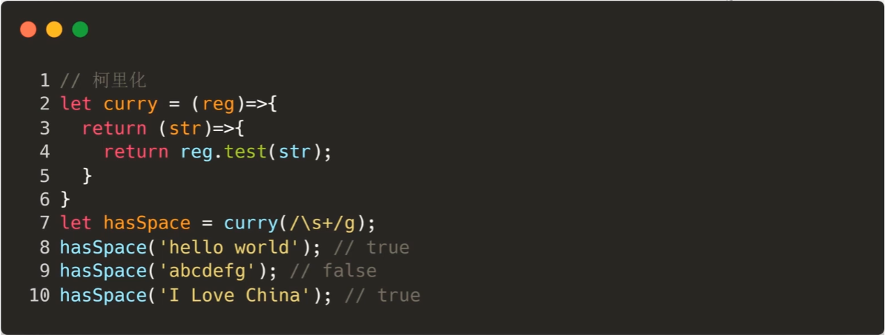
或者从对象数组中取某一个字符的值

在调用 getProp("age") 之后，这个的返回值，就变成了接受一个对象并返回对象的 age 属性的函数，放在 map 中就很舒服了。
偏函数
如果说，柯里化是将一个多参数函数转换成多个单参数函数，也就是将一个 n 元函数转换成 n 个一元函数。
那么偏函数就是固定一个函数的一个或者多个参数，也就是将一个 n 元函数转换成一个 n-x 元函数。
也就是：
柯里化： f(a,b,c) => f(a)(b)(c)
偏函数： f(a,b,c) => f(a,b)(c)
可以简单实用 bind 来实现
let add = (x, y) => x + y;
let rst = add.bind(null, 1);
rst(2); // 3
时间窗口
在一定时间内，如果请求同一个 url，则只请求一次。
const fetch = require("node-fetch");
function hash(...args) {
return args.join(",");
}
function window_request(f, time = 50) {
let w = {};
// 是否有时间窗口
let flag = false;
return (...args) => {
return new Promise((resolve) => {
// 如果w中没有这次请求（通过hash存入）, 如果有，则在最后 L54 将resolve存入到对应的resolvers里
if (!w[hash(args)]) {
w[hash(args)] = {
func: f,
args,
// 将不同的request的resolve也添加进来，方便最后统一做处理。
resolvers: [],
};
}
// 如果没有时间窗口
if (!flag) {
// 接下来是创建一个时间窗口
console.log("create a window");
flag = true;
setTimeout(() => {
// 对w中每一个请求进行处理。
Object.keys(w).forEach((key) => {
// 获取参数进行执行
const { func, args, resolvers } = w[key];
console.log("run once ---- ", resolvers.length);
func(...args)
.then((res) => {
return res.text();
})
.then((t) => {
// 将获取到的结果批量放到resolve中处理
resolvers.forEach((r) => {
console.log("result anywhere");
r(t);
});
// 重置访问窗口
flag = false;
w = {};
});
});
}, time);
}
w[hash(args)].resolvers.push(resolve);
});
};
}
const request = window_request(fetch, 20);
request("https://www.baidu.com");
request("https://www.baidu.com");
request("https://www.baidu.com");
request("https://www.baidu.com");
request("https://www.baidu.com");
request("https://www.baidu.com");
request("https://www.baidu.com");
console.log("break");
setTimeout(() => {
request("https://www.baidu.com");
request("https://www.baidu.com");
request("https://www.baidu.com");
request("https://www.baidu.com");
request("https://www.baidu.com");
request("https://www.baidu.com");
request("https://www.baidu.com");
}, 10000);
指数补偿
在网络环境不稳定的情况下，以指数级别的时间间隔发送请求，直到任意某一次请求得到了返回
function request(url) {
// 判断是否已经完成请求
let resolved = false;
// 次数
let t = 1;
return new Promise((resolve, reject) => {
function doFetch() {
// 如果已经完成请求，或者次数已达上限，则直接返回
if (resolved || t > 16) {
return;
}
// 否则发送请求
fetch(url).then((resp) => {
// 如果标记还处在未完成的状态
if (!resolved) {
// 将结果返回
resolve(resp);
// 将标记置为已完成
resolved = true;
}
});
// 指数级的时间间隔发送请求
setTimeout(() => {
// 调用自己
doFetch();
t *= 2;
}, t * 100);
}
// 首次调用
doFetch();
});
}
问题引入
最近一直在看原型继承相关的东西，翻到这么一篇文章： 从 ES6 中的 extends 讲 js 原型链与继承
文中有一个点让我很感兴趣，箭头函数在继承过程中无法通过 super 关键字获取，这是为什么呢？
前置知识
MDN 上关于 super 的介绍
The super keyword is used to access and call functions on an object's parent - in MDN 大概有这么几个关键点：
- 子类中存在 constructor 方法的时候，需要调用 super 方法，并且需要在使用 this 关键字之前调用
- super 关键字可以用来调用父对象上的方法
- 可以使用 super 来调用父对象上的静态方法
- 不可以使用 delete 来删除 super 上的属性
- 不可以复写 super 对象上的只读属性
子类中是否必须主动调用 super 方法？
我的看法是不需要。 网上有些文章（比如这篇）写道：
因为若不执行 super，则 this 无法初始化。
我的个人理解是，this 是指代执行上下文环境的，不存在无法初始化的情况。更准确的说法是这样：如果不使用 super 方法，那么父类中的属性值无法进行初始化，如果这个时候子类通过 this 字段来访问了父类中的属性值，那么只能得到一个 undefined。至于为什么这么写编译的时候会报错？我的理解是，这应该是一种语法错误，而且是一种规范要求，ES6 语法的规范要求，这种要求并不是说会影响到代码的实际执行。举个栗子：
// typescript中一段简单的继承代码实现
class Parent {
name = 'parent';
func = function() {
console.log('func in parent called.');
}
}
class Child extends Parent {
age = 3;
func = function() {
console.log('age is: ', this.age); // 使用了this，不会报错
}
}
这段代码非常简单，在子类中使用了 this 关键字，编译时不会报错，也可以正常执行。然后我们进行一点修改，在子类中引入 constructor 方法
class Child extends Parent {
age = 3;
// error TS2377: Constructors for derived classes must contain a 'super' call.
constructor() {
}
func = function() {
console.log('age is: ', this.age);
}
}
可以看到，编译阶段已经开始报错了。在 typescript 的语法中，子类的 constructor 方法中不但需要调用 super 方法，而且必须在第一行代码就调用 super，否则都是会报错的。看下面这段代码:
class Child extends Parent {
age = 3;
constructor() {
console.log('First line in constructor without super method');
super(); // error TS2376: A 'super' call must be the first statement in the constructor when a class contains initialized properties or has parameter properties.
}
func = function() {
console.log('age is: ', this.age);
}
}
来，我们接着改
class Parent {
name = 'parent';
func = function() {
console.log('func in parent called.');
}
}
class Child extends Parent {
age = 3;
constructor() {
console.log('Show property of parent, name is: ', this.name); // error TS17009: 'super' must be called before accessing 'this' in the constructor of a derived class.
console.log('Show property of child, age is: ', this.age); // error TS17009: 'super' must be called before accessing 'this' in the constructor of a derived class.
super(); // error TS2376: A 'super' call must be the first statement in the constructor when a class contains initialized properties or has parameter properties.
console.log('Show property of parent, name is: ', this.name);
console.log('Show property of child, age is: ', this.age);
}
func = function() {
console.log('age is: ', this.age);
}
}
可以看到，编译期已经开始报各种错误了，不过这不重要，我们这里利用 typescript 的编译器（tsc）来进行编译，并查看编译后的代码内容：
var __extends = (this && this.__extends) || (function () {
var extendStatics = Object.setPrototypeOf ||
({ __proto__: [] } instanceof Array && function (d, b) { d.__proto__ = b; }) ||
function (d, b) { for (var p in b) if (b.hasOwnProperty(p)) d[p] = b[p]; };
return function (d, b) {
extendStatics(d, b);
function __() { this.constructor = d; }
d.prototype = b === null ? Object.create(b) : (__.prototype = b.prototype, new __());
};
})();
var Parent = (function () {
function Parent() {
this.name = 'parent';
this.func = function () {
console.log('func in parent called.');
};
}
return Parent;
}());
var Child = (function (_super) {
__extends(Child, _super);
function Child() {
var _this = this;
_this.age = 3;
_this.func = function () {
console.log('age is: ', this.age);
};
console.log('Show property of parent, name is: ', _this.name); // 输出undefined，因为此时子类的实例上还没有继承到父类的属性值
console.log('Show property of child, age is: ', _this.age); // 输出3，子类实例自己的属性值可以访问
_this = _super.call(this) || this; // 构造函数式的继承实现，这一步就是讲父类的属性值设置到子类实例上
console.log('Show property of parent, name is: ', _this.name); // 输出parent，此时子类的实例上经过上一步的继承，得到了父类的属性值
console.log('Show property of child, age is: ', _this.age); // 输出3，子类实例自己的属性值可以访问
return _this;
}
return Child;
}(Parent));
//# sourceMappingURL=demo.js.map
由此可以知道，在 ES6 中使用 extends 进行继承操作的过程中，
- 子类并非必须调用 super 方法，除非存在 constructor 方法
- 在 constructor 方法中应该首先调用 super 方法，这是语法要求，不过这不是必须的
- 在调用 super 方法之前，将无法通过 this 关键字来访问父类的属性（这里就可以解释其他文章中提到的 ‘若不执行 super，则 this 无法初始化’，更准确的说法应该是‘若不执行 super，则无法将父类的属性值初始化到当前子类实例上’）
子类中使用 super.prop 和 super[expr]的方式是如何访问父类的属性和方法？
我们直接来看代码吧,关键点都注释了的
class Parent {
public name = 'parent';
public static staticName = 'staticParent';
public static staticFunc() {
console.log('staticFunc called in parent.');
}
public arrowFunc = () => {
console.log('arrowFunc called in parent.');
}
public normalFunc() {
console.log('normalFunc called in parent.')
}
}
class Child extends Parent {
public static staticFunc() {
super.staticFunc();
console.log('staticFunc called in Child.');
}
arrowFunc = () => {
super.arrowFunc();
console.log('arrowFunc called in Child.');
}
normalFunc() {
super.normalFunc();
console.log('normalFunc called in Child.')
}
getName() {
console.log('parent name is: ', super.name);
console.log('parent staticName is: ', super.staticName);
console.log('child name is: ', this.name);
}
}
/** 编译后的代码 **/
var __extends = (this && this.__extends) || (function () {
var extendStatics = Object.setPrototypeOf ||
({ __proto__: [] } instanceof Array && function (d, b) { d.__proto__ = b; }) ||
function (d, b) { for (var p in b) if (b.hasOwnProperty(p)) d[p] = b[p]; };
return function (d, b) {
extendStatics(d, b);
function __() { this.constructor = d; }
d.prototype = b === null ? Object.create(b) : (__.prototype = b.prototype, new __());
};
})();
var Parent = (function () {
function Parent() {
this.name = 'parent';
this.arrowFunc = function () {
console.log('arrowFunc called in parent.');
};
}
// 编译后的静态方法可以存在于Parent类的内部
Parent.staticFunc = function () {
console.log('staticFunc called in parent.');
};
Parent.prototype.normalFunc = function () {
console.log('normalFunc called in parent.');
};
return Parent;
}());
Parent.staticName = 'staticParent'; // 编译后的静态属性依然存在于Parent类外
var Child = (function (_super) {
__extends(Child, _super);
function Child() {
var _this = _super !== null && _super.apply(this, arguments) || this;
_this.arrowFunc = function () { // 子类实例调用arrowFunc的时候会报错，因为_super.prototype上是不存在arrowFunc方法的
_super.prototype.arrowFunc.call(_this); // Uncaught TypeError: Cannot read property 'call' of undefined
console.log('arrowFunc called in Child.');
};
return _this;
}
Child.staticFunc = function () {
_super.staticFunc.call(this); // super可以正常访问父类的静态方法
console.log('staticFunc called in Child.');
};
Child.prototype.normalFunc = function () {
_super.prototype.normalFunc.call(this);
console.log('normalFunc called in Child.');
};
Child.prototype.getName = function () {
console.log('parent name is: ', _super.prototype.name); // 输出undefined， 父类原型（_super.prototype）上不存在name属性
console.log('parent staticName is: ', _super.prototype.staticName); // 输出undefined，super无法正常访问父类的静态属性
console.log('child name is: ', this.name); // 输出parent，这是子类实例上的属性，继承自父类
};
return Child;
}(Parent));
//# sourceMappingURL=demo.js.map
这里再顺嘴提一句，关于静态属性和静态方法的区别。为什么在子类中通过 super 关键字来获取父类的静态方法经过编译后是_super.staticFunc，而获取静态属性依然是_super.prototype.staticName，从原型上获取导致获取失败呢？这个问题目前我还没有找到答案，希望有知道的小伙伴可以不吝指教。 不过我倒是搜到一些其他相关内容。 Class 的静态属性和实例属性
因为 ES6 明确规定，Class 内部只有静态方法，没有静态属性。
虽然这种规定从 ES7 开始得到了修正，我们目前已经可以将静态属性写在 Class 的内部，但是经过编译之后可以发现，静态属性依然存在于类的实现的外部。
var Parent = (function () {
function Parent() {
this.name = 'parent';
this.arrowFunc = function () {
console.log('arrowFunc called in parent.');
};
}
// 编译后的静态方法可以存在于Parent类的内部
Parent.staticFunc = function () {
console.log('staticFunc called in parent.');
};
Parent.prototype.normalFunc = function () {
console.log('normalFunc called in parent.');
};
return Parent;
}());
Parent.staticName = 'staticParent'; // 编译后的静态属性依然存在于Parent类外
回到问题本身
问：箭头函数在继承过程中无法通过 super 关键字获取，这是为什么呢？ 答：因为子类中使用 super.prop 和 super[expr]的方式获取的是父类原型（prototype）上的方法，静态方法除外。
参考资料
从 ES6 中的 extends 讲 js 原型链与继承 React ES6 class constructor super() Class 的静态属性和实例属性
Require 和 import 和 export 等
这篇文章主要给大家介绍了关于 javascript 中 require 、 import 与 export
的相关资料，文中通过示例代码介绍的非常详细，对打击大的学习或者工作具有一定的参考学习价值，需要的朋友们下面随着小编来一起学习学习吧。
前言
本文主要给大家介绍了关于 javascript 中 require 、 import 与 export 的相关内容，分享出来供大家参考学习，下面话不多说了，来一起看看详细的介绍吧。
为什么有模块概念
理想情况下，开发者只需要实现核心的业务逻辑，其他都可以加载别人已经写好的模块。
但是， Javascript 不是一种模块化编程语言，在 es6 以前，它是不支持”类”（ class ），所以也就没有”模块”（ module ）了。
require 时代
Javascript 社区做了很多努力，在现有的运行环境中，实现”模块”的效果。
原始写法
模块就是实现特定功能的一组方法。 只要把不同的函数（以及记录状态的变量）简单地放在一起，就算是一个模块。
function m1() {
//...
}
function m2() {
//...
}
上面的函数 m1() 和 m2() ，组成一个模块。使用的时候，直接调用就行了。
这种做法的缺点很明显：”污染”了全局变量，无法保证不与其他模块发生变量名冲突，而且模块成员之间看不出直接关系。
对象写法
为了解决上面的缺点，可以把模块写成一个对象，所有的模块成员都放到这个对象里面
var module1 = new Object({
_count: 0,
m1: function () {
//...
},
m2: function () {
//...
},
});
上面的函数 m1() 和 m2()，都封装在 module 1 对象里。使用的时候，就是调用这个对象的属性
module1.m1();
这样的写法会暴露所有模块成员，内部状态可以被外部改写。比如，外部代码可以直接改变内部计数器的值。
module._count = 1;
立即执行函数写法(闭包缓存)
使用”立即执行函数”（Immediately-Invoked Function Expression，IIFE），可以达到不暴露私有成员的目的
var module = (function () {
var _count = 0;
var m1 = function () {
alert(_count);
};
var m2 = function () {
alert(_count + 1);
};
return {
m1: m1,
m2: m2,
};
})();
使用上面的写法，外部代码无法读取内部的 _count 变量。
console.info(module._count); //undefined
module 就是 Javascript 模块的基本写法。
主流模块规范
在 es6 以前，还没有提出一套官方的规范,从社区和框架推广程度而言,目前通行的 javascript 模块规范有两种： CommonJS 和 AMD
CommonJS 规范
2009 年，美国程序员 Ryan Dahl 创造了 node.js 项目，将 javascript 语言用于服务器端编程。
这标志”Javascript 模块化编程”正式诞生。前端的复杂程度有限，没有模块也是可以的，但是在服务器端，一定要有模块，与操作系统和其他应用程序互动，否则根本没法编程。
node 编程中最重要的思想之一就是模块，而正是这个思想，让 JavaScript 的大规模工程成为可能。模块化编程在 js 界流行，也是基于此，随后在浏览器端， requirejs
和 seajs 之类的工具包也出现了，可以说在对应规范下， require 统治了 ES6 之前的所有模块化编程，即使现在，在 ES6 module 被完全实现之前，还是这样。
在 CommonJS 中,暴露模块使用 module . exports 和 exports ，很多人不明白暴露对象为什么会有两个,后面会介绍区别
在 CommonJS 中，有一个全局性方法 require() ，用于加载模块。假定有一个数学模块 math.js，就可以像下面这样加载。
var math = require("math");
然后，就可以调用模块提供的方法：
var math = require("math");
math.add(2, 3); // 5
正是由于 CommonJS 使用的 require 方式的推动，才有了后面的 AMD 、 CMD 也采用的 require 方式来引用模块的风格
AMD 规范
有了服务器端模块以后，很自然地，大家就想要客户端模块。而且最好两者能够兼容，一个模块不用修改，在服务器和浏览器都可以运行。
但是，由于一个重大的局限，使得 CommonJS 规范不适用于浏览器环境。还是上一节的代码，如果在浏览器中运行，会有一个很大的问题
var math = require("math");
math.add(2, 3);
第二行 math.add(2, 3) ，在第一行 require('math') 之后运行，因此必须等 math.js 加载完成。也就是说，如果加载时间很长，整个应用就会停在那里等。
这对服务器端不是一个问题，因为所有的模块都存放在本地硬盘，可以同步加载完成，等待时间就是硬盘的读取时间。但是，对于浏览器，这却是一个大问题，因为模块都放在服务器端，等待时间取决于网速的快慢，可能要等很长时间，浏览器处于”假死”状态。
因此，浏览器端的模块，不能采用”同步加载”（ synchronous ），只能采用”异步加载”（ asynchronous ）。这就是 AMD 规范诞生的背景。
AMD 是 Asynchronous Module Definition
的缩写，意思就是”异步模块定义”。它采用步方式加载模块，模块的加载不影响它后面语句的运行。所有依赖这个模块的语句，都定义在一回调函数中，等到加载完成之后，这个回调函数才会运行。
模块必须采用特定的 define() 函数来定义。
define(id?, dependencies?, factory);
- id:字符串，模块名称(可选)
- dependencies: 是我们要载入的依赖模块(可选)，使用相对路径。,注意是数组格式
- factory: 工厂方法，返回一个模块函数
如果一个模块不依赖其他模块，那么可以直接定义在 define() 函数之中。
// math.js
define(function () {
var add = function (x, y) {
return x + y;
};
return {
add: add,
};
});
如果这个模块还依赖其他模块，那么 define() 函数的第一个参数，必须是一个数组，指明该模块的依赖性。
define(["Lib"], function (Lib) {
function foo() {
Lib.doSomething();
}
return {
foo: foo,
};
});
当 require() 函数加载上面这个模块的时候，就会先加载 Lib.js 文件。
AMD 也采用 require() 语句加载模块，但是不同于 CommonJS ，它要求两个参数：
require([module], callback);
第一个参数 [module] ，是一个数组，里面的成员就是要加载的模块；第二个参数 callback ，则是加载成功之后的回调函数。如果将前面的代码改写成 AMD 形式，就是下面这样：
require(["math"], function (math) {
math.add(2, 3);
});
math.add() 与 math 模块加载不是同步的，浏览器不会发生假死。所以很显然， AMD 比较适合浏览器环境。
目前，主要有两个 Javascript 库实现了 AMD 规范：require.js 和 curl.js。
CMD 规范
CMD (Common Module Definition), 是 seajs 推崇的规范， CMD 则是依赖就近，用的时候再 require 。它写起来是这样的：
define(function (require, exports, module) {
var clock = require("clock");
clock.start();
});
CMD 与 AMD 一样，也是采用特定的 define() 函数来定义,用 require 方式来引用模块
define(id?, dependencies?, factory);
- id:字符串，模块名称(可选)
- dependencies: 是我们要载入的依赖模块(可选)，使用相对路径。,注意是数组格式
- factory: 工厂方法，返回一个模块函数
define("hello", ["jquery"], function (require, exports, module) {
// 模块代码
});
如果一个模块不依赖其他模块，那么可以直接定义在 define() 函数之中。
define(function (require, exports, module) {
// 模块代码
});
注意：带 id 和 dependencies 参数的 define 用法不属于 CMD 规范，而属于 Modules/Transport 规范。
CMD 与 AMD 区别
AMD和 CMD 最大的区别是对依赖模块的执行时机处理不同，而不是加载的时机或者方式不同，二者皆为异步加载模块。
AMD 依赖前置， js 可以方便知道依赖模块是谁，立即加载；
而 CMD 就近依赖，需要使用把模块变为字符串解析一遍才知道依赖了那些模块，这也是很多人诟病 CMD 的一点，牺牲性能来带来开发的便利性，实际上解析模块用的时间短到可以忽略。
现阶段的标准
ES6 标准发布后， module 成为标准，标准使用是以 export 指令导出接口，以 import 引入模块，但是在我们一贯的 node 模块中，我们依然采用的是
CommonJS 规范，使用 require 引入模块，使用 module.exports 导出接口。
export 导出模块
export 语法声明用于导出函数、对象、指定文件（或模块）的原始值。
注意：在 node 中使用的是 exports ,不要混淆了
export 有两种模块导出方式：命名式导出（名称导出）和默认导出（定义式导出），命名式导出每个模块可以多个，而默认导出每个模块仅一个。
export { name1, name2, …, nameN };
export { variable1 as name1, variable2 as name2, …, nameN };
export let name1, name2, …, nameN; // also var
export let name1 = …, name2 = …, …, nameN; // also var, const
export default expression;
export default function (…) { … } // also class, function*
export default function name1(…) { … } // also class, function*
export { name1 as default, … };
export * from …;
export { name1, name2, …, nameN } from …;
export { import1 as name1, import2 as name2, …, nameN } from …;
name1… nameN－导出的“标识符”。导出后，可以通过这个“标识符”在另一个模块中使用import引用default－设置模块的默认导出。设置后import不通过“标识符”而直接引用默认导入- －继承模块并导出继承模块所有的方法和属性
as－重命名导出“标识符”from－从已经存在的模块、脚本文件…导出
命名式导出
模块可以通过 export 前缀关键词声明导出对象，导出对象可以是多个。这些导出对象用名称进行区分，称之为命名式导出。
export { myFunction }; // 导出一个已定义的函数
export const foo = Math.sqrt(2); // 导出一个常量
我们可以使用 * 和 from 关键字来实现的模块的继承：
export * from "article";
模块导出时，可以指定模块的导出成员。导出成员可以认为是类中的公有对象，而非导出成员可以认为是类中的私有对象：
var name = "IT笔录";
var domain = "http://itbilu.com";
export { name, domain }; // 相当于导出{name:name,domain:domain}
模块导出时，我们可以使用 as 关键字对导出成员进行重命名：
var name = "IT笔录";
var domain = "http://itbilu.com";
export { name as siteName, domain };
注意：下面的语法有严重错误的情况：
// 错误演示
export 1; // 绝对不可以
var a = 100;
export a;
export 在导出接口的时候，必须与模块内部的变量具有一一对应的关系。直接导出 1 没有任何意义，也不可能在 import 的时候有一个变量与之对应
export a 虽然看上去成立，但是 a 的值是一个数字，根本无法完成解构，因此必须写成 export {a} 的形式。即使 a 被赋值为一个 function
，也是不允许的。而且，大部分风格都建议，模块中最好在末尾用一个 export 导出所有的接口，例如：
export { fun as default, a, b, c };
默认导出
默认导出也被称做定义式导出。命名式导出可以导出多个值，但在在 import
引用时，也要使用相同的名称来引用相应的值。而默认导出每个导出只有一个单一值，这个输出可以是一个函数、类或其它类型的值，这样在模块 import 导入时也会很容易引用。
export default function() {}; // 可以导出一个函数
export default class(){}; // 也可以出一个类
命名式导出与默认导出
默认导出可以理解为另一种形式的命名导出，默认导出可以认为是使用了 default 名称的命名导出。
下面两种导出方式是等价的：
const D = 123;
export default D;
export { D as default };
export 使用示例
使用名称导出一个模块时：
// "my-module.js" 模块
export function cube(x) {
return x * x * x;
}
const foo = Math.PI + Math.SQRT2;
export { foo };
在另一个模块（脚本文件）中，我们可以像下面这样引用：
import { cube, foo } from "my-module";
console.log(cube(3)); // 27
console.log(foo); // 4.555806215962888
使用默认导出一个模块时：
// "my-module.js"模块
export default function (x) {
return x * x * x;
}
在另一个模块（脚本文件）中，我们可以像下面这样引用，相对名称导出来说使用更为简单：
// 引用 "my-module.js"模块
import cube from "my-module";
console.log(cube(3)); // 27
import 引入模块
import 语法声明用于从已导出的模块、脚本中导入函数、对象、指定文件（或模块）的原始值。
import 模块导入与 export 模块导出功能相对应，也存在两种模块导入方式：命名式导入（名称导入）和默认导入（定义式导入）。
import 的语法跟 require 不同，而且 import 必须放在文件的最开始，且前面不允许有其他逻辑代码，这和其他所有编程语言风格一致。
import defaultMember from "module-name";
import * as name from "module-name";
import { member } from "module-name";
import { member as alias } from "module-name";
import { member1 , member2 } from "module-name";
import { member1 , member2 as alias2 , [...] } from "module-name";
import defaultMember, { member [ , [...] ] } from "module-name";
import defaultMember, * as name from "module-name";
import "module-name";
- name－从将要导入模块中收到的导出值的名称
- member, memberN－从导出模块，导入指定名称的多个成员
- defaultMember－从导出模块，导入默认导出成员
- alias, aliasN－别名，对指定导入成员进行的重命名
- module-name－要导入的模块。是一个文件名
- as－重命名导入成员名称（“标识符”）
- from－从已经存在的模块、脚本文件等导入
命名式导入
我们可以通过指定名称，就是将这些成员插入到当作用域中。导出时，可以导入单个成员或多个成员：
注意：花括号里面的变量与 export 后面的变量一一对应
import { myMember } from "my-module";
import { foo, bar } from "my-module";
通过*符号，我们可以导入模块中的全部属性和方法。当导入模块全部导出内容时，就是将导出模块（my-module.js）所有的导出绑定内容，插入到当前模块（myModule）的作用域中：
import * as myModule from "my-module";
导入模块对象时，也可以使用 as 对导入成员重命名，以方便在当前模块内使用：
import {reallyReallyLongModuleMemberName as shortName} from "my-module";
导入多个成员时，同样可以使用别名：
import {reallyReallyLongModuleMemberName as shortName, anotherLongModuleName as short} from "my-module";
导入一个模块，但不进行任何绑定：
import "my-module";
默认导入
在模块导出时，可能会存在默认导出。同样的，在导入时可以使用 import 指令导出这些默认值。
直接导入默认值：
import myDefault from "my-module";
也可以在命名空间导入和名称导入中，同时使用默认导入：
import myDefault, * as myModule from "my-module"; // myModule 做为命名空间使用
或
import myDefault, {foo, bar} from "my-module"; // 指定成员导入
import 使用示例
// --file.js--
function getJSON(url, callback) {
let xhr = new XMLHttpRequest();
xhr.onload = function () {
callback(this.responseText)
};
xhr.open("GET", url, true);
xhr.send();
}
export function getUsefulContents(url, callback) {
getJSON(url, data => callback(JSON.parse(data)));
}
// --main.js--
import { getUsefulContents } from "file";
getUsefulContents("http://itbilu.com", data => {
doSomethingUseful(data);
});
default 关键字
// d.js
export default function() {}
// 等效于：
function a() {};
export {a as default};
在 import 的时候，可以这样用：
import a from './d';
// 等效于，或者说就是下面这种写法的简写，是同一个意思
import {default as a} from './d';
这个语法糖的好处就是 import 的时候，可以省去花括号{}。
简单的说，如果 import 的时候，你发现某个变量没有花括号括起来（没有*号），那么你在脑海中应该把它还原成有花括号的 as 语法。
所以，下面这种写法你也应该理解了吧：
import $,{each,map} from 'jquery';
import 后面第一个$是{defalut as $}的替代写法。
as 关键字
as 简单的说就是取一个别名,export 中可以用，import 中其实可以用：
// a.js
var a = function() {};
export {a as fun};
// b.js
import {fun as a} from './a';
a();
上面这段代码，export 的时候，对外提供的接口是 fun，它是 a.js 内部 a 这个函数的别名，但是在模块外面，认不到 a，只能认到 fun。
import 中的 as 就很简单，就是你在使用模块里面的方法的时候，给这个方法取一个别名，好在当前的文件里面使用。之所以是这样，是因为有的时候不同的两个模块可能通过相同的接口，比如有一个 c.js 也通过了 fun 这个接口：
// c.js
export function fun() {};
如果在 b.js 中同时使用 a 和 c 这两个模块，就必须想办法解决接口重名的问题，as 就解决了。
CommonJS 中 module.exports 与 exports 的区别
Module.exports
The module.exports object is created by the Module system. Sometimes this is not acceptable; many want their module to be an instance of some class. To do this, assign the desired export object to module.exports. Note that assigning the desired object to exports will simply rebind the local exports variable, which is probably not what you want to do.
译文：module.exports 对象是由模块系统创建的。 有时这是难以接受的；许多人希望他们的模块成为某个类的实例。 为了实现这个，需要将期望导出的对象赋值给 module.exports。 注意，将期望的对象赋值给 exports 会简单地重新绑定到本地 exports 变量上，这可能不是你想要的。
Module.exports
The exports variable is available within a module's file-level scope, and is assigned the value of module.exports before the module is evaluated. It allows a shortcut, so that module.exports.f = … can be written more succinctly as exports.f = …. However, be aware that like any variable, if a new value is assigned to exports, it is no longer bound to module.exports:
译文：exports 变量是在模块的文件级别作用域内有效的，它在模块被执行前被赋于 module.exports 的值。它有一个快捷方式，以便 module.exports.f = …可以被更简洁地写成 exports.f = …。 注意，就像任何变量，如果一个新的值被赋值给 exports，它就不再绑定到 module.exports(其实是 exports.属性会自动挂载到没有命名冲突的 module.exports.属性)
从 Api 文档上面的可以看出，从 require 导入方式去理解，关键有两个变量(全局变量 module.exports，局部变量 exports)、一个返回值(module.exports)
function require(...) {
var module = { exports: {} };
((module, exports) => {
// 你的被引入代码 Start
// var exports = module.exports = {}; (默认都有的)
function some_func() {};
exports = some_func;
// 此时，exports不再挂载到module.exports，
// export将导出{}默认对象
module.exports = some_func;
// 此时，这个模块将导出some_func对象，覆盖exports上的some_func
// 你的被引入代码 End
})(module, module.exports);
// 不管是exports还是module.exports，最后返回的还是module.exports
return module.exports;
}
demo.js:
console.log(exports); // {}
console.log(module.exports); // {}
console.log(exports === module.exports); // true
console.log(exports == module.exports); // true
console.log(module);
/**
Module {
id: '.',
exports: {},
parent: null,
filename: '/Users/larben/Desktop/demo.js',
loaded: false,
children: [],
paths:
[ '/Users/larben/Desktop/node_modules',
'/Users/larben/node_modules',
'/Users/node_modules',
'/node_modules' ] }
*/
注意
每个 js 文件一创建，都有一个 var exports = module.exports = {} , 使 exports 和 module.exports 都指向一个空对象。
module.exports 和 exports 所指向的内存地址相同
总结
以上就是这篇文章的全部内容了，希望本文的内容对大家的学习或者工作能带来一定的帮助，如果有疑问大家可以留言交流，谢谢大家对脚本之家的支持。
模块支持方案
webpack 支持 CommonJS（配置文件是 Node 环境下运行的），AMD，ES6 Module 规范。
核心概念
从 entry 进入项目，经过 loader、plugin 打包，之后输出 output
entry、output
entry可以是单个字符串，也可以是一个字符串数组（多入口），一般写成对象格式。 key表示名字，value表示入口文件。
详细可以参考官方文档。
module.exports = {
// entry: 'xxx',
// entry: ['a', 'b'],
entry: {
app: "./app.js",
app2: "./app2.js",
},
};
output就是输出的结果文件。官方文档。
const path = require("path");
module.exports = {
entry: {
app: "./app.js",
},
output: {
path: path.resolve(__dirname, "dist"),
filename: "[name].[hash:6].[id].[chunkhash].bundle.js", // name对应上面enrty的key
},
};
loader
是webpack的编译方法，webpack自身只能处理JavaScript，所以需要依赖loader来处理别的类型的资源文件。
webpack只能负责打包，相关的编译工作也需要依赖loader处理。 loader本质上只是一个方法，使用时基本需要额外安装。
使用时，在rules数组中使用，loader的执行顺序符合从右往左（从下到上、从数组的最后执行到第一个，compose）
module.exports = {
module: {
rules: [
{
test: /\.css$/, // 用正则匹配什么类型的文件
use: [
{ loader: "style-loader" }, // 用什么loader处理
{
loader: "css-loader",
options: {
// loader的配置项
modules: true,
},
},
{ loader: "sass-loader" },
],
},
],
},
};
常见的 loader
css-loader，style-loader等处理css的loaderurl-loader，image-loader等图片文字文件等资源处理的loaderless-loader，sass-loader，babel-loader等编译loadervue-loader等语法糖loader
plugin
plugin是webpack的额外扩展：
- 一些插件式的额外功能由
plugin定义，帮助webpack优化代码，提供功能。 plugin也有一些是webpack自带的，也有需要额外安装的。
const HtmlWebpackPlugin = require("html-webpack-plugin");
const webpack = require("webpack"); // 访问内置的插件
const path = require("path");
module.exports = {
entry: "./path/to/my/entry/file.js",
output: {
filename: "my-first-webpack.bundle.js",
path: path.resolve(__dirname, "dist"),
},
module: {
rules: [
{
test: /\.(js|jsx)$/,
use: "babel-loader",
},
],
},
plugins: [
new webpack.ProgressPlugin(),
new HtmlWebpackPlugin({ template: "./src/index.html" }),
],
};
常见的 plugin
commonsChunkPlugin，uglifyjsWebpackPlugin，PurifyCss等优化文件体积的插件
HtmlWebpackPlugin，HotModuleReplacementPlugin等
编译 ES6
需要安装的 loader
npm install babel-loader @babel/core --save-dev
Babel-preset
presets 是存储 JavaScript 不同标准的插件，通过正确使用 presets，来告诉 babel 按照哪个规范编译。 常见规范：
- es2015
- es2016
- es2017
- env（通常采用，包括上面的三个和浏览器规范）
- babel-preset-stage
npm install @babel/preset-env --save-dev
编译 ES6 的方法
babel-polyfill 在打包代码里注入一个全局对象里，对象里定义了 ES6 所有的方法的 ES5 实现。适用于项目开发。
可以在入口文件中直接import 'babel-polifill' 也可以在 entry 中新增 babel-polyfill
babel-plugin-transform-runtime 生成一个局部对象，只会生成使用过的方法的实现。一般适用于框架开发。严格控制大小。
npm install babel-polyfill --save-dev
npm install @babel/plugin-transform-runtime @babel/runtime --save
webpack 配置
module.exports = {
entry: {
app: "./app.js",
},
output: {
filename: "[name].[hash:8].js",
},
module: {
rules: [
{
test: /\.js$/,
use: {
loader: "babel-loader",
options: {
presets: [
[
"@babel/preset-env",
{
targets: {
browsers: [">1%"],
},
},
],
],
},
},
},
],
},
};
编译 Typescript
- 安装 Typescript 和 ts-loader
- 写入 webpack.config.js
- 配置 tsconfig.json
编译 css
css-loader，让css可以被js正确的引入style-loader，让css被引入后可以正确的以一个style标签插入页面- 必须先过
css-loader，再过style-loader
style-loader 的一些配置项
insertAt:style标签插入在哪一块区域insertInto: 插入指定的domsingleton: 是否合并为一个style标签transform: 在浏览器环境下，插入style到页面前，用js对css进行操作
css-loader 的一些核心配置
minimize: 是否压缩（webpack4以上不支持这个，推荐使用uglifyjsWebpackPlugin)module: 是否进行css模块化alias:css中的全局别名（webpack4以上不支持这个）
less，sass
是 css 的预处理语言
less: less，less-loader sass： sass-loader， node-sass
{
rules: [
{
test: /\.less$/,
use: [{
loader: "style-loader",
options: {
// insertInto: "xxx",
singleton: true,
transform: "./transform.js"
}
},
{
loader: "css-loader",
options: {
modules: {
localIdentName: "[path][name]_[local]_[hash:4]"
}
}
},
{
loader: "less-loader"
}]
},
],
}
提取 css 代码
extract-text-webpack-plugin把 css 提取为单独的文件
{
rules: [
{
test: /\.less$/,
use: extractTextCss.extract({
fallback: {
loader: "style-loader",
options: {
// insertInto: "xxx",
singleton: true,
transform: "./transform.js"
}
},
use: [
{
loader: "css-loader",
options: {
modules: {
localIdentName: "[path][name]_[local]_[hash:4]"
}
}
},
{
loader: "less-loader"
}
]
})
},
],
// ...
plugins: [
new extractTextCss({filename: '[name].min.css'})
]
}
css 兼容性处理
post-css，再配合 browserlist
HTML 的处理和打包
html-webpack-plugin
filename指定打包生成的html的名字template指定一个html文件为模板minify压缩htmlinject是否把js，css文件插入到html，插入到哪里chunks多入口时，指定引入chunks
new htmlWebpackPlugin({
filename: "index.html",
template: "./index.html",
});
环境变量
env 参数可以根据不同的指定，产生不同的配置文件，用来适应生产、测试、开发环境的不同需求
图片处理
url-loader，file-loader，img-loader
{
test: /\.(png|jpg|jpeg|gif)$/,
use: {
loader: 'file-loader',
options: {
name:'[name].[hash].[ext]',
outputPath: '',
publicPath: ''
}
}
}
url-loader 可以多一些参数配置
{
test: /\.(png|jpg|jpeg|gif)$/,
use: {
loader: 'url-loader',
options: {
name:'[name].[hash].[ext]',
outputPath: '',
publicPath: '',
limit: 5000 //可以将小的资源文件进行base64转码
}
}
}
img-loader 可以进行图片压缩
{
test: /\.(png|jpg|jpeg|gif)$/,
use: [{
loader: 'url-loader',
options: {
name:'[name].[hash].[ext]',
outputPath: '',
publicPath: '',
limit: 5000 //可以将小的资源文件进行base64转码
}
}, {
loader: 'img-loader',
options: {
plugins: [
require('imagemin-pngquant')({
speed: 5 // 1-11，越大，压缩率越小
}),
require('imagemin-mozjpeg')({
quality: 80 // 1-100，质量，压缩率
}),
require('imagemin-gifsicle')({
optimizationLevel: 1, // 1-3
}),
]
}
}]
}
代码分割
多入口要配置多个 HTMLWebpackPlugin，filename 和 chunks 也要指定好
多页面应用时需要提取公共依赖，打包成一个文件。（主业务代码+公共依赖+第三方包+webpack 运行代码）
单页面应用主要是把需要异步加载改成异步加载，把业务代码和第三方代码拆分，保持纯净。（主业务代码+异步模块+第三方包+webpack 运行代码）
- webpack3， commonChunksPlugin
- webpack4， SplitChunksPlugin
{
optimization: {
splitChunks: {
// initial, all ,async
chunks: "initial",
minSize: 0,
// 自定义提取
cacheGroups: {
vendor: {
test: /([\\/]node_modules[\\/])/,
name: 'vendor',
chunks: 'all'
}
}
},
// webpack运行时代码
runtimeChunk: true,
}
}
异步模块加载，命名
import(/* webpackChunkName:"mA" */ "./moduleA.js");
require.ensure([], function () {
require("./moduleA.js");
});
清除之前的 dist， clean-webpack-plugin
{
new CleanWebpackPlugin(),
}
体积优化
- webpack3 optimize.UglifyJsPlugin()
- webpack4 optimization.minimize
打包加速
项目本身
- 减少依赖嵌套深度
- 使用尽可能少的处理
webpack 层面
- dll 处理
- 通过 include 减少 loader 范围
- HappyPack
- Uglify 优化
- 减少 resolve，sourcemap，cache-loader，用新版本的 node 和 webpack
// webpack.config.js
{
new webpack.DllReferencePlugin({
manifest.require('./src/dll/jquery.json')
})
}
// webpack.dll.js
const webpack = require("webpack");
module.exports = {
entry: {
jquery: ["jquery"],
loadsh: ["loadsh"],
},
output: {
path: dirname + "/src/dll",
filename: "./[name].js",
//引用名
library: "[name]",
},
plugins: [
new webpack.DllPlugin({
path: __dirname + "/src/dll/[name].json",
name: "[name]",
}),
],
};
先运行 webpack --config webpack.dll.js，生成对应文件，之后就可以加速了。
长缓存优化
hash->chunkhashNamedChunksPlugin和NamedModulesPlugin
webpack-dev-server
可以模拟线上环境进行项目调试的工具
主要常用的功能
- 路径重定向
- 浏览器中显示编译错误
- 接口代理
- 热更新
常用配置：
inline: 服务的开启模式lazy: 懒编译prot: 代理端口overlay: 错误遮罩historyApiFallback: 路径重定向proxy: 代理请求(主要用来解决跨域问题)hot: 热更新(hot，hotOnly)(会和extract-text-webpack-plugin产生冲突)
{
devServer: {
proxy: {
'/': {
target: 'xxxx',
changeOrigin: true,
pathRewrite: {
'^/comments': '/api/comments',
},
headers: {
}
}
}
}
}
source-map
可以将代码对应到源文件的位置
模式：
- eval
- eval-source-map
- cheap-eval-source-map
- cheap-module-source-map
- source-map
- hidden-source-map
- nosource-source-map
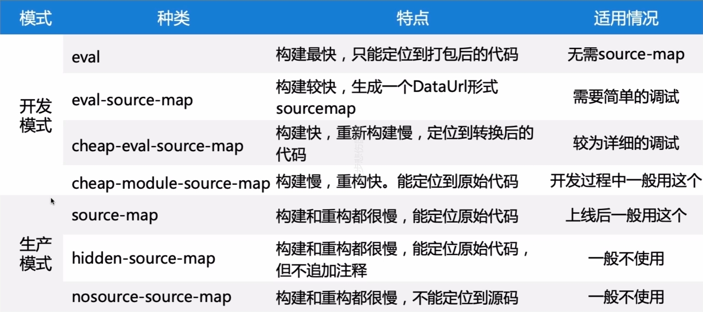
{
devtool: "eval-source-map";
}
居中布局
水平居中
inline-block + text-align
.parent {
text-align: center;
}
.children {
display: inline-block;
}
text-align会对inline级别的元素生效
table + margin
.children {
display: table;
margin: 0 auto;
}
子元素 display: table， table 在没有设置宽度的时候，跟里面的内容的宽度是一样的。
table 还可以使用 margin: auto，因此可以实现水平居中。
absolute + transform
.parent {
position: relative;
}
.children {
position: absolute;
left: 50%;
transform: translateX(-50%);
}
flex + justify + content
.parent {
display: flex;
justify-content: center;
}
flex-item 的默认样式是 1
或
.parent {
display: flex;
}
.children {
margin: 0 auto;
}
垂直居中
tabel-cell + vertical-align
.parent {
display: table-cell;
vertical-align: middle;
}
tabel-cell 会把子元素放在垂直中间，
vertical-align: middle 再把内容居中
absolute + transform
.parent {
position: relative;
}
.children {
position: absolute;
top: 50%;
transform: translateY(-50%);
}
flex + align-items
.parent {
display: flex;
align-items: center;
}
居中
inline-block + text-align + tabel-cell + vertical-align
.parent {
text-align: center;
display: table-cell;
vertical-align: middle;
}
.children {
display: inline-block;
}
absolute + transform
.parent {
position: relative;
}
.children {
position: absolute;
left: 50%;
top: 50%;
transform: translate(-50%, -50%);
}
flex + justify-content + align-items
.parent {
display: flex;
justify-content: center;
align-items: center;
}
高度崩塌和垂直外边距重叠的问题
高度崩塌
高度崩塌是由于子元素浮动或定位导致脱离文档流之后不能撑开父元素导致的。
解决方案
1、开启父元素 BFC
BFC Block Formatting Context 块级格式化环境
默认关闭的，是一个隐含属性
可以通过一些特殊的样式来 开启 BFC
开启 BFC 之后的元素具备以下特性
- 父元素的垂直外边距不会与子元素重叠
- 开启 BFC 的元素不会被浮动元素所覆盖
- 开启 BFC 的元素可以包含浮动子元素
开启 BFC 的方式
- 设置元素浮动
- 设置元素绝对定位
- 设置元素类型为 inline-block
- 设置 overflow 为一个非默认值，一般为 overflow：hidden 开启。
2、清除浮动
在塌陷的父元素的最后添加一个空白的 div，然后对该 div 进行清除浮动
<div id="box1">
<div id="box2"></div>
<div style="clear:both"></div>
</div>
问题：页面中添加了多余的结构
关于清除浮动
清除其他浮动元素对当前元素的影响
可选值：
- none，默认值，不清除浮动
- left，清除左浮动对当前元素的影响
- right 和 both 类推。
3、清除浮动的进阶版本
使用伪元素来避免 dom 结构混乱
.clearfix:after {
content: "";
display: block;
clear: both;
}
垂直外边距重叠的问题
子元素的垂直外边距会传递给父元素，导致全部撑开。
解决方案
在子元素前面放一个空的 table 标签，table 会隔离这个传递。
也可以使用伪元素 before 来处理
.clearfix::before{
content: "",
display: table;
clear: both
}
合并解决方案
.clearfix::after,
.clearfix::before{
content: "",
display: table;
clear: both
}
虚拟 DOM
虚拟 DOM 是什么
DOM (Document Object Model) 译为文档对象模型，是 HTML 和 XML 文档的编程接口。
HTML DOM 定义了访问和操作 HTML 文档的标准方法。
DOM 以树结构表达 HTML 文档。
然后我们来做一个小实验：
const div = document.createElement("div");
let str = "";
for (let i in div) {
str += `${i} `;
}
const attrs = str.split(" ");
console.log(attrs.splice(0, 5), attrs.length);
out
(5) ["align", "title", "lang", "translate", "dir"] 294
我们可以看到浏览器对 DOM 赋予了很多属性来实现页面的各种功能，整个 DOM 的设计是相当复杂的。
当我们使用 document.body.appendChild(node) 往 body 节点上添加一个元素，调用该 API 之后会引发一系列的连锁反应。
首先渲染引擎会将 node 节点添加到 body 节点之上，然后触发样式计算、布局、绘制、栅格化、合成等任务，我们把这一过程称为重排。
除了重排之外，还有可能引起重绘或者合成操作，形象地理解就是“牵一发而动全身”。
另外，对于 DOM 的不当操作还有可能引发强制同步布局和布局抖动的问题，这些操作都会大大降低渲染效率。
因此，对于 DOM 的操作我们时刻都需要非常小心谨慎。
当然，对于简单的页面来说，其 DOM 结构还是比较简单的，所以以上这些操作 DOM 的问题并不会对用户体验产生太多影响。
但是对于一些复杂的页面或者目前使用非常多的单页应用来说，其 DOM 结构是非常复杂的，而且还需要不断地去修改 DOM 树，每次操作 DOM 渲染
引擎都需要进行重排、重绘或者合成等操作，因为 DOM 结构复杂，所生成的页面结构也会很复杂，对于这些复杂的页面，执行一次重排或者重绘操作 都是非常耗时的，这就给我们带来了真正的性能问题。
所以我们需要有一种方式来减少 JavaScript 对 DOM 的操作，这时候虚拟 DOM 就上场了。
简而言之，我们需要用一种方式去描述浏览器的 DOM 结构，并且在数据更新的过程中通过虚拟 DOM 的对比来做一层“缓冲”。避免频繁的直接操作 DOM 对象。
什么是虚拟DOM
在谈论什么是虚拟 DOM 之前，我们先来看看虚拟 DOM 到底要解决哪些事情。
- 将页面改变的内容应用到虚拟
DOM上，而不是直接应用到DOM上。 - 变化被应用到虚拟
DOM上时，虚拟DOM并不急着去渲染页面，而仅仅是调整虚拟DOM的内部状态，这样操作虚拟DOM的代价就变得非常轻了。 - 在虚拟
DOM收集到足够的改变时，再把这些变化一次性应用到真实的DOM上。
基于以上三点，我们再来看看什么是虚拟 DOM。为了直观理解，你可以参考下图：

该图结合 React 流程画的一张虚拟 DOM 执行流程图，下面我们就结合这张图来分析下虚拟 DOM 到底怎么运行的。
创建阶段。首先依据 JSX 和基础数据创建出来虚拟 DOM，它反映了真实的 DOM 树的结构。然后由虚拟 DOM 树创建出真实 DOM 树，真实的 DOM 树生成完后，
再触发渲染流水线往屏幕输出页面。
更新阶段。如果数据发生了改变，那么就需要根据新的数据创建一个新的虚拟 DOM 树；然后 React 比较两个树，找出变化的地方，并把变化的地方一次性更新到真实的 DOM 树上
最后渲染引擎更新渲染流水线，并生成新的页面。
通过上面的描述，我们知道，当我们使用一个 JS 对象来描述浏览器的 DOM 结构的时候，这个对象就叫做虚拟 DOM。（浏览器的 DOM 对象过于复杂）
下面这段话是我摘录的一段对于虚拟 DOM的描述。
Virtual DOM是一种编程概念。在这个概念里，UI以一种理想化的，或者说“虚拟的”表现形式被保存于内存中，并通过如ReactDOM等类库使之与“真实的”DOM同步。这一过程叫做协调。- 这种方式赋予了
React声明式的API：你告诉React希望让UI是什么状态，React就确保DOM匹配该状态。这使您可以从属性操作、 事件处理和手动DOM更新这些在构建应用程序时必要的操作中解放出来。- 与其将
Virtual DOM视为一种技术，不如说它是一种模式，人们提到它时经常是要表达不同的东西。在React的世界里，术语Virtual DOM通常 与React元素关联在一起，因为它们都是代表了用户界面的对象。- 而
React也使用一个名为fibers的内部对象来存放组件树的附加信息。上述二者也被认为是React中Virtual DOM实现的一部分。
我们来总结一下上面的话中比较重要的两点：
- 虚拟
DOM和真实DOM的交互不由虚拟DOM直接完成，交由第三方库完成，虚拟DOM只描述UI，UI到具体的展现，由ReactDOM等类库实现真正的渲染。 因此，ReactNative，小程序等跨端开发才得以实现。 React之类的类库，替你摆脱了频繁书写DOM操作的指令的坑，你不必再去书写类似document.getElementById(xxx).appendChild(xxx)之类的代码。 他们来负责数据变动到视图变动的过程。
在 React 或者 Vue 中，虚拟 DOM 的创建都是由模板或者 JSX 来完成的，但是这两者到虚拟 DOM 的转移都是工程化干的事情（webpack +
loader），因此我们也不需要去书写类似 React.createElement(xxx) 的代码，只需要书写 JSX 即可以通过工程化自动生成上面的代码。
因此虚拟 DOM 极大程度上帮我们减轻了开发的负担，易于维护，并且不依赖于某一特定的环境。
VDOM 的优点
-
抽象了原本的渲染过程，实现了跨平台的的能力，从而不局限于浏览器的
DOM，也可以是安卓和IOS的原生组件，也可以是小程序。 -
抽象了渲染过程之后，使得组件的抽象能力也得到了提升，并且可以适配
DOM以外的渲染目标。 -
VDOM在牺牲了部分性能的前提下，增加了可维护性，这也是很多框架的通性。 实现了对DOM集中化操作，在数据改变的时候先对VDOM进行修改，再反映到真实的 DOM 中，用最小的代价来更新DOM，提升效率。 -
打开了函数式
UI编程的大门 -
跨平台（
ReactNative，React VR等） -
可以更好的实现
SSR，同构渲染等 -
组件的高度抽象化
VDOM 的缺点
- 首次渲染大量
DOM的时候，由于多了一层虚拟DOM的计算，所以会比innerHTML插入的慢。 - 需要在内存中维护一份
VDOM - 如果虚拟
DOM有着大量的更改，使用虚拟DOM是很合适的，如果是单一的频繁的更新的话，虚拟DOM需要花时间去处理计算工作。
因此如果你有一个DOM节点相对较少的页面，使用VDOM可能会变慢。
但是对于大多数单页面应用，使用VDOM应该是更快的
React 中的 diff 算法
关于 React 中的虚拟 DOM
Fiber架构之后的不同。可以自行搜索Fiber相关的内容。
Fiber之后，虚拟DOM从树形结构变为了可恢复的链表的结构。
Fiber 的出现主要是为了解决在大量 dom diff 的过程中，保证渲染流畅，（原来的 stack reconciler 会在 diff
过程中阻塞线程，导致页面卡顿，因为只有diff 完成之后才会渲染页面）
其实协程的另外一个称呼就是 Fiber，所以在这里我们可以把 Fiber 和协程关联起来，那么所谓的 Fiber reconciler 相信你也很清楚了，就是在执行算法的过程中出让主线程
这样就解决了 Stack reconciler 函数占用时间过久的问题。
实际上的思想类似于时间切片的概念。
主要利用了浏览器 requestIdleCallback 这个 API
关于 Vue 中的虚拟 DOM
整体的实现思路大致类似上面的手动实现的方法。
以 Vue2.x 为例，可以在源码中找到这个文件来看一下。
在 Vue3.x 中并没有引进 Fiber 这一架构，具体原因可以在拓展阅读中查看。
拓展阅读
手动实现一个简单的虚拟 DOM (类似 Vue2.x ， React 中的 Fiber 太过于复杂)
创建
我们来尝试简单渲染一个 DOM 结构，
<div id="app">
<p>节点1</p>
</div>
我们有一个最简陋的 createElement 函数来返回一个虚拟 DOM
const vnodeType = {
HTML: "HTML",
TEXT: "TEXT",
COMPONENT: "COMPONENT",
CLASS_COMPONENT: "CLASS_COMPONENT",
};
const childType = {
EMPTY: "EMPTY",
SINGLE: "SINGLE",
MULTIPLE: "MULTIPLE",
};
// 新建虚拟DOM
// 名字，属性，子元素
function createElement(tag, data, children = null) {
let flag;
if (typeof tag === "string") {
// 普通html标签
flag = vnodeType.HTML;
} else if (typeof tag === "function") {
flag = vnodeType.COMPONENT;
} else {
flag = vnodeType.TEXT;
}
// 0， 1， n
let childrenFlag;
if (children == null) {
childrenFlag = childType.EMPTY;
} else if (Array.isArray(children)) {
let length = children.length;
if (length === 0) {
childrenFlag = childType.EMPTY;
} else {
childrenFlag = childType.MULTIPLE;
}
} else {
childrenFlag = childType.SINGLE;
children = createTextVnode(children + "");
}
// 返回vnode
return {
flag, //vnode类型
tag, // 标签，div文本没有tag，组件就是函数
data,
children,
childrenFlag,
};
}
//渲染
function render() {}
// 创建文本类型 vnode
function createTextVnode(text) {
return {
flag: vnodeType.TEXT,
tag: null,
data: null,
children: text,
childrenFlag: childType.EMPTY,
};
}
页面上
let div = createElement("div", { id: "app" }, [
createElement("p", {}, "节点1"),
]);
console.log(JSON.stringify(div, null, 2));
out
{
"flag": "HTML",
"tag": "div",
"data": {
"id": "app"
},
"children": [
{
"flag": "HTML",
"tag": "p",
"data": {},
"children": {
"flag": "TEXT",
"tag": null,
"data": null,
"children": "节点1",
"childrenFlag": "EMPTY"
},
"childrenFlag": "SINGLE"
}
],
"childrenFlag": "MULTIPLE"
}
接下来我们将它渲染到页面上。
渲染
我们搞多一些 p 元素在页面上，并且调用 render 函数来渲染。
<html lang="en">
<head>
<meta charset="UTF-8" />
<meta http-equiv="X-UA-Compatible" content="IE=edge" />
<meta name="viewport" content="width=device-width, initial-scale=1.0" />
<title>Document</title>
<style>
.item-header {
font-size: 30px;
color: green;
}
</style>
</head>
<body>
<div id="app"></div>
<script src="./index.js"></script>
<script>
let vnode = createElement("div", { id: "app" }, [
createElement("p", { key: "a", style: { color: "blue" } }, "节点1"),
createElement("p", { key: "b", "@click": () => alert("xxx") }, "节点2"),
createElement("p", { key: "c", class: "item-header" }, "节点3"),
createElement("p", { key: "d" }, "节点4"),
]);
render(vnode, document.getElementById("app"));
// console.log(JSON.stringify(div, null, 2))
</script>
</body>
</html>
还有一些额外的工作（简易版本），需要注意以下的一些问题。
- 属性的处理。
- 首次渲染和
diff el属性- 递归渲染子元素
简易版的代码如下:
const vnodeType = {
HTML: "HTML",
TEXT: "TEXT",
COMPONENT: "COMPONENT",
CLASS_COMPONENT: "CLASS_COMPONENT",
};
const childType = {
// 节点没有子元素或者是空数组
EMPTY: "EMPTY",
// 节点是文本元素
SINGLE: "SINGLE",
// 节点有1或多个子元素
MULTIPLE: "MULTIPLE",
};
// 新建虚拟DOM
// 名字，属性，子元素
function createElement(tag, data, children = null) {
let flag;
if (typeof tag === "string") {
// 普通html标签
flag = vnodeType.HTML;
} else if (typeof tag === "function") {
flag = vnodeType.COMPONENT;
} else {
flag = vnodeType.TEXT;
}
// 0， 1， n
let childrenFlag;
if (children == null) {
childrenFlag = childType.EMPTY;
} else if (Array.isArray(children)) {
let length = children.length;
if (length === 0) {
childrenFlag = childType.EMPTY;
} else {
childrenFlag = childType.MULTIPLE;
}
} else {
childrenFlag = childType.SINGLE;
// 文本元素直接给textVnode节点
children = createTextVnode(children + "");
}
// 返回vnode
return {
flag, //vnode类型
tag, // 标签，div文本没有tag，组件就是函数
data,
children,
childrenFlag,
el: null,
};
}
//渲染
function render(vnode, container) {
// 区分首次渲染和再次渲染
// 首次渲染直接mount，再次渲染需要diff
mount(vnode, container);
}
// 首次挂载元素
function mount(vnode, container) {
let { flag } = vnode;
// 区别对待HTML节点和Text节点
if (flag === vnodeType.HTML) {
mountElement(vnode, container);
} else if (flag === vnodeType.TEXT) {
mountText(vnode, container);
}
}
function mountElement(vnode, container) {
let dom = document.createElement(vnode.tag);
// 存一下，以后都能拿到真实dom
vnode.el = dom;
let { data, children, childrenFlag } = vnode;
// 挂载data属性
if (data) {
for (let key in data) {
// 节点，名字，老值，新值
patchData(dom, key, null, data[key]);
}
}
// 根据子元素的不同类型来渲染子元素
if (childrenFlag !== childType.EMPTY) {
if (childrenFlag === childType.SINGLE) {
mount(children, dom);
} else if (childrenFlag == childType.MULTIPLE) {
for (let i = 0; i < children.length; i++) {
mount(children[i], dom);
}
}
}
// 挂载
container.appendChild(dom);
}
function mountText(vnode, container) {
let dom = document.createTextNode(vnode.children);
vnode.el = dom;
// 挂载
container.appendChild(dom);
}
function patchData(el, key, pre, next) {
switch (key) {
// 处理style属性
case "style":
for (let k in next) {
el.style[k] = next[k];
}
break;
// 处理class属性
case "class":
el.className = next;
break;
// 其他
default:
// 处理事件绑定函数，以vue的@为例
if (key[0] === "@") {
if (next) {
el.addEventListener(key.slice(1), next);
}
} else {
el.setAttribute(key, next);
}
break;
}
}
// 创建文本类型 vnode
function createTextVnode(text) {
return {
flag: vnodeType.TEXT,
tag: null,
data: null,
children: text,
childrenFlag: childType.EMPTY,
el: null,
};
}
至此，虚拟 DOM 已经首次渲染到页面上了。
然后我们再来看看如何简单实现 DOM diff。
patch
假设我们要将
let vnode = createElement("div", { id: "app" }, [
createElement("p", { key: "a", style: { color: "blue" } }, "节点1"),
createElement("p", { key: "b", "@click": () => alert("xxx") }, "节点2"),
createElement("p", { key: "c", class: "item-header" }, "节点3"),
createElement("p", { key: "d" }, "节点4"),
]);
里渲染的 DOM ，变更为如下的 DOM 结构，然后在一秒后重新渲染：
let vnode1 = createElement("div", { id: "app" }, [
createElement("p", { key: "d" }, "节点4"),
createElement("p", { key: "a", style: { color: "blue" } }, "节点1"),
createElement("p", { key: "b" }, "节点2"),
createElement("p", { key: "e" }, "节点5"),
createElement("p", { key: "f", style: { color: "#eee" } }, "节点4"),
]);
setTimeout(() => {
render(vnode1, document.getElementById("app"));
});
然后我们需要在 render 函数里区分首次渲染和再次渲染：
//渲染
function render(vnode, container) {
// 区分首次渲染和再次渲染
// 首次渲染直接mount，再次渲染需要diff
if (container.vnode) {
// 更新
patch(container.vnode, vnode, container);
} else {
mount(vnode, container);
}
container.vnode = vnode;
}
然后我们看一下 patch 函数：
function patch(pre, next, container) {
let nextFlag = next.flag;
let preFlag = pre.flag;
// 如果flag不同直接替换。
if (nextFlag !== preFlag) {
// 直接替换
repaceVnode(pre, next, container);
} else if (nextFlag == vnodeType.HTML) {
patchElement(pre, next, container);
} else if (nextFlag == vnodeType.TEXT) {
// 文本节点只需要更新文字内容即可
patchText(pre, next);
}
}
// 替换节点，先移除再mount
function replaceVnode(pre, next) {
container.removeChild(pre.el);
mount(next, container);
}
// 文本节点直接替换文字即可
function patchText(pre, next) {
let el = (next.el = pre.el);
if (next.children !== pre.children) {
el.nodeValue = next.children;
}
}
以上两种最简单的对比都是比较好理解的。接下来来看一下 flag 不同的 HTML 节点的替换 patchElement 。
function patchElement(pre, next, container) {
// 如果tag不同就直接替换掉
if (pre.tag !== next.tag) {
repaceVnode(pre, next, container);
return;
}
// 更新一下 el， 然后更新data
let el = (next.el = pre.el);
let preData = pre.data;
let nextData = next.data;
// 如果有新值，则全部更新到el上
if (nextData) {
for (let key in nextData) {
let preVal = preData[key];
let nextVal = nextData[key];
patchData(el, key, preVal, nextVal);
}
}
// 对旧值进行处理，
// 旧的有，新的没有，就要置为空
// 旧的有，新的有的已经在上面一个循环里被覆盖掉了。
if (preData) {
for (let key in preData) {
let preVal = preData[key];
if (preVal && !nextData.hasOwnProperty(key)) {
patchData(el, key, preVal, null);
}
}
}
// data更新完毕 下面更新子元素
patchChildren(
pre.childrenFlag,
next.childrenFlag,
pre.children,
next.children,
el
);
}
// 更新子元素的方法
function patchChildren(
preChildFlag,
nextChildFlag,
preChildren,
nextChildren,
container
) {
// 新老元素都有三种情况，用switch case做嵌套处理
// 更新子元素
// 老的是 1 ， 0， n
// 新的是 1， 0 ， n
switch (preChildFlag) {
// 老的是一个
case childType.SINGLE:
switch (nextChildFlag) {
// 新的也是一个，直接patch
case childType.SINGLE:
patch(preChildren, nextChildren, container);
break;
// 新的是空的，直接移除老的
case childType.EMPTY:
container.removeChild(preChildren.el);
break;
// 新的是多个的，先移除老的，再循环mount新的
case childType.MULTIPLE:
container.removeChild(preChildren.el);
for (let i = 0; i < nextChildren.length; i++) {
mount(nextChildren[i], container);
}
break;
}
break;
// 老的是空的
case childType.EMPTY:
switch (nextChildFlag) {
// 新的是一个，直接mount
case childType.SINGLE:
mount(nextChildren, container);
break;
// 新的也是空的，不做处理
case childType.EMPTY:
break;
// 新的是多个，直接循环mount新的
case childType.MULTIPLE:
for (let i = 0; i < nextChildren.length; i++) {
mount(nextChildren[i], container);
}
break;
}
break;
// 老的是多个
case childType.MULTIPLE:
switch (nextChildFlag) {
// 新的是一个，循环移除老的，再把新的mount上去
case childType.SINGLE:
for (let i = 0; i < preChildren.length; i++) {
container.removeChild(preChildren[i]);
}
mount(nextChildren, container);
break;
// 新的是空的，循环移除老的，接下来无操作
case childType.EMPTY:
for (let i = 0; i < preChildren.length; i++) {
container.removeChild(preChildren[i]);
}
break;
// 新的是多个的情况，比较复杂，React和Vue的实现不同。这里简单实现一下。
// 这个算法网上都有讲解，就不赘述了。
default:
let lastIndex = 0;
for (let i = 0; i < nextChildren.length; i++) {
const nextVNode = nextChildren[i];
let j = 0,
find = false;
for (j; j < preChildren.length; j++) {
const prevVNode = preChildren[j];
if (nextVNode.key === prevVNode.key) {
find = true;
patch(prevVNode, nextVNode, container);
if (j < lastIndex) {
// 需要移动
const refNode = nextChildren[i - 1].el.nextSibling;
container.insertBefore(prevVNode.el, refNode);
break;
} else {
// 更新 lastIndex
lastIndex = j;
}
}
}
if (!find) {
// 挂载新节点
const refNode =
i - 1 < 0
? preChildren[0].el
: nextChildren[i - 1].el.nextSibling;
mount(nextVNode, container, refNode);
}
}
// 移除已经不存在的节点
for (let i = 0; i < preChildren.length; i++) {
const prevVNode = preChildren[i];
const has = nextChildren.find(
(nextVNode) => nextVNode.key === prevVNode.key
);
if (!has) {
// 移除
container.removeChild(prevVNode.el);
}
}
break;
}
break;
}
}
至此，一次 DOM 更新就实现了。
React 事件机制
DOM 事件
冒泡和捕获
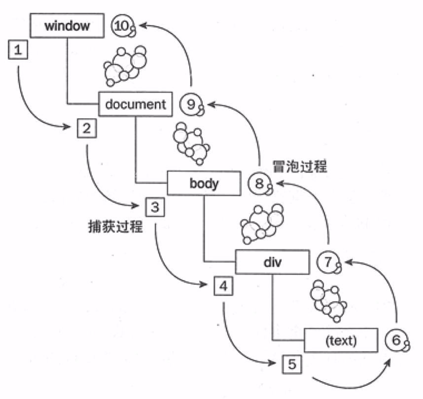
先从父元素向下传递捕获，直到子元素处理掉，然后再逐个冒泡。
所以有了一个事件委托的机制。
React 事件
React 会将所有事件都绑定在 document 上。
统一使用事件监听。都是在冒泡阶段处理。
所以一般在组件挂载的时候增加监听事件。
组件卸载的时候删除监听事件。
事件触发的时候，组件会生成一个合成事件。然后发送到 document 上。
document 会通过 dispatch event 回调函数依次执行 dispatch listener 中同类型事件的监听函数。
事件注册是在组件生成的时候，将 VDOM 中的所有的事件对应的原生事件都注册在 Document 中一个监听器中。所有的事件处理函数都存放在 listenerbank 中，并以 key 做为索引。（将可能要触发的事件分门别类）
- 是合成事件，不是 DOM 原生事件
- 在 document 监听所有支持事件
- 使用统一的分发函数 dispatchEvent 来指定事件函数的执行
React 合成事件
1 React 合成事件特点
React 自己实现了一套高效的事件注册，存储，分发和重用逻辑，在 DOM 事件体系基础上做了很大改进，减少了内存消耗，简化了事件逻辑，并最大化的解决了 IE 等浏览器的不兼容问题。与 DOM 事件体系相比，它有如下特点
- React 组件上声明的事件最终绑定到了 document 这个 DOM 节点上，而不是 React 组件对应的 DOM 节点。故只有 document 这个节点上面才绑定了 DOM 原生事件，其他节点没有绑定事件。这样简化了 DOM 原生事件，减少了内存开销
- React 以队列的方式，从触发事件的组件向父组件回溯，调用它们在 JSX 中声明的 callback。也就是 React 自身实现了一套事件冒泡机制。我们没办法用 event.stopPropagation()来停止事件传播，应该使用 event.preventDefault()
- React 有一套自己的合成事件 SyntheticEvent，不同类型的事件会构造不同的 SyntheticEvent
- React 使用对象池来管理合成事件对象的创建和销毁，这样减少了垃圾的生成和新对象内存的分配，大大提高了性能
那么这些特性是如何实现的呢，下面和大家一起一探究竟。
2 React 事件系统
先看 Facebook 给出的 React 事件系统框图
浏览器事件（如用户点击了某个 button）触发后，DOM 将 event 传给 ReactEventListener，它将事件分发到当前组件及以上的父组件。然后由 ReactEventEmitter 对每个组件进行事件的执行，先构造 React 合成事件，然后以 queue 的方式调用 JSX 中声明的 callback 进行事件回调。
涉及到的主要类如下
ReactEventListener：负责事件注册和事件分发。React 将 DOM 事件全都注册到 document 这个节点上，这个我们在事件注册小节详细讲。事件分发主要调用 dispatchEvent 进行，从事件触发组件开始，向父元素遍历。我们在事件执行小节详细讲。
ReactEventEmitter：负责每个组件上事件的执行。
EventPluginHub：负责事件的存储，合成事件以对象池的方式实现创建和销毁，大大提高了性能。
SimpleEventPlugin 等 plugin：根据不同的事件类型，构造不同的合成事件。如 focus 对应的 React 合成事件为 SyntheticFocusEvent
2 事件注册
JSX 中声明一个 React 事件十分简单，比如
render() {
return (
<div onClick = {
(event) => {console.log(JSON.stringify(event))}
}
/>
);
}
那么它是如何被注册到 React 事件系统中的呢？
还是先得从组件创建和更新的入口方法 mountComponent 和 updateComponent 说起。在这两个方法中，都会调用到_updateDOMProperties 方法，对 JSX 中声明的组件属性进行处理。源码如下
_updateDOMProperties: function (lastProps, nextProps, transaction) {
... // 前面代码太长，省略一部分
else if (registrationNameModules.hasOwnProperty(propKey)) {
// 如果是props这个对象直接声明的属性，而不是从原型链中继承而来的，则处理它
// nextProp表示要创建或者更新的属性，而lastProp则表示上一次的属性
// 对于mountComponent，lastProp为null。updateComponent二者都不为null。unmountComponent则nextProp为null
if (nextProp) {
// mountComponent和updateComponent中，enqueuePutListener注册事件
enqueuePutListener(this, propKey, nextProp, transaction);
} else if (lastProp) {
// unmountComponent中，删除注册的listener，防止内存泄漏
deleteListener(this, propKey);
}
}
}
下面我们来看 enqueuePutListener，它负责注册 JSX 中声明的事件。源码如下
// inst: React Component对象
// registrationName: React合成事件名，如onClick
// listener: React事件回调方法，如onClick=callback中的callback
// transaction: mountComponent或updateComponent所处的事务流中，React都是基于事务流的
function enqueuePutListener(inst, registrationName, listener, transaction) {
if (transaction instanceof ReactServerRenderingTransaction) {
return;
}
var containerInfo = inst._hostContainerInfo;
var isDocumentFragment =
containerInfo._node && containerInfo._node.nodeType === DOC_FRAGMENT_TYPE;
// 找到document
var doc = isDocumentFragment
? containerInfo._node
: containerInfo._ownerDocument;
// 注册事件，将事件注册到document上
listenTo(registrationName, doc);
// 存储事件,放入事务队列中
transaction.getReactMountReady().enqueue(putListener, {
inst: inst,
registrationName: registrationName,
listener: listener,
});
}
enqueuePutListener 主要做两件事，一方面将事件注册到 document 这个原生 DOM 上（这就是为什么只有 document 这个节点有 DOM 事件的原因），另一方面采用事务队列的方式调用 putListener 将注册的事件存储起来，以供事件触发时回调。
注册事件的入口是 listenTo 方法, 它解决了不同浏览器间捕获和冒泡不兼容的问题。事件回调方法在 bubble 阶段被触发。如果我们想让它在 capture 阶段触发，则需要在事件名上加上 capture。比如 onClick 在 bubble 阶段触发，而 onCaptureClick 在 capture 阶段触发。listenTo 代码虽然比较长，但逻辑很简单，调用 trapCapturedEvent 和 trapBubbledEvent 来注册捕获和冒泡事件。trapCapturedEvent 大家可以自行分析，我们仅分析 trapBubbledEvent，如下
trapBubbledEvent: function (topLevelType, handlerBaseName, element) {
if (!element) {
return null;
}
return EventListener.listen(
element, // 绑定到的DOM目标,也就是document
handlerBaseName, // eventType
ReactEventListener.dispatchEvent.bind(null, topLevelType)); // callback, document上的原生事件触发后回调
},
listen: function listen(target, eventType, callback) {
if (target.addEventListener) {
// 将原生事件添加到target这个dom上,也就是document上。
// 这就是只有document这个DOM节点上有原生事件的原因
target.addEventListener(eventType, callback, false);
return {
// 删除事件,这个由React自己回调,不需要调用者来销毁。但仅仅对于React合成事件才行
remove: function remove() {
target.removeEventListener(eventType, callback, false);
}
};
} else if (target.attachEvent) {
// attach和detach的方式
target.attachEvent('on' + eventType, callback);
return {
remove: function remove() {
target.detachEvent('on' + eventType, callback);
}
};
}
},
在 listen 方法中，我们终于发现了熟悉的 addEventListener 这个原生事件注册方法。只有 document 节点才会调用这个方法，故仅仅只有 document 节点上才有 DOM 事件。这大大简化了 DOM 事件逻辑，也节约了内存。
流程图如下
3 事件存储
事件存储由 EventPluginHub 来负责，它的入口在我们上面讲到的 enqueuePutListener 中的 putListener 方法，如下
/**
* EventPluginHub用来存储React事件, 将listener存储到`listenerBank[registrationName][key]`
*
* @param {object} inst: 事件源
* @param {string} listener的名字,比如onClick
* @param {function} listener的callback
*/
//
putListener: function (inst, registrationName, listener) {
// 用来标识注册了事件,比如onClick的React对象。key的格式为'.nodeId', 只用知道它可以标示哪个React对象就可以了
var key = getDictionaryKey(inst);
var bankForRegistrationName = listenerBank[registrationName] || (listenerBank[registrationName] = {});
// 将listener事件回调方法存入listenerBank[registrationName][key]中,比如listenerBank['onclick'][nodeId]
// 所有React组件对象定义的所有React事件都会存储在listenerBank中
bankForRegistrationName[key] = listener;
//onSelect和onClick注册了两个事件回调插件, 用于walkAround某些浏览器兼容bug,不用care
var PluginModule = EventPluginRegistry.registrationNameModules[registrationName];
if (PluginModule && PluginModule.didPutListener) {
PluginModule.didPutListener(inst, registrationName, listener);
}
},
var getDictionaryKey = function (inst) {
return '.' + inst._rootNodeID;
};
由上可见，事件存储在了 listenerBank 对象中，它按照事件名和 React 组件对象进行了二维划分，比如 nodeId 组件上注册的 onClick 事件最后存储在 listenerBank.onclick[nodeId]中。
4 事件执行
4.1 事件分发
当事件触发时，document 上 addEventListener 注册的 callback 会被回调。从前面事件注册部分发现，此时回调函数为 ReactEventListener.dispatchEvent，它是事件分发的入口方法。下面我们来详细分析
// topLevelType：带top的事件名，如topClick。不用纠结为什么带一个top字段，知道它是事件名就OK了
// nativeEvent: 用户触发click等事件时，浏览器传递的原生事件
dispatchEvent: function (topLevelType, nativeEvent) {
// disable了则直接不回调相关方法
if (!ReactEventListener._enabled) {
return;
}
var bookKeeping = TopLevelCallbackBookKeeping.getPooled(topLevelType, nativeEvent);
try {
// 放入批处理队列中,React事件流也是一个消息队列的方式
ReactUpdates.batchedUpdates(handleTopLevelImpl, bookKeeping);
} finally {
TopLevelCallbackBookKeeping.release(bookKeeping);
}
}
可见我们仍然使用批处理的方式进行事件分发，handleTopLevelImpl 才是事件分发的真正执行者，它是事件分发的核心，体现了 React 事件分发的特点，如下
// document进行事件分发,这样具体的React组件才能得到响应。因为DOM事件是绑定到document上的
function handleTopLevelImpl(bookKeeping) {
// 找到事件触发的DOM和React Component
var nativeEventTarget = getEventTarget(bookKeeping.nativeEvent);
var targetInst =
ReactDOMComponentTree.getClosestInstanceFromNode(nativeEventTarget);
// 执行事件回调前,先由当前组件向上遍历它的所有父组件。得到ancestors这个数组。
// 因为事件回调中可能会改变Virtual DOM结构,所以要先遍历好组件层级
var ancestor = targetInst;
do {
bookKeeping.ancestors.push(ancestor);
ancestor = ancestor && findParent(ancestor);
} while (ancestor);
// 从当前组件向父组件遍历,依次执行注册的回调方法. 我们遍历构造ancestors数组时,是从当前组件向父组件回溯的,故此处事件回调也是这个顺序
// 这个顺序就是冒泡的顺序,并且我们发现不能通过stopPropagation来阻止'冒泡'。
for (var i = 0; i < bookKeeping.ancestors.length; i++) {
targetInst = bookKeeping.ancestors[i];
ReactEventListener._handleTopLevel(
bookKeeping.topLevelType,
targetInst,
bookKeeping.nativeEvent,
getEventTarget(bookKeeping.nativeEvent)
);
}
}
从上面的事件分发中可见，React 自身实现了一套冒泡机制。从触发事件的对象开始，向父元素回溯，依次调用它们注册的事件 callback。
4.2 事件 callback 调用
事件处理由_handleTopLevel 完成。它其实是调用 ReactBrowserEventEmitter.handleTopLevel() ，如下
// React事件调用的入口。DOM事件绑定在了document原生对象上,每次事件触发,都会调用到handleTopLevel
handleTopLevel: function (topLevelType, targetInst, nativeEvent, nativeEventTarget) {
// 采用对象池的方式构造出合成事件。不同的eventType的合成事件可能不同
var events = EventPluginHub.extractEvents(topLevelType, targetInst, nativeEvent, nativeEventTarget);
// 批处理队列中的events
runEventQueueInBatch(events);
}
handleTopLevel 方法是事件 callback 调用的核心。它主要做两件事情，一方面利用浏览器回传的原生事件构造出 React 合成事件，另一方面采用队列的方式处理 events。先看如何构造合成事件。
4.2.1 构造合成事件
// 构造合成事件
extractEvents: function (topLevelType, targetInst, nativeEvent, nativeEventTarget) {
var events;
// EventPluginHub可以存储React合成事件的callback,也存储了一些plugin,这些plugin在EventPluginHub初始化时就注册就来了
var plugins = EventPluginRegistry.plugins;
for (var i = 0; i < plugins.length; i++) {
var possiblePlugin = plugins[i];
if (possiblePlugin) {
// 根据eventType构造不同的合成事件SyntheticEvent
var extractedEvents = possiblePlugin.extractEvents(topLevelType, targetInst, nativeEvent, nativeEventTarget);
if (extractedEvents) {
// 将构造好的合成事件extractedEvents添加到events数组中,这样就保存了所有plugin构造的合成事件
events = accumulateInto(events, extractedEvents);
}
}
}
return events;
},
EventPluginRegistry.plugins 默认包含五种 plugin，他们是在 EventPluginHub 初始化阶段注入进去的，且看代码
// 将eventPlugin注册到EventPluginHub中
ReactInjection.EventPluginHub.injectEventPluginsByName({
SimpleEventPlugin: SimpleEventPlugin,
EnterLeaveEventPlugin: EnterLeaveEventPlugin,
ChangeEventPlugin: ChangeEventPlugin,
SelectEventPlugin: SelectEventPlugin,
BeforeInputEventPlugin: BeforeInputEventPlugin,
});
不同的 plugin 针对不同的事件有特殊的处理，此处我们不展开讲了，下面仅分析 SimpleEventPlugin 中方法即可。
我们先看 SimpleEventPlugin 如何构造它所对应的 React 合成事件。
// 根据不同事件类型,比如click,focus构造不同的合成事件SyntheticEvent, 如SyntheticKeyboardEvent SyntheticFocusEvent
extractEvents: function (topLevelType, targetInst, nativeEvent, nativeEventTarget) {
var dispatchConfig = topLevelEventsToDispatchConfig[topLevelType];
if (!dispatchConfig) {
return null;
}
var EventConstructor;
// 根据事件类型，采用不同的SyntheticEvent来构造不同的合成事件
switch (topLevelType) {
... // 省略一些事件，我们仅以blur和focus为例
case 'topBlur':
case 'topFocus':
EventConstructor = SyntheticFocusEvent;
break;
... // 省略一些事件
}
// 从event对象池中取出合成事件对象,利用对象池思想,可以大大降低对象创建和销毁的时间,提高性能。这是React事件系统的一大亮点
var event = EventConstructor.getPooled(dispatchConfig, targetInst, nativeEvent, nativeEventTarget);
EventPropagators.accumulateTwoPhaseDispatches(event);
return event;
},
这里我们看到了 event 对象池这个重大特性，采用合成事件对象池的方式，可以大大降低销毁和创建合成事件带来的性能开销。
对象创建好之后，我们还会将它添加到 events 这个队列中，因为事件回调的时候会用到这个队列。添加到 events 中使用的是 accumulateInto 方法。它思路比较简单，将新创建的合成对象的引用添加到之前创建好的 events 队列中即可，源码如下
function accumulateInto(current, next) {
if (current == null) {
return next;
}
// 将next添加到current中,返回一个包含他们两个的新数组
// 如果next是数组,current不是数组,采用push方法,否则采用concat方法
// 如果next不是数组,则返回一个current和next构成的新数组
if (Array.isArray(current)) {
if (Array.isArray(next)) {
current.push.apply(current, next);
return current;
}
current.push(next);
return current;
}
if (Array.isArray(next)) {
return [current].concat(next);
}
return [current, next];
}
4.2.2 批处理合成事件
我们上面分析过了，React 以队列的形式处理合成事件。方法入口为 runEventQueueInBatch，如下
function runEventQueueInBatch(events) {
// 先将events事件放入队列中
EventPluginHub.enqueueEvents(events);
// 再处理队列中的事件,包括之前未处理完的。先入先处理原则
EventPluginHub.processEventQueue(false);
}
/**
* syntheticEvent放入队列中,等到processEventQueue再获得执行
*/
enqueueEvents: function (events) {
if (events) {
eventQueue = accumulateInto(eventQueue, events);
}
},
/**
* 分发执行队列中的React合成事件。React事件是采用消息队列方式批处理的
*
* simulated：为true表示React测试代码，我们一般都是false
*/
processEventQueue: function (simulated) {
// 先将eventQueue重置为空
var processingEventQueue = eventQueue;
eventQueue = null;
if (simulated) {
forEachAccumulated(processingEventQueue, executeDispatchesAndReleaseSimulated);
} else {
// 遍历处理队列中的事件,
// 如果只有一个元素,则直接executeDispatchesAndReleaseTopLevel(processingEventQueue)
// 否则遍历队列中事件,调用executeDispatchesAndReleaseTopLevel处理每个元素
forEachAccumulated(processingEventQueue, executeDispatchesAndReleaseTopLevel);
}
// This would be a good time to rethrow if any of the event handlers threw.
ReactErrorUtils.rethrowCaughtError();
},
合成事件处理也分为两步，先将我们要处理的 events 队列放入 eventQueue 中，因为之前可能就存在还没处理完的合成事件。然后再执行 eventQueue 中的事件。可见，如果之前有事件未处理完，这里就又有得到执行的机会了。
事件执行的入口方法为 executeDispatchesAndReleaseTopLevel，如下
var executeDispatchesAndReleaseTopLevel = function (e) {
return executeDispatchesAndRelease(e, false);
};
var executeDispatchesAndRelease = function (event, simulated) {
if (event) {
// 进行事件分发,
EventPluginUtils.executeDispatchesInOrder(event, simulated);
if (!event.isPersistent()) {
// 处理完,则release掉event对象,采用对象池方式,减少GC
// React帮我们处理了合成事件的回收机制，不需要我们关心。但要注意，如果使用了DOM原生事件，则要自己回收
event.constructor.release(event);
}
}
};
// 事件处理的核心
function executeDispatchesInOrder(event, simulated) {
var dispatchListeners = event._dispatchListeners;
var dispatchInstances = event._dispatchInstances;
if (Array.isArray(dispatchListeners)) {
// 如果有多个listener,则遍历执行数组中event
for (var i = 0; i < dispatchListeners.length; i++) {
// 如果isPropagationStopped设成true了,则停止事件传播,退出循环。
if (event.isPropagationStopped()) {
break;
}
// 执行event的分发,从当前触发事件元素向父元素遍历
// event为浏览器上传的原生事件
// dispatchListeners[i]为JSX中声明的事件callback
// dispatchInstances[i]为对应的React Component
executeDispatch(
event,
simulated,
dispatchListeners[i],
dispatchInstances[i]
);
}
} else if (dispatchListeners) {
// 如果只有一个listener,则直接执行事件分发
executeDispatch(event, simulated, dispatchListeners, dispatchInstances);
}
// 处理完event,重置变量。因为使用的对象池,故必须重置,这样才能被别人复用
event._dispatchListeners = null;
event._dispatchInstances = null;
}
executeDispatchesInOrder 会先得到 event 对应的 listeners 队列，然后从当前元素向父元素遍历执行注册的 callback。且看 executeDispatch
function executeDispatch(event, simulated, listener, inst) {
var type = event.type || "unknown-event";
event.currentTarget = EventPluginUtils.getNodeFromInstance(inst);
if (simulated) {
// test代码使用,支持try-catch,其他就没啥区别了
ReactErrorUtils.invokeGuardedCallbackWithCatch(type, listener, event);
} else {
// 事件分发,listener为callback,event为参数,类似listener(event)这个方法调用
// 这样就回调到了我们在JSX中注册的callback。比如onClick={(event) => {console.log(1)}}
// 这样应该就明白了callback怎么被调用的,以及event参数怎么传入callback里面的了
ReactErrorUtils.invokeGuardedCallback(type, listener, event);
}
event.currentTarget = null;
}
// 采用func(a)的方式进行调用，
// 故ReactErrorUtils.invokeGuardedCallback(type, listener, event)最终调用的是listener(event)
// event对象为浏览器传递的DOM原生事件对象，这也就解释了为什么React合成事件回调中能拿到原生event的原因
function invokeGuardedCallback(name, func, a) {
try {
func(a);
} catch (x) {
if (caughtError === null) {
caughtError = x;
}
}
}
5 总结
React 事件系统还是相当麻烦的，主要分为事件注册，事件存储和事件执行三大部分。了解了 React 事件系统源码，就能够轻松回答我们文章开头所列出的 React 事件几大特点了。
由于事件系统相当麻烦，文章中不正确的地方，请不吝赐教！
React Hooks 详解 【近 1W 字】+ 项目实战
React Hooks
一、什么是 Hooks
- React 一直都提倡使用_函数组件 ，但是有时候需要使用 state 或者其他一些功能时，只能使用 类组件_，因为函数组件没有实例，没有生命周期函数，只有类组件才有
- Hooks 是 React 16.8 新增的特性，它可以让你在不编写 class 的情况下使用 state 以及其他的 React 特性
- 如果你在编写函数组件并意识到需要向其添加一些 state，以前的做法是必须将其它转化为 class。现在你可以直接在现有的函数组件中使用 Hooks
- 凡是 use 开头的 React API 都是 Hooks
二、Hooks 解决的问题
1. 类组件的不足
-
状态逻辑难复用： 在组件之间复用状态逻辑很难，可能要用到 render props （渲染属性）或者 HOC（高阶组件），但无论是渲染属性，还是高阶组件，都会在原先的组件外包裹一层父容器（一般都是 div 元素），导致层级冗余
-
趋向复杂难以维护：
- 在生命周期函数中混杂不相干的逻辑（如：在
componentDidMount中注册事件以及其他的逻辑，在componentWillUnmount中卸载事件，这样分散不集中的写法，很容易写出 bug ） - 类组件中到处都是对状态的访问和处理，导致组件难以拆分成更小的组件
- 在生命周期函数中混杂不相干的逻辑（如：在
-
this 指向问题
-
父组件给子组件传递函数时，必须绑定 this
-
react 中的组件四种绑定 this 方法的区别
-
class App extends React.Component<any, any> {
handleClick2;
constructor(props) {
super(props);
this.state = {
num: 1,
title: " react study",
};
this.handleClick2 = this.handleClick1.bind(this);
}
handleClick1() {
this.setState({
num: this.state.num + 1,
});
}
handleClick3 = () => {
this.setState({
num: this.state.num + 1,
});
};
render() {
return (
<div>
<h2>Ann, {this.state.num}</h2>
<button onClick={this.handleClick2}>btn1</button>
<button onClick={this.handleClick1.bind(this)}>btn2</button>
<button onClick={() => this.handleClick1()}>btn3</button>
<button onClick={this.handleClick3}>btn4</button>
</div>
);
}
}
前提：子组件内部做了性能优化，如（React.PureComponent）
- 第一种是在构造函数中绑定 this：那么每次父组件刷新的时候，如果传递给子组件其他的 props 值不变，那么子组件就不会刷新；
- 第二种是在 render() 函数里面绑定 this：因为 bind 函数会返回一个新的函数，所以每次父组件刷新时，都会重新生成一个函数，即使父组件传递给子组件其他的 props 值不变，子组件每次都会刷新；
- 第三种是使用箭头函数：父组件刷新的时候，即使两个箭头函数的函数体是一样的，都会生成一个新的箭头函数，所以子组件每次都会刷新；
- 第四种是使用类的静态属性：原理和第一种方法差不多，比第一种更简洁
综上所述，如果不注意的话，很容易写成第三种写法，导致性能上有所损耗。
2. Hooks 优势
- 能优化类组件的三大问题
- 能在无需修改组件结构的情况下复用状态逻辑（自定义 Hooks ）
- 能将组件中相互关联的部分拆分成更小的函数（比如设置订阅或请求数据）
- 副作用的关注点分离：副作用指那些没有发生在数据向视图转换过程中的逻辑，如
ajax请求、访问原生dom元素、本地持久化缓存、绑定/解绑事件、添加订阅、设置定时器、记录日志等。以往这些副作用都是写在类组件生命周期函数中的。而useEffect在全部渲染完毕后才会执行，useLayoutEffect会在浏览器layout之后，painting之前执行。
三、注意事项
- 只能在函数内部的最外层调用 Hook，不要在循环、条件判断或者子函数中调用
- 只能在 React 的函数组件中调用 Hook，不要在其他 JavaScript 函数中调用
- https://reactjs.org/warnings/invalid-hook-call-warning.html
四、useState & useMemo & useCallback
-
React 假设当你多次调用 useState 的时候，你能保证每次渲染时它们的调用顺序是不变的。
-
通过在函数组件里调用它来给组件添加一些内部 state，React 会 在重复渲染时保留这个 state
-
useState 唯一的参数就是初始 state
-
useState 会返回一个数组
-
一个 state，一个更新 state 的函数
-
在初始化渲染期间，返回的状态 (state) 与传入的第一个参数 (initialState) 值相同
-
-
你可以在事件处理函数中或其他一些地方调用这个函数。它类似 class 组件的 this.setState，但是它不会把新的 state 和旧的 state 进行合并，而是直接替换
// 这里可以任意命名，因为返回的是数组，数组解构
const [state, setState] = useState(initialState);
4.1 使用例子
import React, { useState } from "react";
import ReactDOM from "react-dom";
function Child1(porps) {
console.log(porps);
const { num, handleClick } = porps;
return (
<div
onClick={() => {
handleClick(num + 1);
}}
>
child
</div>
);
}
function Child2(porps) {
// console.log(porps);
const { text, handleClick } = porps;
return (
<div>
child2
<Grandson text={text} handleClick={handleClick} />
</div>
);
}
function Grandson(porps) {
console.log(porps);
const { text, handleClick } = porps;
return (
<div
onClick={() => {
handleClick(text + 1);
}}
>
grandson
</div>
);
}
function Parent() {
let [num, setNum] = useState(0);
let [text, setText] = useState(1);
return (
<div>
<Child1 num={num} handleClick={setNum} />
<Child2 text={text} handleClick={setText} />
</div>
);
}
const rootElement = document.getElementById("root");
ReactDOM.render(<Parent />, rootElement);
4.2 每次渲染都是独立的闭包
- 每一次渲染都有它自己的 Props 和 State
- 每一次渲染都有它自己的事件处理函数
- 当点击更新状态的时候，函数组件都会重新被调用，那么每次渲染都是独立的，取到的值不会受后面操作的影响
function Counter2() {
let [number, setNumber] = useState(0);
function alertNumber() {
setTimeout(() => {
// alert 只能获取到点击按钮时的那个状态
alert(number);
}, 3000);
}
return (
<>
<p>{number}</p>
<button onClick={() => setNumber(number + 1)}>+</button>
<button onClick={alertNumber}>alertNumber</button>
</>
);
}
4.3 函数式更新
- 如果新的 state 需要通过使用先前的 state 计算得出，那么可以将回调函数当做参数传递给 setState。该回调函数将接收先前的 state，并返回一个更新后的值。
function Counter() {
let [number, setNumber] = useState(0);
function lazy() {
setTimeout(() => {
// setNumber(number+1);
// 这样每次执行时都会去获取一遍 state，而不是使用点击触发时的那个 state
setNumber((number) => number + 1);
}, 3000);
}
return (
<>
<p>{number}</p>
<button onClick={() => setNumber(number + 1)}>+</button>
<button onClick={lazy}>lazy</button>
</>
);
}
4.4 惰性初始化 state
- initialState 参数只会在组件的初始化渲染中起作用，后续渲染时会被忽略
- 如果初始 state 需要通过复杂计算获得，则可以传入一个函数，在函数中计算并返回初始的 state，此函数只在初始渲染时被调用
function Counter5(props) {
console.log("Counter5 render");
// 这个函数只在初始渲染时执行一次，后续更新状态重新渲染组件时，该函数就不会再被调用
function getInitState() {
return { number: props.number };
}
let [counter, setCounter] = useState(getInitState);
return (
<>
<p>{counter.number}</p>
<button onClick={() => setCounter({ number: counter.number + 1 })}>
+
</button>
<button onClick={() => setCounter(counter)}>setCounter</button>
</>
);
}
4.5 性能优化
4.5.1 Object.is （浅比较）
- Hook 内部使用 Object.is 来比较新/旧 state 是否相等
- 与 class 组件中的 setState 方法不同，如果你修改状态的时候，传的状态值没有变化，则不重新渲染
- 与 class 组件中的 setState 方法不同，useState 不会自动合并更新对象。你可以用函数式的 setState 结合展开运算符来达到合并更新对象的效果
function Counter() {
const [counter, setCounter] = useState({ name: "计数器", number: 0 });
console.log("render Counter");
// 如果你修改状态的时候，传的状态值没有变化，则不重新渲染
return (
<>
<p>
{counter.name}:{counter.number}
</p>
<button
onClick={() => setCounter({ ...counter, number: counter.number + 1 })}
>
+
</button>
<button onClick={() => setCounter(counter)}>++</button>
</>
);
}
4.5.2 减少渲染次数
- 默认情况，只要父组件状态变了（不管子组件依不依赖该状态），子组件也会重新渲染
- 一般的优化：
- 类组件：可以使用
pureComponent； - 函数组件：使用
React.memo，将函数组件传递给memo之后，就会返回一个新的组件，新组件的功能：如果接受到的属性不变，则不重新渲染函数；
- 类组件：可以使用
- 但是怎么保证属性不会变尼？这里使用 useState ，每次更新都是独立的，
const [number,setNumber] = useState(0)也就是说每次都会生成一个新的值（哪怕这个值没有变化），即使使用了React.memo，也还是会重新渲染
import React, { useState, memo, useMemo, useCallback } from "react";
function SubCounter({ onClick, data }) {
console.log("SubCounter render");
return <button onClick={onClick}>{data.number}</button>;
}
SubCounter = memo(SubCounter);
export default function Counter6() {
console.log("Counter render");
const [name, setName] = useState("计数器");
const [number, setNumber] = useState(0);
const data = { number };
const addClick = () => {
setNumber(number + 1);
};
return (
<>
<input
type="text"
value={name}
onChange={(e) => setName(e.target.value)}
/>
<SubCounter data={data} onClick={addClick} />
</>
);
}
- 更深入的优化：
- useCallback：接收一个内联回调函数参数和一个依赖项数组（子组件依赖父组件的状态，即子组件会使用到父组件的值） ，useCallback 会返回该回调函数的 memoized 版本，该回调函数仅在某个依赖项改变时才会更新
- useMemo：把创建函数和依赖项数组作为参数传入
useMemo，它仅会在某个依赖项改变时才重新计算 memoized 值。这种优化有助于避免在每次渲染时都进行高开销的计算
import React, { useState, memo, useMemo, useCallback } from "react";
function SubCounter({ onClick, data }) {
console.log("SubCounter render");
return <button onClick={onClick}>{data.number}</button>;
}
SubCounter = memo(SubCounter);
let oldData, oldAddClick;
export default function Counter2() {
console.log("Counter render");
const [name, setName] = useState("计数器");
const [number, setNumber] = useState(0);
// 父组件更新时，这里的变量和函数每次都会重新创建，那么子组件接受到的属性每次都会认为是新的
// 所以子组件也会随之更新，这时候可以用到 useMemo
// 有没有后面的依赖项数组很重要，否则还是会重新渲染
// 如果后面的依赖项数组没有值的话，即使父组件的 number 值改变了，子组件也不会去更新
//const data = useMemo(()=>({number}),[]);
const data = useMemo(() => ({ number }), [number]);
console.log("data===oldData ", data === oldData);
oldData = data;
// 有没有后面的依赖项数组很重要，否则还是会重新渲染
const addClick = useCallback(() => {
setNumber(number + 1);
}, [number]);
console.log("addClick===oldAddClick ", addClick === oldAddClick);
oldAddClick = addClick;
return (
<>
<input
type="text"
value={name}
onChange={(e) => setName(e.target.value)}
/>
<SubCounter data={data} onClick={addClick} />
</>
);
}
4.6 useState 源码中的链表实现
import React from "react";
import ReactDOM from "react-dom";
let firstWorkInProgressHook = { memoizedState: null, next: null };
let workInProgressHook;
function useState(initState) {
let currentHook = workInProgressHook.next
? workInProgressHook.next
: { memoizedState: initState, next: null };
function setState(newState) {
currentHook.memoizedState = newState;
render();
}
// 这就是为什么 useState 书写顺序很重要的原因
// 假如某个 useState 没有执行，会导致指针移动出错，数据存取出错
if (workInProgressHook.next) {
// 这里只有组件刷新的时候，才会进入
// 根据书写顺序来取对应的值
// console.log(workInProgressHook);
workInProgressHook = workInProgressHook.next;
} else {
// 只有在组件初始化加载时，才会进入
// 根据书写顺序，存储对应的数据
// 将 firstWorkInProgressHook 变成一个链表结构
workInProgressHook.next = currentHook;
// 将 workInProgressHook 指向 {memoizedState: initState, next: null}
workInProgressHook = currentHook;
// console.log(firstWorkInProgressHook);
}
return [currentHook.memoizedState, setState];
}
function Counter() {
// 每次组件重新渲染的时候，这里的 useState 都会重新执行
const [name, setName] = useState("计数器");
const [number, setNumber] = useState(0);
return (
<>
<p>
{name}:{number}
</p>
<button onClick={() => setName("新计数器" + Date.now())}>新计数器</button>
<button onClick={() => setNumber(number + 1)}>+</button>
</>
);
}
function render() {
// 每次重新渲染的时候，都将 workInProgressHook 指向 firstWorkInProgressHook
workInProgressHook = firstWorkInProgressHook;
ReactDOM.render(<Counter />, document.getElementById("root"));
}
render();
五、useReducer
- useReducer 和 redux 中 reducer 很像
- useState 内部就是靠 useReducer 来实现的
- useState 的替代方案，它接收一个形如 (state, action) => newState 的 reducer，并返回当前的 state 以及与其配套的 dispatch 方法
- 在某些场景下，useReducer 会比 useState 更适用，例如 state 逻辑较复杂且包含多个子值，或者下一个 state 依赖于之前的 state 等
let initialState = 0;
// 如果你希望初始状态是一个{number:0}
// 可以在第三个参数中传递一个这样的函数 ()=>({number:initialState})
// 这个函数是一个惰性初始化函数，可以用来进行复杂的计算，然后返回最终的 initialState
const [state, dispatch] = useReducer(reducer, initialState, init);
const initialState = 0;
function reducer(state, action) {
switch (action.type) {
case "increment":
return { number: state.number + 1 };
case "decrement":
return { number: state.number - 1 };
default:
throw new Error();
}
}
function init(initialState) {
return { number: initialState };
}
function Counter() {
const [state, dispatch] = useReducer(reducer, initialState, init);
return (
<>
Count: {state.number}
<button onClick={() => dispatch({ type: "increment" })}>+</button>
<button onClick={() => dispatch({ type: "decrement" })}>-</button>
</>
);
}
六、useContext
- 接收一个 context 对象（React.createContext 的返回值）并返回该 context 的当前值
- 当前的 context 值由上层组件中距离当前组件最近的 <MyContext.Provider> 的 value prop 决定
- 当组件上层最近的 <MyContext.Provider> 更新时，该 Hook 会触发重渲染，并使用最新传递给 MyContext provider 的 context value 值
- useContext(MyContext) 相当于 class 组件中的
static contextType = MyContext或者<MyContext.Consumer> - useContext(MyContext) 只是让你能够读取 context 的值以及订阅 context 的变化。你仍然需要在上层组件树中使用 来为下层组件提供 context
import React, {
useState,
memo,
useMemo,
useCallback,
useReducer,
createContext,
useContext,
} from "react";
import ReactDOM from "react-dom";
const initialState = 0;
function reducer(state = initialState, action) {
switch (action.type) {
case "ADD":
return { number: state.number + 1 };
default:
break;
}
}
const CounterContext = createContext();
// 第一种获取 CounterContext 方法：不使用 hook
function SubCounter_one() {
return (
<CounterContext.Consumer>
{(value) => (
<>
<p>{value.state.number}</p>
<button onClick={() => value.dispatch({ type: "ADD" })}>+</button>
</>
)}
</CounterContext.Consumer>
);
}
// 第二种获取 CounterContext 方法：使用 hook ，更简洁
function SubCounter() {
const { state, dispatch } = useContext(CounterContext);
return (
<>
<p>{state.number}</p>
<button onClick={() => dispatch({ type: "ADD" })}>+</button>
</>
);
}
/* class SubCounter extends React.Component{
static contextTypes = CounterContext
this.context = {state, dispatch}
} */
function Counter() {
const [state, dispatch] = useReducer(reducer, initialState, () => ({
number: initialState,
}));
return (
<CounterContext.Provider value={{ state, dispatch }}>
<SubCounter />
</CounterContext.Provider>
);
}
ReactDOM.render(<Counter />, document.getElementById("root"));
七、useEffect
- effect（副作用）：指那些没有发生在数据向视图转换过程中的逻辑，如
ajax请求、访问原生dom元素、本地持久化缓存、绑定/解绑事件、添加订阅、设置定时器、记录日志等。 - 副作用操作可以分两类：需要清除的和不需要清除的。
- 原先在函数组件内（这里指在 React 渲染阶段）改变 dom 、发送 ajax 请求以及执行其他包含副作用的操作都是不被允许的，因为这可能会产生莫名其妙的 bug 并破坏 UI 的一致性
- useEffect 就是一个 Effect Hook，给函数组件增加了操作副作用的能力。它跟 class 组件中的
componentDidMount、componentDidUpdate和componentWillUnmount具有相同的用途，只不过被合并成了一个 API - useEffect 接收一个函数，该函数会在组件渲染到屏幕之后才执行，该函数有要求：要么返回一个能清除副作用的函数，要么就不返回任何内容
- 与
componentDidMount或componentDidUpdate不同，使用 useEffect 调度的 effect 不会阻塞浏览器更新屏幕，这让你的应用看起来响应更快。大多数情况下，effect 不需要同步地执行。在个别情况下（例如测量布局），有单独的 useLayoutEffect Hook 供你使用，其 API 与 useEffect 相同。
7.1 使用 class 组件实现修改标题
- 在这个 class 中，我们需要在两个生命周期函数中编写重复的代码，这是因为很多情况下，我们希望在组件加载和更新时执行同样的操作。我们希望它在每次渲染之后执行，但 React 的 class 组件没有提供这样的方法。即使我们提取出一个方法，我们还是要在两个地方调用它。而 useEffect 会在第一次渲染之后和每次更新之后都会执行
class Counter extends React.Component {
state = { number: 0 };
add = () => {
this.setState({ number: this.state.number + 1 });
};
componentDidMount() {
this.changeTitle();
}
componentDidUpdate() {
this.changeTitle();
}
changeTitle = () => {
document.title = `你已经点击了${this.state.number}次`;
};
render() {
return (
<>
<p>{this.state.number}</p>
<button onClick={this.add}>+</button>
</>
);
}
}
7.2 使用 useEffect 来实现修改标题
- 每次我们重新渲染，都会生成新的 effect，替换掉之前的。某种意义上讲，effect 更像是渲染结果的一部分 —— 每个 effect 属于一次特定的渲染。
import React, { Component, useState, useEffect } from "react";
import ReactDOM from "react-dom";
function Counter() {
const [number, setNumber] = useState(0);
// useEffect里面的这个函数会在第一次渲染之后和更新完成后执行
// 相当于 componentDidMount 和 componentDidUpdate:
useEffect(() => {
document.title = `你点击了${number}次`;
});
return (
<>
<p>{number}</p>
<button onClick={() => setNumber(number + 1)}>+</button>
</>
);
}
ReactDOM.render(<Counter />, document.getElementById("root"));
7.3 清除副作用
- 副作用函数还可以通过返回一个函数来指定如何清除副作用，为防止内存泄漏，清除函数会在组件卸载前执行。如果组件多次渲染，则在执行下一个 effect 之前，上一个 effect 就已被清除。
function Counter() {
let [number, setNumber] = useState(0);
let [text, setText] = useState("");
// 相当于componentDidMount 和 componentDidUpdate
useEffect(() => {
console.log("开启一个新的定时器");
let $timer = setInterval(() => {
setNumber((number) => number + 1);
}, 1000);
// useEffect 如果返回一个函数的话，该函数会在组件卸载和更新时调用
// useEffect 在执行副作用函数之前，会先调用上一次返回的函数
// 如果要清除副作用，要么返回一个清除副作用的函数
/* return ()=>{
console.log('destroy effect');
clearInterval($timer);
} */
});
// },[]);//要么在这里传入一个空的依赖项数组，这样就不会去重复执行
return (
<>
<input value={text} onChange={(event) => setText(event.target.value)} />
<p>{number}</p>
<button>+</button>
</>
);
}
7.4 跳过 effect 进行性能优化
- 依赖项数组控制着 useEffect 的执行
- 如果某些特定值在两次重渲染之间没有发生变化，你可以通知 React 跳过对 effect 的调用，只要传递数组作为 useEffect 的第二个可选参数即可
- 如果想执行只运行一次的 effect（仅在组件挂载和卸载时执行），可以传递一个空数组（[]）作为第二个参数。这就告诉 React 你的 effect 不依赖于 props 或 state 中的任何值，所以它永远都不需要重复执行
- 推荐启用 eslint-plugin-react-hooks 中的 exhaustive-deps 规则。此规则会在添加错误依赖时发出警告并给出修复建议。
function Counter() {
let [number, setNumber] = useState(0);
let [text, setText] = useState("");
// 相当于componentDidMount 和 componentDidUpdate
useEffect(() => {
console.log("useEffect");
let $timer = setInterval(() => {
setNumber((number) => number + 1);
}, 1000);
}, [text]); // 数组表示 effect 依赖的变量，只有当这个变量发生改变之后才会重新执行 efffect 函数
return (
<>
<input value={text} onChange={(event) => setText(event.target.value)} />
<p>{number}</p>
<button>+</button>
</>
);
}
7.5 使用多个 Effect 实现关注点分离
- 使用 Hook 其中一个目的就是要解决 class 中生命周期函数经常包含不相关的逻辑，但又把相关逻辑分离到了几个不同方法中的问题。
// 类组件版
class FriendStatusWithCounter extends React.Component {
constructor(props) {
super(props);
this.state = { count: 0, isOnline: null };
this.handleStatusChange = this.handleStatusChange.bind(this);
}
componentDidMount() {
document.title = `You clicked ${this.state.count} times`;
ChatAPI.subscribeToFriendStatus(
this.props.friend.id,
this.handleStatusChange
);
}
componentDidUpdate() {
document.title = `You clicked ${this.state.count} times`;
}
componentWillUnmount() {
ChatAPI.unsubscribeFromFriendStatus(
this.props.friend.id,
this.handleStatusChange
);
}
handleStatusChange(status) {
this.setState({
isOnline: status.isOnline
});
}
// ...
- 可以发现设置
document.title的逻辑是如何被分割到componentDidMount和componentDidUpdate中的，订阅逻辑又是如何被分割到componentDidMount和componentWillUnmount中的。而且componentDidMount中同时包含了两个不同功能的代码。这样会使得生命周期函数很混乱。 - Hook 允许我们按照代码的用途分离他们， 而不是像生命周期函数那样。React 将按照 effect 声明的顺序依次调用组件中的 每一个 effect。
// Hooks 版
function FriendStatusWithCounter(props) {
const [count, setCount] = useState(0);
useEffect(() => {
document.title = `You clicked ${count} times`;
});
const [isOnline, setIsOnline] = useState(null);
useEffect(() => {
function handleStatusChange(status) {
setIsOnline(status.isOnline);
}
ChatAPI.subscribeToFriendStatus(props.friend.id, handleStatusChange);
return () => {
ChatAPI.unsubscribeFromFriendStatus(props.friend.id, handleStatusChange);
};
});
// ...
}
八、useLayoutEffect
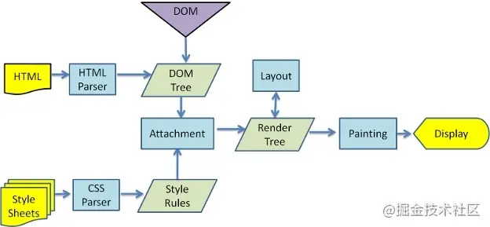
- useEffect 在全部渲染完毕后才会执行
- useLayoutEffect 会在 浏览器 layout 之后，painting 之前执行
- 其函数签名与 useEffect 相同，但它会在所有的 DOM 变更之后同步调用 effect
- 可以使用它来读取 DOM 布局并同步触发重渲染
- 在浏览器执行绘制之前 useLayoutEffect 内部的更新计划将被同步刷新
- 尽可能使用标准的 useEffect 以避免阻塞视图更新
function LayoutEffect() {
const [color, setColor] = useState("red");
useLayoutEffect(() => {
alert(color);
});
useEffect(() => {
console.log("color", color);
});
return (
<>
<div id="myDiv" style={{ background: color }}>
颜色
</div>
<button onClick={() => setColor("red")}>红</button>
<button onClick={() => setColor("yellow")}>黄</button>
<button onClick={() => setColor("blue")}>蓝</button>
</>
);
}
九、useRef & useImperativeHandle
8.1 useRef
- 类组件、React 元素用 React.createRef，函数组件使用 useRef
- useRef 返回一个可变的 ref 对象，其
current属性被初始化为传入的参数（initialValue）
const refContainer = useRef(initialValue);
- useRef 返回的 ref 对象在组件的整个生命周期内保持不变，也就是说每次重新渲染函数组件时，返回的 ref 对象都是同一个（使用 React.createRef ，每次重新渲染组件都会重新创建 ref）
import React, { useState, useEffect, useRef } from "react";
import ReactDOM from "react-dom";
function Parent() {
let [number, setNumber] = useState(0);
return (
<>
<Child />
<button onClick={() => setNumber({ number: number + 1 })}>+</button>
</>
);
}
let input;
function Child() {
const inputRef = useRef();
console.log("input===inputRef", input === inputRef);
input = inputRef;
function getFocus() {
inputRef.current.focus();
}
return (
<>
<input type="text" ref={inputRef} />
<button onClick={getFocus}>获得焦点</button>
</>
);
}
ReactDOM.render(<Parent />, document.getElementById("root"));
8.2 forwardRef
- 因为函数组件没有实例，所以函数组件无法像类组件一样可以接收 ref 属性
function Parent() {
return (
<>
// <Child ref={xxx} /> 这样是不行的
<Child />
<button>+</button>
</>
);
}
- forwardRef 可以在父组件中操作子组件的 ref 对象
- forwardRef 可以将父组件中的 ref 对象转发到子组件中的 dom 元素上
- 子组件接受 props 和 ref 作为参数
function Child(props, ref) {
return <input type="text" ref={ref} />;
}
Child = React.forwardRef(Child);
function Parent() {
let [number, setNumber] = useState(0);
// 在使用类组件的时候，创建 ref 返回一个对象，该对象的 current 属性值为空
// 只有当它被赋给某个元素的 ref 属性时，才会有值
// 所以父组件（类组件）创建一个 ref 对象，然后传递给子组件（类组件），子组件内部有元素使用了
// 那么父组件就可以操作子组件中的某个元素
// 但是函数组件无法接收 ref 属性 <Child ref={xxx} /> 这样是不行的
// 所以就需要用到 forwardRef 进行转发
const inputRef = useRef(); //{current:''}
function getFocus() {
inputRef.current.value = "focus";
inputRef.current.focus();
}
return (
<>
<Child ref={inputRef} />
<button onClick={() => setNumber({ number: number + 1 })}>+</button>
<button onClick={getFocus}>获得焦点</button>
</>
);
}
8.3 useImperativeHandle
useImperativeHandle可以让你在使用 ref 时，自定义暴露给父组件的实例值，不能让父组件想干嘛就干嘛- 在大多数情况下，应当避免使用 ref 这样的命令式代码。useImperativeHandle 应当与 forwardRef 一起使用
- 父组件可以使用操作子组件中的多个 ref
import React,{useState,useEffect,createRef,useRef,forwardRef,useImperativeHandle} from 'react';
function Child(props,parentRef){
// 子组件内部自己创建 ref
let focusRef = useRef();
let inputRef = useRef();
useImperativeHandle(parentRef,()=>(
// 这个函数会返回一个对象
// 该对象会作为父组件 current 属性的值
// 通过这种方式，父组件可以使用操作子组件中的多个 ref
return {
focusRef,
inputRef,
name:'计数器',
focus(){
focusRef.current.focus();
},
changeText(text){
inputRef.current.value = text;
}
}
});
return (
<>
<input ref={focusRef}/>
<input ref={inputRef}/>
</>
)
}
Child = forwardRef(Child);
function Parent(){
const parentRef = useRef();//{current:''}
function getFocus(){
parentRef.current.focus();
// 因为子组件中没有定义这个属性，实现了保护，所以这里的代码无效
parentRef.current.addNumber(666);
parentRef.current.changeText('<script>alert(1)</script>');
console.log(parentRef.current.name);
}
return (
<>
<ForwardChild ref={parentRef}/>
<button onClick={getFocus}>获得焦点</button>
</>
)
}
十、自定义 Hook
- 自定义 Hook 更像是一种约定，而不是一种功能。如果函数的名字以 use 开头，并且调用了其他的 Hook，则就称其为一个自定义 Hook
- 有时候我们会想要在组件之间重用一些状态逻辑，之前要么用 render props ，要么用高阶组件，要么使用 redux
- 自定义 Hook 可以让你在不增加组件的情况下达到同样的目的
- Hook 是一种复用状态逻辑的方式，它不复用 state 本身
- 事实上 Hook 的每次调用都有一个完全独立的 state
import React, { useLayoutEffect, useEffect, useState } from "react";
import ReactDOM from "react-dom";
function useNumber() {
let [number, setNumber] = useState(0);
useEffect(() => {
setInterval(() => {
setNumber((number) => number + 1);
}, 1000);
}, []);
return [number, setNumber];
}
// 每个组件调用同一个 hook，只是复用 hook 的状态逻辑，并不会共用一个状态
function Counter1() {
let [number, setNumber] = useNumber();
return (
<div>
<button
onClick={() => {
setNumber(number + 1);
}}
>
{number}
</button>
</div>
);
}
function Counter2() {
let [number, setNumber] = useNumber();
return (
<div>
<button
onClick={() => {
setNumber(number + 1);
}}
>
{number}
</button>
</div>
);
}
ReactDOM.render(
<>
<Counter1 />
<Counter2 />
</>,
document.getElementById("root")
);
十一、常见问题
1. 使用 eslint-plugin-react-hooks 来检查代码错误，给出提示
{
"plugins": ["react-hooks"],
// ...
"rules": {
"react-hooks/rules-of-hooks": "error", // 检查 Hook 的规则
"react-hooks/exhaustive-deps": "warn" // 检查 effect 的依赖
}
}
2.为什么每次更新的时候都要运行 Effect
react.docschina.org/docs/hooks-…
3.为什么必须在组件的顶层使用 Hook & 在单个组件中使用多个 State Hook 或 Effect Hook，那么 React 怎么知道哪个 state 对应哪个 useState？
- React 依赖于 Hook 的调用顺序，如果能确保 Hook 在每一次渲染中都按照同样的顺序被调用。那么 React 能够在多次的
useState和useEffect调用之间保持 hook 状态的正确性
function Form() {
// 1. Use the name state variable
const [name, setName] = useState("Mary");
// 2. Use an effect for persisting the form
useEffect(function persistForm() {
localStorage.setItem("formData", name);
});
// 3. Use the surname state variable
const [surname, setSurname] = useState("Poppins");
// 4. Use an effect for updating the title
useEffect(function updateTitle() {
document.title = name + " " + surname;
});
// ...
}
// ------------
// 首次渲染
// ------------
useState("Mary"); // 1. 使用 'Mary' 初始化变量名为 name 的 state
useEffect(persistForm); // 2. 添加 effect 以保存 form 操作
useState("Poppins"); // 3. 使用 'Poppins' 初始化变量名为 surname 的 state
useEffect(updateTitle); // 4. 添加 effect 以更新标题
// -------------
// 二次渲染
// -------------
useState("Mary"); // 1. 读取变量名为 name 的 state（参数被忽略）
useEffect(persistForm); // 2. 替换保存 form 的 effect
useState("Poppins"); // 3. 读取变量名为 surname 的 state（参数被忽略）
useEffect(updateTitle); // 4. 替换更新标题的 effect
// ...
只要 Hook 的调用顺序在多次渲染之间保持一致，React 就能正确地将内部 state 和对应的 Hook 进行关联。但如果我们将一个 Hook (例如 persistForm
effect) 调用放到一个条件语句中会发生什么呢？
// 🔴 在条件语句中使用 Hook 违反第一条规则
if (name !== '') {
useEffect(function persistForm() {
localStorage.setItem('formData', name);
});
}
在第一次渲染中 name !== '' 这个条件值为 true，所以我们会执行这个 Hook。但是下一次渲染时我们可能清空了表单，表达式值变为 false。此时的渲染会跳过该
Hook，Hook 的调用顺序发生了改变：
useState("Mary"); // 1. 读取变量名为 name 的 state（参数被忽略）
// useEffect(persistForm) // 🔴 此 Hook 被忽略！
useState("Poppins"); // 🔴 2 （之前为 3）。读取变量名为 surname 的 state 失败
useEffect(updateTitle); // 🔴 3 （之前为 4）。替换更新标题的 effect 失败
React 不知道第二个 useState 的 Hook 应该返回什么。React 会以为在该组件中第二个 Hook 的调用像上次的渲染一样，对应得是 persistForm 的
effect，但并非如此。从这里开始，后面的 Hook 调用都被提前执行，导致 bug 的产生。
如果我们想要有条件地执行一个 effect，可以将判断放到 Hook 的_内部_：
useEffect(function persistForm() {
// 👍 将条件判断放置在 effect 中
if (name !== "") {
localStorage.setItem("formData", name);
}
});
4. 自定义 Hook 必须以 use 开头吗？
必须如此。这个约定非常重要。不遵循的话，由于无法判断某个函数是否包含对其内部 Hook 的调用，React 将无法自动检查你的 Hook 是否违反了 Hook 的规则。
5. 在两个组件中使用相同的 Hook 会共享 state 吗？
不会。自定义 Hook 是一种重用_状态逻辑_的机制(例如设置为订阅并存储当前值)，所以每次使用自定义 Hook 时，其中的所有 state 和副作用都是完全隔离的。
6. 在一个组件中多次调用 useState 或者 useEffect，每次调用 Hook，它都会获取独立的 state，是完全独立的
7. 当组件拥有多个 state 时，应该把多个 state 合并成一个 state ，还是把 state 切分成多个 state 变量？
react.docschina.org/docs/hooks-…
- 要么把所有 state 都放在同一个
useState调用中，要么每一个字段都对应一个useState调用，这两方式都能跑通。 - 当你在这两个极端之间找到平衡，然后把相关 state 组合到几个独立的 state 变量时，组件就会更加的可读。如果 state 的逻辑开始变得复杂，我们推荐用
useReducer来管理它，或使用自定义 Hook。
8. 可以只在更新时运行 effect 吗？
这是个比较罕见的使用场景。如果你需要的话，你可以 使用一个可变的 ref 手动存储一个布尔值来表示是首次渲染还是后续渲染，然后在你的 effect 中检查这个标识。（如果你发现自己经常在这么做，你可以为之创建一个自定义 Hook。）
9. 在 useEffect 中调用用函数时，要把该函数在 useEffect 中申明，不能放到外部申明，然后再在 useEffect 中调用
react.docschina.org/docs/hooks-…
function Example({ someProp }) {
function doSomething() {
console.log(someProp);
}
useEffect(() => {
doSomething();
}, []); // 🔴 这样不安全（它调用的 `doSomething` 函数使用了 `someProp`）
}
要记住 effect 外部的函数使用了哪些 props 和 state 很难。这也是为什么 通常你会想要在 effect 内部 去声明它所需要的函数。 这样就能容易的看出那个 effect 依赖了组件作用域中的哪些值：
function Example({ someProp }) {
useEffect(() => {
function doSomething() {
console.log(someProp);
}
doSomething();
}, [someProp]); // ✅ 安全（我们的 effect 仅用到了 `someProp`）
}
只有 当函数（以及它所调用的函数）不引用 props、state 以及由它们衍生而来的值时，你才能放心地把它们从依赖列表中省略。下面这个案例有一个 Bug：
function ProductPage({ productId }) {
const [product, setProduct] = useState(null);
async function fetchProduct() {
const response = await fetch("http://myapi/product" + productId); // 使用了 productId prop
const json = await response.json();
setProduct(json);
}
useEffect(() => {
fetchProduct();
}, []); // 🔴 这样是无效的，因为 `fetchProduct` 使用了 `productId`
// ...
}
推荐的修复方案是把那个函数移动到你的 effect 内部。这样就能很容易的看出来你的 effect 使用了哪些 props 和 state，并确保它们都被声明了：
function ProductPage({ productId }) {
const [product, setProduct] = useState(null);
useEffect(() => {
// 把这个函数移动到 effect 内部后，我们可以清楚地看到它用到的值。
async function fetchProduct() {
const response = await fetch("http://myapi/product" + productId);
const json = await response.json();
setProduct(json);
}
fetchProduct();
}, [productId]); // ✅ 有效，因为我们的 effect 只用到了 productId
// ...
}
10. 如何在 Hooks 中优雅的 Fetch Data
www.robinwieruch.de/react-hooks…
import React, { useState, useEffect } from 'react';
import axios from 'axios';
function App() {
const [data, setData] = useState({ hits: [] });
// 注意 async 的位置
// 这种写法，虽然可以运行，但是会发出警告
// 每个带有 async 修饰的函数都返回一个隐含的 promise
// 但是 useEffect 函数有要求：要么返回清除副作用函数，要么就不返回任何内容
useEffect(async () => {
const result = await axios(
'https://hn.algolia.com/api/v1/search?query=redux',
);
setData(result.data);
}, []);
return (
<ul>
{data.hits.map(item => (
<li key={item.objectID}>
<a href={item.url}>{item.title}</a>
</li>
))}
</ul>
);
}
export default App;
import React, { useState, useEffect } from 'react';
import axios from 'axios';
function App() {
const [data, setData] = useState({ hits: [] });
useEffect(() => {
// 更优雅的方式
const fetchData = async () => {
const result = await axios(
'https://hn.algolia.com/api/v1/search?query=redux',
);
setData(result.data);
};
fetchData();
}, []);
return (
<ul>
{data.hits.map(item => (
<li key={item.objectID}>
<a href={item.url}>{item.title}</a>
</li>
))}
</ul>
);
}
export default App;
11. 不要过度依赖 useMemo
-
useMemo本身也有开销。useMemo会「记住」一些值，同时在后续 render 时，将依赖数组中的值取出来和上一次记录的值进行比较，如果不相等才会重新执行回调函数，否则直接返回「记住」的值。这个过程本身就会消耗一定的内存和计算资源。因此，过度使用useMemo可能会影响程序的性能。 -
在使用
useMemo前，应该先思考三个问题：- 传递给
useMemo的函数开销大不大？ 有些计算开销很大，我们就需要「记住」它的返回值，避免每次 render 都去重新计算。如果你执行的操作开销不大，那么就不需要记住返回值。否则，使用useMemo本身的开销就可能超过重新计算这个值的开销。因此，对于一些简单的 JS 运算来说，我们不需要使用useMemo来「记住」它的返回值。 - 返回的值是原始值吗？ 如果计算出来的是基本类型的值（
string、boolean、null、undefined、number、symbol），那么每次比较都是相等的，下游组件就不会重新渲染；如果计算出来的是复杂类型的值（object、array），哪怕值不变，但是地址会发生变化，导致下游组件重新渲染。所以我们也需要「记住」这个值。 - 在编写自定义 Hook 时，返回值一定要保持引用的一致性。 因为你无法确定外部要如何使用它的返回值。如果返回值被用做其他 Hook 的依赖，并且每次 re-render
时引用不一致（当值相等的情况），就可能会产生 bug。所以如果自定义 Hook 中暴露出来的值是 object、array、函数等，都应该使用
useMemo。以确保当值相同时，引用不发生变化。
- 传递给
12. useEffect 不能接收 async 作为回调函数
useEffect 接收的函数，要么返回一个能清除副作用的函数，要么就不返回任何内容。而 async 返回的是 promise。
www.robinwieruch.de/react-hooks…
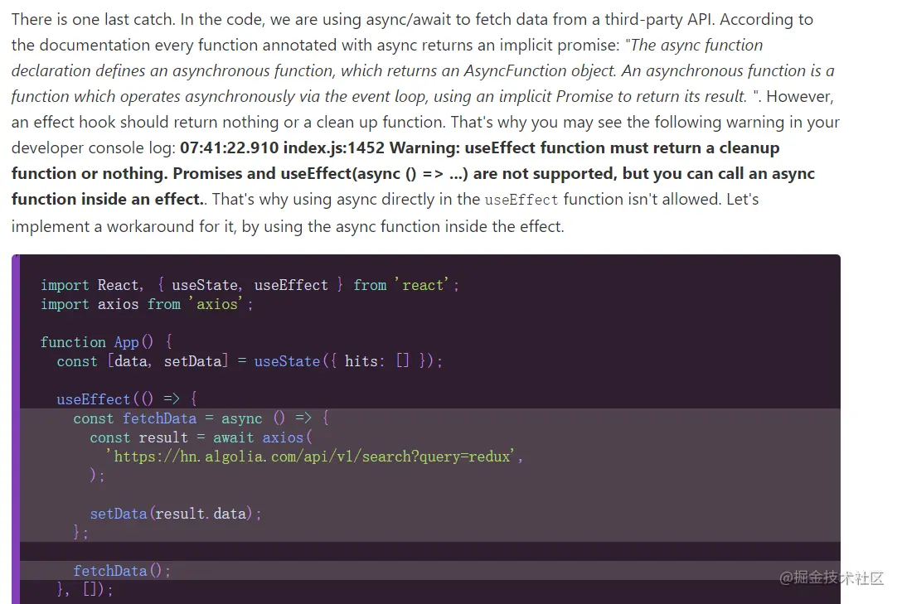
十二、项目实战
十三、参考
从 Preact 中了解 React 组件和 hooks 基本原理表
2019 年了，整理了 N 个实用案例帮你快速迁移到 React Hooks
十四、推荐阅读
Vue2.x 响应式原理
众所周知，Vue2.x 是基于 Object.defineProperty()来实现响应式的。
那么，defineProperty 是啥呢。
先附上 MDN 的连接Object.defineProperty()
Object.defineProperty
引用 MDN 的原话：
Object.defineProperty()方法会直接在一个对象上定义一个新属性，或者修改一个对象的现有属性，并返回此对象。
那么重点有两个：
- 对象
- 定义新属性或修改现有属性
那么什么叫定义新属性或修改现有属性呢？
我们来看看另外一个概念属性描述符
属性描述符
描述符的介绍
对象里目前存在的属性描述符有两种主要形式：
- 数据描述符：具有值的属性，该值可以是可写的，也可以是不可写的。
- 存取描述符：由 getter 和 setter 函数描述的属性。
一个描述符只可能是二者之一，不可能同时是两者。即二选一。
上述两种描述符都是对象，共享以下可选键值。（默认值是指在使用 Object.defineProperty() 定义属性时的默认值）
| 键值 | 描述 | 默认值 |
|---|---|---|
| configurable | 当且仅当该属性的 configurable 键值为 true 时，该属性的描述符才能够被改变，同时该属性也能从对应的对象上被删除。 | false |
| enumerable | 当且仅当该属性的 enumerable 键值为 true 时，该属性才会出现在对象的枚举属性中。 | false |
| value | 该属性对应的值。可以是任何有效的 JavaScript 值（数值，对象，函数等）。 | undefined |
| writable | 当且仅当该属性的 writable 键值为 true 时，属性的值，也就是上面的 value，才能被赋值。 | false |
因为
enumerable属性默认是 false，所以通过Object.defineProperty()定义的属性都是不会被for...in和Object.keys访问到。
以下是存取描述符独有的：
| 键值 | 描述 | 默认值 |
|---|---|---|
| get | 属性的 getter 函数，如果没有 getter，则为 undefined。当访问该属性时，会调用此函数。执行时不传入任何参数，但是会传入 this 对象（由于继承关系，这里的this并不一定是定义该属性的对象）。该函数的返回值会被用作属性的值。 | undefined |
| get | 属性的 setter 函数，如果没有 setter，则为 undefined。当属性值被修改时，会调用此函数。该方法接受一个参数（也就是被赋予的新值），会传入赋值时的 this 对象。 | undefined |
可以看到，跟值相关的，默认值都是 undefined。跟able相关的，默认值都是 false。
怎么区分描述符呢？
| configurable | enumerable | value | writable | get | set | |
|---|---|---|---|---|---|---|
| 数据描述符 | √ | √ | √ | √ | × | × |
| 存取描述符 | √ | √ | × | × | √ | √ |
如果一个描述符不具有 value、writable、get 和 set 中的任意一个键，那么它将被认为是一个数据描述符。如果一个描述符同时拥有 value 或 writable
和 get 或 set 键，则会产生一个异常。
了解到这里已经够我们去理解 Vue2.x 的响应式原理了。
我们再填一下上面的坑：
如果对象中不存在指定的属性，Object.defineProperty() 会创建这个属性。当描述符中省略某些字段时，这些字段将使用它们的默认值。 搬一下 MDN 的代码：
var o = {}; // 创建一个新对象
// 在对象中添加一个属性与数据描述符的示例
Object.defineProperty(o, "a", {
value: 37,
writable: true,
enumerable: true,
configurable: true,
});
// 对象 o 拥有了属性 a，值为 37
// 在对象中添加一个设置了存取描述符属性的示例
var bValue = 38;
Object.defineProperty(o, "b", {
// 使用了方法名称缩写（ES2015 特性）
// 下面两个缩写等价于：
// get : function() { return bValue; },
// set : function(newValue) { bValue = newValue; },
get() {
return bValue;
},
set(newValue) {
bValue = newValue;
},
enumerable: true,
configurable: true,
});
o.b; // 38
// 对象 o 拥有了属性 b，值为 38
// 现在，除非重新定义 o.b，o.b 的值总是与 bValue 相同
// 数据描述符和存取描述符不能混合使用
Object.defineProperty(o, "conflict", {
value: 0x9f91102,
get() {
return 0xdeadbeef;
},
});
// 抛出错误 TypeError: value appears only in data descriptors, get appears only in accessor descriptors
响应式原理
所谓响应式，即，一个值变化的时候要根据这个变化，产生相应的行为。
在浏览器上，dom 渲染完成之后，那么如果你不主动通过 dom 修改操作来重新渲染，那么这个 dom 就永远不变了。 那如果 dom 上渲染的是 X 的值，X 变了怎么办呢。难不成你每次给 X 赋值的时候，都手动 document.balabala 吗？
看过上面的 set 属性之后你可能就想明白了，重点再复习一下：
当属性值被修改时，会调用此函数。
锵锵锵，简单来说就是用get和set来实现的啦。
简单实现
话不多说，直接上代码 。
let x;
let f = function (v) {
return v * 100;
};
// 变化之后的处理函数
let active;
const onXChange = (cb) => {
active = cb;
// 初始化的时候就需要执行一次
active();
};
// 工厂
const ref = (value) => {
let initValue = value;
return Object.defineProperty({}, "value", {
get() {
return initValue;
},
set(newVal) {
initValue = newVal;
active();
},
});
};
// 初始化
x = ref(1);
// 添加回调
onXChange(() => {
console.log(f(x.value));
});
x.value = 2;
x.value = 3;
上述的写法有点问题。如果，不光是一个 callback，有多个 callback 如何处理？
一个 active 不够用。所以我们需要一个地方进行依赖收集。（即，多个组件依赖这个数据，每个组件都需要进行变化。）
带依赖收集
变化后的代码如下：
/* eslint-disable no-debugger */
let x;
let f = function (v) {
return v * 100;
};
let active;
const onXChange = (cb) => {
active = cb;
active();
active = null;
};
class Dep {
deps = new Set();
depend() {
if (active) {
this.deps.add(active);
}
}
notify() {
this.deps.forEach((dep) => dep());
}
}
const ref = (value) => {
let initValue = value;
let deps = new Dep();
return Object.defineProperty({}, "value", {
get() {
deps.depend();
return initValue;
},
set(newVal) {
initValue = newVal;
deps.notify();
},
});
};
x = ref(1);
onXChange(() => {
console.log(f(x.value));
});
onXChange(() => {
console.log(x.value + 1);
});
x.value = 2;
x.value = 3;
异步更新队列
在上面 Vue2.x 响应式原理的代码里还是有点问题的。
先捞一遍代码：
let x;
let f = function (v) {
return v * 100;
};
let active;
const onXChange = (cb) => {
active = cb;
active();
active = null;
};
class Dep {
deps = new Set();
depend() {
if (active) {
this.deps.add(active);
}
}
notify() {
this.deps.forEach((dep) => dep());
}
}
const ref = (value) => {
let initValue = value;
let deps = new Dep();
return Object.defineProperty({}, "value", {
get() {
deps.depend();
return initValue;
},
set(newVal) {
initValue = newVal;
deps.notify();
},
});
};
x = ref(1);
onXChange(() => {
console.log(f(x.value));
});
x.value = 2;
x.value = 3;
依赖多个变量的情况下的性能问题
简单删减一波，然后让模板依赖于三个变量：
let active;
const watch = (cb) => {
active = cb;
active();
active = null;
};
class Dep {
deps = new Set();
depend() {
if (active) {
this.deps.add(active);
}
}
notify() {
this.deps.forEach((dep) => dep());
}
}
const ref = (value) => {
let initValue = value;
let deps = new Dep();
return Object.defineProperty({}, "value", {
get() {
deps.depend();
return initValue;
},
set(newVal) {
initValue = newVal;
deps.notify();
},
});
};
let x = ref(1);
let y = ref(2);
let z = ref(3);
watch(() => {
let str = `${x.value} --- ${y.value} --- ${z.value}`;
document.write(str);
console.log(str);
});
x.value = 2;
y.value = 3;
z.value = 3;
打开控制台你会发现，每一次值变化的时候，都会触发一次onXChange。
那么问题来了。如果在一个函数中，修改了多个变量，那岂不是页面就要进行多次渲染吗？那么性能肯定下降了。
那么这怎么办呢。
异步更新队列
那么就得用到异步更新队列了。
我们知道 JavaScript 有宏任务和微任务。所有的微任务都是在宏任务执行完成之后再执行的。
那么我们可以定义一个nextTick函数，用来在宏任务执行完成之后执行微任务。 即，在所有的赋值完成之后，再执行onChange方法。
const netxtTick = (cb) => Promise.resolve().then(cb);
我们还需要一个队列用来保证先进来的onChange先执行：
let queue = [];
// 增加任务的方法
let queueJob = (job) => {
// 如果任务已经被添加过，则不添加了
if (!queue.includes(job)) {
queue.push(job);
// 在微任务中执行所有回调
nextTick(flushJobs);
}
};
// 执行任务的方法
let flushJobs = () => {
let job;
// 如果队列中第一个始终有任务，则取出来执行
while ((job = queue.shift()) !== undefined) {
job();
}
};
整体代码如下：
let active;
const watch = (cb) => {
active = cb;
active();
active = null;
};
let nextTick = (cb) => Promise.resolve().then(cb);
let queue = [];
let queueJob = (job) => {
if (!queue.includes(job)) {
queue.push(job);
nextTick(flushJobs);
}
};
let flushJobs = () => {
let job;
while ((job = queue.shift()) !== undefined) {
job();
}
};
class Dep {
deps = new Set();
depend() {
if (active) {
this.deps.add(active);
}
}
notify() {
// 注意notify内部变更了
this.deps.forEach((dep) => queueJob(dep));
}
}
const ref = (value) => {
let initValue = value;
let deps = new Dep();
return Object.defineProperty({}, "value", {
get() {
deps.depend();
return initValue;
},
set(newVal) {
initValue = newVal;
deps.notify();
},
});
};
let x = ref(1);
let y = ref(2);
let z = ref(3);
watch(() => {
let str = `${x.value} --- ${y.value} --- ${z.value}`;
document.write(str);
console.log(str);
});
x.value = 2;
y.value = 3;
z.value = 3;
computed,watch,watchEffect
今天来实现一下 vue 里的 computed，watch 和 watchEffect 函数。
先把前面的代码简单捞出来，做一些修改。
使得页面上有个按钮，点击按钮，count 增加。（万物始于计数器）
let active;
const watchEffect = (cb) => {
active = cb;
active();
active = null;
};
let nextTick = (cb) => Promise.resolve().then(cb);
let queue = [];
let queueJob = (job) => {
if (!queue.includes(job)) {
queue.push(job);
nextTick(flushJobs);
}
};
let flushJobs = () => {
let job;
while ((job = queue.shift()) !== undefined) {
job();
}
};
class Dep {
deps = new Set();
depend() {
if (active) {
this.deps.add(active);
}
}
notify() {
this.deps.forEach((dep) => queueJob(dep));
}
}
const ref = (value) => {
let initValue = value;
let deps = new Dep();
return Object.defineProperty({}, "value", {
get() {
deps.depend();
return initValue;
},
set(newVal) {
initValue = newVal;
deps.notify();
},
});
};
let count = ref(0);
document.getElementById("add").addEventListener("click", () => {
count.value++;
});
watchEffect(() => {
let str = `count is: ${count.value}`;
document.getElementById("app").innerText = str;
});
watchEffect
watchEffect 是一个函数，接受一个函数。函数内部依赖的值变了，函数就会立即执行。就跟我们之前的 watch 一模一样。所以，直接给他改个名就行了。
但是还要返回一个 stop，用来停止监听，这个最后再说。
computed
computed 接受一个函数，内部依赖某个值，并返回一个新的值。内部还有一个缓存。当依赖的值变化的时候才会重新求值。
简单实现
简单实现一个 computed 函数：
let computed = (fn) => {
// 使用闭包来保存一个value
let value;
return {
get value() {
// 在get中响应式监听，直接在get中执行一次fn即可获取到计算后的值。
value = fn();
return value;
},
};
};
上述代码已经可以简单的实现一个计算属性。
缓存功能
但是我们的 computed 是有缓存的，而且如果多处调用计算属性，那么将会进行多次计算。为了减少计算。我们也要使用缓存。
通过下面的代码可以发现问题：
let active;
const watchEffect = (cb) => {
active = cb;
active();
active = null;
};
let nextTick = (cb) => Promise.resolve().then(cb);
let queue = [];
let queueJob = (job) => {
if (!queue.includes(job)) {
queue.push(job);
nextTick(flushJobs);
}
};
let flushJobs = () => {
let job;
while ((job = queue.shift()) !== undefined) {
job();
}
};
class Dep {
deps = new Set();
depend() {
if (active) {
this.deps.add(active);
}
}
notify() {
this.deps.forEach((dep) => queueJob(dep));
}
}
const ref = (value) => {
let initValue = value;
let deps = new Dep();
return Object.defineProperty({}, "value", {
get() {
deps.depend();
return initValue;
},
set(newVal) {
initValue = newVal;
deps.notify();
},
});
};
let computedCount = 0;
let computed = (fn) => {
// 使用闭包来保存一个value
let value;
return {
get value() {
// 在get中响应式监听，直接在get中执行一次fn即可。
value = fn();
computedCount += 1;
return value;
},
};
};
let count = ref(0);
let computeCount = computed(() => count.value + 1);
document.getElementById("add").addEventListener("click", () => {
count.value++;
});
watchEffect(() => {
let str = `count is: ${count.value} \n computeCount is: ${computeCount.value} \n computedCount: ${computedCount}`;
document.getElementById("app1").innerText = str;
});
watchEffect(() => {
document.getElementById(
"app2"
).innerText = `computeCount 2 is : ${computeCount.value} \n computedCount: ${computedCount}`;
});
我们在 computed 中增加一个 flag 来控制是否进行计算。
let computed = (fn) => {
// 使用闭包来保存一个value
let value;
let dirty = true;
return {
get value() {
// 如果值没有发生变化，返回缓存中的值。
// 也可以保证多处依赖的时候不会重复计算。
if (dirty) {
// 在get中响应式监听，直接在get中执行一次fn即可。
value = fn();
computedCount += 1;
// 置为false
dirty = false;
}
return value;
},
};
};
那么问题来了，既然置为了 false，那么何时何地再置为 true 呢。
显然，在我们触发了 set 操作。在赋值过后的广播行为里，将所有 computed 属性里的 flag 都置为 true。
对此需要进行一些改造。
此刻之前的代码，ref 中，
initialValue和value的定义不符合语义化，已更改。
let active;
let effect = (fn, options = {}) => {
// 定义一个effectInner来对active进行赋值和执行的操作。
let effectInner = (...args) => {
try {
// 常规执行，将自身赋值给active，以在收集依赖的时候调用。
active = effectInner;
// 直接执行fn，防止递归调用。然后返回。
// return active(...args);
return fn(...args);
} finally {
// 为了能最终将active值为空。使用try catch finally的特性。
active = null;
}
};
// 给effectInner上绑定一个options对象。以在广播的时候调用。
effectInner.options = options;
return effectInner;
};
const watchEffect = (cb) => {
// 替换为effect
let runner = effect(cb);
runner();
};
let nextTick = (cb) => Promise.resolve().then(cb);
let queue = [];
let queueJob = (job) => {
if (!queue.includes(job)) {
queue.push(job);
nextTick(flushJobs);
}
};
let flushJobs = () => {
let job;
while ((job = queue.shift()) !== undefined) {
job();
}
};
class Dep {
deps = new Set();
depend() {
if (active) {
this.deps.add(active);
}
}
notify() {
this.deps.forEach((dep) => {
queueJob(dep);
dep.options && dep.options.schedular && dep.options.schedular();
});
// 放上面好像也没啥事情，丢里面也能跑。不知道为啥课上写外面，也没说为啥。
// this.deps.forEach(dep => {
// dep.options && dep.options.schedular && dep.options.schedular();
// })
}
}
const ref = (initValue) => {
let value = initValue;
let deps = new Dep();
return Object.defineProperty({}, "value", {
get() {
deps.depend();
return value;
},
set(newVal) {
value = newVal;
deps.notify();
},
});
};
let computedCount = 0;
let computed = (fn) => {
// 使用闭包来保存一个value
let value;
let dirty = true;
// 使用effect包裹fn，增加option，以保证在执行完之后。能在广播中调用options里的schedular。
let runner = effect(fn, {
//
schedular: () => {
// 执行这步的时候说明所依赖的值已经更新过了。所以需要置为true保证下面能计算。
!dirty && (dirty = true);
},
});
return {
get value() {
// 如果值没有发生变化，返回缓存中的值。
// 也可以保证多处依赖的时候不会重复计算。
if (dirty) {
// 在get中响应式监听，直接在get中执行一次fn即可。
value = runner();
computedCount += 1;
dirty = false;
}
return value;
},
};
};
let count = ref(0);
let computeCount = computed(() => count.value + 1);
document.getElementById("add").addEventListener("click", () => {
count.value++;
});
watchEffect(() => {
let str = `count is: ${count.value} \n computeCount is: ${computeCount.value} \n computedCount: ${computedCount}`;
document.getElementById("app1").innerText = str;
});
watchEffect(() => {
document.getElementById(
"app2"
).innerText = `computeCount 2 is : ${computeCount.value} \n computedCount: ${computedCount}`;
});
细心的小伙伴发现了。点击 add 的时候下面的id=app2的dom不刷新了。这是为啥呢。
我们知道watchEffect会立即执行一遍。所以一开始的时候。我们的值是computeCount.value是 1，没毛病。并且在设置缓存之后，computedCount也是 1
了。并没有重复计算。因为在执行app2的dom的渲染的时候，count的值并没有刷新，所以直接从缓存中取的值。所以上述代码的缓存功能是实现了。
至于为啥不更新。因为app2并不依赖于 count
的值，所以在依赖收集的时候，并没有被增加到deps里去。在页面渲染完毕之后，deps里只有两个dep，都是app1在渲染的时候产生的。一个是直接调用get cout.value的时候产生的依赖，还有一个是调用computed里的count.value + 1的时候使用的get产生的依赖。所以count更新的时候只会执行这两个。并不会触发app2的更新。
没搞懂的。理清一下逻辑。在notify的时候打个断点。在depend的时候打一个断点。就跑懂啦。
watch
监听变化，并在监听回调函数中返回数据变更前后的两个值，常用于在数据变化之后执行的异步操作或者开销交大的操作。
那么，app2的不渲染问题也可以在这里解决。（不直接依赖count，但是需要根据count的变化而变化）
那么，核心思想就是，触发count的get方法把执行的回调函数增加到deps里。
我们这里 watch 的第一个参数只给到function，其他类型的不讨论。
所以有一个 getter：
// source是一个函数，里面有所依赖（要监听）的值
let getter = () => {
return source();
};
然后我们需要一个增加依赖的地方，所以用到了 effect，然后还需要给回调函数准备newVal和oldVal：
let oldVal;
const runner = effect(getter, {
schedular: () => {
// 重复触发依赖收集
let newVal = runner();
// 只有当newVal不等于oldVal的时候才触发，即有变化之后才触发
if (newVal !== oldVal) {
cb(newVal, oldVal);
// 重新赋值oldVal
oldVal = newVal;
}
},
});
// 初始化赋值oldVal
oldVal = runner();
然后我们去使用 watch，并且在 callback 里不直接使用cout.value，完整代码如下：
let active;
let effect = (fn, options = {}) => {
let effectInner = (...args) => {
try {
active = effectInner;
return fn(...args);
} finally {
active = null;
}
};
effectInner.options = options;
return effectInner;
};
const watchEffect = (cb) => {
let runner = effect(cb);
runner();
};
let nextTick = (cb) => Promise.resolve().then(cb);
let queue = [];
let queueJob = (job) => {
if (!queue.includes(job)) {
queue.push(job);
nextTick(flushJobs);
}
};
let flushJobs = () => {
let job;
while ((job = queue.shift()) !== undefined) {
job();
}
};
class Dep {
deps = new Set();
depend() {
if (active) {
this.deps.add(active);
}
}
notify() {
this.deps.forEach((dep) => {
queueJob(dep);
dep.options && dep.options.schedular && dep.options.schedular();
});
// this.deps.forEach(dep => {
// dep.options && dep.options.schedular && dep.options.schedular();
// })
}
}
const ref = (initValue) => {
let value = initValue;
let deps = new Dep();
return Object.defineProperty({}, "value", {
get() {
deps.depend();
return value;
},
set(newVal) {
value = newVal;
deps.notify();
},
});
};
let computed = (fn) => {
// 使用闭包来保存一个value
let value;
let dirty = true;
let runner = effect(fn, {
schedular: () => {
!dirty && (dirty = true);
},
});
return {
get value() {
// 如果值没有发生变化，返回缓存中的值。
// 也可以保证多处依赖的时候不会重复计算。
if (dirty) {
// 在get中响应式监听，直接在get中执行一次fn即可。
value = runner();
dirty = false;
}
return value;
},
};
};
let watch = (source, cb) => {
let getter = () => {
return source();
};
let oldVal;
const runner = effect(getter, {
schedular: () => {
// 重复触发依赖收集
let newVal = runner();
if (newVal !== oldVal) {
cb(newVal, oldVal);
oldVal = newVal;
}
},
});
oldVal = runner();
};
let count = ref(0);
let computeCount = computed(() => count.value + 1);
watch(
() => count.value,
(newVal, preVal) => {
console.log(newVal, preVal);
document.getElementById("app2").innerText = `watchCount is : ${newVal}`;
}
);
document.getElementById("add").addEventListener("click", () => {
count.value++;
});
watchEffect(() => {
let str = `count is: ${count.value} \n computeCount is: ${computeCount.value}`;
document.getElementById("app1").innerText = str;
});
// watchEffect(() => {
// document.getElementById('app2').innerText = `computeCount 2 is : ${computeCount.value}`
// })
可以看到app2已经被更新了。
但是首次渲染的时候没有显示。当然咯。首次渲染的时候count.value又没变化咯。
要是我就是要初始化的时候也渲染呢？
那么就到了 watch 的 options 里，有个叫 immediate 的参数。用来判断是否需要立即执行一次。
对 watch 进行一下小修改：
let watch = (source, cb, options = { immediate: false }) => {
const { immediate } = options;
let getter = () => {
return source();
};
let oldVal;
const applyCb = () => {
// 重复触发依赖收集
let newVal = runner();
if (newVal !== oldVal) {
cb(newVal, oldVal);
oldVal = newVal;
}
};
const runner = effect(getter, {
// schedular: () => applyCb()
schedular: applyCb,
});
if (immediate) {
applyCb();
} else {
oldVal = runner();
}
};
这样的话第一次进来就可以看到啦。
先把之前写过的 vue 的响应式原理里的代码略加修改搬过来
/* eslint-disable no-unused-vars */
// let x;
// let y;
// let f = n => n * 100 + 100;
let active;
let watch = function (cb) {
active = cb;
active();
active = null;
};
let queue = [];
let nextTick = (cb) => Promise.resolve().then(cb);
let queueJob = (job) => {
if (!queue.includes(job)) {
queue.push(job);
nextTick(flushJobs);
}
};
let flushJobs = () => {
let job;
while ((job = queue.shift()) !== undefined) {
job();
}
};
class Dep {
constructor() {
this.deps = new Set();
}
depend() {
if (active) {
this.deps.add(active);
}
}
notify() {
this.deps.forEach((dep) => queueJob(dep));
}
}
let ref = (initValue) => {
let value = initValue;
let dep = new Dep();
return Object.defineProperty({}, "value", {
get() {
dep.depend();
return value;
},
set(newValue) {
value = newValue;
dep.notify();
},
});
};
let createReactive = (target, prop, value) => {
let dep = new Dep();
// return new Proxy(target, {
// get(target, prop) {
// dep.depend();
// return Reflect.get(target, prop);
// },
// set(target, prop, value) {
// Reflect.set(target, prop, value);
// dep.notify();
// },
// });
return Object.defineProperty(target, prop, {
get() {
dep.depend();
return value;
},
set(newValue) {
value = newValue;
dep.notify();
},
});
};
export let reactive = (obj) => {
let dep = new Dep();
Object.keys(obj).forEach((key) => {
let value = obj[key];
createReactive(obj, key, value);
});
return obj;
};
// let data = reacitve({
// count: 0
// });
import { Store } from "./vuex";
let store = new Store({
state: {
count: 0,
},
mutations: {
addCount(state, payload) {
state.count += payload || 1;
},
},
plugins: [
(store) =>
store.subscribe((mutation, state) => {
console.log(mutation);
}),
],
});
document.getElementById("add").addEventListener("click", function () {
// data.count++;
store.commit("addCount", 1);
});
let str;
watch(() => {
str = `hello ${store.state.count}`;
document.getElementById("app").innerText = str;
});
vuex 其实也就是在构造过程中调用了 vue 的 reactive 来包裹自己的 state 来使得 state 变为响应式的。
import { reactive } from "./myVue";
export class Store {
constructor(options = {}) {
let { state, mutations, plugins } = options;
this._vm = reactive(state);
this._mutations = mutations;
this._subscribe = [];
plugins.forEach((plugin) => plugin(this));
}
get state() {
return this._vm;
}
commit(type, payload) {
const entry = this._mutations[type];
if (!entry) {
return;
}
entry(this.state, payload);
this._subscribe.forEach((fn) => fn({ type, payload }, this.state));
}
subscribe(fn) {
if (!this._subscribe.includes(fn)) {
this._subscribe.push(fn);
}
}
}
加密
HTTP 有以下安全性问题：
- 使用明文进行通信，内容可能会被窃听；
- 不验证通信方的身份，通信方的身份有可能遭遇伪装；
- 无法证明报文的完整性，报文有可能遭篡改。
HTTPS 并不是新协议，而是让 HTTP 先和 SSL（Secure Sockets Layer）通信，再由 SSL 和 TCP 通信，也就是说 HTTPS 使用了隧道进行通信。
通过使用 SSL，HTTPS 具有了加密（防窃听）、认证（防伪装）和完整性保护（防篡改）。

对称加密
加密的密钥和解密的密钥是同一个
非对称加密
加密的密钥和解密的密钥不是同一个（公钥，私钥）
- 创建者必须创建一个密钥对（公钥和私钥）
- 公钥加密必须私钥解密
- 私钥加密必须公钥解密
- 创建者保留私钥，公钥向外界公开
使用非对称加密的场景
不放心对方保管密钥的情况
非对称加密的例子
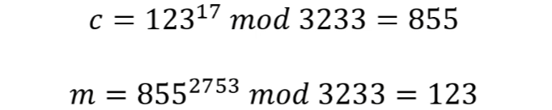
对比
- 非对称加密安全性更好
- 对称加密计算速度更快
- 一般都是混合使用（使用非对称加密协商密钥，然后进行对称加密）
HTTPs
https 的工作过程
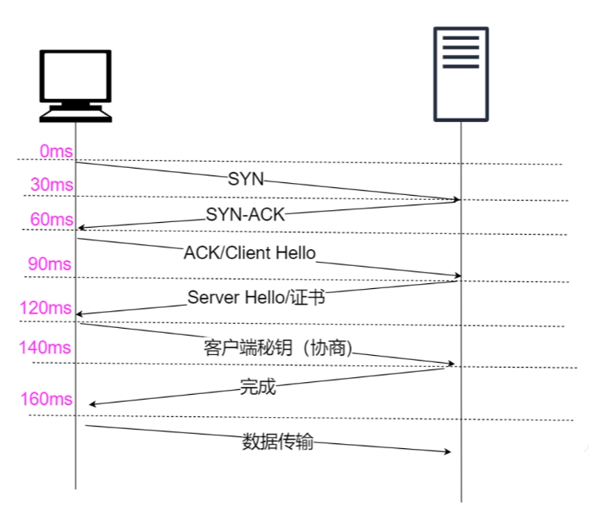
- SYN
- SYN-ACK
- ACK 三次握手完成（至此都是不加密的，因为是三次握手）
- 然后服务端回传证书（不加密）
- 客户端密钥（协商）（非对称加密）
- 完成（非对称加密）
- 然后才进行数据传输（对称加密）
认证
通过使用 证书 来对通信方进行认证。
数字证书认证机构（CA，Certificate Authority）是客户端与服务器双方都可信赖的第三方机构。
服务器的运营人员向 CA 提出公开密钥的申请，CA 在判明提出申请者的身份之后，会对已申请的公开密钥做数字签名，然后分配这个已签名的公开密钥，并将该公开密钥放入公开密钥证书后绑定在一起。
进行 HTTPS 通信时，服务器会把证书发送给客户端。客户端取得其中的公开密钥之后，先使用数字签名进行验证，如果验证通过，就可以开始通信了。

完整性保护
SSL 提供报文摘要功能来进行完整性保护。
HTTP 也提供了 MD5 报文摘要功能，但不是安全的。例如报文内容被篡改之后，同时重新计算 MD5 的值，通信接收方是无法意识到发生了篡改。
HTTPS 的报文摘要功能之所以安全，是因为它结合了加密和认证这两个操作。试想一下，加密之后的报文，遭到篡改之后，也很难重新计算报文摘要，因为无法轻易获取明文。
HTTPS 的缺点
- 因为需要进行加密解密等过程，因此速度会更慢；
- 需要支付证书授权的高额费用。
TCP 三次握手
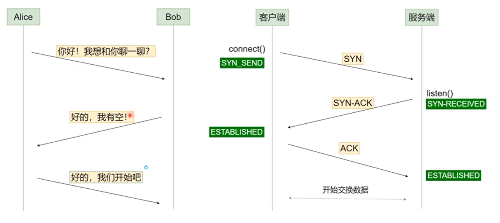
- 客户端调用
connect方法，然后客户端进入SYN_SEND - 客户端接收到之后，会进入
SYN_RECEIVED状态，然后发送一个ACK，表示已经确认收到请求 - 然后客户端收到之后会进入
ESTABLISHED状态，然后客户端还会发送一个ACK，告诉服务端已经收到了 - 然后服务端收到之后，会进入
ESTABLISHED

假设 A 为客户端，B 为服务器端。
- 首先 B 处于 LISTEN（监听）状态，等待客户的连接请求。
- A 向 B 发送连接请求报文，SYN=1，ACK=0，选择一个初始的序号 x。
- B 收到连接请求报文，如果同意建立连接，则向 A 发送连接确认报文，SYN=1，ACK=1，确认号为 x+1，同时也选择一个初始的序号 y。
- A 收到 B 的连接确认报文后，还要向 B 发出确认，确认号为 y+1，序号为 x+1。
- B 收到 A 的确认后，连接建立。
三次握手的原因
第三次握手是为了防止失效的连接请求到达服务器，让服务器错误打开连接。
客户端发送的连接请求如果在网络中滞留，那么就会隔很长一段时间才能收到服务器端发回的连接确认。客户端等待一个超时重传时间之后，就会重新请求连接。但是这个滞留的连接请求最后还是会到达服务器，如果不进行三次握手，那么服务器就会打开两个连接。如果有第三次握手，客户端会忽略服务器之后发送的对滞留连接请求的连接确认，不进行第三次握手，因此就不会再次打开连接。
关于数据同步
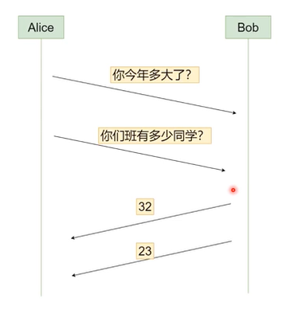
- 发多个，返回多个
- 发多个，到达顺序不一致
- 收到的也不一定能保证顺序
所以我们需要给消息加上编号。也要保证编号的唯一性、顺序性等（时差等）。
- 使用发送接收时间
- 要解决服务器时差
- 使用自增序号
- A-B-A-B 类型会话可以解决？
- A-（AB）-B 类型会话如何解决？
TCP/IP 协议的处理方法
消息的绝对顺序使用 SEQ 和 ACK 这一对元组描述
- SEQ（Sequence）：这个消息发送之前一共发送了多少字节
- ACK（Acknowledge）：这个消息发送钱一共收到了多少字节
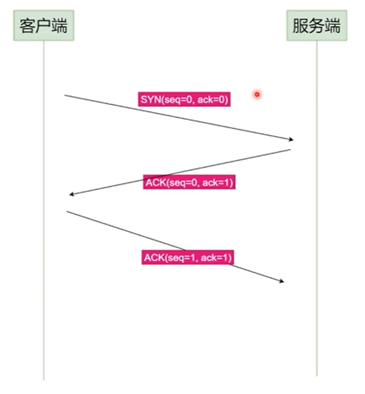

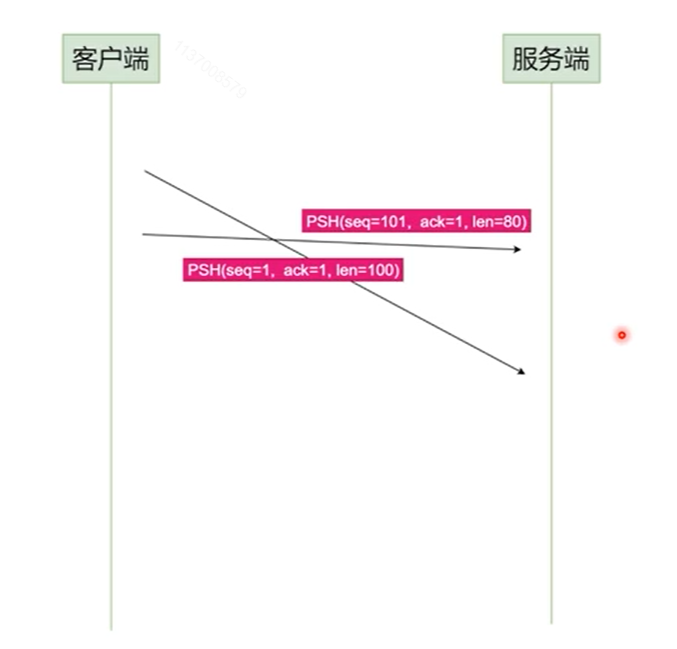
TCP 滑动窗口
窗口是缓存的一部分，用来暂时存放字节流。发送方和接收方各有一个窗口，接收方通过 TCP 报文段中的窗口字段告诉发送方自己的窗口大小，发送方根据这个值和其它信息设置自己的窗口大小。
发送窗口内的字节都允许被发送，接收窗口内的字节都允许被接收。如果发送窗口左部的字节已经发送并且收到了确认，那么就将发送窗口向右滑动一定距离，直到左部第一个字节不是已发送并且已确认的状态；接收窗口的滑动类似，接收窗口左部字节已经发送确认并交付主机，就向右滑动接收窗口。
接收窗口只会对窗口内最后一个按序到达的字节进行确认，例如接收窗口已经收到的字节为 {31, 34, 35}，其中 {31} 按序到达，而 {34, 35} 就不是，因此只对字节 31 进行确认。发送方得到一个字节的确认之后，就知道这个字节之前的所有字节都已经被接收。

TCP 四次挥手
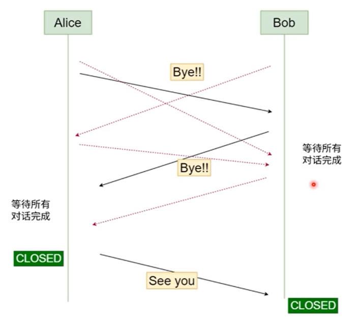
不可以在客户端发起关闭请求的时候立即关闭连接。以防止还有消息未发送或未到达。
所以 TCP/IP 中是这么做的：
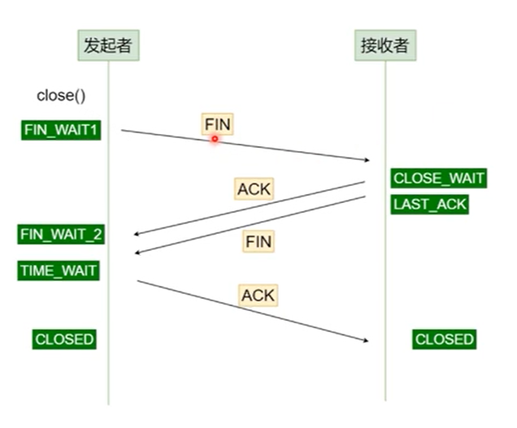
- 关闭连接的发起者启用
close方法，自身进入FIN_WAIT1状态，发送 FIN 报文给接收端 - 接收端接受到
FIN报文之后，会进入CLOSE_WAIT状态。 - 然后等待发送完所有未发送的请求之后，自身会进入
LAST_ACK状态，发送FIN报问给发起者 - 发起者接受到之后会进入
TIME_WAIT状态，然后给接受者一个响应ACK，接受者会进入CLOSED状态 - 然后在一段时间内等待，以防止网络拥堵导致包还未到达。时间结束之后，发起者会直接进入
CLOSED状态

以下描述不讨论序号和确认号，因为序号和确认号的规则比较简单。并且不讨论 ACK，因为 ACK 在连接建立之后都为 1。
- A 发送连接释放报文，FIN=1。
- B 收到之后发出确认，此时 TCP 属于半关闭状态，B 能向 A 发送数据但是 A 不能向 B 发送数据。
- 当 B 不再需要连接时，发送连接释放报文，FIN=1。
- A 收到后发出确认，进入 TIME-WAIT 状态，等待 2 MSL（最大报文存活时间）后释放连接。
- B 收到 A 的确认后释放连接。
四次挥手的原因
客户端发送了 FIN 连接释放报文之后，服务器收到了这个报文，就进入了 CLOSE-WAIT 状态。这个状态是为了让服务器端发送还未传送完毕的数据，传送完毕之后，服务器会发送 FIN 连接释放报文。
TIME_WAIT
客户端接收到服务器端的 FIN 报文后进入此状态，此时并不是直接进入 CLOSED 状态，还需要等待一个时间计时器设置的时间 2MSL。这么做有两个理由：
- 确保最后一个确认报文能够到达。如果 B 没收到 A 发送来的确认报文，那么就会重新发送连接释放请求报文，A 等待一段时间就是为了处理这种情况的发生。
- 等待一段时间是为了让本连接持续时间内所产生的所有报文都从网络中消失，使得下一个新的连接不会出现旧的连接请求报文。
拓展阅读
缓存
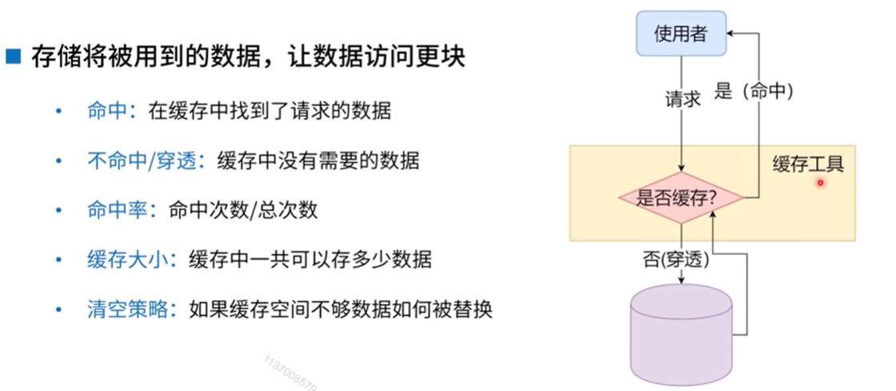
有些缓存为了更高的效率，会牺牲命中率，比如布隆过滤器
缓存算法主要有 FIFO，LRU 等。
HTTP 缓存
由 Cache-Control 来控制
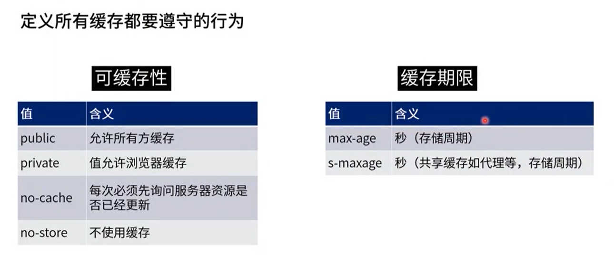
强制缓存
使用强制缓存，不去服务器对比；缓存生效不再发送请求。
Cache-Control: max-age=600
Expires: <最后期限>
协商缓存
Last-Modified
协商使用缓存，每次需要向服务器请求对比，缓存生效不传回 body
返回：
Last-Modified:<昨天>
请求：
If-Midified-Since:<昨天>
E-Tag
返回：
E-Tag: 1234567
请求：
If-None-Match: 1234567
HTTP2.0
-
多路复用
-
防止队头阻塞
-
压缩 HTTP 头部
-
服务端推送
-
二进制分帧
前言
HTTP2.0 大幅度的提高了 web 性能，在 HTTP1.1 完全语义兼容的基础上，进一步减少了网络的延迟。实现低延迟高吞吐量。对于前端开发者而言，减少了优化工作。本文将重点围绕以下几点新特性的作用、工作过程以及如何更出色的完成了优化工作来介绍 HTTP2.0
- 二进制分帧
- 首部压缩
- 多路复用
- 请求优先级
- 服务器推送
一. 介绍
HTTP/2 是 HTTP 协议自 1999 年 HTTP1.1 发布后的首个更新，主要基于 SPDY 协议。
1.1 什么是 SPDY 协议
SPDY 是 Speedy 的昵音，意为“更快”。它是 Google 开发的基于 TCP 协议的应用层协议。目标是优化 HTTP 协议的性能，通过压缩、多路复用和优先级等技术，缩短网页的加载时间并提高安全性。SPDY 协议的核心思想是尽量减少 TCP 连接数。SPDY 并不是一种用于替代 HTTP 的协议，而是对 HTTP 协议的增强。
1.2 HTTP1.X 的缺点
任何事物的更新都是为了弥补或修复上个版本的某些问题，那么我们来看看 HTTP1.x 都有哪些缺点以至于我们要使用 HTTP2.0。
HTTP1.x 有以下几个主要缺点：
- HTTP/1.0 一次只允许在一个 TCP 连接上发起一个请求，HTTP/1.1 使用的流水线技术也只能部分处理请求并发，仍然会存在队列头阻塞问题，因此客户端在需要发起多次请求时，通常会采用建立多连接来减少延迟。
- 单向请求，只能由客户端发起。
- 请求报文与响应报文首部信息冗余量大。
- 数据未压缩，导致数据的传输量大
我们可以通过一个链接来对比一下 HTTP2.0 到底比 HTTP1.x 快了多少。链接地址
二. 二进制分帧
在不改变 HTTP1.x 的语义、方法、状态码、URL 以及首部字段的情况下，HTTP2.0 是怎样突破 HTTP1.1 的性能限制，改进传输性能，实现低延迟高吞吐量的呢？关键之一就是在应用层（HTTP）和传输层（TCP）之间增加一个二进制分帧层。
在整理二进制分帧及其作用的时候我们先来铺垫一点关于帧的知识：
- 帧：HTTP2.0 通信的最小单位，所有帧都共享一个 8 字节的首部，其中包含帧的长度、类型、标志、还有一个保留位，并且至少有标识出当前帧所属的流的标识符，帧承载着特定类型的数据，如 HTTP 首部、负荷、等等。
- 消息：比帧大的通讯单位，是指逻辑上的 HTTP 消息，比如请求、响应等。由一个或多个帧组成
- 流：比消息大的通讯单位。是 TCP 连接中的一个虚拟通道，可以承载双向的消息。每个流都有一个唯一的整数标识符
HTTP2.0 中所有加强性能的核心是二进制传输，在 HTTP1.x
中，我们是通过文本的方式传输数据。基于文本的方式传输数据存在很多缺陷，文本的表现形式有多样性，因此要做到健壮性考虑的场景必然有很多，但是二进制则不同，只有 0 和 1
的组合，因此选择了二进制传输，实现方便且健壮。 在 HTTP2.0 中引入了新的编码机制，所有传输的数据都会被分割，并采用二进制格式编码。

为了保证 HTTP 不受影响，那就需要在应用层（HTTP2.0）和传输层（TCP or
UDP）之间增加一个二进制分帧层。在二进制分帧层上，HTTP2.0会将所有传输的信息分为更小的消息和帧，并采用二进制格式编码，其中HTTP1.x的首部信息会被封装到Headers帧，而Request Body则封装到Data帧。
三. 首部压缩
HTTP1.1 并不支持 HTTP 首部压缩，为此 SPDY 和 HTTP2.0 出现了。SPDY 是用的是 DEFLATE 算法，而 HTTP2.0 则使用了专门为首部压缩设计的 HPACK 算法。
HTTP 每次通讯（请求或响应）都会携带首部信息用于描述资源属性。
在 HTTP1.0 中，我们使用文本的形式传输 header，在 header 中携带 cookie 的话，每次都需要重复传输几百到几千的字节，这着实是一笔不小的开销。
在 HTTP2.0 中，我们使用了 HPACK（HTTP2 头部压缩算法）压缩格式对传输的 header 进行编码，减少了 header 的大小。并在两端维护了索引表，用于记录出现过的 header，后面在传输过程中就可以传输已经记录过的 header 的键名，对端收到数据后就可以通过键名找到对应的值。
四. 多路复用
在 HTTP1.x 中，我们经常会使用到雪碧图、使用多个域名等方式来进行优化，都是因为浏览器限制了同一个域名下的请求数量，当页面需要请求很多资源的时候，队头阻塞（Head of line blocking）会导致在达到最大请求时，资源需要等待其他资源请求完成后才能继续发送。
HTTP2.0 中,基于二进制分帧层，HTTP2.0 可以在共享 TCP 连接的基础上同时发送请求和响应。HTTP 消息被分解为独立的帧，而不破坏消息本身的语义，交错发出去，在另一端根据流标识符和首部将他们重新组装起来。 通过该技术，可以避免 HTTP 旧版本的队头阻塞问题，极大提高传输性能。
五. 请求优先级
把 HTTP 消息分为很多独立帧之后，就可以通过优化这些帧的交错和传输顺序进一步优化性能。
六. 服务器推送
HTTP2.0 新增的一个强大的新功能，就是服务器可以对一个客户端请求发送多个响应。服务器向客户端推送资源无需客户端明确的请求。
服务端根据客户端的请求，提前返回多个响应，推送额外的资源给客户端。如下图，客户端请求 stream 1(/page.html)。服务端在返回 stream 1 的消息的同时推送了 stream
2(/script.js)和 stream 4(/style.css)  服务端推送是一种在客户端请求之前发送数据的机制。在 HTTP2.0 中，服务器可以对一个客户端的请求发送多个响应。如果一个请求是由你的主页发送的，服务器可能会响应主页内容、logo
以及样式表，因为他知道客户端会用到这些东西。这样不但减轻了数据传送冗余步骤，也加快了页面响应的速度，提高了用户体验。
服务端推送是一种在客户端请求之前发送数据的机制。在 HTTP2.0 中，服务器可以对一个客户端的请求发送多个响应。如果一个请求是由你的主页发送的，服务器可能会响应主页内容、logo
以及样式表，因为他知道客户端会用到这些东西。这样不但减轻了数据传送冗余步骤，也加快了页面响应的速度，提高了用户体验。
推送的缺点：所有推送的资源都必须遵守同源策略。换句话说，服务器不能随便将第三方资源推送给客户端，而必须是经过双方的确认才行。
HTTP3.0
把 TCP 层拆成 QUIC + UDP
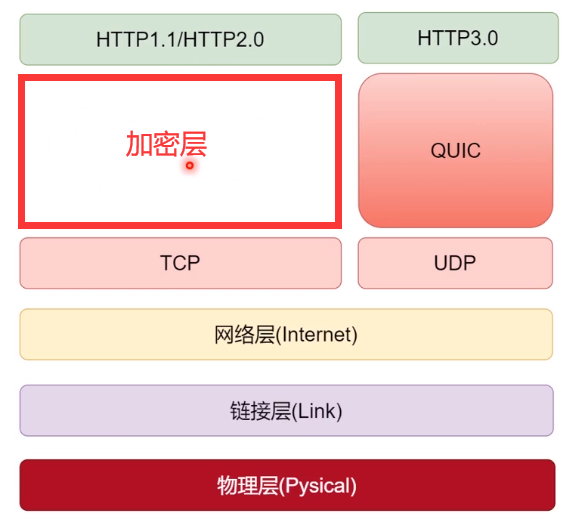
HTTP2.0
1.1 HTTP2.0 和 TCP 的爱恨纠葛
HTTP2.0 是 2015 年推出的，还是比较年轻的，其重要的二进制分帧协议、多路复用、头部压缩、服务端推送等重要优化使 HTTP 协议真正上了一个新台阶。
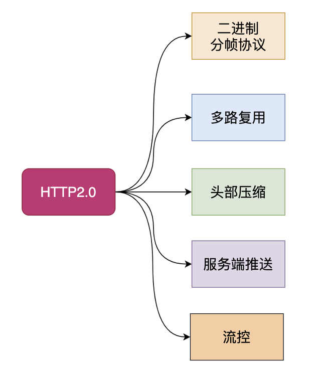
像谷歌这种重要的公司并没有满足于此，而且想继续提升 HTTP 的性能，花最少的时间和资源获取极致体验。
那么肯定要问 HTTP2.0 虽然性能已经不错了，还有什么不足吗？
建立连接时间长(本质上是 TCP 的问题) 队头阻塞问题 移动互联网领域表现不佳(弱网环境) ......
熟悉 HTTP2.0 协议的同学应该知道，这些缺点基本都是由于 TCP 协议引起的，水能载舟亦能覆舟，其实 TCP 也很无辜呀！

在我们眼里，TCP 是面向连接、可靠的传输层协议，当前几乎所有重要的协议和应用都是基于 TCP 来实现的。
网络环境的改变速度很快，但是 TCP 协议相对缓慢，正是这种矛盾促使谷歌做出了一个看似出乎意料的决定-基于 UDP 来开发新一代 HTTP 协议。
1.2 谷歌为什么选择 UDP
上文提到，谷歌选择 UDP 是看似出乎意料的，仔细想一想其实很有道理。
我们单纯地看看 TCP 协议的不足和 UDP 的一些优点：
基于 TCP 开发的设备和协议非常多，兼容困难 TCP 协议栈是 Linux 内部的重要部分，修改和升级成本很大 UDP 本身是无连接的、没有建链和拆链成本 UDP 的数据包无队头阻塞问题 UDP 改造成本小
从上面的对比可以知道，谷歌要想从 TCP 上进行改造升级绝非易事，但是 UDP 虽然没有 TCP 为了保证可靠连接而引发的问题，但是 UDP 本身不可靠，又不能直接用。

综合而知，谷歌决定在 UDP 基础上改造一个具备 TCP 协议优点的新协议也就顺理成章了，这个新协议就是 QUIC 协议。
1.3 QUIC 协议和 HTTP3.0
QUIC 其实是 Quick UDP Internet Connections 的缩写，直译为快速 UDP 互联网连接。

我们来看看维基百科对于 QUIC 协议的一些介绍：
QUIC 协议最初由 Google 的 Jim Roskind 设计，实施并于 2012 年部署，在 2013 年随着实验的扩大而公开宣布，并向 IETF 进行了描述。
QUIC 提高了当前正在使用 TCP 的面向连接的 Web 应用程序的性能。它在两个端点之间使用用户数据报协议（UDP）建立多个复用连接来实现此目的。
QUIC 的次要目标包括减少连接和传输延迟，在每个方向进行带宽估计以避免拥塞。它还将拥塞控制算法移动到用户空间，而不是内核空间，此外使用前向纠错（FEC）进行扩展，以在出现错误时进一步提高性能。
HTTP3.0 又称为 HTTP Over QUIC，其弃用 TCP 协议，改为使用基于 UDP 协议的 QUIC 协议来实现。

QUIC 协议详解
择其善者而从之，其不善者而改之。
HTTP3.0 既然选择了 QUIC 协议，也就意味着 HTTP3.0 基本继承了 HTTP2.0 的强大功能，并且进一步解决了 HTTP2.0 存在的一些问题，同时必然引入了新的问题。
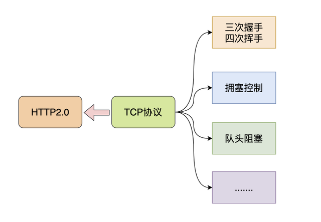
QUIC 协议必须要实现 HTTP2.0 在 TCP 协议上的重要功能，同时解决遗留问题，我们来看看 QUIC 是如何实现的。
2.1 队头阻塞问题
队头阻塞 Head-of-line blocking（缩写为 HOL blocking）是计算机网络中是一种性能受限的现象，通俗来说就是：一个数据包影响了一堆数据包，它不来大家都走不了。
队头阻塞问题可能存在于 HTTP 层和 TCP 层，在 HTTP1.x 时两个层次都存在该问题。
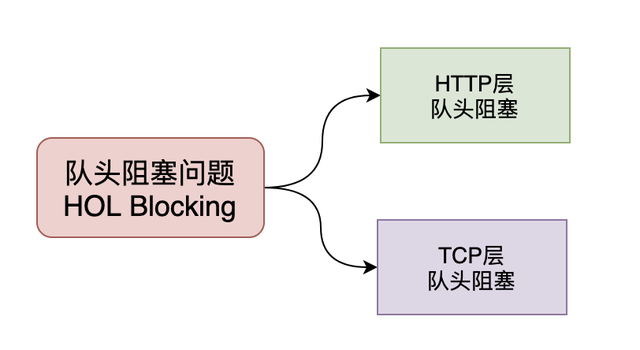
HTTP2.0 协议的多路复用机制解决了 HTTP 层的队头阻塞问题，但是在 TCP 层仍然存在队头阻塞问题。
TCP 协议在收到数据包之后，这部分数据可能是乱序到达的，但是 TCP 必须将所有数据收集排序整合后给上层使用，如果其中某个包丢失了，就必须等待重传，从而出现某个丢包数据阻塞整个连接的数据使用。
QUIC 协议是基于 UDP 协议实现的，在一条链接上可以有多个流，流与流之间是互不影响的，当一个流出现丢包影响范围非常小，从而解决队头阻塞问题。
2.2 0RTT 建链
衡量网络建链的常用指标是 RTT Round-Trip Time，也就是数据包一来一回的时间消耗。

RTT 包括三部分：往返传播时延、网络设备内排队时延、应用程序数据处理时延。

一般来说 HTTPS 协议要建立完整链接包括:TCP 握手和 TLS 握手，总计需要至少 2-3 个 RTT，普通的 HTTP 协议也需要至少 1 个 RTT 才可以完成握手。
然而，QUIC 协议可以实现在第一个包就可以包含有效的应用数据，从而实现 0RTT，但这也是有条件的。

简单来说，基于 TCP 协议和 TLS 协议的 HTTP2.0 在真正发送数据包之前需要花费一些时间来完成握手和加密协商，完成之后才可以真正传输业务数据。
但是 QUIC 则第一个数据包就可以发业务数据，从而在连接延时有很大优势，可以节约数百毫秒的时间。
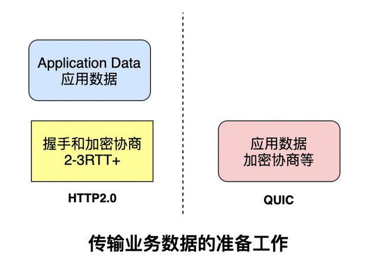
QUIC 的 0RTT 也是需要条件的，对于第一次交互的客户端和服务端 0RTT 也是做不到的，毕竟双方完全陌生。
因此，QUIC 协议可以分为首次连接和非首次连接，两种情况进行讨论。
2.3 首次连接和非首次连接
使用 QUIC 协议的客户端和服务端要使用 1RTT 进行密钥交换，使用的交换算法是 DH(Diffie-Hellman)迪菲-赫尔曼算法。
DH 算法开辟了密钥交换的新思路，在之前的文章中提到的 RSA 算法也是基于这种思想实现的，但是 DH 算法和 RSA 的密钥交换不完全一样，感兴趣的读者可以看看 DH 算法的数学原理。
DH 算法开辟了密钥交换的新思路，在之前的文章中提到的 RSA 算法也是基于这种思想实现的，但是 DH 算法和 RSA 的密钥交换不完全一样，感兴趣的读者可以看看 DH 算法的数学原理。
2.3.1 首次连接
简单来说一下，首次连接时客户端和服务端的密钥协商和数据传输过程，其中涉及了 DH 算法的基本过程：
- 客户端对于首次连接的服务端先发送 client hello 请求。
- 服务端生成一个素数 p 和一个整数 g，同时生成一个随机数 (笔误-此处应该是 Ks_pri)为私钥，然后计算出公钥 = mod p，服务端将，p，g 三个元素打包称为 config，后续发送给客户端。
- 客户端随机生成一个自己的私钥，再从 config 中读取 g 和 p，计算客户端公钥 = mod p。
- 客户端使用自己的私钥和服务端发来的 config 中读取的服务端公钥，生成后续数据加密用的密钥 K = mod p。
- 客户端使用密钥 K 加密业务数据，并追加自己的公钥，都传递给服务端。
- 服务端根据自己的私钥和客户端公钥生成客户端加密用的密钥 K = mod p。
- 为了保证数据安全，上述生成的密钥 K 只会生成使用 1 次，后续服务端会按照相同的规则生成一套全新的公钥和私钥，并使用这组公私钥生成新的密钥 M。
- 服务端将新公钥和新密钥 M 加密的数据发给客户端，客户端根据新的服务端公钥和自己原来的私钥计算出本次的密钥 M，进行解密。
- 之后的客户端和服务端数据交互都使用密钥 M 来完成，密钥 K 只使用 1 次。

2.3.2 非首次连接
前面提到客户端和服务端首次连接时服务端传递了 config 包，里面包含了服务端公钥和两个随机数，客户端会将 config 存储下来，后续再连接时可以直接使用，从而跳过这个 1RTT，实现 0RTT 的业务数据交互。
客户端保存 config 是有时间期限的，在 config 失效之后仍然需要进行首次连接时的密钥交换。
2.4 前向安全问题
前向安全是密码学领域的专业术语，看下百度上的解释：
前向安全或前向保密 Forward Secrecy 是密码学中通讯协议的安全属性，指的是长期使用的主密钥泄漏不会导致过去的会话密钥泄漏。
前向安全能够保护过去进行的通讯不受密码或密钥在未来暴露的威胁，如果系统具有前向安全性，就可以保证在主密钥泄露时历史通讯的安全，即使系统遭到主动攻击也是如此。
通俗来说，前向安全指的是密钥泄漏也不会让之前加密的数据被泄漏，影响的只有当前，对之前的数据无影响。
前面提到 QUIC 协议首次连接时先后生成了两个加密密钥，由于 config 被客户端存储了，如果期间服务端私钥泄漏，那么可以根据 K = mod p 计算出密钥 K。
如果一直使用这个密钥进行加解密，那么就可以用 K 解密所有历史消息，因此后续又生成了新密钥，使用其进行加解密，当时完成交互时则销毁，从而实现了前向安全。

2.5 前向纠错
前向纠错是通信领域的术语，看下百科的解释：
前向纠错也叫前向纠错码 Forward Error Correction 简称 FEC 是增加数据通讯可信度的方法，在单向通讯信道中，一旦错误被发现，其接收器将无权再请求传输。
FEC 是利用数据进行传输冗余信息的方法，当传输中出现错误，将允许接收器再建数据。
听这段描述就是做校验的，看看 QUIC 协议是如何实现的：
QUIC 每发送一组数据就对这组数据进行异或运算，并将结果作为一个 FEC 包发送出去，接收方收到这一组数据后根据数据包和 FEC 包即可进行校验和纠错。
2.6 连接迁移
网络切换几乎无时无刻不在发生。
TCP 协议使用五元组来表示一条唯一的连接，当我们从 4G 环境切换到 wifi 环境时，手机的 IP 地址就会发生变化，这时必须创建新的 TCP 连接才能继续传输数据。
QUIC 协议基于 UDP 实现摒弃了五元组的概念，使用 64 位的随机数作为连接的 ID，并使用该 ID 表示连接。
基于 QUIC 协议之下，我们在日常 wifi 和 4G 切换时，或者不同基站之间切换都不会重连，从而提高业务层的体验。
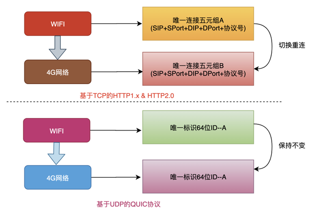
QUIC 的应用和前景
通过前面的一些介绍我们看出来 QUIC 协议虽然是基于 UDP 来实现的，但是它将 TCP 的重要功能都进行了实现和优化，否则使用者是不会买账的。
QUIC 协议的核心思想是将 TCP 协议在内核实现的诸如可靠传输、流量控制、拥塞控制等功能转移到用户态来实现，同时在加密传输方向的尝试也推动了 TLS1.3 的发展。
但是 TCP 协议的势力过于强大，很多网络设备甚至对于 UDP 数据包做了很多不友好的策略，进行拦截从而导致成功连接率下降。
主导者谷歌在自家产品做了很多尝试，国内腾讯公司也做了很多关于 QUIC 协议的尝试。
其中腾讯云对 QUIC 协议表现了很大的兴趣，并做了一些优化然后在一些重点产品中对连接迁移、QUIC 成功率、弱网环境耗时等进行了实验，给出了来自生产环境的诸多宝贵数据。
简单看一组腾讯云在移动互联网场景下的不同丢包率下的请求耗时分布：

任何新生事物的推动都是需要时间的，出现多年的 HTTP2.0 和 HTTPS 协议的普及度都没有预想高，IPv6 也是如此，不过 QUIC 已经展现了强大的生命力，让我们拭目以待吧！
VIM 编辑器
进入编辑模式：
| 命令 | 含义 |
|---|---|
| a | 光标字符后插入 |
| A | 光标行后插入 |
| i | 光标字符前插入 |
| I | 光标行钱插入 |
| o | 光标下插入新行 |
| O | 光标上插入新行 |
定位命令：
| 命令 | 含义 |
|---|---|
| ：set nu | 设置行号 |
| ：set nonu | 取消行号 |
| gg/G | gg 第一行，G 最后一行 |
| nG | 到第 n 行 |
| ：n | 到第 n 行 |
| $ | 移动到行尾 |
| 0 | 移动到行首 |
删除命令：
| 命令 | 含义 |
|---|---|
| x | 删除光标所在处字符 |
| nx | 删除光标所在处后 n 个字符 |
| dd | 删除光标所在行，输入 n 可以删除 n 行 |
| dG | 删到文件尾 |
| D | 删光标所在到行尾 |
| ：n1，n2d | 删除指定范围 |
复制和剪切命令：
| 命令 | 含义 |
|---|---|
| yy | 复制当前行 |
| nyy | 复制下 n 行 |
| dd | 剪切当前行 |
| ndd | 剪切以下 n 行 |
| p、P | 粘贴在当前光标所在行下行/上行 |
替换和取消命令：
| 命令 | 含义 |
|---|---|
| r | 取代光标所在处字符 |
| R | 从光标所在处开始替换字符，Esc 结束 |
| u | 取消上一步操作 |
搜索和替换命令：
| 命令 | 含义 |
|---|---|
| /string | 搜索指定字符串 |
| n | 搜索指定字符串的下一个出现位置 |
| ：%s/old/new/g | 全文替换指定字符串 |
| ：n1,n2s/old/new/g | 在一定范围内替换指定字符串 |
保存和退出：
| 命令 | 作用 |
|---|---|
| ：w | 保存修改 |
| ：w new_filename | 另存为指定文件 |
| ：wq | 保存修改并退出 |
| ZZ | 保存修改并退出的快捷键 |
| ：q！ | 不保存修改退出 |
| ：wq！ | 保存修改并退出（文件所有者及 root 可用） |
高级操作：
简单命令
1.目录处理命令
显示目录：ls
英文：list
命令所在目录：/bin/ls
选项：
-a：显示所有文件，包括隐藏文件
-l：显示详细信息
-d：仅显示目录名，不显示目录下的内容列表
-h：人性化显示（hommization）
-i：查看任意一个文件的 i 节点（类似于身份证唯一信息）
-t：用文件和目录的更改时间排序；
==. 开头的文件除非是目录，否则就是隐藏文件==
-l：详细信息会显示很多信息
以 -rw-------. 1 root root 1.3k Mar 11 08:05 anacondaks.cfg 为例
-
第一个表示类型和权限，开头一位表示文件类型。
-表示二进制文件，d是目录，l是软连接之后分三组，一共九位，每组 3 位，分别为 rwx，表示读、写、执行三种权限，每组分别对应 u、g、o
user、group、other。
这里表示用户具有读写权限，没有执行权限，其他无权限。
-
第二个表示所有者，默认是创建者
-
第三个表示所属组
-
第四个表示文件大小，不带单位的是字节
-
后面是文件最后==修改==时间
-
最后是文件名
Linux 没有明确的创建时间，只有最后一次访问时间、文 件的状态修改时间、文件的数据修改时间
| 代表字符 | 权限 | 对文件的含义 | 对目录电脑含义 |
|---|---|---|---|
| r | 读权限 | 可以查看文件内容 | 可以列出目录中的内容 |
| w | 写权限 | 可以修改文件内容 | 可以在目录中创建、删除文件 |
| x | 执行权限 | 可以执行文件件 | 可以进入目录 |
创建文件夹：mkdir
英文：make directories
命令所在目录：/bin/mkdir
选项：
-p 递归创建
- 如果目录已存在，则提示无法创建
- 不带参数，会在当前目录下创建目录
- 不带
-p参数，如果新建的文件上级目录不存在则会报错。- 想创建需要有访问目录的权限
切换目录：cd
英文：change direcotry
命令所在目录：shell 内置命令
用法：
切换到指定目录：cd 绝对/相对路径
回到上一级：cd ..
当前级：cd .
返回进入这个目录之前的目录：cd -
shell 内置命令会比内部命令（bin 下的）快很多，因为 bin 下的执行要创建进程
显示当前目录：pwd
英文：print working directory
命令所在目录：/bin/pwd
删除空目录：rmdir
复制文件或目录：cp
英文：make directories
命令所在目录：/bin/mkdir
选项：
-r ：复制目录
-p ：保留文件属性（时间等）
语法：cp -rp 源 目的
剪切文件或目录：mv
英文：move
命令所在目录：/bin/mv
可以用于更改文件名
删除文件或目录：rm
英文：remove
命令所在目录：/bin/rm
参数：
-r 删除目录
-f 强制执行
-i 提醒
创建空文件：touch
英文：touch
命令所在目录：/bin/touch
不要有空格，有空格就是两个文件，否则就是用引号
所有文件默认没有执行权限
所以，所有文件夹默认都是 775 权限
所有文件都是 664 权限
显示文件内容（内容较少）：cat
英文：cat
命令所在目录：/bin/cat
参数：
-n 显示文件行号
反向显示文件内容（少）：tac
英文：tac
命令所在目录：/bin/tac
分页显示文件内容（不能前进翻页）：more
英文：more
命令所在目录：/bin/more
命令：
空格或者f翻页（一页一页）
Enter一行一行
q,Q退出
分页显示文件内容（可以前后翻页）：less
英文：less
命令所在目录：/usr/bin/less
命令：
空格或者f或PgDn翻页（一页一页向下）
PgUp向前翻页
Enter或下箭头一行一行
上箭头一行一行向前显示
q,Q退出
输入/想搜索的字符，然后回车可以搜索
显示文件内容（指定行数）：head
英文：head
命令所在目录：/usr/bin/head
命令：
-n指定显示的行数
不加-n 默认显示前 20 行的数据
反向文件内容命令（文件即时更新后也能动态显示，多用于日志文件显 示）：tail
英文：tail
命令所在目录：/usr/bin/tail
参数：
-n指定显示的行数
-f动态显示文件末尾内容（文件实时变化就实时展示）
不加-n 默认显示后 20 行的数据
2.生成链接文件命令：ln
英文：link
命令所在目录：/usr/bin/tail
参数：
-s 创建软连接
不加就是创建硬链接
- 软连接开头是
l，就可以理解为快捷方式。 - 软连接所有者和所属组具有全部操作的权限，rwxrwxrwx，而硬链接不是。
- 显示的时候会有个箭头指向
- 硬链接 = copy + 实时更新
- ls -i 命令查看的时候，硬链接和源文件的 i 节点是相同的，软连接是不同的
- 硬链接不允许指向目录，不允许跨分区创建硬链接
- 软连接指向的源文件被删除的时候，软连接失效。而硬链接不受影响。
- 软连接的文件图标上面有个箭头。
3.权限管理命令：chmod
英文：change mode
命令所在目录：/bin/chmod
语法：
chmod +-= rwx filename
或者用 chmod (421) fileneme
-R 递归修改
r -> 4
w -> 2
x -> 1
对文件：r 为读，w 为修改，x 为可执行
对文件夹：r 为查看文件夹内容，w 可以创建删除文件，x 可以进入文件夹（一般都给）
4.更改文件所有者：chown
只有 root 可以修改。
5.更改组：chgrp
只有 root 可以修改
6.定义默认权限：umask
-S 可以看，显示的是缺失的权限（4.2.1）。
第一位 0 是特殊位，其他的就用 777 减掉已有的权限就有了
一般得到的是 002
7.获取帮助文档（man、help）
man + 外部指令
help + shell 内部指令
外部指令 + --help
8.用户管理命令
8.1 添加用户（useradd）
目录： usr/bin/useradd
执行权限：root
8.2 设置密码（passwd）
目录：usr/bin/passwd
执行权限：root
root 能修改任何密码，普通用户只能设置自己的密码
8.3 查询用户简单信息（who）
who
目录：usr/bin/who
8.4 查询用户详细信息（w）
w
目录：usr/bin/w
执行权限：root
搜索命令
搜索：find
目录所在：/bin/find
语法：find 搜索范围 匹配条件
搜索严格区分大小写
匹配条件：
按名字搜索：
-name：区分大小写，==不是模糊查询==
通配符：*任意个字符，？任意一个字符。（Ubuntu 中表达式要加引号）
-iname：不区分大小写
按文件大小查询：
-size：按文件大小查询。后面跟+（大于）或-（小于）或直接数字，数字的单位是数据块（0.5kb/块） ==不足的也占有一块==
按所属者查找：
-user：按所属者
-group：按所属组查
按时间属性查找：
-amin：访问时间
-cmin：文件属性被更改
-mmin：文件内容被更改
按照文件类型或者 i 节点查找
-type：f 表示文件，d 表示目录，l 表示软连接
-inum：根据 i 节点查找
组合查找
-a ： and
-o ： or
搜索命令：locate
命令目录：/usr/bin/locate
find是全盘搜索，locate是在文件资料库中进行搜索。所以比find快很多。
文件资料库（索引）是要不断更新的。新建的文件locate是找不到的。需要使用updatedb来更新索引。
但是/tmp 目录不是索引范围，所以/tmp 文件夹下面的文件是搜索不到的。
默认是模糊查询，不带任何参数。
搜索命令所在的目录和详细信息：which
命令所在目录：/usr/bin/which
/bin 或/usr/bin，所有人都可以用
/sbin 或/usr/sbin，只有管理员可以用。
centos 有别名，Ubuntu 没有别名
搜索命令所在目录以及帮助文档路径：whereis
命令所在目录：/usr/bin/whereis
在文件中搜索字符串匹配的行并输出：grep
语法：
grep "要匹配的字符" 匹配的文件名
区分大小写，可以加-i指令不区分大小写
-v取反。
grep -v “^#” filename 去掉注释
压缩命令
语法：
压缩：gzip 文件名
解压缩：gunzip 文件名
解压后不保留源文件，不能压缩目录
压缩后也不保留源文件
打包命令
tar -cvf 压缩后的文件名 要打包的目录
f 必须写在后面：打包并压缩：tar -cxvf
选项：
-c 打包
-x 解包
-z 同时压缩
-v 显示详细信息
-f 指定文件名（必须在最后）
网络命令等
测试网络连通性：ping
ping 地址
-c 指定发送次数，不指定永远 ping
查看网卡信息：ifconfig（ip add）
ifconfig 网卡名称 ip 地址
列出所有登录系统的用户信息：last
last 就可以了
追踪数据包：traceroute
traceroute ip 地址
显示网络相关信息：netstat
包括端口之类的信息
-t TCP 协议
-u UDP 协议
-l 监听
-r 路由
-n 显示 IP 地址和端口
挂载命令：mount
给光盘或 U 盘等外设分配盘符，便于访问。
mount -t 文件系统 设备文件名 挂载点
关机：shutdown
-c 取消前一个命令
-h 关机
-r 重启
马上关机：shutdown -h now
指定时间关机：shutdown -h 时间
其他关机命令：
halt，poweroff，init0
重启：
reboot、init6
退出登录：
logout
参考：https://www.jianshu.com/p/447750ec1186
# 创建安装包目录，把3.7.0换为你要版本即可
mkdir -p /root/Downloads/python_install && cd /root/Downloads/python_install
# 下载
wget https://www.python.org/ftp/python/3.7.0/Python-3.7.0.tgz
#解压源码包
tar -zxvf Python-3.7.0.tgz
#创建安装目录
mkdir /usr/local/python3
cd Python-3.7.0/
#安装到指定目录
./configure --prefix=/usr/local/python3
#安装一些依赖，ubuntu同名
yum install libffi-devel
# 编译
make && make install
# 漫长的等待……
cd /usr/local/python3
ln -s /usr/local/python3/bin/python3 /usr/local/bin//python3
ln -s /usr/local/python3/bin/pip3 /usr/local/bin/pip3
vim ~/.bashrc
增加如下内容
export PATH=$HOME/bin:/usr/local/bin:$PATH
export PATH=PATH=$HOME/bin:/usr/local/python3/bin:/usr/local/bin:$PATH
---------
pip3 install python-openstackclient
CZ7WU-2MF01-488FZ-L6Z5T-PYAU4
CY1TH-0XZ5M-M85NY-MNXGG-ZZHU8
ZZ3EK-62W1P-H803P-4WN7T-Q7HT2
CY75U-ATW0P-H8EYZ-WDZE9-N68D6
GY7EH-DLY86-081EP-4GP59-WFRX0
sudo apt-get install gcc-6 g++-6
wget https://download3.vmware.com/software/wkst/file/VMware-Workstation-Full-15.5.6-16341506.x86_64.bundle
sudo chmod +x VMware-Workstation-Full-15.5.6-16341506.x86_64.bundle
# install
sudo ./VMware-Workstation-Full-15.5.6-16341506.x86_64.bundle
# uninstall
sudo ./VMware-Workstation-Full-15.5.6-16341506.x86_64.bundle -u vmware-workstation
安装 Docker
卸载旧的 Docker 相关文件
sudo yum remove docker \
docker-client \
docker-client-latest \
docker-common \
docker-latest \
docker-latest-logrotate \
docker-logrotate \
docker-engine
更换华为源
cp -a /etc/yum.repos.d/CentOS-Base.repo /etc/yum.repos.d/CentOS-Base.repo.bak
wget -O /etc/yum.repos.d/CentOS-Base.repo https://mirrors.huaweicloud.com/repository/conf/CentOS-7-anon.repo
yum clean all
yum makecache
安装华为源依赖
sudo yum install -y yum-utils
wget -O /etc/yum.repos.d/docker-ce.repo https://mirrors.huaweicloud.com/docker-ce/linux/centos/docker-ce.repo
sudo sed -i 's+download.docker.com+mirrors.huaweicloud.com/docker-ce+' /etc/yum.repos.d/docker-ce.repo
sudo yum makecache fast
安装 Docker
sudo yum install docker-ce docker-ce-cli containerd.io
sudo systemctl start docker
修改 Docker 镜像地址
tee > /etc/docker/daemon.json << EOF
{
"registry-mirrors": ["https://wixr7yss.mirror.aliyuncs.com", "https://registry.docker-cn.com"]
}
EOF
systemctl restart docker
docker info
安装 docker-compose
sudo curl -L "https://github.com/docker/compose/releases/download/1.27.0/docker-compose-$(uname -s)-$(uname -m)" -o /usr/local/bin/docker-compose
sudo chmod +x /usr/local/bin/docker-compose
sudo ln -s /usr/local/bin/docker-compose /usr/bin/docker-compose
docker-compose --version
Git 设置代理
1.设置代理:
git config --global http.proxy http://IP:Port
2.代理设置完成后，查看设置是否生效：
git config -–get -–global http.proxy
3.删除代理设置
git config --global --unset http.proxy
Gitlab-ce 的备份和恢复
备份
gitlab-rake gitlab:backup:create
会产生一个文件在 data 的 backup 里。名字会写。找不到就 find。
恢复
gitlab-rake gitlab:backup:restore BACKUP=xxxxx
BACKUP 后缀会自动补，少写一小段就好了。
升级
直接升级即可。跨版本要按版本升级。参考官方版本升级如下： https://docs.gitlab.com/ee/policy/maintenance.html#upgrade-recommendations
保存本地 commit 记录的同时合并提交到 origin
开发中需要让开发分支保持整洁，因此本地分支分为两个。
- 一个是 master 分支，用来和 origin 分支保持一致并提交到 origin 分支。
- develop 分支，用来做开发。并保存本地的开发记录（commit 记录，因为 rebase 会丢失 commit 记录，我不想丢失）。
现假设我们从 origin 产生本地 master 分支和 develop 分支，在 develop 分支开发，产生了 6 个 commit。
我们现在需要把这四个 commit 合并到 master 分支上并提交到 origin。
图片丢失，幻想一下吧。
那么，假设我们只需要将 commit2、3、4 合并成一个 commit 并整合到 master（比如分到两个开发任务，但是开发的时候忘记提交，代码混合在一起了，但是 2、3、4 是第一个 issue 的），最后 review 并提交到 origin。
Step1、创建分支并在 develop 产生提交
先注意一下：
不要通过 rebase 对任何已经提交到公共仓库中的 commit 进行修改（你自己一个人玩的分支除外）。 一般也不会有权限 push 的
rebase 的作用简要概括为：可以对某一段线性提交历史进行编辑、删除、复制、粘贴；因此，合理使用 rebase 命令可以使我们的提交历史干净、简洁！
以上文字纯属照抄。
首先创建分支：
git branch develop
git branch master(应该克隆下来就有了，按自己的来)
然后我们切换到 develop 分支进行开发。
以下省略开发无数代码。
那么，现在要做的就是将 2-4 的 commit 放入 master 上，并且合并为同一个。
Step2、将 commit 复制到 master 上
切换到 mater 分支上，然后执行如下命令。
git rebase [startpoint] [endpoint] --onto [branchName]
startpoint 表示开始的点，endpoint 表示结束点，但是有点左闭右开的意思。
即如果要合并 2、3、4 的 commit 并提交到 master 上，应当是如下语句。
git rebase 8bedc1d 2c1955b --onto master
前几次提交已经到了 master 分支上了。
那么现在可以进行合并操作了。
Step3、将 master 上的 commit 合并
git rebase -i HEAD~3
其中-i的意思是--interactive，即弹出交互式的界面让用户编辑完成合并操作，[startpoint] [endpoint]则指定了一个编辑区间，如果不指定[endpoint]，则该区间的终点默认是当前分支
HEAD 所指向的 commit(注：该区间指定的是一个前开后闭的区间)。
之后的界面如下，可以使用 vim 进行编辑。大致解释 git 也给出来了。接下来翻译一下。
图片丢失，自行操作一下吧。
翻译如下：
pick：保留该 commit（缩写:p）
reword：保留该 commit，但我需要修改该 commit 的注释（缩写:r）
edit：保留该 commit, 但我要停下来修改该提交(不仅仅修改注释)（缩写:e）
squash：将该 commit 和前一个 commit 合并（缩写:s），两个注释分成两行。
fixup：将该 commit 和前一个 commit 合并，但我不要保留该提交的注释信息（缩写:f），只保留前一个 commit 信息。
exec：执行 shell 命令（缩写:x）
drop：我要丢弃该 commit（缩写:d）
根据我们的需求，只有第一个是 pick，其余全是 squash。
修改如下：
pick dbf1da1 commit 2
s 3454a8f commit 3
s 2c1955b commit 4
wq 保存之后
这个界面可以类似理解为，已经合并完了，但是要你修改一下 commit 信息。所以按照正常的 commit 信息填写即可。
wq 保存。即可看到变更。
此时已经达到目的了。我们的本地 commit 记录保留下来了，并且 master 上也只有 commit2、3、4 的提交。如果不需要保留本地的 commit 记录，则可以直接从第三步开始操作。
Java 实现多线程的三种方式
-
继承 Thread 类
-
实现 Runnable 接口（Callable 类）
继承 Thread 类
Thread 类是一个支持多线程的功能类，只要有一个子类它就可以实现多线程的支持
public class MyThread extends Thread {// 多线程的操作类}
所有程序的起点是 main（）方法，线程的起点是 run（）方法。
在多线程的每个主体类中都要覆写 Thread 类中所提供的 run（）方法。
public class MyThread extends Thread(){
@Override
public void run(){
super.run();
}
}
所有线程和进程是一样的，要轮流抢占资源，所以多线程执行应该是多个线程彼此交替执行。
如果直接调用 run（）方法，不能直接启动多线程。
而是要使用 start（）方法。（调用此方法执行的方法体是 run（）方法定义的）
public synchronized void start() {
if (threadStatus != 0)
throw new IllegalThreadStateException();
group.add(this);
boolean started = false;
try {
start0();
started = true;
} finally {
try {
if (!started) {
group.threadStartFailed(this);
}
} catch (Throwable ignore) {
}
}
}
private native void start0();
IllegalThreadStateException 是 RuntimeException 的子类，选择性处理。
如果一个线程对象重复启动，就会抛出此异常。
start0 方法与抽象方法类似，但是使用了 native 声明。（调用操作系统的 API）
所以此操作是 JVM 根据不同的操作系统实现。
实现 Runnable 接口
推荐使用这种方法。
虽然 Thread 类可以实现多线程的主体类定义，但是 Java 具有单继承局限，所以针对类的继承都应该回避。
多线程也一样。为了解决单继承的限制，专门实现了 Runnable 接口。
@FunctionalInterface
public interface Runnable {
public abstract void run();
}
函数式接口(Functional Interface)就是一个有且仅有一个抽象方法，但是可以有多个非抽象方法的接口。
接口中的所有方法都是 public
只需要让一个类实现 Runnable 接口、覆写 run（）方法，就可以实现多线程。
但是和之前的区别就是，不能直接继承 start 方法。不能通过 start 方法启动。
不论任何情况，要想启动多线程，一定要依靠 Thread 类完成
在 Thread 类中有可以接受 Runnable 接口对象的 constructor
class MyThread implements Runnable{
// 多线程的操作类
private String name;
public MyThread(String name){
this.name = name;
}
@Override
public void run() {
for (int x = 0 ;x < 200; x++){
System.out.println(this.name+"---->"+x);
}
}
}
public class Main{
public static void main(String[] args) {
MyThread mt1 = new MyThread("线程A");
MyThread mt2 = new MyThread("线程B");
MyThread mt3 = new MyThread("线程C");
new Thread(mt1).start();
new Thread(mt2).start();
new Thread(mt3).start();
}
}
基本工作中基本都是实现 Runnable 接口。
多线程两种实现方式的区别（面试题）
1.首先明确，使用 Runnable 比 Thread，解决了单继承的局限性。
public class Thread implements Runnable {}
Thread 类实现了 Runnable 接口。（有 start 方法，就是一个线程对象，可以直接启动）
整个结构有点像代理设计模式。但是代理的话应该也调用 run 方法，但是使用的 start 方法。
2.使用 Runnable 比 Thread 可以更好的描述数据共享的概念。
此时的数据共享指的是多个线程访问同一资源的操作。
- 如果使用 Thread：
class MyThread extends Thread{
// 多线程的操作类
private int ticket = 10;
@Override
public void run() {
for (int x = 0 ;x < 200; x++){
if (this.ticket > 0){
System.out.println("卖票 ，ticket = " + this.ticket--);
}
}
}
}
public class Main{
public static void main(String[] args) {
MyThread mt1 = new MyThread();
MyThread mt2 = new MyThread();
MyThread mt3 = new MyThread();
mt1.start();
mt2.start();
mt3.start();
}
}
out:
卖票 ，ticket = 10
卖票 ，ticket = 9
卖票 ，ticket = 8
卖票 ，ticket = 7
卖票 ，ticket = 6
卖票 ，ticket = 5
卖票 ，ticket = 4
卖票 ，ticket = 3
卖票 ，ticket = 2
卖票 ，ticket = 1
卖票 ，ticket = 10
卖票 ，ticket = 9
卖票 ，ticket = 8
卖票 ，ticket = 7
卖票 ，ticket = 6
卖票 ，ticket = 5
卖票 ，ticket = 4
卖票 ，ticket = 3
卖票 ，ticket = 2
卖票 ，ticket = 1
卖票 ，ticket = 10
卖票 ，ticket = 9
卖票 ，ticket = 8
卖票 ，ticket = 7
卖票 ，ticket = 6
卖票 ，ticket = 5
卖票 ，ticket = 4
卖票 ，ticket = 3
卖票 ，ticket = 2
卖票 ，ticket = 1
Process finished with exit code 0
- 如果使用 Runnable
class MyThread implements Runnable{
// 多线程的操作类
private int ticket = 10;
@Override
public void run() {
for (int x = 0 ;x < 200; x++){
if (this.ticket > 0){
System.out.println("卖票 ，ticket = " + this.ticket--);
}
}
}
}
public class Main{
public static void main(String[] args) {
MyThread mt = new MyThread();
new Thread(mt).start();
new Thread(mt).start();
new Thread(mt).start();
}
}
out:
卖票 ，ticket = 10
卖票 ，ticket = 9
卖票 ，ticket = 8
卖票 ，ticket = 7
卖票 ，ticket = 6
卖票 ，ticket = 5
卖票 ，ticket = 4
卖票 ，ticket = 3
卖票 ，ticket = 2
卖票 ，ticket = 1
Process finished with exit code 0
这样就实现了数据共享
多线程的第三种实现方式
Runnable 里面的 run 方法不能返回操作结果。
为了解决这样，提供了新的 Callable 接口。
在 java.util.concurrent 包中。
@FunctionalInterface
public interface Callable<V> {
public V call() throws Exception;
}
返回结果的类型由 Callable 接口上的泛型来决定。
class MyThread implements Callable<String>{
private int ticket = 10;
@Override
public String call() throws Exception {
for (int x = 0 ; x <100 ; x++){
if(this.ticket>0){
System.out.println("卖票，ticket = "+ ticket--);
}
}
return "票已经卖光";
}
}
Thread 类中并没有 Callable 的构造方法，但是 jdk1.5 开始，有 java.util.concurrent.FutureTask
专门来负责 Callable 接口类的操作
public class FutureTask<V> implements RunnableFuture<V> {}
public interface RunnableFuture<V> extends Runnable, Future<V> {
void run();
}
在 FutureTask 中有如下构造方法
public FutureTask(Callable<V> callable) {}
接受的目的只有一个，取得 call 方法的返回结果。
public class Main {
public static void main(String[] args) throws ExecutionException, InterruptedException {
MyThread mt1 = new MyThread();
MyThread mt2 = new MyThread();
FutureTask<String> task1 = new FutureTask<>(mt1);
FutureTask<String> task2 = new FutureTask<>(mt2);
// 是Runnable的子类，可以使用Thread来启动
new Thread(task1).start();
new Thread(task2).start();
// 通过get获取返回值
System.out.println("A返回"+task1.get());
System.out.println("B返回"+task2.get());
}
}
out：
卖票，ticket = 10
卖票，ticket = 9
卖票，ticket = 8
卖票，ticket = 7
卖票，ticket = 6
卖票，ticket = 5
卖票，ticket = 4
卖票，ticket = 10
卖票，ticket = 3
卖票，ticket = 9
卖票，ticket = 2
卖票，ticket = 8
卖票，ticket = 1
卖票，ticket = 7
卖票，ticket = 6
卖票，ticket = 5
卖票，ticket = 4
卖票，ticket = 3
A返回票已经卖光
卖票，ticket = 2
卖票，ticket = 1
B返回票已经卖光
Process finished with exit code 0
多线程的常用操作方法
1.线程的命名与取得
所有线程程序的执行，会根据自己的情况进行资源抢占。要区分线程，就要依靠线程的名字。
对于线程的名字，一般而言，会在其启动之前进行定义。不建议对已启动的线程进行命名或修改。也不建议命名重复。
如果想要进行线程名称的操作，Thread 有如下方法：
-
构造方法：
public Thread(Runnable target, String name){}其他也有很多构造方法包含 name 参数进行命名。
-
通过 set 方法设置名字
public final String getName() { return name; } -
通过 get 方法取得名字
public final String getName() { return name; }
对于线程名字操作有个问题，这些方法是属于 Thread 的，使用 Runnable 的话。
那么能够取得的就是当前执行本方法的线程名字。
所以 Thread 中有一个取得当前线程的方法。
-
public static native Thread currentThread();
如果在实例化 Thread 对象的时候没有命名，那么会自动进行编号命名，保证对象不重复。
class MyThread implements Runnable{
@Override
public void run() {
System.out.println(Thread.currentThread().getName());
}
}
public class Main {
public static void main(String[] args) throws ExecutionException, InterruptedException {
MyThread mt = new MyThread();
new Thread(mt).start();
new Thread(mt).start();
new Thread(mt).start();
}
}
out:
Thread-0
Thread-1
Thread-2
Process finished with exit code 0
对于直接调用 run 方法有如下情况：
class MyThread implements Runnable{
@Override
public void run() {
System.out.println(Thread.currentThread().getName());
}
}
public class Main {
public static void main(String[] args) throws ExecutionException, InterruptedException {
MyThread mt = new MyThread();
new Thread(mt,"A").start();
mt.run();
}
}
out:
main
A
Process finished with exit code 0
run 方法打印了 main，即 main 线程。
所有在 main 方法上创建的线程实例都可以将其表示为子线程。
线程一直存在，主方法就是主线程。
进程是在用 java 命令解释一个程序类的时候启动的。
对于操作系统而言，都相当于启动了一个新的进程，main 只是这个新进程中的子线程。
每个 JVM 进程启动的时候至少启动几个线程？
- main 线程：程序的主要执行，以及启动子线程；
- gc 线程：进行垃圾处理；
2.线程的休眠
让线程的执行速度稍微变慢一点。
休眠的方法：
public static void sleep(long millis) throws InterruptedException{}
默认情况下，如果休眠的时候如果设置了多个线程对象，那么所有线程将“一起”进入 run()方法。
因为先后顺序太短了，实际上是几微秒到几毫秒的区别。
3.线程的优先级
所谓的优先级指的是越高的优先级，越有可能先执行。在 Thread 中有两个方法进行优先级操作。
-
设置优先级：
public final void setPriority(int newPriority) { } -
取得优先级：
public final int getPriority() { }
参数是 int 类型。对于此内容有三种取值
public final static int MIN_PRIORITY = 1;
public final static int NORM_PRIORITY = 5; //默认
public final static int MAX_PRIORITY = 10;
主线程的优先级是？
主线程属于中等优先级 ( 5 )
4.线程的同步与死锁
-
线程的同步产生的原因
-
线程的同步处理操作
-
线程的死锁情况
同步：
多个线程访问同一资源时，资源的重复读的类似的问题。
class MyThread implements Runnable{
private int ticket = 5;
@Override
public void run() {
for (int i = 0 ; i < 20 ; i++){
if (this.ticket > 0){
try {
Thread.sleep(100);
} catch (InterruptedException e) {
e.printStackTrace();
}
System.out.println(Thread.currentThread().getName() + "卖票 ， ticket = "+ticket--);
}
}
}
}
public class Main {
public static void main(String[] args) throws ExecutionException, InterruptedException {
Thread.currentThread().getPriority();
MyThread mt = new MyThread();
Thread t1 = new Thread(mt,"A");
Thread t2 = new Thread(mt,"B");
Thread t3 = new Thread(mt,"C");
t1.start();
t2.start();
t3.start();
}
}
out:
A卖票 ， ticket = 4
B卖票 ， ticket = 4
C卖票 ， ticket = 5
A卖票 ， ticket = 3
B卖票 ， ticket = 2
C卖票 ， ticket = 3
C卖票 ， ticket = 1
B卖票 ， ticket = 0
A卖票 ， ticket = -1
Process finished with exit code 0
出现了负数，这是因为出现了延迟，数据重复读了。
同步操作
问题就出现在判断和修改数据是分开完成的。
可以使用 synchronized 关键字实现同步。有两种方法：
- 同步代码块
- 同步方法
class MyThread implements Runnable{
private int ticket = 5;
@Override
public void run() {
for (int i = 0 ; i < 20 ; i++){
synchronized (this){ //同步代码块
if (this.ticket > 0){
try {
Thread.sleep(1000);
} catch (InterruptedException e) {
e.printStackTrace();
}
System.out.println(Thread.currentThread().getName() + "卖票 ， ticket = "+ticket--);
}
}
}
}
}
class MyThread implements Runnable {
private int ticket = 20;
@Override
public void run() {
for (int i = 0; i < 20; i++) {
this.sale();
}
}
public synchronized void sale() {
if (this.ticket > 0) {
try {
Thread.sleep(100);
} catch (InterruptedException e) {
e.printStackTrace();
}
System.out.println(Thread.currentThread().getName() + "卖票 ， ticket = " + ticket--);
}
}
}
推荐使用同步方法。
多个线程访问同一个资源的时候一定要使用同步。（同步的是数据）
死锁
所谓的同步就是一个对象等待另一个线程对象执行完毕的操作形式。
线程同步过多有可能造成死锁。
死锁产生的情况：
我说：你给我本子我就给你笔，
你说：你给我笔我就给你本子。
双方都等不到，都占用着，逻辑错误！
03-生产者消费者实战
- 生产者和消费者问题的产生
- Object 类多多线程的支持
问题的引出
生产者和消费者是两个不同的线程类对象，操作同一资源的情况。
- 生产者生产数据，消费者幅取走数据；
- 生产者每生产完一组数据之后，消费者就要取走一组数据
class Info {
private String title;
private String content;
public String getTitle() {
return title;
}
public void setTitle(String title) {
this.title = title;
}
public String getContent() {
return content;
}
public void setContent(String content) {
this.content = content;
}
}
class Productor implements Runnable {
private Info info;
public Productor(Info info) {
this.info = info;
}
@Override
public void run() {
for (int x = 0; x < 100; x++) {
if (x % 2 == 0) {
try {
Thread.sleep(100);
} catch (InterruptedException e) {
e.printStackTrace();
}
this.info.setTitle("AAA");
this.info.setContent("AAA---");
} else {
try {
Thread.sleep(100);
} catch (InterruptedException e) {
e.printStackTrace();
}
this.info.setTitle("BBB");
this.info.setContent("BBB---");
}
}
}
}
class Customer implements Runnable {
private Info info;
public Customer(Info info) {
this.info = info;
}
@Override
public void run() {
for (int x = 0; x < 100; x++) {
try {
Thread.sleep(100);
} catch (InterruptedException e) {
e.printStackTrace();
}
System.out.println(this.info.getTitle() + "-" + this.info.getContent());
}
}
}
public class Main {
public static void main(String[] args) {
Info info = new Info();
new Thread(new Productor(info)).start();
new Thread(new Customer(info)).start();
}
}
以上代码会产生脏读，重复读的问题。
- 数据错位
- 数据重复取出，重复设置
解决数据错乱问题
因为非同步的操作所造成的，所以应该使用同步处理（synchronized）
因为设置和取想进行同步控制，所以要定义在一个类里面完成。
class Info {
private String title;
private String content;
public synchronized void set(String title,String content){
this.title=title;
try {
Thread.sleep(200);
} catch (InterruptedException e) {
e.printStackTrace();
}
this.content=content;
}
public synchronized void get(){
try {
Thread.sleep(100);
} catch (InterruptedException e) {
e.printStackTrace();
}
System.out.println(this.title + "-" + this.content);
}
}
class Productor implements Runnable {
private Info info;
public Productor(Info info) {
this.info = info;
}
@Override
public void run() {
for (int x = 0; x < 100; x++) {
if (x % 2 == 0) {
this.info.set("AAA","AAA---");
} else {
this.info.set("BBB","BBB---");
}
}
}
}
class Customer implements Runnable {
private Info info;
public Customer(Info info) {
this.info = info;
}
@Override
public void run() {
for (int x = 0; x < 100; x++) {
this.info.get();
}
}
}
public class Main {
public static void main(String[] args) {
Info info = new Info();
new Thread(new Productor(info)).start();
new Thread(new Customer(info)).start();
}
}
上述代码解决了数据错乱的问题，但是重复操作的问题更加严重。
解决重复的问题
如果要实现整个代码的操作，但是必须加入等待与唤醒机制。
在 Object 类中提供了专有方法。
- 等待方法：
public final void wait() throws InterruptedException { }
- 唤醒第一个等待线程：
public final native void notify();
- 唤醒全部等待线程，哪个优先级高就先执行哪一个：
public final native void notifyAll();
因此使用上述方法解决重复问题：
class Info {
private String title;
private String content;
// True 表示可以生产，不可以取走
// False 表示可以取走，不可以生产
private boolean flag = true;
public synchronized void set(String title,String content){
if (this.flag == false){
try {
super.wait();
} catch (InterruptedException e) {
e.printStackTrace();
}
}
this.title=title;
try {
Thread.sleep(200);
} catch (InterruptedException e) {
e.printStackTrace();
}
this.content=content;
this.flag=false; //修改生产标记
super.notify(); //唤醒其他等待线程
}
public synchronized void get(){
if (this.flag==true){
try {
super.wait();
} catch (InterruptedException e) {
e.printStackTrace();
}
}
try {
Thread.sleep(100);
} catch (InterruptedException e) {
e.printStackTrace();
}
System.out.println(this.title + "-" + this.content);
this.flag=true;
super.notify();
}
}
class Productor implements Runnable {
private Info info;
public Productor(Info info) {
this.info = info;
}
@Override
public void run() {
for (int x = 0; x < 100; x++) {
if (x % 2 == 0) {
this.info.set("AAA","AAA---");
} else {
this.info.set("BBB","BBB---");
}
}
}
}
class Customer implements Runnable {
private Info info;
public Customer(Info info) {
this.info = info;
}
@Override
public void run() {
for (int x = 0; x < 100; x++) {
this.info.get();
}
}
}
public class Main {
public static void main(String[] args) {
Info info = new Info();
new Thread(new Productor(info)).start();
new Thread(new Customer(info)).start();
}
}
至此，程序按照我们的预期执行。生产一个取一个。
面试题：解释 sleep 和 wait 的区别？
- sleep()是 Thread 类定义的方法，wait()是 Object 类定义的方法
- sleep()可以设置休眠时间，时间到了自动唤醒，wait()必须等待 notify()唤醒。
04-StringBuffer 类
- StringBuffer 类的主要特点；
- StringBuffer、StringBuilder、String 的区别；
1. String 类的特点：
- String 类对象有两种实例化方式：
- 直接赋值：只开辟一块堆内存空间，可以自动入池；
- 构造方法：开辟两块堆内存空间，不会自动入池，使用 intern()手工入池；
- 任何一个字符串都是 String 类的匿名对象；
- 字符串一旦声明不可改变，可以改变的只是 String 类对象的引用。
2. StringBuffer 类的引出
生产中，字符串的操作往往很多。
因此在 Java 中，有 StringBuffer 类，里面的内容可以修改。
String 类可以使用+进行字符串连接操作。
StringBuffer 类必须使用 append 进行字符串连接。（继续返回 StringBuffer 类对象）
| String 类 | StringBuffer 类 |
|---|---|
| public final class String implements java.io.Serializable, Comparable | public final class StringBuffer extends AbstractStringBuilder implements java.io.Serializable, CharSequence { } |
都是 CharSequence 接口的子类。
public class Main {
public static void main(String[] args) {
// 向上转型，String是CharSequence接口的子类。
CharSequence cs = "Hello";
// 可以输出Hello，调用了String类覆写的toString()方法
System.out.println(cs);
}
}
虽然 String 和 StringBuffer 类有共同的接口，但是这两个类不能直接转换
3. 互相转换
1. String -> StringBuffer
- 利用 StringBuffer 的构造方法。
- 利用 append 方法。
2. StringBuffer -> String
- 利用 toString()方法
- 利用 String 类的构造方法
神奇的发现：
String 类中提供有一个和 StringBuffer 类比较的方法：
public boolean contentEquals(StringBuffer sb) { }
4. StringBuffer 类的操作方法
- 字符串反转：
public synchronized StringBuffer reverse() { }
- 在指定索引位置增加数据：
public synchronized StringBuffer insert(int index, char[] str, int offset,int len) { }
- 删除部分数据：
public synchronized StringBuffer delete(int start, int end) { }
5.StringBuilder 类
JDK1.5 之后增加了一个新的字符串操作类：StringBuilder 类
public final class StringBuilder
extends AbstractStringBuilder
implements java.io.Serializable, CharSequence
定义结构和 StringBuffer 类是一样的，StringBuffer 的大部分方法都有。
但是 StringBuilder 不使用 synchronized 修饰方法。
面试题：解释 String，StringBuffer，StringBuilder 的区别
- String 的内容一旦声明不能改变，StringBuilder 和 StringBuffer 可以改变
- StringBuffer 类中提供的方法都是同步方法，属于安全的线程操作，而 StringBuilder 使用异步的，属于不安全的线程操作
结论：生产过程中，95%使用 String 类，只有需要频繁修改操作的时候才考虑使用 StringBuffer 和 StringBuilder。
String 类依然是最常用的
05-RunTime 类
- RunTime 类的主要作用；
- RunTime 类的定义形式；
在每个 JVM 进程里面都会存在 RunTime 类的对象，
主要是取得与运行时有关的环境属性或者是创建新的进程之类的有关操作
在 RunTime 类定义的时候，它的构造方法已经被私有化了，属于单例模式。
所以有一个 static 的方法获取实例化的对象：
public static Runtime getRuntime() {
return currentRuntime;
}
RunTime 类是直接与本地运行有关的所有相关属性的集合
有如下方法：
- 返回所有可用内存空间
public native long totalMemory();
- 返回最大可用内存空间
public native long maxMemory();
- 返回空余内存空间
public native long freeMemory();
- 产生了过多的垃圾之后会影响空间，释放垃圾空间
public native void gc();
面试题：解释什么叫 GC，如何处理？
- GC，即 garbage collector，垃圾收集器，指的是释放无用的内存空间。
- GC 会由系统不定期进行自动的回收，或者调用 RunTime 类的 gc()方法手工回收。
RunTime 可以调用本机的可执行程序，并且可以创建进程。
public Process exec(String command) throws IOException { }
创建之后会返回一个 Process 对象，通过 Process 对象的 destroy 方法可以销毁进程。
public class Main{
public static void main(String[] args) throws IOException, InterruptedException {
Runtime runtime = Runtime.getRuntime();
Process pro = runtime.exec("mspaint.exe");
Thread.sleep(2000);
pro.destroy();
}
}
意义不大。
总结：
- RunTime 使用类单例设计模式，必须使用 getRunTime 方法获取。
- 提供了 gc 方法，用于手工释放内存。
06-System 类
- 如何计算某个代码的执行时间；
- 进行垃圾收集操作
通过 System.currentTimeMillis()获取系统当前时间。
相减即可获得代码执行时间。
System 类的 gc 操作，就是 RunTime 类中的 gc 操作。
一个对象产生，会调用构造方法。
如果需要给对象销毁一些操作。可以考虑覆写 Object 类的 finalize 方法。
finalize 是留给对象回收前使用的。
面试题：解释 final、finally、finalize 的区别
-
final：定义不能被继承的类、不能被覆写的方法、常量。
-
finally：异常的统一出口
-
finalize：方法，Object 提供的方法。（protected void finalize() throws Throwable），即使出现了异常也不会导致程序中断执行。
07-对象克隆
- 清楚对象克隆的操作结构
- 巩固接口的作用
克隆的定义：
对象克隆指的是对象的复制操作。
在 Object 类中提供了用于复制的操作。（clone)
protected native Object clone() throws CloneNotSupportedException;
此方法抛出 CloneNotSupportedException 异常。
如果要使用对象克隆的类没有实现 Cloneable 的接口，就会抛出此异常。
public interface Cloneable { }
此为标识接口，表示一种操作能力。里面没有任何方法。
接口的作用：
- 制定标准
- 标识接口，表示一种操作能力
可以直接覆写 clone（）方法。改为 public
即可进行调用，调用后是深克隆。不是拷贝的引用。
数学操作类（Math、Random、大数字操作类）
1. Math 类（了解）
专门进行数学计算的操作类。
所有方法都是 static 方法。因为 Math 类没有普通属性。
比较要注意的是四舍五入：
public static long round(double a) { }
对于正数而言，大于等于 0.5 就进 1
对于负数而言，小数位大于 0.5 才进位（不包含等于！只有 java 的 Math 会这样）
public class Main{
public static void main(String[] args){
System.out.println(Math.round(15.5));
System.out.println(Math.round(-15.5));
System.out.println(Math.round(-15.51));
}
}
out:
16
-15
-16
Process finished with exit code 0
2. Random 类
主要功能是取得随机数的操作
例子：产生 10 个不大于 100 的正整数
public class Main{
public static void main(String[] args){
Random rand = new Random();
for (int i = 0 ; i< 10 ; i++){
System.out.print(rand.nextInt(100) + "、" );
}
}
}
out:
44、59、79、94、54、67、71、56、9、86、
Process finished with exit code 0
例子：36 选 7
最大值是 36，边界值是 37，并且里面不能有 0 或者是重复的数据。
import java.util.Random;
public class Main{
public static void main(String[] args){
Random rand = new Random();
int data[] = new int[7];
int foot = 0;
while(foot < 7){
int t = rand.nextInt(37);
if (!isRepeat(data,t)){
data[ foot ++ ] = t;
}
}
java.util.Arrays.sort(data);
for (int i = 0 ; i< data.length;i++){
System.out.println(data[i]+"、");
}
}
/**
* 判断是否存在重复的内容，但是不允许保存0
* @param temp 指的是已经保存的数据
* @param num 新生成的数据
* @return 存在true，否则返回false
*/
public static boolean isRepeat(int temp[],int num){
if (num==0){
return true;
}
for (int i = 0; i < temp.length ; i++){
if (temp[i] == num){
return true;
}
}
return false;
}
}
3. BigInteger 大整数操作类
如果数值很大，首先考虑使用 double。但是超出之后，用什么？
class Main {
public static void main(String [] args){
System.out.println(Double.MAX_VALUE*Double.MAX_VALUE);
}
}
out:
Infinity
Process finished with exit code 0
首先不使用 Double 保存，只有使用 String 进行保存。
java.math 中提供了 BigInteger 和 BigDecimal 类进行大数操作（可以接受 String 构造）
例子：
import java.math.BigInteger;
class Main {
public static void main(String [] args){
BigInteger bigA = new BigInteger("2212316548977456");
BigInteger bigB = new BigInteger("98756456");
System.out.println(bigA.add(bigB));
System.out.println(bigA.subtract(bigB));
System.out.println(bigA.multiply(bigB));
System.out.println(bigA.divide(bigB));
//返回两个数，一个商，一个余数
BigInteger result[] = bigA.divideAndRemainder(bigB);
System.out.println("商："+ result[0] + " , 余数："+result[1]);
}
}
out:
2212316647733912
2212316450221000
218480541927163978455936
22401740
商：22401740 , 余数：98344016
Process finished with exit code 0
4. BigDecimal 大浮点数
BigInteger 不能存小数，BigDecimal 可以保存小数。
- 构造 1 接受 String
- 构造 2 接受 double
但是 BigInteger 不能接受 int 构造
BigDecimal 也支持大量基础数学计算。
但是利用 BigDecimal 进行准确的四舍五入操作 ！
但是没有直接的提供四舍五入的操作，我们可以利用除法操作来实现。
public BigDecimal divide(BigDecimal divisor, int scale, RoundingMode roundingMode) {
return divide(divisor, scale, roundingMode.oldMode);
}
BigDecimal divisor：是被除数
int scale：保留的小数位数
RoundingMode roundingMode：进位模式
进行准确的四舍五入
/**
* 实现准确的四舍五入操作
* @param num 操作数
* @param scale 保留的小数位数
* @return
*/
public static double round(double num ,int scale){
BigDecimal bigA = new BigDecimal(num);
BigDecimal bigB = new BigDecimal(1);
return bigA.divide(bigB, scale,BigDecimal.ROUND_HALF_UP).doubleValue();
}
09-日期处理
- Date 类的使用；
- Calendar 类的使用；
- SimpleDateFormat 类的使用；
Date
java 里面有个 java.util.Date，直接表示当前时间。
import java.util.Date;
class Main {
public static void main(String [] args){
Date date = new Date();
System.out.println(date);
}
}
out：
Wed Jul 31 09:45:17 CST 2019
Process finished with exit code 0
Date 的构造方法：
- 无参构造：public Date()；
- 有参构造：public Date(long date)，接受 long 型数据；
- 转换为 long 型：public long getTime()
Date 与 long 的转换。
import java.util.Date;
class Main {
public static void main(String [] args){
long cur = System.currentTimeMillis();
Date date = new Date(cur);
System.out.println(date);
System.out.println(cur);
System.out.println(date.getTime());
}
}
out:
Wed Jul 31 10:15:43 CST 2019
1564539343189
1564539343189
getTime 方法是一个重要的方法！
日期格式化：SimpleDateFormat(核心)
java.text 是一个专门处理格式的国际化的包。
SimpleDateFormat 是里面一个处理日期的，将日期转换为 String 型的形式显示。
主要使用以下方法：
- 构造函数：public SimpleDateFormat(String pattern)，需要传入转换格式；
- 将 Date 转换为 String：public final String format(Date date)；
- 将 String 转换为 Date：public Date parse(String source) throws ParseException；
关键在于转换格式上：
| 名称 | 格式 |
|---|---|
| 年 | yyyy |
| 月 | MM |
| 日 | dd |
| 时 | HH |
| 分 | mm |
| 秒 | ss |
| 毫秒 | SSS |
范例：将日期格式化显示
import java.text.SimpleDateFormat;
import java.util.Date;
class Main {
public static void main(String [] args){
long cur = System.currentTimeMillis();
Date date = new Date(cur);
SimpleDateFormat sdf = new SimpleDateFormat("yyyy-MM-dd HH:mm:ss.SSS");
String str = sdf.format(date);
System.out.println(str);
}
}
out:
2019-07-31 10:27:30.681
范例：字符串转日期
import java.text.ParseException;
import java.text.SimpleDateFormat;
import java.util.Date;
class Main {
public static void main(String [] args) throws ParseException {
String str = "2019-07-31 10:27:30.681";
SimpleDateFormat sdf = new SimpleDateFormat("yyyy-MM-dd HH:mm:ss.SSS");
Date date = sdf.parse(str);
System.out.println(date);
}
}
out:
Wed Jul 31 10:27:30 CST 2019
注意：
如果输入了不存在的字符串，那么我们认为是错误的，
但是程序会自动给我们进位。并不会抛异常。
如果给定的字符串和转换格式不符合，就会抛出异常。
总结：
在数据库的操作中，有几个常用类型：VARCHAR2(String)、CLOB（String）、NUMBER（int、double）、Date（java.util.Date）
- date 与 string 类转换依靠的是 SimpleDateFormat
- string 与基本类型转换依靠的是包装类和 String.valueOf()方法
- long 与 Date 转换依靠的是 Date 类提供的构造以及 getTIme()方法
Calendar 类
Date 类和 Simpledate 类是一起使用的，
Calendar 类主要是进行一些日期计算的。
public abstract class Calendar implements Serializable, Cloneable, Comparable<Calendar>
这是一个抽象类，依靠子类进行对象的实例化操作。但是这个类提供一个静态方法，getInstance()返回本类对象。
范例：取得当前日期时间
import java.util.Calendar;
class Main {
public static void main(String [] args){
Calendar cal = Calendar.getInstance();
StringBuffer buf = new StringBuffer();
buf.append(cal.get(Calendar.YEAR)).append("-");
buf.append(cal.get(Calendar.MONTH) + 1).append("-"); //月是从0开始
buf.append(cal.get(Calendar.DAY_OF_MONTH)).append(" ");
buf.append(cal.get(Calendar.HOUR_OF_DAY)).append(":");
buf.append(cal.get(Calendar.MINUTE)).append(":");
buf.append(cal.get(Calendar.SECOND));
System.out.println(buf);
}
}
out:
2019-7-31 10:48:18
如果是日期计算，这个是相当简单的，直接进行操作就行了。
10-比较器
- 重新认识 Arrays 类
- 两种比较器的使用
- 数据结构——二叉树（Binary Tree）
Arrays 类
java.util.Arrays.sort()可以实现数组的排序。
- 这个类里存在二分查找法
public static int binarySearch(long[] a, long key) {}
- 还提供了数组比较，但是要想判断数组是否相同，需要顺序完全一致：
import java.util.Arrays;
class Main {
public static void main(String [] args){
int dataA[] = new int[] {1,2,3};
int dataB[] = new int[] {2,1,3};
System.out.println(Arrays.equals(dataA, dataB));
Arrays.sort(dataB);
System.out.println(Arrays.equals(dataA, dataB));
}
}
out:
false
true
-
填充数组：
public static void fill(T[] a, T val) {} -
将数组变为字符串输出：
public static String toString(T[] a) {}
范例：
import java.util.Arrays;
class Main {
public static void main(String [] args){
int data[] = new int[10];
Arrays.fill(data, 3);
System.out.println(Arrays.toString(data));
}
}
out:
[3, 3, 3, 3, 3, 3, 3, 3, 3, 3]
基操，比较少出现。
比较器：Comparable（核心）
Arrays 类里面可以直接利用 sort（）方法实现对象数组的排序。
import java.util.Arrays;
class Book{
private String name;
private double price;
public Book(String name , double price){
this.name=name;
this.price=price;
}
@Override
public String toString() {
return "书名：" + this.name + "，价格：" + this.price;
}
}
class Main {
public static void main(String [] args){
Book [] books = new Book[]{
new Book("1", 1),
new Book("2", 2),
new Book("3", 3),
new Book("4", 4)
};
Arrays.sort(books);
System.out.println(Arrays.toString(books));
}
}
out:
Exception in thread "main" java.lang.ClassCastException: Book cannot be cast to java.lang.Comparable
at java.util.ComparableTimSort.countRunAndMakeAscending(ComparableTimSort.java:320)
at java.util.ComparableTimSort.sort(ComparableTimSort.java:188)
at java.util.Arrays.sort(Arrays.java:1246)
at Main.main(Main.java:26)
此类异常的原因只有一个：两个没有关系的对象发生了强制性的转换。
每一个对象实际上值保留有地址信息，地址里面有内容。如果普通 int 型数组比较大小就够了。如果是对象数组，里面包含的如果只是编码（地址），比较是没有意义的。
因此要实现 Comparable 接口：
public interface Comparable<T> {
public int compareTo(T o);
}
String 类就是 Comparable 的子类。
建议覆写 compareTo（）返回三种数据：
- 大于：1
- 等于：0
- 小于：-1
实现比较
import java.util.Arrays;
class Book implements Comparable<Book> {
private String name;
private double price;
public Book(String name, double price) {
this.name = name;
this.price = price;
}
@Override
public String toString() {
return "书名：" + this.name + "，价格：" + this.price;
}
@Override
public int compareTo(Book o) {
// Arrays.sort()会自动调用此方法进行比较
if (this.price > o.price) {
return 1;
} else if (this.price < o.price) {
return -1;
} else return 0;
}
}
class Main {
public static void main(String[] args) {
Book[] books = new Book[]{
new Book("1", 1),
new Book("2", 2),
new Book("3", 3),
new Book("4", 4)
};
Arrays.sort(books);
System.out.println(Arrays.toString(books));
}
}
Arrays.sort()会自动调用 compareTo（）方法进行比较。
数据结构——BinaryTree
树是比链表更复杂的动态数组。
二叉排序树，每个节点的左子树的值总比节点小，右子树的值总比节点大
中序遍历会得到有序序列。
实现二叉树：
- step1：实现数据类：
class Book implements Comparable<Book> {
private String name;
private double price;
public Book(String name, double price) {
this.name = name;
this.price = price;
}
@Override
public String toString() {
return "书名：" + this.name + "，价格：" + this.price;
}
@Override
public int compareTo(Book o) {
// Arrays.sort()会自动调用此方法进行比较
if (this.price > o.price) {
return 1;
} else if (this.price < o.price) {
return -1;
} else return 0;
}
}
- 定义二叉树，所有数据结构都要有 Node 类的支持
class BinaryTree{
private class Node{
private Comparable data;
private Node left;
private Node right;
public Node(Comparable data){
this.data = data;
}
public void addNode(Node newNode){
if (this.data.compareTo(newNode.data) > 0){ // 升降序调节
if (this.left == null){
this.left = newNode;
}else {
this.left.addNode(newNode);
}
}else {
if (this.right == null){
this.right = newNode;
}else {
this.right.addNode(newNode);
}
}
}
public void toArrayNode() {
if (this.left!=null){
this.left.toArrayNode();
}
BinaryTree.this.retData[BinaryTree.this.foot++] = this.data;
if (this.right!=null){
this.right.toArrayNode();
}
}
}
private Node root; //定义根节点
private int count;
private Object[] retData;
private int foot;
public void add (Object obj){
Comparable com = (Comparable) obj;
Node newNode = new Node(com);
if (this.root == null){
this.root = newNode;
}else{
this.root.addNode(newNode);
}
this.count++;
}
public Object[] toArray(){
if (this.root == null){
return null;
}
this.foot=0;
this.retData = new Object[this.count];
this.root.toArrayNode();
return this.retData;
}
}
二叉树中所有操作符合中序遍历！
- 最后实现主函数：
class Main {
public static void main(String[] args) {
BinaryTree bt = new BinaryTree();
bt.add(new Book("test1", 10));
bt.add(new Book("test2", 30));
bt.add(new Book("test3", 50));
bt.add(new Book("test4", 5));
System.out.println(Arrays.toString(bt.toArray()));
}
}
out:
[书名：test4，价格：5.0, 书名：test1，价格：10.0, 书名：test2，价格：30.0, 书名：test3，价格：50.0]
挽救的比较器：Comparator
Comparable 接口需要在类定义的时候就实现了，如果要在后期实现比较就要使用 Comparator（不修改原有的类）
java.util.Comparator
@FunctionalInterface
public interface Comparator<T> {
int compare(T o1, T o2);
boolean equals(Object obj);
}
因此只需要覆写 compare 方法。（equals 方法是 Object 类所拥有的）
需要重新编写一个工具类来实现比较！
实现比较工具
class BookComparator implements Comparator<Book>{
@Override
public int compare(Book o1, Book o2) {
if (o1.getPrice() > o2.getPrice()){
return 1;
}else if (o1.getPrice() < o2.getPrice()){
return -1;
}else return 0;
}
}
之前使用 Comparable 接口的时候直接使用的 Arrays.sort（）方法进行排序的，现在更换了 Comparator 之后，可以使用另一个重载的 sort 方法。
public static <T> void sort(T[] a, Comparator<? super T> c) {}
重新实现排序
class Main {
public static void main(String[] args) {
Book books[] = new Book[]{
new Book("test1", 10),
new Book("test2", 30),
new Book("test3", 50),
new Book("test4", 5)
};
Arrays.sort(books,new BookComparator());
System.out.println(Arrays.toString(books));
}
}
out：
[书名：test4，价格：5.0, 书名：test1，价格：10.0, 书名：test2，价格：30.0, 书名：test3，价格：50.0]
使用 Comparator 比较麻烦。尽量使用 Comparable。
面试题：解释 Comparable 和 Comparator 的区别
- 如果对象数组要进行排序，那么必须设置排序规则，可以使用上述两个接口。
- java.lang.Comparable 是在一个类定义的时候要实现 compareTo（）。
- java.util.Comparator 是在一个类定义之后，专门实现 compare（）方法的工具类。
11-正则表达式
所有的开发一定要有正则的支持。
-
匹配中文字符
/[\u4e00-\u9fa5]/gm; -
匹配双字节字符
/[^\x00-\xff]/gim; -
匹配中行尾首行空白
/(^\s*)|(\s*$)/; -
匹配数字
/^\d+$/; -
匹配 n 个数字
/^\d{n}$/; -
匹配至少 n 个数字
/^\d{n,}$/; -
匹配 m 到 n 个数字
/^\d{m,n}$/; -
匹配英文字母
/^[a-z]+$/i; -
匹配英文和数字
/^[a-z0-9]+$/i; -
匹配英文数字和下划线
/^\w+$/; -
匹配邮箱
/\w+([-+.]\w+)*@\w+([-.]\w+)*\.\w+([-.]\w+)*/; -
匹配 URL 地址
/^https?:\/\/(([a-zA-Z0-9_-])+(\.)?)*(:\d+)?(\/((\.)?(\?)?=?&?[a-zA-Z0-9_-](\?)?)*)*$/i; -
匹配手机号码
/^(0|86|17951)?(13[0-9]|15[012356789]|166|17[3678]|18[0-9]|14[57])[0-9]{8}$/; -
匹配身份证号
/^(^[1-9]\d{7}((0\d)|(1[0-2]))(([0|1|2]\d)|3[0-1])\d{3}$)|(^[1-9]\d{5}[1-9]\d{3}((0\d)|(1[0-2]))(([0|1|2]\d)|3[0-1])((\d{4})|\d{3}[Xx])$)$/; -
匹配邮编
/^[1-9]\d{5}(?!\d)$/; -
匹配日期 yyyy-MM-dd
/^[1-2][0-9][0-9][0-9]-[0-1]{0,1}[0-9]-[0-3]{0,1}[0-9]$/;
单点登录原理与简单实现
单系统登录机制
web 应用采用 browser/server 架构，http 作为通信协议。http 是无状态协议，浏览器的每一次请求，服务器会独立处理，不与之前或之后的请求产生关联，这个过程用下图说明，三次请求/响应对之间没有任何联系。
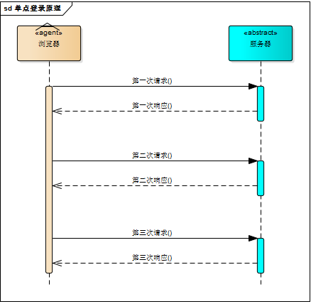
无状态的 Http 协议
但这也同时意味着，任何用户都能通过浏览器访问服务器资源，如果想保护服务器的某些资源，必须限制浏览器请求；要限制浏览器请求，必须鉴别浏览器请求，响应合法请求，忽略非法请求；要鉴别浏览器请求，必须清楚浏览器请求状态。既然 http 协议无状态，那就让服务器和浏览器共同维护一个状态吧！这就是会话机制。
会话机制
浏览器第一次请求服务器，服务器创建一个会话，并将会话的 id 作为响应的一部分发送给浏览器，浏览器存储会话 id，并在后续第二次和第三次请求中带上会话 id，服务器取得请求中的会话 id 就知道是不是同一个用户了，这个过程用下图说明，后续请求与第一次请求产生了关联。
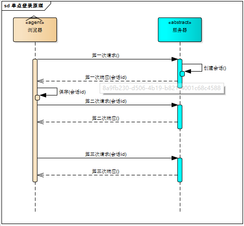
会话机制
服务器在内存中保存会话对象，浏览器怎么保存会话 id 呢？
你可能会想到两种方式
- 请求参数
- cookie
将会话 id 作为每一个请求的参数，服务器接收请求自然能解析参数获得会话 id，并借此判断是否来自同一会话，很明显，这种方式不靠谱。那就浏览器自己来维护这个会话 id 吧，每次发送 http 请求时浏览器自动发送会话 id，cookie 机制正好用来做这件事。cookie 是浏览器用来存储少量数据的一种机制，数据以"key/value"形式存储，浏览器发送 http 请求时自动附带 cookie 信息。
tomcat 会话机制当然也实现了 cookie，访问 tomcat 服务器时，浏览器中可以看到一个名为JSESSIONID的 cookie，这就是 tomcat 会话机制维护的会话 id，使用了
cookie 的请求响应过程如下图：
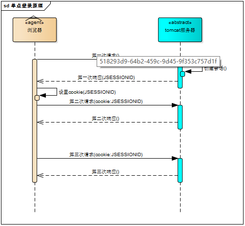
JSESSIONID
登录状态
有了会话机制，登录状态就好明白了，我们假设浏览器第一次请求服务器需要输入用户名与密码验证身份，服务器拿到用户名密码去数据库比对，正确的话说明当前持有这个会话的用户是合法用户，应该将这个会话标记为“已授权”或者“已登录”等等之类的状态，既然是会话的状态，自然要保存在会话对象中，tomcat 在会话对象中设置登录状态如下：
HttpSession session = request.getSession();
session.setAttribute("isLogin", true);
用户再次访问时，tomcat 在会话对象中查看登录状态：
HttpSession session = request.getSession();
session.getAttribute("isLogin");
实现了登录状态的浏览器请求服务器模型如下图描述：
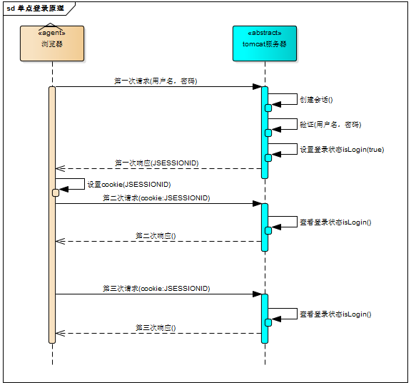
登录状态控制
每次请求受保护资源时都会检查会话对象中的登录状态，只有 isLogin=true 的会话才能访问，登录机制因此而实现。
多系统的复杂性
web 系统早已从久远的单系统发展成为如今由多系统组成的应用群，面对如此众多的系统，用户难道要一个一个登录、然后一个一个注销吗？就像下图描述的这样
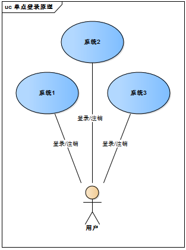
多系统
web 系统由单系统发展成多系统组成的应用群，复杂性应该由系统内部承担，而不是用户。无论 web 系统内部多么复杂，对用户而言，都是一个统一的整体，也就是说，用户访问 web 系统的整个应用群与访问单个系统一样，登录/注销只要一次就够了。
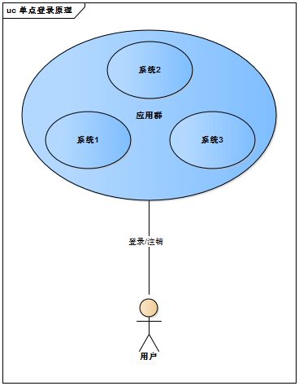
单系统的登录
虽然单系统的登录解决方案很完美，但对于多系统应用群已经不再适用了，为什么呢？
单系统登录解决方案的核心是 cookie，cookie 携带会话 id 在浏览器与服务器之间维护会话状态。但 cookie 是有限制的，这个限制就是 cookie 的域（通常对应网站的域名），浏览器发送 http 请求时会自动携带与该域匹配的 cookie，而不是所有 cookie。
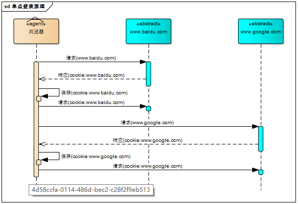
跨域名
子域名 cookie 共享完成单点登录
既然这样，为什么不将 web 应用群中所有子系统的域名统一在一个顶级域名下，例如“*.baidu.com”，然后将它们的 cookie
域设置为“baidu.com”，这种做法理论上是可以的，甚至早期很多多系统登录就采用这种同域名共享 cookie 的方式。
然而，可行并不代表好，共享 cookie 的方式存在众多局限。
- 首先，应用群域名得统一。
- 其次，应用群各系统使用的技术（至少是 web 服务器）要相同，不然 cookie 的 key 值（tomcat 为 JSESSIONID）不同，无法维持会话，共享 cookie 的方式是无法实现跨语言技术平台登录的，比如 java、php、.net 系统之间。
- 第三，cookie 本身不安全。
除上面之外，如果我们在session存放的是User对象，那么我们使用全局 cookie 共享JSESSIONID值，每一个子域名就可以访问同一个 session，登录成功后保存一个
user 对象，注销后就移除这个 user 对象。session 中的 user 对象必须先序列化保存到 redis 中，并且每次访问的时候，都需要去 redis 中取出
session，并且重新序列化成 user 对象。这样会造成额外的消耗。
因此，我们需要一种全新的登录方式来实现多系统应用群的登录，这就是单点登录。
单点登录
什么是单点登录？
单点登录全称 Single Sign On（以下简称 SSO），是指在多系统应用群中登录一个系统，便可在其他所有系统中得到授权而无需再次登录，包括单点登录与单点注销两部分。
登录
相比于单系统登录，sso 需要一个独立的认证中心，只有认证中心能接受用户的用户名密码等安全信息，其他系统不提供登录入口，只接受认证中心的间接授权。间接授权通过令牌实现，sso 认证中心验证用户的用户名密码没问题，创建授权令牌，在接下来的跳转过程中，授权令牌作为参数发送给各个子系统，子系统拿到令牌，即得到了授权，可以借此创建局部会话，局部会话登录方式与单系统的登录方式相同。
这个过程，也就是单点登录的原理，用下图说明：
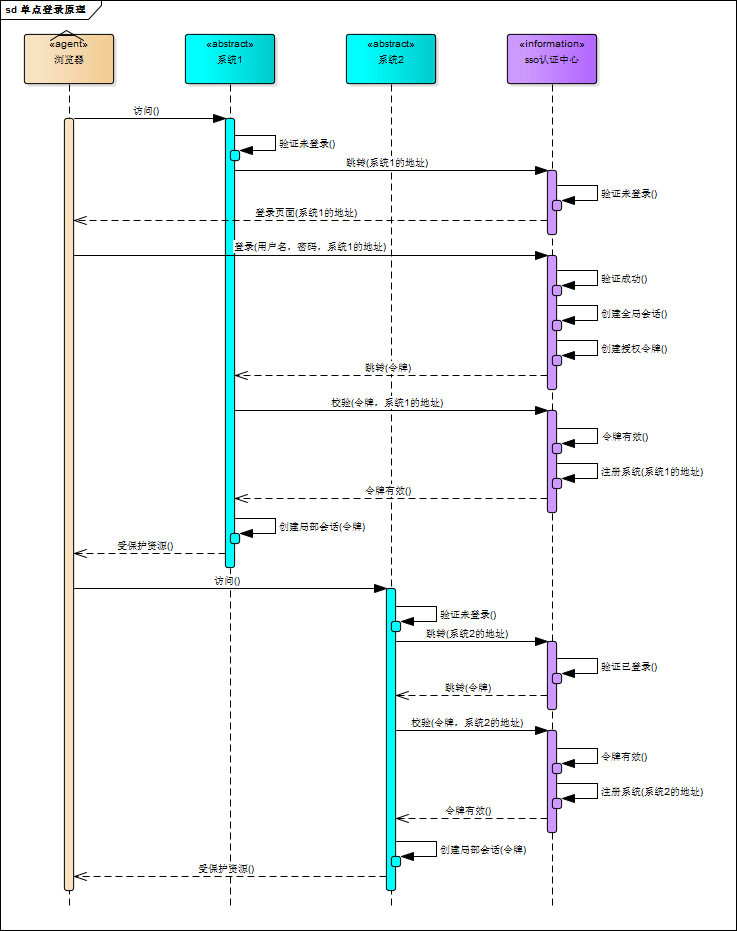
单点登录
下面对上图简要描述：
- 用户访问系统 1 的受保护资源，系统 1 发现用户未登录，跳转至 sso 认证中心，并将自己的地址作为参数。
- sso 认证中心发现用户未登录，将用户引导至登录页面。
- 用户输入用户名密码提交登录申请。
- sso 认证中心校验用户信息，创建用户与 sso 认证中心之间的会话，称为全局会话，同时创建授权令牌。
- sso 认证中心带着令牌跳转会最初的请求地址（系统 1）。
- 系统 1 拿到令牌，去 sso 认证中心校验令牌是否有效。
- sso 认证中心校验令牌，返回有效，注册系统 1。
- 系统 1 使用该令牌创建与用户的会话，称为局部会话，返回受保护资源。
- 用户访问系统 2 的受保护资源。
- 系统 2 发现用户未登录，跳转至 sso 认证中心，并将自己的地址作为参数。
- sso 认证中心发现用户已登录，跳转回系统 2 的地址，并附上令牌。
- 系统 2 拿到令牌，去 sso 认证中心校验令牌是否有效。
- sso 认证中心校验令牌，返回有效，注册系统 2。
- 系统 2 使用该令牌创建与用户的局部会话，返回受保护资源。
用户登录成功之后，会与 sso 认证中心及各个子系统建立会话，用户与 sso 认证中心建立的会话称为全局会话，用户与各个子系统建立的会话称为局部会话，局部会话建立之后，用户访问子系统受保护资源将不再通过 sso 认证中心，全局会话与局部会话有如下约束关系：
- 局部会话存在，全局会话一定存在。
- 全局会话存在，局部会话不一定存在。
- 全局会话销毁，局部会话必须销毁。
你可以通过博客园、百度、csdn、淘宝等网站的登录过程加深对单点登录的理解，注意观察登录过程中的跳转 url 与参数
注销
单点登录自然也要单点注销，在一个子系统中注销，所有子系统的会话都将被销毁，用下面的图来说明：
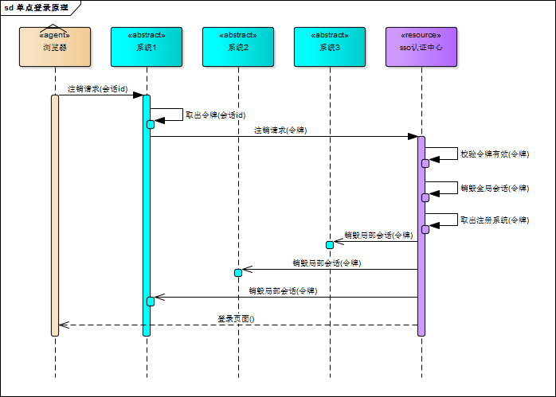
单点注销
sso 认证中心一直监听全局会话的状态，一旦全局会话销毁，监听器将通知所有注册系统执行注销操作
下面对上图简要说明：
- 用户向系统 1 发起注销请求。
- 系统 1 根据用户与系统 1 建立的会话 id 拿到令牌，向 sso 认证中心发起注销请求。
- sso 认证中心校验令牌有效，销毁全局会话，同时取出所有用此令牌注册的系统地址。
- sso 认证中心向所有注册系统发起注销请求。
- 各注册系统接收 sso 认证中心的注销请求，销毁局部会话。
- sso 认证中心引导用户至登录页面。
部署图
单点登录涉及 sso 认证中心与众子系统，子系统与 sso 认证中心需要通信以交换令牌、校验令牌及发起注销请求，因而子系统必须集成 sso 的客户端，sso 认证中心则是 sso 服务端，整个单点登录过程实质是 sso 客户端与服务端通信的过程，用下图描述：
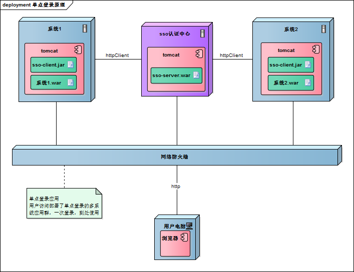
部署图
sso 认证中心与 sso 客户端通信方式有多种，这里以简单好用的 httpClient 为例，web service、rpc、restful api 都可以。
实现
只是简要介绍下基于 java 的实现过程，不提供完整源码，明白了原理，我相信你们可以自己实现。sso 采用客户端/服务端架构，我们先看 sso-client 与 sso-server 要实现的功能（下面：sso 认证中心=sso-server）。
sso-client
- 拦截子系统未登录用户请求，跳转至 sso 认证中心。
- 接收并存储 sso 认证中心发送的令牌。
- 与 sso-server 通信，校验令牌的有效性。
- 建立局部会话。
- 拦截用户注销请求，向 sso 认证中心发送注销请求。
- 接收 sso 认证中心发出的注销请求，销毁局部会话。
sso-server
- 验证用户的登录信息。
- 创建全局会话。
- 创建授权令牌。
- 与 sso-client 通信发送令牌。
- 校验 sso-client 令牌有效性。
- 系统注册。
- 接收 sso-client 注销请求，注销所有会话。
接下来，我们按照原理来一步步实现 sso 吧！
sso-client 拦截未登录请求
java 拦截请求的方式有 servlet、filter、listener 三种方式，我们采用 filter。在 sso-client 中新建 LoginFilter.java 类并实现 Filter 接口，在 doFilter()方法中加入对未登录用户的拦截：
public void doFilter(ServletRequest request, ServletResponse response, FilterChain chain) throws IOException, ServletException {
HttpServletRequest req = (HttpServletRequest) request;
HttpServletResponse res = (HttpServletResponse) response;
HttpSession session = req.getSession();
if (session.getAttribute("isLogin")) {
chain.doFilter(request, response);
return;
}
//跳转至sso认证中心
res.sendRedirect("sso-server-url-with-system-url");
}
sso-server 拦截未登录请求
拦截从 sso-client 跳转至 sso 认证中心的未登录请求，跳转至登录页面，这个过程与 sso-client 完全一样。
sso-server 验证用户登录信息
用户在登录页面输入用户名密码，请求登录，sso 认证中心校验用户信息，校验成功，将会话状态标记为“已登录”。
@RequestMapping("/login")
public String login(String username, String password, HttpServletRequest req) {
this.checkLoginInfo(username, password);
req.getSession().setAttribute("isLogin", true);
return "success";
}
sso-server 创建授权令牌
授权令牌是一串随机字符，以什么样的方式生成都没有关系，只要不重复、不易伪造即可，下面是一个例子：
String token = UUID.randomUUID().toString();
sso-client 取得令牌并校验
sso 认证中心登录后，跳转回子系统并附上令牌，子系统（sso-client）取得令牌，然后去 sso 认证中心校验，在 LoginFilter.java 的 doFilter()中添加几行：
// 请求附带token参数
String token = req.getParameter("token");
if (token != null) {
// 去sso认证中心校验token
boolean verifyResult = this.verify("sso-server-verify-url", token);
if (!verifyResult) {
res.sendRedirect("sso-server-url");
return;
}
chain.doFilter(request, response);
}
verify()方法使用 httpClient 实现，这里仅简略介绍，httpClient 详细使用方法请参考官方文档。
HttpPost httpPost = new HttpPost("sso-server-verify-url-with-token");
HttpResponse httpResponse = httpClient.execute(httpPost);
sso-server 接收并处理校验令牌请求
- 用户在 sso 认证中心登录成功后，sso-server 创建授权令牌并存储该令牌，所以，sso-server 对令牌的校验就是去查找这个令牌是否存在以及是否过期，令牌校验成功后 sso-server 将发送校验请求的系统注册到 sso 认证中心（就是存储起来的意思）
- 令牌与注册系统地址通常存储在 key-value 数据库（如 redis）中，redis 可以为 key 设置有效时间也就是令牌的有效期。redis 运行在内存中，速度非常快，正好 sso-server 不需要持久化任何数据。
- 令牌与注册系统地址可以用下图描述的结构存储在 redis 中，可能你会问，为什么要存储这些系统的地址？如果不存储，注销的时候就麻烦了，用户向 sso 认证中心提交注销请求，sso 认证中心注销全局会话，但不知道哪些系统用此全局会话建立了自己的局部会话，也不知道要向哪些子系统发送注销请求注销局部会话。
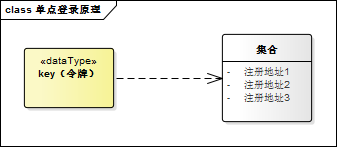
sso-client 校验令牌成功创建局部会话
令牌校验成功后，sso-client 将当前局部会话标记为“已登录”，修改 LoginFilter.java，添加几行：
if (verifyResult) {
session.setAttribute("isLogin", true);
}
sso-client 还需将当前会话 id 与令牌绑定，表示这个会话的登录状态与令牌相关，此关系可以用 java 的 hashmap 保存，保存的数据用来处理 sso 认证中心发来的注销请求
注销过程
用户向子系统发送带有“logout”参数的请求（注销请求），sso-client 拦截器拦截该请求，向 sso 认证中心发起注销请求：
String logout = req.getParameter("logout");
if (logout != null) {
this.ssoServer.logout(token);
}
sso 认证中心也用同样的方式识别出 sso-client 的请求是注销请求（带有“logout”参数），sso 认证中心注销全局会话：
@RequestMapping("/logout")
public String logout(HttpServletRequest req) {
HttpSession session = req.getSession();
if (session != null) {
session.invalidate();//触发LogoutListener
}
return "redirect:/";
}
sso 认证中心有一个全局会话的监听器，一旦全局会话注销，将通知所有注册系统注销
public class LogoutListener implements HttpSessionListener {
@Override
public void sessionCreated(HttpSessionEvent event) {}
@Override
public void sessionDestroyed(HttpSessionEvent event) {
//通过httpClient向所有注册系统发送注销请求
}
}
代码部署
GitHub 地址： https://github.com/morethink/simple-sso.git
IDEA 部署
 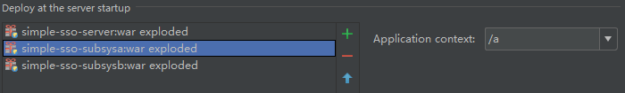
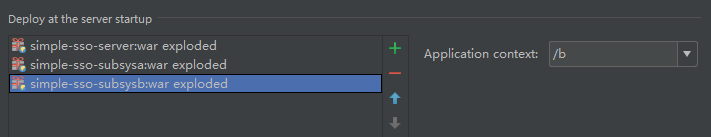
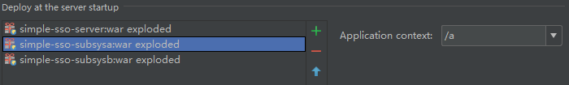
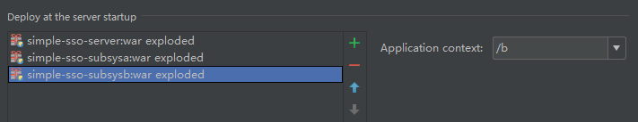
单点登录
访问 a 系统：
http://localhost/a/test
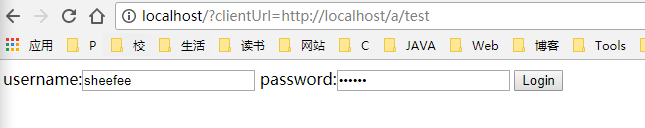
访问 b 系统：
http://localhost/b/test
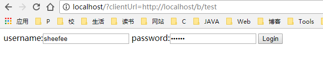
a 系统登录成功：
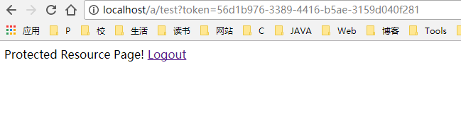
b 系统同时也登录成功:
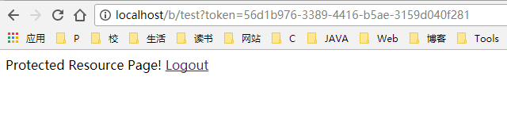
Flask 是一个轻量级的 web 库。
Flask 简单应用：
实现 HTTPServer
简单开始
import selectors
import socket
tcp_socket = socket.socket()
tcp_socket.bind(("127.0.0.1",8888))
tcp_socket.listen(5)
def my_accept(sock,mask):
new_sock,add = sock.accept()
data = new_sock.recv(1024)
print(data)
selector = selectors.DefaultSelector()
selector.register(tcp_socket,selectors.EVENT_READ,my_accept)
while True:
print("服务器开始运行")
events = selector.select()
for key,mask in events:
callback = key.data
callback(key.fileobj,mask)
使用selectors实现并发和管理socket
import selectors
import socket
class StaticHttpServer(object):
def __init__(self, host, port):
self.selector = selectors.DefaultSelector()
self.tcp_server_socket = socket.socket()
self.tcp_server_socket.bind((host, port))
self.tcp_server_socket.listen(5)
self.tcp_server_socket.setblocking(False)
def my_accept(self, sock, mask):
conn, add = sock.accept()
conn.setblocking(False)
self.selector.register(conn, selectors.EVENT_READ, self.read)
def read(self, conn, mask):
data = conn.recv(1024)
conn.setblocking(False)
self.selector.unregister(conn)
print(data)
self.selector.register(conn, selectors.EVENT_WRITE, self.write)
def write(self, conn, mask):
retData = '''HTTP/1.1 200 OK\r\nServer:my_server\r\n\r\nHello World'''
self.selector.unregister(conn)
conn.send(retData.encode())
conn.setblocking(False)
def server_forever(self):
self.selector.register(self.tcp_server_socket, selectors.EVENT_READ, self.my_accept)
while True:
events = self.selector.select()
for key, mask in events:
callback = key.data
callback(key.fileobj, mask)
if __name__ == '__main__':
host = '127.0.0.1'
port = 8888
tcp_server = StaticHttpServer(host, port)
tcp_server.server_forever()
加上报文解析：
import selectors
import socket
from http_parsed import BaseRequest
class StaticHttpServer(object):
def __init__(self, host, port):
self.selector = selectors.DefaultSelector()
self.tcp_server_socket = socket.socket()
self.tcp_server_socket.bind((host, port))
self.tcp_server_socket.listen(5)
self.tcp_server_socket.setblocking(False)
def my_accept(self, sock, mask):
conn, add = sock.accept()
conn.setblocking(False)
self.selector.register(conn, selectors.EVENT_READ, self.read)
def read(self, conn: socket.socket, mask):
data = conn.recv(1024)
if data:
conn.setblocking(False)
self.selector.unregister(conn)
self.req = BaseRequest(data)
print("请求方法：", self.req.method)
print("请求路径：", self.req.path)
print("请求头：", self.req.headers)
print("请求体：", self.req.body)
self.selector.register(conn, selectors.EVENT_WRITE, self.write)
else:
print("客户端离线")
conn.close()
def write(self, conn, mask):
retData = '''HTTP/1.1 200 OK\r\nServer:my_server\r\n\r\nHello World'''
self.selector.unregister(conn)
conn.send(retData.encode())
conn.setblocking(False)
def server_forever(self):
self.selector.register(self.tcp_server_socket, selectors.EVENT_READ, self.my_accept)
try:
while True:
events = self.selector.select()
for key, mask in events:
callback = key.data
callback(key.fileobj, mask)
except Exception as e:
print(e)
finally:
self.tcp_server_socket.close()
if __name__ == '__main__':
host = '127.0.0.1'
port = 8888
tcp_server = StaticHttpServer(host, port)
tcp_server.server_forever()
http_parsed.py
class BaseRequest(object):
def __init__(self, request):
self.request = request.decode()
self.parse_headers()
self.parse_body()
self.parse_method()
self.parse_path()
def parse_headers(self):
sp = self.request.split('\r\n\r\n', 1)[0].split('\r\n')[1:]
dic = {}
for i in sp:
k, v = i.split(': ', 1)
dic[k] = v
self.headers = dic
def parse_body(self):
self.body = "Nothing to show" or self.request.split("\r\n")[-1]
def parse_path(self):
self.path = self.request.split()[1]
def parse_method(self):
self.method = self.request.split()[0]
1.栈
先进后出
Stack通常的操作：
Stack()建立一个空的栈对象push()压入栈pop()出栈peek()查看顶层元素isEmpty()判断是否为空size()返回元素个数
1.1 实现一个简单的栈
借助list实现简单的栈
class Stack:
def __init__(self):
self.stack = []
def push(self, item):
self.stack.append(item)
def pop(self):
ret = self.stack[-1]
self.stack = self.stack[0:-1]
return ret
def peek(self):
if not self.isEmpty():
return self.stack[-1]
else:raise Exception("栈为空")
def isEmpty(self):
return len(self.stack) == 0
def size(self):
return len(self.stack)
def __str__(self):
return self.stack.__str__()
if __name__ == '__main__':
stack = Stack()
print(stack.isEmpty())
stack.push("hello")
print(stack)
print(stack.isEmpty())
print(stack.peek())
print(stack.pop())
print(stack)
out;
True
['hello']
False
hello
hello
[]
1.2 栈的应用：后缀表达式
-
计算后缀表达式：
从左到右遍历后缀表达式，遇到数字压入栈，遇到符号出栈两个数字，然后将计算的结果压入栈。
-
将中缀表达式转换为后缀表达式：
规则： 从左到右遍历中缀表达式中的每个数字和符号，若是数字就输出，即成为后缀表达式的一部分；若是符号则要分为两种情况： 1）是括号时，如果是左括号，直接将左括号入栈，如果是右括号则栈顶元素依次出栈并输出，直到有一个左括号出栈（出栈的左括号不输出到后缀表达式）。 2）是运算符号时，如果栈顶符号为左括号，则直接将这个运算符号入栈。栈顶符号不为左括号时，如果该运算符号优先级比栈顶运算符号高则入栈，比栈顶符号低或者相等时则栈顶元素依次出栈并输出直到栈为空或者栈顶为左括号为止，==然后将这个符号入栈==。 最后将栈顶符号依次出栈并输出，得到的结果即为最终的后缀表达式。
在编写算法的时候可以将上述两步合并为一步：
用一个栈 data 保存运算数字，一个栈 opt 保存运算符号。
从左到右遍历中缀表达式，如果是数字就入栈 data，如果是符号，以下四种情况直接将符号入栈 opt：
-
栈为空；
-
栈顶为左括号；
-
该符号为左括号；
-
该运算符号优先级比栈顶符号高。
如果是右括号，则执行一次计算 步骤：从 opt 出栈一个运算符号，从 data 出栈两个数字进行一次运算并将结果入栈 data。重复执行该计算步骤，直到 opt 栈顶为左括号，然后将该左括号出栈；如果该符号优先级低于 opt 栈顶符号或 者与栈顶符号优先级相同时，重复执行与之前相同的计算步骤，直到 opt 栈为空，若中途 opt 栈顶符 号为左括号则停止执行计算步骤。中缀表达式遍历完成后，继续执行之前的计算步骤直到 opt 栈为空。
def compare(opt1, opt2):
"""
比较优先级大小，opt1优先级高True，opt2优先级高False
:param opt1:
:param opt2:
:return: opt1优先级高True，opt2优先级高False
"""
return opt1 in ["*", "/"] and opt2 in ["+", "-"]
def getValue(data:Stack,opt:Stack):
"""
计算方法，从data中取出两个数字，从opt中取出一个符号，进行计算后压入data栈
:param data:数字栈
:param opt:符号栈
:return:
"""
op = opt.pop()
num1 = data.pop()
num2 = data.pop()
if op == "+":
ret = num2 + num1
elif op == "-":
ret = num2 - num1
elif op == "*":
ret = num2 * num1
elif op == "/":
ret = num2 / num1
data.push(ret)
def solution(s:str, data:Stack, opt:Stack):
i = 0
while i < len(exp):
# 如果是数字，就进入data栈。
if s[i].isdigit():
start = i
while True:
if i+1 < len(s) and s[i + 1].isdigit():
i += 1
else:
data.push(int(s[start:i + 1]))
break
# 如果是符号，就进入opt栈，需要进行情况讨论。
else:
# 栈顶符号位(或栈为空，直接入栈
if opt.isEmpty() or opt.peek() == "(":
opt.push(s[i])
# 符号是(或者优先级高于栈顶元素，直接入栈
elif s[i] == "(" or compare(s[i],opt.peek()):
opt.push(s[i])
# 符号是)则开始进行运算
elif s[i] == ")":
while True:
if opt.peek()=="(":
opt.pop()
break
getValue(data,opt)
# 符号栈不为空，且本次符号优先级不大于栈顶符号优先级，则进行计算，最后进栈本符号
else:
while not opt.isEmpty() and not compare(s[i],opt.peek()):
if opt.isEmpty() or opt.peek()=="(":
break
getValue(data,opt)
opt.push(s[i])
i += 1
while not opt.isEmpty():
getValue(data,opt)
return data.pop()
if __name__ == '__main__':
exp = "(9+((3-1)*3+10/2))*2"
data = Stack()
opt = Stack()
print(solution(exp, data, opt))
01-日志的全局配置
日志在 Python 中专门有一个库可以使用——logging
import logging
# 控制台输出日志
print("我是日志")
日志有五个级别：
logging.debug("我是debug")
logging.info("我是info")
logging.warning("我是warning")
logging.error("我是error")
logging.critical("我是critical")
out:
WARNING:root:我是warning
ERROR:root:我是error
CRITICAL:root:我是critical
root 是默认日志的名称，root 是一个对象。logging 就是在调用 root。
输出的时候会前面带上日志的级别和对象。
root 是默认日志的名称，只会输出 warning 级别以上的日志。
1.1 配置日志（修改配置项）
配置默认的 root 日志
| 配置项 | 意义 |
|---|---|
| format | 格式化输出 |
| level | 0、10、20、30、40、50 分别对应日志的五个级别。 直接使用常量 logging.DEBUG |
| Handler | 指定日志输出位置 |
| datefmt | 修改日期输出格式 |
| filename | 日志文件名称 |
import logging
logging.basicConfig(format="%(name)s - %(asctime)s - %(filename)s - %(lineno)s -%(message)s")
logging.debug("我是debug")
logging.info("我是info")
logging.warning("我是warning")
logging.error("我是error")
logging.critical("我是critical")
out:
root - 2019-08-07 14:26:04,058 - 01-日志的全局配置.py - 7 -我是warning
root - 2019-08-07 14:26:04,059 - 01-日志的全局配置.py - 8 -我是error
root - 2019-08-07 14:26:04,059 - 01-日志的全局配置.py - 9 -我是critical
1.2Formatter 参数
| 参数 | 含义 |
|---|---|
| %(message)s | 用户自定义要输出的信息 |
| %(asctime)s | 当前的日期时间 |
| %(name)s | logger 实例的名称 |
| %(module)s | 使用 logger 实例的模块名 |
| %(filename)s | 使用 logger 实例的模块的文件名 |
| %(funcName)s | 使用 logger 实例的函数名 |
| %(lineno)d | 使用 logger 实例的代码行号 |
| %(levelname)s | 日志级别名称 |
| %(levelno)s | 表示日志级别的数字形式 |
| %(threadName)s | 使用 logger 实例的线程名称（测试多线程时有用） |
| %(thread)d | 使用 logger 实例的线程号（测试多线程时有用） |
| %(process)d | 使用 logger 实例的进程号（测试多进程时有用） |
创建 Formatter：
formatter = logging.Formatter
('%(asctime)s - %(filename)s[line:%(lineno)d] - <%(threadName)s %(thread)d>' + '- <Process %(process)d> - %(levelname)s: %(message)s')
1.3Handler 参数
1.3.1 常用的 Handler
| 参数 | 意义 |
|---|---|
| logging.StreamHandler | 输出到控制台 |
| logging.FileHandler | 输出到指定的日志文件中 |
| logging.handlers.RotatingFileHandler | 也是输出到日志文件中，还可以指定日志文件的最大大小和副本数，当日志文件增长到设置的大小 后，会先将原日志文件 test.log 重命名，如 test.log.1，然后再创建一个 test.log 继续写入日志。如 果设置了副本数 N，则最多只能存在 N 个重命名的日志文件 |
| logging.handlers.TimedRotatingFileHandler | 按日期时间保存日志文件，如果设置了滚动周期，则只存在这个周期内的日志文件。比如，只保留 一周内的日志 |
| logging.handlers.SMTPHandler | 捕获到指定级别的日志后，给相应的邮箱发送邮件 |
1.3.2 创建 Handler
# 创建StreamHandler，输出日志到控制台
stream_handler = logging.StreamHandler()
1.3.2Handler 常用方法
设置日志的格式，调用 formatter
stream_handler.setFormatter(formatter)
设置日志级别
stream_handler.setLevel(logging.INFO)
1.4Logger 实例
如前面所述，直接使用 logging.basicConfig() 默认使用 root 这个 logger 实例。
basicConfig 默认输出是 warning 级别的。
我们也可以使用 logging.getLogger()创建一个自定义命令的 logger 实例：
import logging
# 1. 创建一个叫aiotest的logger实例，如果参数为空则返回root
logger = logging.getLogger('aiotest')
# 2. 设置总日志级别, 也可以给不同的handler设置不同的日志级别
logger.setLevel(logging.DEBUG)
# 3. 设置Formatter
formatter = logging.Formatter('%(asctime)s - %(filename)s[line:%(lineno)d] - <%(threadName)s %(thread)d>' + '- <Process %(process)d> - %(levelname)s: %(message)s')
# 4. 创建Handler
# 文件Handler
file_handler = logging.FileHandler("logger.log", encoding="utf8")
# 控制台输出Handler
stream_handler = logging.StreamHandler()
# 5. 给Handler设置属性
stream_handler.setFormatter(formatter)
file_handler.setFormatter(formatter)
stream_handler.setLevel(logging.DEBUG)
file_handler.setLevel(logging.WARNING)
# 6. 将Handler添加到logger实例上
logger.addHandler(stream_handler)
logger.addHandler(file_handler)
# 输出日志
logger.debug("我是debug")
logger.info("我是info")
logger.warning("我是warning")
logger.error("我是error")
logger.critical("我是critical")
out:
2019-08-07 15:22:55,429 - 01-日志的全局配置.py[line:30] - <MainThread 15616>- <Process 15732> - DEBUG: 我是debug
2019-08-07 15:22:55,429 - 01-日志的全局配置.py[line:31] - <MainThread 15616>- <Process 15732> - INFO: 我是info
2019-08-07 15:22:55,430 - 01-日志的全局配置.py[line:32] - <MainThread 15616>- <Process 15732> - WARNING: 我是warning
2019-08-07 15:22:55,430 - 01-日志的全局配置.py[line:33] - <MainThread 15616>- <Process 15732> - ERROR: 我是error
2019-08-07 15:22:55,430 - 01-日志的全局配置.py[line:34] - <MainThread 15616>- <Process 15732> - CRITICAL: 我是critical
日志文件:
2019-08-07 15:23:37,297 - 01-日志的全局配置.py[line:32] - <MainThread 74852>- <Process 74856> - WARNING: 我是warning
2019-08-07 15:23:37,297 - 01-日志的全局配置.py[line:33] - <MainThread 74852>- <Process 74856> - ERROR: 我是error
2019-08-07 15:23:37,298 - 01-日志的全局配置.py[line:34] - <MainThread 74852>- <Process 74856> - CRITICAL: 我是critical
给 logger 设置最低的全局级别，优先级最高，最低的就是 logger.setLevel(logging.DEBUG)的级别，不会低于这个级别。
在其他地方使用自定义 logger，将上面的代码保存为 demo 文件。
from demo import logger
try:
print(1/0)
except:
logger.error("错误001")
1.4.1 配合 os 和 time 模块使用：
import os
import time
import logging
# 1. 创建logger实例，如果参数为空则返回 root logger
logger = logging.getLogger('aiotest')
# 设置总日志级别, 也可以给不同的handler设置不同的日志级别
logger.setLevel(logging.DEBUG)
# 2. 创建Handler, 输出日志到控制台和文件
# 控制台日志和日志文件使用同一个Formatter
formatter = logging.Formatter('%(asctime)s - %(filename)s[line:%(lineno)d] - <%(threadName)s %(thread)d>' + '- <Process %(process)d> - %(levelname)s: %(message)s' )
# 日志文件FileHandler
basedir = os.path.abspath(os.path.dirname(__file__))
log_dest = os.path.join(basedir, 'logs') # 日志文件所在目录
if not os.path.isdir(log_dest):
os.mkdir(log_dest)
filename = time.strftime('%Y-%m-%d-%H-%M-%S', time.localtime(time.time())) + '.log'
# 日志文件名，以当前时间命名
file_handler = logging.FileHandler(os.path.join(log_dest, filename), encoding='utf-8')
file_handler.setFormatter(formatter)
# 设置Formatter
file_handler.setLevel(logging.WARNING)
# 单独设置日志文件的日志级别
# 控制台日志StreamHandler
stream_handler = logging.StreamHandler()
stream_handler.setFormatter(formatter)
# stream_handler.setLevel(logging.INFO)
# 单独设置控制台日志的日志级别，注释掉则使用总日志 级别
# 3. 将handler添加到logger中
logger.addHandler(file_handler)
logger.addHandler(stream_handler)
02-深拷贝和浅拷贝
Python 赋值操作或函数参数传递，传递的永远是对象引用（即内存地址），而不是对象内容。在 Python 中一切皆对象，对象又分为可变（mutable）和不可变（immutable）两种类型。对象拷贝是指在内存中创建新的对象，产生新的内存地址。当顶层对象和它的子元素对象全都是 immutable 不可变对象时，不存在被拷贝，因为没有产生新对象。浅拷贝（Shallow Copy），拷贝顶层对象，但不会拷贝内部的子元素对象。深拷贝（Deep Copy），递归拷贝顶层对象，以及它内部的子元素对象。
可变对象与不可变对象
Python 中一切皆对象，对象就像一个塑料盒子，里面装的是数据。对象有不同类型，例如布尔型和整型，类型决定了可以对它进行的操作。现实生活中的"陶器"会暗含一些信息（例如它可能很重且易碎，注意不要掉到地上）。 对象的类型还决定了它装着的数据是允许被修改的变量（可变的 mutable）还是不可被修改的常量（不可变的 immutable）。你可以把不可变对象想象成一个透明但封闭的盒子：你可以看到里面装的数据，但是无法改变它。类似地，可变对象就像一个开着口的盒子，你不仅可以看到里面的数据，还可以拿出来修改它，但你无法改变这个盒子本身，即你无法改变对象的类型。
- mutable：可变对象，如 List、Dict 和 Set
- immutable：不可变对象，如 Number、String、Tuple、Frozenset
注意：
Python 赋值操作或函数参数传递，传递的永远是对象引用（即内存地址），而不是对象内容。
In [1]: a = 1
In [2]: b = a
In [3]: id(a)
Out[3]: 9164864
In [4]: id(b)
Out[4]: 9164864
In [5]: b += 1
In [6]: a
Out[6]: 1
In [7]: b
Out[7]: 2
In [8]: id(a) # 对象引用a还是指向Number对象1
Out[8]: 9164864
In [9]: id(b) # 对象引用b指向了Number对象2
Out[9]: 9164896
Python 会缓存使用非常频繁的小整数-5 至 256 、 ISO/IEC 8859-1 单字符 、 只包含大小写英文字 母的字符串 ，以对其复用，不会创建新的对象：
1. 不会创建新对象 In [1]: a = 10
In [2]: b = 10
In [3]: id(a)
Out[3]: 9165152
In [4]: id(b)
Out[4]: 9165152
In [5]: a = '@'
In [6]: b = '@'
In [7]: id(a)
Out[7]: 139812844740424
In [8]: id(b)
Out[8]: 139812844740424
In [9]: a = 'HELLOWORLDhelloworld'
In [10]: b = 'HELLOWORLDhelloworld'
In [11]: id(a)
Out[11]: 139812785036792
In [12]: id(b)
Out[12]: 139812785036792
2. 会创建新的对象
In [1]: a = 1000
In [2]: b = 1000
In [3]: id(a)
Out[3]: 140528314730384
In [4]: id(b)
Out[4]: 140528314731824
In [5]: a = 'x*y'
In [6]: b = 'x*y'
In [7]: id(a)
Out[7]: 139897777405880
In [8]: id(b)
Out[8]: 139897777403808
In [9]: a = 'Hello World'
In [10]: b = 'Hello World'
In [11]: id(a)
Out[11]: 139897789146096
In [12]: id(b)
Out[12]: 139897789179568
copy 是浅拷贝 （只拷贝内存地址）
deepcopy 是深拷贝 （内容重新分配）
03-对象属性管理
3.1__dict__方法
__dict__方法可以获取类或者对象的所有属性和方法。
类.__dict__可以直接获取到类定义时所有的方法和属性
实例对象.__dict__可以直接获取到实例的所有的方法和属性，不能获取到类中的。
但是实例对象的方法指向了类对象的方法，所以实例对象能调用类方法。
（对象添加属性或方法不影响类）
对象.__dict__['key']可以直接获取到 value
不存在的 key 会报错 KeyError
class Person(object):
name = 'python'
age = 18
def __init__(self):
self.sex = "boy"
self.like = "papapa"
@staticmethod
def stat_func():
print('this is stat_func')
@classmethod
def class_func(cls):
print('class_func')
person = Person()
print('Person.__dict__: ', Person.__dict__)
print('person.__dict__: ', person.__dict__)
out:
Person.__dict__: {'__module__': '__main__', 'name': 'python', 'age': 18, '__init__': <function Person.__init__ at 0x000002C518993950>, 'stat_func': <staticmethod object at 0x000002C518996978>, 'class_func': <classmethod object at 0x000002C5189969B0>, '__dict__': <attribute '__dict__' of 'Person' objects>, '__weakref__': <attribute '__weakref__' of 'Person' objects>, '__doc__': None}
person.__dict__: {'sex': 'boy', 'like': 'papapa'}
由此可见， 类的普通方法、类方法、静态方法、全局变量以及一些内置的属性都是放在类对 象 dict 里 而实例对象中存储了一些 self.xxx 的一些东西
3.2 继承
在类的继承中，子类有自己的 dict, 父类也有自己的 dict,子类的全局变量和方法放在子类的 dict 中， 父类的放在父类 dict 中。
3.3 动态语言限制属性的修改
现在我们终于明白了，动态语言与静态语言的不同
-
动态语言：可以在运行的过程中，修改代码
-
静态语言：编译时已经确定好代码，运行过程中不能修改
如果我们想要限制实例的属性怎么办？比如，只允许对 Person 实例添加 name 和 age 属性。
class Person:
__slots__ = ("name", "age")
def __init__(self,name,age):
self.name = name
self.age = age
p = Person("老王",20)
p.score = 100
out:
Traceback (most recent call last): File "C:/Users/Administrator/PycharmProjects/test/app.py", line 8, in <module>
p.score = 100
AttributeError: 'Person' object has no attribute 'score'
使用
__slots__要注意，__slots__定义的属性仅对当前类实例起作用，对继承的子类是不起作用
当你定义__slots__后，Python 就会为实例使用一种更加紧凑的内部表示。
实例通过一个很小的固定大小的数组来构建，而不是为每个实例定义一个字典。所以__slots__是创建大量对象时节省内存的方法。
__slots__的副作用是作为一个封装工具来防止用户给实例增加新的属性。 尽管使用__slots__可以达到这样的目的，但是这个并不是它的初衷。
3.4 一些方法
hasattr()函数用于判断对象是否包含对应的属性
getattr()函数用于返回一个对象属性值
setattr 函数，用于设置属性值，该属性必须存在
delattr 函数用于删除属性，delattr(x,'foobar)相当于 del x.foobar
04-__call__魔法方法
可以使得函数可以直接被调用
class Person(object):
def __call__(self, *args, **kwargs):
return "ToString()"
person = Person()
print(person())
out:
ToString()
05-闭包
闭包就是，内层函数调用了外层函数的方法或变量，并返回内层方法。
闭包会保存局部作用域的变量。
def outer(num):
num = num
def inner():
nonlocal num
num += 1
print(num)
return inner
func = outer(100)
func()
func()
func()
func()
out:
101
102
103
104
闭包的内部函数不可以使用外部循环的变量，或者会变化的变量
def count():
fs = []
for i in range(1, 4):
def f():
return i*i
fs.append(f)
return fs
f1, f2, f3 = count()
print(f1())
print(f2())
print(f3())
out:
9
9
9
原因是，调用的时候，i 已经变为 3 了，def 定义的函数不会立即执行。
进行一些修改：
def count():
def f(j):
return lambda: j * j
fs = []
for i in range(1, 4):
fs.append(f(i))
# f(i)立刻被执行，因此i的当前值被传入闭包lambda: j * j
return fs
f1, f2, f3 = count()
print(f1())
print(f2())
print(f3())
out：
1
4
9
f(i)立刻被执行，因此 i 的当前值被传入闭包 lambda: j * j，调用的时候只是在调用 lambda:j*j
也可以这么写：
def count():
def f(j):
def double():
return j*j
return double
fs = []
for i in range(1, 4):
fs.append(f(i))
return fs
06-装饰器
装饰器（decorator）接受一个 callable 对象 （可以是函数或者实现了 call 方法的类）作为参数，并返回一个 callable 对象 它经常用于有切面需求的场景，比如：插入日志、性能测试（函数执行时间统计）、事务处理、缓存、权限校验等场景。装饰器是解决这类问题的绝佳设计，有了装饰器，我们就可以抽离出大量与函数功能本身无关的雷同代码并继续重用。 举个实例，假设你写好了 100 个 Flask 中的路由函数，现在要在访问这些路由函数前，先判断用户 是否有权限，你不可能去这 100 个路由函数中都添加一遍权限判断的代码（如果权限判断代码为 5 行，你得加 500 行）。那么，你可能想把权限认证的代码抽离为一个函数，然后去那 100 个路由函 数中调用这个权限认证函数，这样只要加 100 行。但是，根据开放封闭原则，对于已经实现的功能代码建议不能修改， 但可以扩展，因为可能你在这些路由函数中直接添加代码会导致原函数出 现问题，那么最佳实践是使用装饰器
def my_func():
print("step 2 : my_func")
def outer(my_func):
print("step 1 : outer")
def inner():
my_func()
print("step 3 : inner")
return inner
# 传入my_func的引用
# 方法名即变量名，是引用，也就是改变了my_func的指向。即可在不改变原有功能下，增加新功能
my_func = outer(my_func)
my_func()
out：
step 1 : outer
step 2 : my_func
step 3 : inner
传入 my_func 的引用，方法名即变量名，是引用，也就是改变了 my_func 的指向。即可在不改变原有功能下，增加新功能
使用 Python 语法糖@，
@也就是封装了一行语句：my_func = outer(my_func)，将这行代码简化
def outer(my_func):
print("step 1 : outer")
def inner():
my_func()
print("step 3 : inner")
return inner
@outer
def my_func():
print("step 2 : my_func")
my_func()#等价于inner()
out：
step 1 : outer
step 2 : my_func
step 3 : inner
被装饰器修饰的代码块一定是在下面的，是原来的功能。
新的方法应当写在老方法的上面，然后在老方法用
@新方法名修饰，然后老代码无需修改，即可调用新的功能
6.1 装饰器的几种
对原函数而言
6.1.1 没有参数、没有返回值
同上述的例子
6.1.2 有参数、没有返回值
def outer(my_func):
print("step 1 : outer")
def inner(num):
my_func(num)
print("step 3 : inner")
return inner
@outer
def my_func(num):
print("step 2 : my_func 传入的参数",num)
my_func(100) #等价于inner(100)
out：
step 1 : outer
step 2 : my_func 传入的参数 100
step 3 : inner
6.1.3 没有参数、有返回值
def outer(my_func):
print("step 1 : outer")
def inner():
print("step 2 : 进入内部函数")
return my_func()
return inner
@outer
def my_func():
print("step 3 : my_func")
return "初始函数返回值"
print(my_func())
out：
step 1 : outer
step 2 : 进入内部函数
step 3 : my_func
初始函数返回值
6.1.4 有参数、有返回值
def outer(my_func):
print("step 1 : outer")
def inner(num):
print("step 2 : 进入内部函数")
return my_func(num)
return inner
@outer
def my_func(num):
print("step 3 : my_func,传入的参数：", num)
num += 1
return "加1之后：" + str(num)
print(my_func(num=100))
out：
step 1 : outer
step 2 : 进入内部函数
step 3 : my_func,传入的参数： 100
加1之后：101
6.2 万能装饰器
利用*args，*kwargs传参
需要注意的是，传入到 inner 内部调用的函数的时候，需要解包
即还是写成
*args,*kwargs
6.3 多装饰器
def outer1(func):
print("outer1")
def inner():
print("inner1")
return func()
return inner
def outer2(func):
print("outer2")
def inner():
print("inner2")
return func()
return inner
@outer1
@outer2
def func():
print("func")
func()
out：
outer2
outer1
inner1
inner2
func
6.4 带参数的装饰器
def outer(str):
print("outer")
def outer1(func):
print("outer1")
def inner():
print(str)
print("inner")
return func()
return inner
return outer1
@outer("哈哈哈")
def func():
print("func")
func()
out：
outer
outer1 # 到此处都是装饰的时候生成的，下面才是调用的时候生成的
哈哈哈
inner
func
@函数名是装饰器
@函数名（）是在调用函数后装饰
则在此处，outer()应当返回一个函数引用。
三层嵌套的函数可以为装饰器接受参数。
二层嵌套的函数不可以接受参数。
6.5 还原函数名称
def outer(func):
print("outer")
def inner():
print("inner")
print(func.__name__)
return func()
return inner
@outer
def func():
print("func in")
func() # 就是innner()
# 获取当前函数的名称
print(func.__name__)
out:
outer
inner
func
func in
inner
被装饰器修饰过的方法，打印的方法名称都是 inner，在打印日志的时候就无法追踪了。
在此需要还原方法名称
使用 Python 的@wraps帮助还原被装饰器修饰的函数名
from functools import wraps
def outer(func):
print("outer")
# 将方法名传入wraps
@wraps(func)
def inner():
print("inner")
print(func.__name__)
return func()
return inner
@outer
def func():
print("func in")
@outer
def func1():
print("func1 in")
func() # 就是innner()
func1()
# 获取当前函数的名称
print(func.__name__)
print(func1.__name__)
out：
outer
outer
inner
func
func in
inner
func1
func1 in
func
func1
用@wraps（函数名）修饰 inner 的内部方法。即可还原函数名
6.6 类装饰器
用类装饰的函数
class A:
# outer
def __init__(self,func):
print("开始装饰")
self.func = func
# inner
def __call__(self, *args, **kwargs):
print("类装饰器")
return self.func()
@A # func = A(func) 创建一个对象，func-->A类的实例对象。
def func():
print("this is func")
func()
out:
开始装饰
类装饰器
this is func
7-案例
1.函数执行时间的统计
import time
from functools import wraps
def outer(func):
@wraps(func)
def inner(num):
start = time.time()
ret = func(num)
end = time.time()
print("执行时间为：", end-start)
return ret
return inner
@outer
def func(num):
ret = 0
for i in range(num+1):
ret += i
return ret
print(func(100000000))
out:
执行时间为： 7.979628324508667
5000000050000000
2.日志记录
首先是之前的日志模块，这里重新贴一遍，略作修改
import logging
# 1. 创建一个叫aiotest的logger实例，如果参数为空则返回root
logger = logging.getLogger('aiotest')
# 2. 设置总日志级别, 也可以给不同的handler设置不同的日志级别
logger.setLevel(logging.DEBUG)
# 3. 设置Formatter
formatter = logging.Formatter('%(asctime)s - %(filename)s [line:%(lineno)d] - %(func)s - <%(threadName)s %(thread)d>' +
' - <Process %(process)d> - %(levelname)s: %(message)s')
# 4. 创建Handler
# 文件Handler
file_handler = logging.FileHandler("logger.log", encoding="utf8")
# 控制台输出Handler
stream_handler = logging.StreamHandler()
# 5. 给Handler设置属性
stream_handler.setFormatter(formatter)
file_handler.setFormatter(formatter)
stream_handler.setLevel(logging.DEBUG)
file_handler.setLevel(logging.WARNING)
# 6. 将Handler添加到logger实例上
logger.addHandler(stream_handler)
logger.addHandler(file_handler)
因为%(funcName)s永远获取的是调用函数的 inner
的名字，所以这里传入新的自定义变量，将正确的函数名通过@wraps(函数引用)来传入，并通过.__name__方法获取正确的函数名称。
from functools import wraps
from myLog import logger
def outer(func):
@wraps(func)
def inner(*args, **kwargs):
try:
logger.info("当前执行方法为：" + func.__name__, extra={'func': func.__name__})
return func(*args, **kwargs)
except Exception as e:
logger.error(e.__repr__(), extra={'func': func.__name__})
return inner
@outer
def func1(*args, **kwargs):
return 1 / 1
@outer
def func2(*args, **kwargs):
return 1 / 0
print(func1())
print(func2())
out：
2019-08-08 23:37:10,982 - 02-对象.py [line:8] - func1 - <MainThread 14556> - <Process 18380> - INFO: 当前执行方法为：func1
1.0
2019-08-08 23:37:10,983 - 02-对象.py [line:8] - func2 - <MainThread 14556> - <Process 18380> - INFO: 当前执行方法为：func2
None
2019-08-08 23:37:10,983 - 02-对象.py [line:11] - func2 - <MainThread 14556> - <Process 18380> - ERROR: ZeroDivisionError('division by zero',)
日志文件中的记录：
2019-08-08 23:41:24,756 - 02-对象.py [line:12] - func2 - <MainThread 16856> - <Process 8564> - ERROR: ZeroDivisionError('division by zero',)
疑问：
执行顺序问题。多次执行打印的顺序不一样？
1.正则表达式
Regular Expression，正则表达式
用来描述匹配规则的表达式，针对字符串进行比较和匹配
作用：用来检索、替换哪些符合某个规则的文本
使用场景：
- 验证数据 前端，电话/邮箱
- 抓数据 页面抓取数据
- 洗数据 洗掉冗余数据
1.1Python 里的正则表达式（re 模块）
match(匹配规则，被匹配的字符串)方法==从头==开始匹配，匹配成功返回 match 对象，匹配失败返回 None（只匹配一次）- 从 match 对象获取字符串的方法为
.group() - 获取索引位置的元组
span()、起始位置start()、结束位置end()
import re
s = "我喜欢吃火锅"
ret = re.match("我喜欢",s)
print(ret)
print(ret.group())
print(ret.span())
print(ret.start())
print(ret.end())
out：
<_sre.SRE_Match object; span=(0, 3), match='我喜欢'>
我喜欢
(0, 3)
0
3
search(匹配规则，被匹配的字符串)从字符串中进行搜索，一旦匹配成功返回第一次匹配成功的位置，不成功返回 None，使用方法和 match 一样（只匹配一次）
import re
s = "我喜欢吃火锅我喜欢吃火锅"
ret1 = re.search("火锅",s)
print(ret1)
print(ret1.group())
out：
<_sre.SRE_Match object; span=(4, 6), match='火锅'>
火锅
-
findall(匹配规则，被匹配的字符串)，搜索全部，匹配全部，返回一个列表，包含所有符合规则的字符串。 -
finditer(匹配规则，被匹配的字符串)，搜索全部，匹配全部，返回一个迭代器，对象是 match 对象。
import re
s = "我喜欢吃火锅我喜欢吃火锅"
ret1 = re.findall("火锅", s)
print(ret1)
ret2 = re.finditer("火锅", s)
for i in ret2:
print(i)
out：
['火锅', '火锅']
<_sre.SRE_Match object; span=(4, 6), match='火锅'>
<_sre.SRE_Match object; span=(10, 12), match='火锅'>
split()将字符串按照匹配规则进行切割，返回一个切割后的列表
import re
s = "asdf jkl; asdf werq,asdf, foo"
# 先匹配一个空格，后面可能有任意个空格
ret = re.split("[\s,;]\s*", s)
print(ret)
out：
['asdf', 'jkl', 'asdf', 'werq', 'asdf', 'foo']
sbu(规则，替换的串，被匹配的字符串)用来做高级替换
import re
s = "我还要再活500年,20年"
ret = re.sub("\d+", "1000", s)
print(ret)
ret = re.sub("\d+", "2000", s)
print(ret)
out：
我还要再活1000年,1000年
我还要再活2000年,2000年
sub()还有高阶用法，传入函数，对匹配到的 Match 对象进行操作，并返回一个字符串
import re
s = "我还要再活500年,20年"
def func(num):
# 匹配到的是一个Match对象，所以传进来是个Match对象，要使用group获取字符串
n = num.group()
return str(int(n) + 1)
ret = re.sub("\d+", func, s)
print(ret)
ret = re.sub("\d+", func, s)
print(ret)
out：
我还要再活501年,21年
我还要再活501年,21年
1.2 正则表达式的语法
1.2.1 单字符匹配
| 方法 | 含义 |
|---|---|
| . | 匹配单字符（万能匹配，什么都可以匹配），但是不能匹配\n |
| \d | 匹配所有的数字（0-9 的单字符） |
| \D | 匹配所有的非数字（0-9 的单字符） |
| \w | 匹配所有的单词字符（数字、字母和下划线），Python3 中汉字也是单词字符 |
| \W | 上述相反 |
| \s | 匹配所有空白符 |
| \S | 匹配所有非空白符 |
| [] | 内部任意一个（^表示非） |
案例：
ret = re.match("张.龙", "张海龙")
print(ret)
ret = re.match("张.龙", "张龙")
print(ret)
ret = re.match("张.龙", "张\n龙")
print(ret)
out:
<_sre.SRE_Match object; span=(0, 3), match='张海龙'>
None
None
ret = re.match("张.龙", "张2龙")
print(ret)
ret = re.match("张\d龙", "张2龙")
print(ret)
ret = re.match("张\d龙", "张12龙")
print(ret)
ret = re.match("张\d龙", "张海龙")
print(ret)
out:
<_sre.SRE_Match object; span=(0, 3), match='张2龙'>
<_sre.SRE_Match object; span=(0, 3), match='张2龙'>
None
None
ret = re.match("张\D龙", "张2龙")
print(ret)
ret = re.match("张\D龙", "张s龙")
print(ret)
ret = re.match("张\D龙", "张#龙")
print(ret)
ret = re.match("张\D龙", "张海龙")
print(ret)
out:
None
<_sre.SRE_Match object; span=(0, 3), match='张s龙'>
<_sre.SRE_Match object; span=(0, 3), match='张#龙'>
<_sre.SRE_Match object; span=(0, 3), match='张海龙'>
ret = re.match("张\w龙", "张海龙")
print(ret)
ret = re.match("张\w龙", "张s龙")
print(ret)
ret = re.match("张\w龙", "张#龙")
print(ret)
ret = re.match("张\w龙", "张2龙")
print(ret)
out：
<_sre.SRE_Match object; span=(0, 3), match='张海龙'>
<_sre.SRE_Match object; span=(0, 3), match='张s龙'>
None
<_sre.SRE_Match object; span=(0, 3), match='张2龙'>
ret = re.match("张\W龙", "张海龙")
print(ret)
ret = re.match("张\W龙", "张s龙")
print(ret)
ret = re.match("张\W龙", "张#龙")
print(ret)
ret = re.match("张\W龙", "张2龙")
print(ret)
out:
None
None
<_sre.SRE_Match object; span=(0, 3), match='张#龙'>
None
ret = re.match("张\s龙", "张 龙")
print(ret)
ret = re.match("张\s龙", "张\n龙")
print(ret)
ret = re.match("张\s龙", "张\r龙")
print(ret)
ret = re.match("张\s龙", "张\t龙")
print(ret)
ret = re.match("张\s龙", "张\f龙")
print(ret)
ret = re.match("张\s龙", "张海龙")
print(ret)
ret = re.match("张\s龙", "张龙")
print(ret)
out：
<_sre.SRE_Match object; span=(0, 3), match='张 龙'>
<_sre.SRE_Match object; span=(0, 3), match='张\n龙'>
<_sre.SRE_Match object; span=(0, 3), match='张\r龙'>
<_sre.SRE_Match object; span=(0, 3), match='张\t龙'>
<_sre.SRE_Match object; span=(0, 3), match='张\x0c龙'>
None
None
ret = re.match("张\S龙", "张 龙")
print(ret)
ret = re.match("张\S龙", "张\n龙")
print(ret)
ret = re.match("张\S龙", "张\r龙")
print(ret)
ret = re.match("张\S龙", "张\t龙")
print(ret)
ret = re.match("张\S龙", "张\f龙")
print(ret)
ret = re.match("张\S龙", "张海龙")
print(ret)
ret = re.match("张\S龙", "张龙")
print(ret)
out：
None
None
None
None
None
<_sre.SRE_Match object; span=(0, 3), match='张海龙'>
None
import re
ret = re.match("张[\d\w\s#]龙", "张#龙")
print(ret)
ret = re.match("张[a-zA-Z0-9]龙", "张1龙")
print(ret)
# ^表示非
ret = re.match("张[^a-zA-Z0-9]龙", "张1龙")
print(ret)
ret = re.match("张[^a-zA-Z0-9]龙", "张海龙")
print(ret)
ret = re.match("张[^a-zA-Z0-9]龙", "张A龙")
print(ret)
out:
<_sre.SRE_Match object; span=(0, 3), match='张#龙'>
<_sre.SRE_Match object; span=(0, 3), match='张1龙'>
None
<_sre.SRE_Match object; span=(0, 3), match='张海龙'>
None
1.2.2 多字符匹配
| 方法 | 含义 |
|---|---|
| * | 匹配 0 或任意个前面的字符 |
| + | 匹配 1 或任意个前面的字符 |
| ？ | 匹配 0 或 1 个前面的字符 |
| {m} | 匹配指定 m 个前面的字符 数量不足返回失败 |
| {n,m} | 匹配范围[n-m]数量前面的字符 数量不足返回失败 |
import re
s = "我的电话是12345678905."
# 匹配成功，但是是空，因为*是匹配0或任意个，匹配到了0个
ret = re.search("\d*", s)
print(ret)
# 匹配成功,因为+是匹配1或任意个
ret = re.search("\d+", s)
print(ret)
ret = re.search("\d?", s)
print(ret)
s = "0451-88888888"
ret = re.search("0\d+-\d{8}", s)
print(ret)
out：
<_sre.SRE_Match object; span=(0, 0), match=''>
<_sre.SRE_Match object; span=(5, 16), match='12345678905'>
<_sre.SRE_Match object; span=(0, 0), match=''>
<_sre.SRE_Match object; span=(0, 13), match='0451-88888888'>
1.2.3 边界匹配
r 开头引号的字符串表示正则表达式，不然有些会有转义效果
| 方法 | 含义 |
|---|---|
| ^ | 必须以规则开头匹配（电话） |
| $ | 必须以规则结尾匹配（邮箱） |
| \b | 位置两侧不可以都是单词字符 |
| \B | 位置两侧必须都是单词字符 |
| \A | 匹配字符串开始的位置 |
| \Z | 匹配字符串结束的位置 |
s = "asd"
ret = re.search(r"\ba\w+", s)
print(ret)
s = "sasd"
ret = re.search(r"\ba\w+", s)
print(ret)
out:
<_sre.SRE_Match object; span=(0, 3), match='asd'>
None
1.2.4 分组匹配
|符号匹配两边任意一边的正则表达式即可，
pattern参数写一个串
分组：
分组内部进行或匹配，外部相同。
group(0)是所有
例子：
import re
s = "我喜欢吃火锅，我喜欢吃小面，我喜欢吃拉面，我喜欢吃乌冬面，我喜欢吃烧鸡公，"
ret = re.search("我喜欢吃(火锅|小面)", s)
print(ret)
print(ret.group())
print(ret.group(0))
print(ret.group(1))
ret = re.search("(我喜欢吃)(火锅|小面)", s)
print(ret)
print(ret.group())
print(ret.group(0))
print(ret.group(1))
print(ret.group(2))
out：
<_sre.SRE_Match object; span=(0, 6), match='我喜欢吃火锅'>
我喜欢吃火锅
我喜欢吃火锅
火锅
<_sre.SRE_Match object; span=(0, 6), match='我喜欢吃火锅'>
我喜欢吃火锅
我喜欢吃火锅
我喜欢吃
火锅
复用分组匹配的内容：
s = "<h1>我是标题标签</h2>"
ret = re.match(r"<\w+>.*</\w+>", s)
print(ret)
ret = re.match(r"<(\w+)>.*</\1>", s)
print(ret)
s = "<h1>我是标题标签</h1>"
ret = re.match(r"<(\w+)>.*</\1>", s)
print(ret)
s = "<body><h1>我是标题标签</h1></body>"
ret = re.match(r"<(\w+)><(\w+)>.*</\2></\1>", s)
print(ret)
out：
<_sre.SRE_Match object; span=(0, 15), match='<h1>我是标题标签</h2>'>
None
<_sre.SRE_Match object; span=(0, 15), match='<h1>我是标题标签</h1>'>
<_sre.SRE_Match object; span=(0, 28), match='<body><h1>我是标题标签</h1></body>'>
分组命名：
定义：(?P<name>正则)，P 是大写
使用：(?P=name)
例子：
s = "<body><h1>我是标题标签</h1></body>"
ret = re.match(r"<(?P<body>\w+)><(?P<h1>\w+)>.*</(?P=h1)></(?P=body)>", s)
print(ret)
out:
<_sre.SRE_Match object; span=(0, 28), match='<body><h1>我是标题标签</h1></body>'>
1.3 一些其他参数(Flag)
| 参数 | 含义 |
|---|---|
| re.IGNORECASE（re.I） | 忽略大小写 |
| re.MULTILINE（re.M） | 可换行(\n自动进入下一行) |
| re.ASCII（re.A） | 使\w/\W/d/\D/\s/\S/\b/\B 只匹配 ASCII 字符，不匹配 Unicode 字符 |
| re.Unicode（re.U） | 默认使用此标志位，\w/\W/d/\D/\s/\S/\b/\B 会匹配 Unicode 字符，如果指定了 re.A 标志，则 re.U 失效 |
| re.DOTALL（re.S） | 使得.会匹配换行符等其他字符 |
| re.VERBOSE（re.X） | 允许整个正则表达式写成多行，忽略空白字符，并可以添加#开头的注释，这样更美观。 |
1.4 贪婪和非贪婪
正则表达式默认情况下会尽可能多的匹配，
如：
asdf.png///123.png
如果写\w+.png不会匹配到 asdf.png
而是会匹配整个串
如果需要修改为非贪婪，就要在一些情况后面加上?操作符
包括：+,?,*,[n-m]
在使用的时候在这些符号后面加上?即可更改匹配模式为非贪婪
2.可迭代器
2.1 可迭代对象
使用iter()来获取可迭代对象（是可迭代对象就返回对象，如果不是就报错）
可迭代对象就是一个可以通过 iter 方法获取到迭代器（iterator）的对象。
可迭代对象：
- 对象实现了能返回迭代器的
__iter__()方法 - 对象实现了
__getitem__(index)方法，而且 index 参数是从 0 开始的整数（索引）
Python
中内置的序列类型，如list、tuple、str、bytes、dict、set、collections.deque等都可以迭代，因为都实现了__getitem__(index)方法。
注意：其实标准的序列还都实现了
__iter__()方法
2.1.1 判断是否是一个可迭代对象
from collections import abc
l = [1, 2, 3, 4]
ret = isinstance(l,abc.Iterable)
print(ret)
out：
True
最准确的方法还是调用iter(l)，iter会考虑历史遗留的__getitem__(index)方法，abc.Iterable 只会考虑__iter()__方法。
2.1.2 构建可迭代对象
__iter__()__getitem__(index)
只要实现其中一个就是可迭代对象
如果实现了__iter__() 方法，但是该方法没有返回迭代器的时候
调用abc.Iterable会返回True的错误判断。
iter()会抛出异常
2.1.3iter()函数
Python 迭代器要求iter()必须返回特殊的迭代器对象。
迭代器对象必须实现__next__()方法，并使用StopIteration异常来通知迭代结束
iter()函数有两种使用方法：
iter(iterable) -> iterator：传入可迭代对象，返回迭代器iter(callable,sentinel) -> iterator：传入两个参数，第一个必须是可调用的对象（没有参数），用于不断调用，产出各个值，第二个值是==哨符==，是一个标记值，当第一个参数的调用返回了这个值的时候，触发迭代器抛出StopIteration异常，==不产出哨符==
例子：投骰子
import random
def d6():
return random.randint(1,6)
d6_iter = iter(d6 , 1)
print(d6_iter)
for it in d6_iter:
print(it)
out：
<callable_iterator object at 0x000002AC2B708A58>
4
6
例子：逐行读取文件，直到遇到空行或者达到文件末尾为止
with open('mydata.txt') as fp:
for line in iter(fp.readline, '\n'):
# fp.readline每次返回一行
print(line)
2.2 迭代器
内存中放不下数据集的时候，要使用一种惰性的获取数据的方式，即按需要一次获取一个数据对象。
这就是迭代器模式（Iterator pattern）
迭代器就是实现了无参数__next__()方法（无参数），返回序列中的下一个元素。
如果没有元素了，就抛出StopIteration异常。
即迭代器可以被next()函数调用，并不断返回下一个元素的值。
在 Python 语言内部， 迭代器 用于支持：
- for 循环
- 构建和扩展集合类型
- 逐行遍历文本文件
- 列表推导、字典推导和集合推导
- 元组拆包
- 调用函数时，使用*拆包实参
2.2.1 判断对象是否为迭代器
最好是使用isinstance(x,abc.Iterator)
from collections import abc
l = [1,2,3,4]
it = iter(l)
print(isinstance(l, abc.Iterable))
print(isinstance(l, abc.Iterator))
print(iter(l))
print(isinstance(it, abc.Iterable))
print(isinstance(it, abc.Iterator))
print(iter(it))
out:
True
False
<list_iterator object at 0x000001E5516AA2E8>
True
True
<list_iterator object at 0x000001E5515FB278>
Python 中内置的序列类型，如 list、tuple、str、bytes、dict、set、collections.deque 等都是 可迭代的对象，但不是迭代器； 生成器一定是迭代器
2.2.2__next__()和__iter__()
class A:
def __init__(self, data):
self.data = data
self.index = 0
def __iter__(self):
# 返回一个迭代器
return self
def __next__(self):
# 返回下一个元素
# 有一个索引在记录每次返回的位置
try:
ret = self.data[self.index]
self.index += 1
except IndexError:
raise StopIteration()
return ret
iter 方法会调用__iter__方法返回当前迭代器对象
next 方法会调用__next__方法返回结果，同时索引增加（index 必须开始是 0 的整数）
2.2.3next()函数获取迭代器中下一个元素
除了可以用 for 循环处理迭代器中的元素外，可以直接使用next()方法
如果是最后一个，则 for 不会报错，
next()方法报错，原因是 for 循环是一个上下文管理器，会自动捕获异常，而 next()不会。其他迭代上下文也是如此。（列表推导、元组拆包等）
或者为next()函数指定第二个参数（默认值），执行到末尾后，返回默认值，不会抛出异常
with open('/etc/passwd') as fd:
while True:
line = next(fd, None)
if line is None:
break
print(line, end='')
2.2.4 可迭代的对象与迭代器的对比
Python 从可迭代对象中获取迭代器。
for 会先调用iter()方法将字符串转换成迭代器。然后进行迭代。
如果不使用 for 循环，则使用 while 来模拟：
it = iter("123")
while True:
try:
print(next(it))
except StopIteration:
del it
break
总结：
-
迭代器要实现
__next__()方法，返回迭代器中的下一个元素 -
迭代器还要实现
__iter__()方法，返回迭代器自身。==迭代器可以迭代，迭代器都是可迭代对象== -
可迭代对象一定要实现
__iter__()方法，返回一个迭代器，==但是不能返回自身！==也不能实现
__next__()方法
练习题：
1.截取
import re
s = """<div class="WB_text W_f14" node-type="feed_list_content" nick-name="林俊杰">飛機上偶遇的 J（JJ）F（Fish）J （Jimmy+Jolin）組合！<br><a
target="_blank" render="ext" extra-data="type=atname"
href="//weibo.com/n/%E6%A2%81%E9%9D%99%E8%8C%B9?from=feed&loc=at" usercard="name=梁静茹">@梁静茹</a> <a
target="_blank" render="ext" extra-data="type=atname"
href="//weibo.com/n/%E8%94%A1%E4%BE%9D%E6%9E%97?from=feed&loc=at" usercard="name=蔡依林">@蔡依林</a> <a
target="_blank" render="ext" extra-data="type=atname"
href="//weibo.com/n/%E5%A4%A2%E6%83%B3%E5%AE%B6%E6%9E%97%E5%BF%97%E7%A9%8E?from=feed&loc=at"
usercard="name=夢想家林志穎">@夢想家林志穎</a><br> 祝大家2018新年快樂！
</div>
"""
ret = re.sub("<br>.*<br>", " ", s, flags=re.S)
ret = re.findall(r"(?<=>)(.*?)<", ret, flags=re.S)
print(ret)
out:
['飛機上偶遇的 J（JJ）F（Fish）J （Jimmy+Jolin）組合！ 祝大家2018新年快樂！\n']
2.邮箱验证
5-20 位单词字符
@
域名
.com
import re
s = "185699189@qq.com"
ret = re.match(r"^(\w{5,20})@(\w+.com)$", s)
print(ret.group(1))
print(ret.group(2))
1.生成器
使用生成器在迭代过程中，计算下一个值
生成器是一个特殊的迭代器，每个数据是被计算出来再返回的
1.1 简单生成器
生成器是依靠 yield 关键字实现的
# 生成num个数字的斐波那契数列
def func(num):
a = 0
b = 1
n = 0
print("外")
while n < num:
print("内yield前")
yield
n += 1
# 这样赋值不会影响，会同时计算
a, b = b, a+b
print(a)
print("内yield后")
g = func(10)
next(g)
next(g)
next(g)
out:
外
内yield前
1
内yield后
内yield前
1
内yield后
内yield前
yield 关键字会让代码停止在那一块。以此实现生成器。
生成器是迭代器，不是可迭代对象，所以要用next()方法调用
生成器执行顺序：
def func():
print("开始")
yield
print("中间")
yield "返回值"
print("最后")
g = func() # 调用生成器函数生成生成器的时候，不会执行函数内部方法
next(g) # 第一个next()是激活生成器的，也可以理解为执行代码，遇到第一个yield停止。
ret = next(g) # 遇到下一个yield停止
print(ret)
next(g) # 遇到下一个yield停止，没有抛出异常
out：
开始
中间
返回值
最后
Traceback (most recent call last):
File "D:/PyCharm Workspace/Python进阶/test.py", line 13, in <module>
next(g) # 遇到下一个yield停止，没有抛出异常
StopIteration
1.2 生成器表达式
以最简单的语出创建一个生成器
类比列表表达式：
l = [i for i in range(1,6)]
print(l)
out:
[1, 2, 3, 4, 5]
生成器表达式就是把上述表达式的中括号换成小括号
g = (i for i in range(1,6))
print(g)
print(next(g))
print(next(g))
print(next(g))
print(next(g))
print(next(g))
print(next(g))
out：
<generator object <genexpr> at 0x000001EDE230A408>
1
2
3
4
5
Traceback (most recent call last):
File "D:/PyCharm Workspace/Python进阶/test.py", line 10, in <module>
print(next(g))
StopIteration
生成器是为协程做准备的
1.3 嵌套生成器
# 生成1-9的数字
g1 = (i for i in range(1, 10))
# 生成1-9的数字的平方
g2 = (i*i for i in g1)
print(next(g2))
print(next(g2))
print(next(g2))
print(next(g2))
print(next(g2))
print(next(g2))
print(next(g2))
print(next(g2))
print(next(g2))
out:
1
4
9
16
25
36
49
64
81
1.4 增强生成器
1.4.1 生成器的.send()方法
.send()是生成器的方法，next()是 Python 内置的方法。
调用.send()方法，第一次激活的时候必须传入 None，常用next()激活，然后用send()传参
之后可以传入参数，在yield前面接受
def func():
print("开始")
num = yield "激活返回值"
print(num)
print("执行")
yield "返回值"
print("结束")
g = func()
try:
# print(next(g))
print(g.send(None))
# 第二次调用生成器的时候，开始可以传入数据，传入到当前yield，在yield前面接受
print(g.send(1))
print(g.send(2))
except StopIteration:
print("Stop")
out:
开始
激活返回值
1
执行
返回值
结束
Stop
1.4.2 查看生成器的状态
使用inspect模块下的getgeneratorstate方法。
| 状态码 | 含义 |
|---|---|
| GEN_CREATED | 等待开始执行 |
| GEN_RUNNING | 正在被解释器执行，等待遇到 yield（多线程才能观察到） |
| GEN_SUSPENDED | 在 yield 处暂停 |
| GEN_CLOSED | 执行结束 |
import inspect
def func():
print("开始")
num = yield "激活返回值"
print(num)
print("执行")
yield "返回值"
print("结束")
g = func()
try:
# print(next(g))
print(inspect.getgeneratorstate(g))
print(g.send(None))
print(inspect.getgeneratorstate(g))
# 第二次调用生成器的时候，开始可以传入数据，传入到当前yield，在yield前面接受
print(g.send(1))
print(inspect.getgeneratorstate(g))
print(g.send(2))
except StopIteration:
print("Stop")
print(inspect.getgeneratorstate(g))
out:
GEN_CREATED
开始
激活返回值
GEN_SUSPENDED
1
执行
返回值
GEN_SUSPENDED
结束
Stop
GEN_CLOSED
1.5 yield from
1.5.1 进行简单迭代
yield from 可以迭代数据：
# 字符串
astr='ABC'
# 列表
alist=[1,2,3]
# 字典
adict={"name":"wangbm","age":18}
# 生成器
agen=(i for i in range(4,8))
# 方法1
l = []
for i in (astr,alist,adict,agen):
for j in i:
l.append(j)
print(l)
# 方法2
def func(astr,alist,adict,agen):
for i in (astr, alist, adict, agen):
for j in i:
yield j
agen=(i for i in range(4,8)) #重置
g = func(astr,alist,adict,agen)
print(g)
print(list(g))
# 方法3
def func(astr,alist,adict,agen):
for i in (astr, alist, adict, agen):
yield from i
agen=(i for i in range(4,8)) #重置
g = func(astr,alist,adict,agen)
print(g)
print(list(g))
out:
['A', 'B', 'C', 1, 2, 3, 'name', 'age', 4, 5, 6, 7]
<generator object func at 0x000001E48760A4F8>
['A', 'B', 'C', 1, 2, 3, 'name', 'age', 4, 5, 6, 7]
<generator object func at 0x000001E48760A480>
['A', 'B', 'C', 1, 2, 3, 'name', 'age', 4, 5, 6, 7]
1.5.2 进阶
求send()进来的所有数的平均值
首先实现功能：
def func():
average = 0
count = 0
total = 0
while True:
number = yield average
count += 1
total += number
average = total / count
g = func()
next(g)
print(g.send(10))
print(g.send(20))
print(g.send(30))
out:
10.0
15.0
20.0
yield from 可以理解为一个管道
用来连接调用和委托生成器，可以帮助捕获异常
def func():
average = 0
count = 0
total = 0
while True:
number = yield average
count += 1
total += number
average = total / count
if average > 20:
break
return average,count,total
# 委托给func2生成器
def func2():
while True:
ret = yield from func()
print("func2 1111")
print(ret)
g = func2()
next(g)
print(g.send(10))
print(g.send(20))
print(g.send(30))
print(g.send(40))
print(g.send(50))
out:
10.0
15.0
20.0
func2 1111
(25.0, 4, 100)
0
func2 1111
(50.0, 1, 50)
0
2.魔法方法
2.1__getattribute__()
实例对象属性查找顺序：
__getattribute__()、实例对象、类、父类
__getattribute__()可以拦截属性的查询
一般里面写super().__getattribute__(item)
2.2__getattr__()
在上面的顺序中，最后调用的__getattr__()，如果没有会返回 None，防止报错（防止访问不存在的属性）
2.3__setattr__()
创建（实例化）一个新属性的时候调用
可以做一些处理。
2.4__delattr__()
删除实例对象的时候调用
调用父类 super 的或者直接使用del self.__dict__[key]
3.描述符
**描述符协议：**实现了__get__()、__set__()、__delete__()其中至少一个方法的类，就是一个描述符。
是用来描述实例属性的（限制）
以前可以使用 Property 属性来限制。
用法：
class Student:
def __init__(self, name, math, chinese, english):
self.name = name
self.math = math
self.chinese = chinese
self.english = english
@property
def math(self):
return self._math
@math.setter
def math(self, value):
if 0 <= value <= 100:
self._math = value
else:
raise ValueError("Valid value must be in [0, 100]")
3.1 使用描述符进行属性限制
__get__：用于访问属性。它返回属性的值，若属性不存在、不合法等都可以抛出对应的异常。__set__：将在属性分配操作中调用。不会返回任何内容。__delete__：控制删除操作。不会返回内容。
描述符是一个类，用描述符来进行类型判断（或范围判断）
class Type:
def __init__(self, key, exceptionClass):
self._key = key
self._exceptionClass = exceptionClass
def __set__(self, instance, value):
print("set")
if not isinstance(value, self._exceptionClass):
raise TypeError('参数类型错误')
self._value = value
instance.__dict__[self._key] = value
def __get__(self, instance, owner):
print("get")
return instance.__dict__[self._key]
def __delete__(self, instance):
print("delete")
del instance.__dict__[self._key]
class Student:
name = Type("name",str)
math = Type("math",int)
chinese = Type("math",float)
english = Type("math",int)
def __init__(self, name, math, chinese, english):
self.name = name
self.math = math
self.chinese = chinese
self.english = english
def __repr__(self):
return "<Student: {}, math:{}, chinese: {}, english:{}>".format(self.name, self.math, self.chinese, self.english)
zs = Student("张三", 100, 100.0, 100)
print(zs)
print(zs.name)
print(zs.chinese)
# delattr(zs,"chinese")
del zs.chinese
print(zs.chinese)
描述符里的方法的优先级都相当高。
除了 get 方法。
3.2 构造自定义容器
需要存储数据，查询数据，修改数据，删除数据操作；
并且想实现创建类似于序列和映射的类，可以称之为容器。
可以通过重写魔法方法__getitem__、__setitem__、__delitem__、__len__来实现。
就是自定义一个数据结构的样子。
课堂作业：
- 不会报错
- 容器最大存储量为 10
- 在存储数据到最大的时候会将最开始存储的数据删除掉，然后把新的数据存进去
class C:
def __init__(self):
self.start = 0
self.end = 0
self.maxLen = 10
self.dataList = []
def __getitem__(self, item):
try:
return self.dataList[item]
except Exception as e:
print(e.__repr__())
def __setitem__(self, key, value):
try:
if key < 0 or key > len(self.dataList):
raise IndexError
elif key >= 0 and key < len(self.dataList):
self.dataList[key] = value
elif len(self.dataList) < self.maxLen:
self.dataList.append(value)
else:
self.dataList = self.dataList[1:]
self.dataList.append(value)
except Exception as e:
print(e.__repr__())
def __delitem__(self, key):
pass
def __len__(self):
return len(self.dataList)
def __str__(self):
return str(self.dataList)
c = C()
for i in range(10):
c[i] = i
print(c)
c[10] = 10
print(c)
c[200] = 10
print(c[100])
out:
[0, 1, 2, 3, 4, 5, 6, 7, 8, 9]
[1, 2, 3, 4, 5, 6, 7, 8, 9, 10]
IndexError()
IndexError('list index out of range')
None
4.上下文管理
帮助使用者完成一些代码
包括开始和结束的操作
使用者做执行的操作
一些常用的上下文管理的语句：
with …… as ……
结合起来就是上下文管理器
4.1 自定义简单的上下文管理器
class Resources():
def __enter__(self):
print("进入")
return self
def __exit__(self, exc_type, exc_val, exc_tb):
print("离开")
def operate(self):
print('执行')
with Resources() as res:
res.operate()
res.operate()
print("执行结束")
print("结束")
out:
进入
执行
执行
执行结束
离开
结束
4.2 使用contextlib
定义一个类比较麻烦，可以使用contextlib来代替简单的操作类，使用 yield 生成器来制作。
返回的对象在 yield 后面。
import contextlib
@contextlib.contextmanager
def open_file(filename,mode):
print("上文管理")
f = open(filename,mode)
try:
yield f
print("下文管理")
except Exception as e:
print(e)
finally:
f.close()
with open_file("demo.txt","r") as f:
text = f.read()
print(text)
print("全部执行结束")
out:
上文管理
123,test
下文管理
全部执行结束
5.比较运算符
如果需要进行<=，>=之类的比较，需要实现 eq、lt、le、gt、ge 中的 eq
加上另外任意一个即可。（需要借助functools.total_ordering）,如果不借助需要全部实现，这个会帮我们自动填装剩余的方法。
from functools import total_ordering
class House:
def __init__(self, name, area):
self.name = name
self.area = area
r1 = House("room1", "10000")
r2 = House("room2", "1000")
@total_ordering
class House:
def __init__(self):
self.rooms = []
def __str__(self):
return str(self.rooms)
def add_room(self, room):
self.rooms.append(room)
def get_area(self):
area = sum([int(i.area) for i in self.rooms])
return area
# __eq__ + 四种比较重的其中一种
def __eq__(self, other):
return self.get_area() == other.get_area()
def __le__(self, other):
return self.get_area() <= other.get_area()
h1 = House()
h1.add_room(r1)
h2 = House()
h2.add_room(r2)
print(h1 <= h2)
out：
False
6.str 和 repr
类里面会有__str__==__repr__，所以优先实现repr方法，调用print的时候，会优先调用str方法，如果没有就会调用repr，但是反之不会。
str是给人看的，
repr是给电脑看的，返回值一般是一段可以执行的代码
至少要实现一个repr来保证能print
7.call 魔法方法
让类的实例对象可以像函数一样去调用。
8.多继承
继承的时候，从左到右写，顺序就是从左到右
在__mro__属性里面可以查看。
在使用 super（上一级）方法的时候，不过不写参数。就从上一级开始执行。但是自己类内部的代码一定会执行。
如果需要使用指定类的方法，那么就要这么写：
super(指定类的子类,self).需要调用的方法()
线程和进程
1.Threading 包
threading封装了相当多的线程操作
-
enumerate()转为序列字典的时候会将所有线程打印出来， -
start()方法会让线程开始进行 -
join()方法会进行阻塞
import threading
import time
def func1():
print("func1")
time.sleep(1)
def func2():
print("func2")
time.sleep(1)
if __name__ == "__main__":
print("当前线程的信息", threading.enumerate())
t1 = threading.Thread(target=func1)
t2 = threading.Thread(target=func2)
print("当前线程的信息", threading.enumerate())
t1.start()
t2.start()
print("当前线程的信息", threading.enumerate())
t1.join()
t2.join()
print("当前线程的信息", threading.enumerate())
out:
当前线程的信息 [<_MainThread(MainThread, started 12236)>]
当前线程的信息 [<_MainThread(MainThread, started 12236)>]
func1
func2
当前线程的信息[<_MainThread(MainThread, started 12236)>, <Thread(Thread-1, started 14100)>, <Thread(Thread-2, started 2712)>]
当前线程的信息 [<_MainThread(MainThread, started 12236)>]
线程是无序的：
import threading
import time
def func1():
for i in range(10):
print("func1")
time.sleep(1)
def func2():
for i in range(10):
print("func2")
time.sleep(1)
if __name__ == "__main__":
t1 = threading.Thread(target=func1)
t2 = threading.Thread(target=func2)
t1.start()
t2.start()
输出会有部分内容，func2在func1前面
2.互斥锁
对需要线程间共享的数据，使用锁来保证数据不被脏读、重复读之类的问题。
先看一下不加锁的问题所在：
import threading
num = 0
def func1():
global num
for i in range(1000000):
num += 1
print("func1处理结束：",num)
def func2():
global num
for i in range(1000000):
num += 1
print("func2处理结束：",num)
if __name__ == "__main__":
t1 = threading.Thread(target=func1)
t2 = threading.Thread(target=func2)
t1.start()
t2.start()
t1.join()
t2.join()
print("结束：", num)
out:
func1处理结束： 1002210
func2处理结束： 1175871
结束： 1175871
这里就发生了数据的重复读。
这里给资源加上锁就不会有这样的问题了。
先获取锁，然后加锁，然后解锁。就三步操作。
锁一定要在线程
start()之前获取
import threading
num = 0
def func1():
global num
for i in range(100000):
lock.acquire()
num += 1
lock.release()
print("func1处理结束：",num)
def func2():
global num
for i in range(100000):
lock.acquire()
num += 1
lock.release()
print("func2处理结束：",num)
if __name__ == "__main__":
lock = threading.Lock()
t1 = threading.Thread(target=func1)
t2 = threading.Thread(target=func2)
t1.start()
t2.start()
t1.join()
t2.join()
print("结束：", num)
out：
func1处理结束： 147648
func2处理结束： 200000
结束： 200000
对于读取同一个数据的线程，所有的线程都需要加锁。
锁会影响执行效率
3.死锁
就是你给我笔我就把我的本子给你，
你说你给我本子我就把我的笔给你。
两个人都无法获取，都无法释放。
代码如下：
import threading
import time
class MyThread1(threading.Thread):
def run(self):
mutexA.acquire()
print(self.name," --- do 1 up ------")
time.sleep(1)
mutexB.acquire()
print(self.name," --- do 1 down ------")
mutexB.release()
mutexA.release()
class MyThread2(threading.Thread):
def run(self):
mutexB.acquire()
print(self.name," --- do 2 up ------")
time.sleep(1)
mutexA.acquire()
print(self.name," --- do 2 down ------")
mutexA.release()
mutexB.release()
if __name__ == '__main__':
mutexA = threading.Lock()
mutexB = threading.Lock()
t1 = MyThread1()
t2 = MyThread2()
t1.start()
t2.start()
out：
Thread-1 --- do 1 up ------
Thread-2 --- do 2 up ------
输出只有这两行。
因为两个线程都在等待对方释放锁，然后再自己释放锁。但是条件都不成立
产生了==死锁==。
4.GIL 锁
多线程和多进程是不一样的。
多进程是真正的并行，而多线程是伪并行，实际上他只是交替执行。
是什么导致多线程，只能交替执行呢？是一个叫 GIL（Global Interpreter Lock ，全局解释器锁）的东西。
GIL 的概念：
任何 Python 线程执行前，必须先获得 GIL 锁，然后，每执行 100 条字节码，解释器就自动释放 GIL 锁，让别的线程有机会执行。这个 GIL 全局锁实际上把所有线程的执行代码都给上了锁， 所以，多线程在 Python 中只能交替执行，即使 100 个线程跑在 100 核 CPU 上，也只能用到 1 个 核
这个是 Python 的解释器 CPython 引入的概念。还有其他解释器。但是默认的认为 Python == CPython
默许了 Python 有 GIL 锁这个东西。
避免 GIL 锁的方法：
- 使用多进程代替
- 不使用 CPython
5.线程之间进行通信
5.1 队列
queue.Queue()是实现的一个队列。
put可以放入，get可以取，qsize可以获取长度
如果队列为空，则会一直阻塞，不会结束。
如果不想阻塞，可以给get添加timeout参数
会抛出异常
队列初始化的时候可以设置maxsize参数定义最大长度，限制put。
超出长度的时候一样是会阻塞，也可以添加 timeout 参数。
接下来实现经典的生产者消费者问题：
import random
import threading
import time
from queue import Queue
q = Queue()
def producer():
# 生产骨头
count = 0
while True:
count += 1
s = "骨头%s号"%count
print("生产了", s)
q.put(s)
time.sleep(random.random())
def dog():
# 消费骨头
num = 0
while True:
print(f"小狗{num}吃掉了{q.get()}")
time.sleep(random.random())
num += 1
if __name__ == '__main__':
t1 = threading.Thread(target=producer)
t2 = threading.Thread(target=dog)
t1.start()
t2.start()
t1.join()
t2.join()
out:
生产了 骨头1号
小狗0吃掉了骨头1号
生产了 骨头2号
小狗1吃掉了骨头2号
生产了 骨头3号
小狗2吃掉了骨头3号
生产了 骨头4号
小狗3吃掉了骨头4号
生产了 骨头5号
小狗4吃掉了骨头5号
生产了 骨头6号
小狗5吃掉了骨头6号
生产了 骨头7号
小狗6吃掉了骨头7号
生产了 骨头8号
生产了 骨头9号
小狗7吃掉了骨头8号
生产了 骨头10号
生产了 骨头11号
小狗8吃掉了骨头9号
小狗9吃掉了骨头10号
小狗10吃掉了骨头11号
生产了 骨头12号
生产了 骨头13号
生产了 骨头14号
小狗11吃掉了骨头12号
生产了 骨头15号
生产了 骨头16号
小狗12吃掉了骨头13号
小狗13吃掉了骨头14号
生产了 骨头17号
生产了 骨头18号
生产了 骨头19号
小狗14吃掉了骨头15号
小狗15吃掉了骨头16号
生产了 骨头20号
可以看到有时候生产了好几个
有时候一次吃掉好几个
5.2 线程池
在使用多线程处理任务时也不是线程越多越好，由于在切换线程的时候，需要切换上下文环境，依然会造成cpu的大量开销。为解决这个问题，线程池的概念被提出来了。预先创建好一个较为优化
的数量的线程，放到队列中，让过来的任务立刻能够使用，就形成了线程池。
创建线程池通过concurrent.futures库中的ThreadPoolExecutor实现的。
future对象：在未来的某一时刻完成操作的对象。 submit方法可以返回一个future对象。
线程池就是，已创建的线程一直在（初始化的时候就创建了），任务来了就挑一个跑。
是用来限制线程数量的
submit会把任务放入线程池中，返回 future 对象
done会判断 future 是否执行完成
result会获取阻塞主线程，直到获取返回值才结束阻塞。
import threading
from concurrent.futures import ThreadPoolExecutor
import time
# 制定最多运行N个线程
ex = ThreadPoolExecutor(max_workers=3)
def func(num):
print("线程名：",threading.current_thread(),"我的编号为",num)
time.sleep(1)
return "我是返回值"
# 返回future对象
f = ex.submit(func, 1)
print(f.done())
time.sleep(1.5)
print(f.done())
print("done结束")
print(f.result())
print("done结束，result结束")
out：
线程名： <Thread(ThreadPoolExecutor-0_0, started daemon 12200)> 我的编号为 1
False
True
done结束
我是返回值
done结束，result结束
限制的 max_workers，最多只有两个一起执行。可以一起放，但是上面的不结束下面的不执行
使用 map 方法替换 submit 方法
map 会将可迭代的对象进行迭代后传入方法汇总，在将方法放入池子内部
map 会返回一个生成器，在函数的任务结束后生成。返回值是严格按照传入的顺序返回的
生成器的值为 return 后的返回值。
import threading
from concurrent.futures import ThreadPoolExecutor
import time
# 制定最多运行N个线程
ex = ThreadPoolExecutor(max_workers=2)
def func(num):
print("线程名：",threading.current_thread(),"我的编号为",num)
time.sleep(1)
return num
ret = ex.map(func,[i for i in range(10)])
for i in ret :
print("返回值是：",i)
out:
线程名： <Thread(ThreadPoolExecutor-0_0, started daemon 3372)> 我的编号为 0
线程名： <Thread(ThreadPoolExecutor-0_1, started daemon 11292)> 我的编号为 1
线程名：返回值是： 0
<Thread(ThreadPoolExecutor-0_0, started daemon 3372)> 我的编号为 2
线程名： <Thread(ThreadPoolExecutor-0_1, started daemon 11292)> 我的编号为 3
返回值是： 1
线程名： 返回值是： 2
<Thread(ThreadPoolExecutor-0_0, started daemon 3372)> 我的编号为 4
线程名：返回值是： 3
<Thread(ThreadPoolExecutor-0_1, started daemon 11292)> 我的编号为 5
线程名：返回值是： 4
<Thread(ThreadPoolExecutor-0_0, started daemon 3372)> 我的编号为 6
线程名：返回值是： 5
<Thread(ThreadPoolExecutor-0_1, started daemon 11292)> 我的编号为 7
线程名： 线程名： <Thread(ThreadPoolExecutor-0_0, started daemon 3372)> 我的编号为返回值是： 6
返回值是： 7
<Thread(ThreadPoolExecutor-0_1, started daemon 11292)> 我的编号为 8
9
返回值是： 8
返回值是： 9
使用as_completed这个函数是为submit而生的
你总想通过一种办法来解决submit后啥时候完成的吧 , 而不是一次次调用future.done或者使用future.result吧。
concurrent.futures.as_completed(fs, timeout=None) 返回一个生成器,在迭代过程中会阻塞。 直到线程完成或者异常时,产生一个Future对象。
同时注意, map方法返回是有序的, as_completed是那个哪个先完成/失败就返回。
wait 是阻塞函数,第一个参数和as_completed一样, 一个可迭代的future序列,返回一个元组 ,包含 2 个set , 一个完成的，一个未完成的
最后说一下回调：add_done_callback(fn)，回调函数是在调用线程完成后再调用的，在同一个线程中.
6.进程间的通信
6.1 队列
主进程创建的子进程是无法获取主进程中的数据的。
进程间的资源是不共享的，无法使用之前的普通的队列 Queue 来实现。
要使用新的队列
import multiprocessing
q = multiprocessing.Queue()
放入：put
取出：get
上述两个，如果手动指定方法的 block 参数为 False
那么，当之前需要阻塞的情况会立马抛出异常
1）如果 block 使用默认值，且没有设置 timeout（单位秒），消息列队如果为空，此时程序将被阻塞（停在读取状态），直到从消息列队读到消息为止，如果设置了 timeout，则会等待 timeout 秒， 若还没读取到任何消息，则抛出"Queue.Empty"异常； 2）如果 block 值为 False，消息列队如果为空，则会立刻抛出"Queue.Empty"异常； Queue.get_nowait()：相当 Queue.get(False)； Queue.put(item,[block[,
timeout]])：将 item 消息写入队列，block 默认值为 True； 1）如果 block 使用默认值，且没有设置 timeout（单位秒），消息列队如果已经没有空间可写入， 此时程序将被阻塞（停在写入状态），直到从消息列队腾出空间为止，如果设置了 timeout，则会 等待 timeout 秒，若还没空间，则抛出"Queue.Full"异常； 2）如果 block 值为 False，消息列队如果没有空间可写入，则会立刻抛出"Queue.Full"异常； Queue.put_nowait(item)：相当 Queue.put(item, False)；
判断是否为空：empty
判断是否满：full
数量：qsize
例子：
import multiprocessing
import random
import time
q = multiprocessing.Queue()
def producer(q):
# 生产骨头
count = 0
while True:
count += 1
s = "骨头%s号"%count
print("生产了", s)
q.put(s)
time.sleep(random.random())
def dog(q):
# 消费骨头
num = 0
while True:
print(f"小狗{num}吃掉了{q.get()}")
num += 1
time.sleep(random.random())
if __name__ == '__main__':
p1 = multiprocessing.Process(target=producer, args=(q,))
p2 = multiprocessing.Process(target=dog,args=(q,))
p1.start()
p2.start()
p1.join()
p2.join()
out:
生产了 骨头1号
小狗0吃掉了骨头1号
生产了 骨头2号
小狗1吃掉了骨头2号
生产了 骨头3号
小狗2吃掉了骨头3号
生产了 骨头4号
小狗3吃掉了骨头4号
生产了 骨头5号
小狗4吃掉了骨头5号
生产了 骨头6号
小狗5吃掉了骨头6号
生产了 骨头7号
小狗6吃掉了骨头7号
生产了 骨头8号
小狗7吃掉了骨头8号
生产了 骨头9号
生产了 骨头10号
小狗8吃掉了骨头9号
生产了 骨头11号
==在进程间进行共享数据的时候，必须将数据作为参数传入进程中，不能使用全局变量。==
==这一点是和线程不同的==
6.2 进程池
from concurrent.futures import ProcessPoolExecutor
import time
def func1():
print("A")
time.sleep(1)
def func2():
print("B")
time.sleep(1)
if __name__ == '__main__':
p = ProcessPoolExecutor()
f1 = p.submit(func1)
f2 = p.submit(func2)
print(f1)
print(f2)
p.shutdown()
print(f1)
print(f2)
out:
<Future at 0x245a4dd5708 state=running>
<Future at 0x245a4e1c988 state=pending>
A
B
<Future at 0x245a4dd5708 state=finished returned NoneType>
<Future at 0x245a4e1c988 state=finished returned NoneType>
shutdown方法会调用join和close，不用一个个执行
submit方法一样是返回的一个future，获取返回值用future.result()方法来获取
concurrent.futures模块的基础是Exectuor，Executor是一个抽象类，它不能被直接使用。
但是它提供的两个子类ThreadPoolExecutor和ProcessPoolExecutor却是非常有用，顾名思义两者分别被用来创建线程池和进程池的代码。
我们可以将相应的tasks直接放入线程池/进程池，不需要维 护Queue来操心死锁的问题，线程池/进程池会自动帮我们调度。
Future这个概念，你可以把它理解为一个在未来完成的操作，这是异步编程的基础，传统编程模式下比如我们操作queue.get的时候，在等待返回结果之前会产生阻塞，cpu不能让出来做其他事情，而Future的引入帮助我们在等待的这段时间可以完成其他的操作。
Executor中定义了 submit() 方法，这个方法的作用是提交一个可执行的回调task ，并返回一个future实例。
future对象代表的就是给定的调用。 submit() 方法实现进程池/线程池
p.submit(task,i)默认为异步执行，p.submit(task,i).result()即同步执行
进程池之间的的通信
import multiprocessing
from concurrent.futures import ProcessPoolExecutor
import random
import time
def producer(q):
# 生产骨头
count = 0
while True:
count += 1
s = "骨头%s号" % count
print("生产了", s)
q.put(s)
time.sleep(random.random())
def dog(q):
# 消费骨头
num = 0
while True:
print(f"小狗{num}吃掉了{q.get()}")
num += 1
time.sleep(random.random())
if __name__ == '__main__':
# 进程池之间的通信不能使用下面这个Queue
# q = multiprocessing.Queue()
# 要使用这个队列
q = multiprocessing.Manager().Queue()
p = ProcessPoolExecutor()
p1 = p.submit(producer, q)
p2 = p.submit(dog, q)
p.shutdown()
out:
生产了 骨头1号
小狗0吃掉了骨头1号
生产了 骨头2号
小狗1吃掉了骨头2号
生产了 骨头3号
小狗2吃掉了骨头3号
生产了 骨头4号
小狗3吃掉了骨头4号
生产了 骨头5号
生产了 骨头6号
小狗4吃掉了骨头5号
生产了 骨头7号
小狗5吃掉了骨头6号
生产了 骨头8号
生产了 骨头9号
小狗6吃掉了骨头7号
multiprocessing.Manager().Queue()，进程池之间的通信必须使用这个队列。
7.协程
协程不会出现资源互抢的问题
协程实际上就是线程内部多个函数的不停切换执行（避免耗时操作）
协程是依赖生成器的
生成器可以暂停函数，同时切换到其他函数去执行
关键字yield
之前的生成器是为了产生数据使用的（惰性查询，惰性生成数据）
生成器是为了接受数据存在的，那么它就变成了协程
协程中最重要的是send方法，用来传输数据
7.1 实现简单的协程
import time
def func1():
print("A")
yield
time.sleep(1)
def func2():
print("B")
yield
time.sleep(1)
# 产生生成器
g1 = func1()
g2 = func2()
next(g1)
next(g2)
next(g1)
out：
A
B
Traceback (most recent call last):
File "D:/PyCharm Workspace/Python进阶/test.py", line 19, in <module>
next(g1)
StopIteration
A 和 B 同时打印，然后报错。这个不是协程，是生成器，因为没有接受数据。
那么给生成器加一个装饰器，在调用的时候预激活就行了。
预激活必须使用send(None)或next()
7.2 结合装饰器
import time
from functools import wraps
def coroutine(func):
@wraps(func)
def primer(*args,**kwargs):
gen = func(*args,**kwargs)
next(gen)
return gen
return primer
@coroutine
def func1():
print("A 1")
yield
time.sleep(1)
print("A 2")
return "A完毕"
@coroutine
def func2():
print("B 1")
yield
time.sleep(1)
print("B 2")
return "B完毕"
# 产生生成器
g1 = func1()
g2 = func2()
try:
g1.send(None)
except StopIteration as e:
print(e)
try:
g2.send(None)
except StopIteration as e:
print(e)
out：
A 1
B 1
A 2
A完毕
B 2
B完毕
submit是默认异步执行，后面可以添加.result()来指定立即执行
7.3 使用 greenlet
需要使用switch()手动切，
缺点
-
如果方法很多要切，那么就很麻烦。
-
没有时间并发
7.4 使用 gevent
基于greenlet封装。
里面有gevent.sleep(1)来休眠。不支持time模块。
join()就执行了，但是所有都执行了，因为所有方法都在一个线程里。
spawn会切换。
尽量不用join，用gevent.joinall([gevent.spawn(func1),……])
会一直阻塞，除非所有的全跑完。
为了支持time
要from gevent import monkey
monkey.patch_all()
1.偏函数
可以指定函数的参数值为固定的数字
解除了数量的限制
from functiontools import partial
func2 = partial(func , c = 1)
不指定 key，就是按位置传。
按关键字传，然后调用的时候也要按关键字传。
2.新协程
async和await关键字。
使用async修饰方法，
await后面切
进入第二个协程对象。
使用send调用。
还需要手动捕获异常
一般结合时间循环队列使用。
使用 asyncio 的 get_event_loop()
task = loop.create_task(g2)
添加回调函数
task.add_done_callback(func3)
loop.run_until_complete(task)
实现并发：
asyncio 的 map 方法
3.Socket编程
3.1UDP发送数据
例子
import socket
udp_socket = socket.socket(socket.AF_INET,socket.SOCK_DGRAM)
data = "你好".encode()
add = ("192.168.1.1",8080)
udp_socket.sendto(data,add)
udp_socket.close()
3.2UDP接受数据
import socket
udp_socket = socket.socket(socket.AF_INET,socket.SOCK_DGRAM)
data = "你好".encode()
add = ("10.25.208.79",8080)
udp_socket.sendto(data,add)
print("等待接受数据")
data = udp_socket.recvfrom(1024) # 缓存大小，即一次可以接受最大的数据量
print("响应：", data)
udp_socket.close()
recvfrom返回一个元组
- 第一个是返回的数据
- 第二个是对方的
IP地址和端口
b表示二进制编码。需要decode()解码。
也可以指定绑定端口：
add = ("10.25.208.79", 8888)
udp_socket.bind(add)
但是 UDP 不关心接受方是否接受。只关心是否发送出去。
3.3TCP基础操作
主 socket 监听新来的连接，子 socket 来负责连接传输数据。
简单实现 TCP 客户端：
import socket
# socket.SOCK_STREAM是用来创建TCp的
tcp_client_socket = socket.socket(socket.AF_INET, socket.SOCK_STREAM)
add = ("10.25.208.65", 8080)
tcp_client_socket.connect(add)
tcp_client_socket.send("喝喝".encode())
print("发送完成，等待接受")
while True:
ret = tcp_client_socket.recv(1024)
print(ret.decode("gbk"))
tcp_client_socket.close()
简单 TCP 服务器：
- 创建 socket
- 绑定 IP 和端口
- 开启监听
- 创建连接的 socket
- 进行服务
- 关闭新的 socket
- 关闭总 socket
import socket
# socket.SOCK_STREAM是用来创建TCp的
tcp_server_socket = socket.socket(socket.AF_INET, socket.SOCK_STREAM)
add = ("10.25.208.65", 5555)
tcp_server_socket.bind(add)
# 指定最大连接
print("开启监听")
tcp_server_socket.listen(5)
# 会返回一个元组
# 第一个元素就是新socket，用来和客户端进行数据传输的
# 第二个元素是客户端的地址信息
client_socket, add = tcp_server_socket.accept()
print("有客户端连接")
print(client_socket)
print(add)
# 发送数据
client_socket.send("开始服务".encode())
retData = client_socket.recv(1024)
print("接受数据：",retData.decode("gbk"))
tcp_server_socket.close()
完善版本的 TCP 服务器：
import socket
# socket.SOCK_STREAM是用来创建TCp的
tcp_server_socket = socket.socket(socket.AF_INET, socket.SOCK_STREAM)
add = ("10.25.208.65", 5555)
tcp_server_socket.bind(add)
# 指定最大连接
print("开启监听")
tcp_server_socket.listen(5)
# 会返回一个元组
# 第一个元素就是新socket，用来和客户端进行数据传输的
# 第二个元素是客户端的地址信息
try:
while True:
client_socket, add = tcp_server_socket.accept()
print("有客户端连接")
print(client_socket)
print(add)
# 发送数据
client_socket.send("开始服务".encode())
try:
while True:
retData = client_socket.recv(1024)
if retData:
print("接受数据：", retData.decode("gbk"))
else:
raise Exception("连接已关闭")
except Exception as e:
print("内部报错：", e)
finally:
client_socket.close()
except Exception as e:
print(e)
finally:
tcp_server_socket.close()
首次循环是为了服务多个客户端
第二次循环是为了单个客户端的多次发送消息
多进程版本
import multiprocessing
import socket
def client_server(client_socket, add):
print("有客户端连接")
print(client_socket)
print(add)
# 发送数据
client_socket.send("开始服务".encode())
try:
while True:
retData = client_socket.recv(1024)
if retData:
print("接受数据：", retData.decode("gbk"))
else:
raise Exception("连接已关闭")
except Exception as e:
print("内部报错：", e)
finally:
client_socket.close()
if __name__ == '__main__':
# socket.SOCK_STREAM是用来创建TCp的
tcp_server_socket = socket.socket(socket.AF_INET, socket.SOCK_STREAM)
add = ("10.25.208.65", 5555)
tcp_server_socket.bind(add)
# 指定最大连接
print("开启监听")
tcp_server_socket.listen(5)
# 会返回一个元组
# 第一个元素就是新socket，用来和客户端进行数据传输的
# 第二个元素是客户端的地址信息
try:
while True:
client_socket, add = tcp_server_socket.accept()
p = multiprocessing.Process(target=client_server,args=(client_socket,add))
p.start()
except Exception as e:
print(e)
finally:
tcp_server_socket.close()
多线程版本
import threading
import socket
def client_server(client_socket, add):
print("有客户端连接")
print(client_socket)
print(add)
# 发送数据
client_socket.send("开始服务".encode())
try:
while True:
retData = client_socket.recv(1024)
if retData:
print("接受数据：", retData.decode("gbk"))
else:
raise Exception("连接已关闭")
except Exception as e:
print(add, e)
finally:
client_socket.close()
if __name__ == '__main__':
# socket.SOCK_STREAM是用来创建TCp的
tcp_server_socket = socket.socket(socket.AF_INET, socket.SOCK_STREAM)
add = ("10.25.208.65", 5555)
tcp_server_socket.bind(add)
# 指定最大连接
print("开启监听")
tcp_server_socket.listen(5)
# 会返回一个元组
# 第一个元素就是新socket，用来和客户端进行数据传输的
# 第二个元素是客户端的地址信息
try:
while True:
client_socket, add = tcp_server_socket.accept()
t = threading.Thread(target=client_server,args=(client_socket,add))
t.start()
except Exception as e:
print(e)
finally:
tcp_server_socket.close()
协程版本
# import threading
import socket
import gevent
from gevent import monkey
def client_server(client_socket, add):
print("有客户端连接")
print(client_socket)
print(add)
# 发送数据
client_socket.send("开始服务".encode())
gevent.sleep(1)
try:
while True:
retData = client_socket.recv(1024)
if retData:
print("接受数据：", retData.decode("gbk"))
else:
raise Exception("连接已关闭")
except Exception as e:
print(add, e)
finally:
client_socket.close()
if __name__ == '__main__':
monkey.patch_all()
# socket.SOCK_STREAM是用来创建TCP的
tcp_server_socket = socket.socket(socket.AF_INET, socket.SOCK_STREAM)
add = ("10.25.208.65", 5555)
tcp_server_socket.bind(add)
# 指定最大连接
print("开启监听")
tcp_server_socket.listen(5)
# 会返回一个元组
# 第一个元素就是新socket，用来和客户端进行数据传输的
# 第二个元素是客户端的地址信息
try:
while True:
client_socket, add = tcp_server_socket.accept()
gevent.spawn(client_server,client_socket, add)
except Exception as e:
print(e)
finally:
tcp_server_socket.close()
3.4TCP详解
3.4.1 三次握手
-
客户端：喂，你听得到么？
-
服务端：① 嗯，我听得到你说话。② 你听得到我说话么
-
客户端：嗯，我也听得到。
开始聊天

-
第一次握手：建立连接时，客户端发送 syn 包（syn=j）到服务器，并进入 SYN_SENT 状态，等待服务器确认；SYN：同步序列编号（Synchronize Sequence Numbers）。
-
第二次握手：服务器收到 syn 包，必须确认客户的 SYN（ack=j+1），同时自己也发送一个 SYN 包（syn=k），即 SYN+ACK 包，此时服务器进入 SYN_RECV 状态；==其实可以理解为是两次发送数据，第一次确认，第二次自己也发送类似第一次握手的消息。但是，实际上只有一个数据包==
-
第三次握手：客户端收到服务器的 SYN+ACK 包，向服务器发送确认包 ACK(ack=k+1），此包发送完毕，客户端和服务器进入 ESTABLISHED（TCP 连接成功）状态，完成三次握手。
3.4.2 四次挥手
-
客户端：我要关闭连接了，然后客户端进入半关闭状态。
-
服务端：好的，我知道了。
-
服务端：我也要关闭连接了，然后服务器进入半关闭状态。
-
客户端：好的，我知道了。

先由客户端向服务器端发送一个 FIN，请求关闭数据传输。
当服务器接收到客户端的 FIN 时，向客户端发送一个 ACK，其中 ack 的值等于 FIN+SEQ
然后服务器向客户端发送一个 FIN，告诉客户端应用程序关闭。
当客户端收到服务器端的 FIN 是，回复一个 ACK 给服务器端。其中 ack 的值等于 FIN+SEQ
为什么要 4 次挥手？
确保数据能够完整传输。
当被动方收到主动方的 FIN 报文通知时，它仅仅表示主动方没有数据再发送给被动方了。
但未必被动方所有的数据都完整的发送给了主动方，所以被动方不会马上关闭 SOCKET,它可能还需要发送一些数据给主动方后，
再发送 FIN 报文给主动方，告诉主动方同意关闭连接，所以这里的 ACK 报文和 FIN 报文多数情况下都是分开发送的。
4.元类
所有可以实例化对象的类，打印 type 都是元类
所有不可以实例化对象的东西，打印 type 都是父级类
num = int()
print(type(int))
print(num)
print(type(num))
out：
<class 'type'>
0
<class 'int'>
4.1 元类的使用
4.1.1 定义类：
type(类名，由父类名称组成的元组(针对继承的情况，可以为空)，属性字典)
Dog = type("Dog",(),{})
dog = Dog()
print(type(Dog))
print(type(dog))
out:
<class 'type'>
<class '__main__.Dog'>
属性填入后，是在类属性中。
不是实例属性。
4.1.2 创建带方法的类
方法也是属性，类型是 Function 的。
直接在属性字典中添加就可以了。
def eat(self):
print("小狗在吃")
Dog = type("Dog",(),{"eat":eat})
dog = Dog()
dog.eat()
out:
小狗在吃
注意，定义方法的时候，第一个参数必须为
self
创建带实例属性的类，就是把init方法传
4.1.3metaclass属性
元类可以拦截类的创建过程，修改类创建的时候的一些内容。
例子：
创建类的时候将所有属性名都换成大写的。
def upper_attr_name(class_name,class_parents_name,class_attr):
# 一些在创建类之前的操作
print(class_attr)
newAttr = {}
for name, value in class_attr.items():
if not name.startswith("__"):
newAttr[name.upper()] = value
return type(class_name,class_parents_name,newAttr)
class A(object,metaclass=upper_attr_name):
name = "Hello A"
# class B(object):
# name = "Hello B"
# # python2 中这么写
# __metaclass__ = upper_attr_name
# print(A.name)
print(A.NAME)
out:
{'__module__': '__main__', '__qualname__': 'A', 'name': 'Hello A'}
Hello A
5.垃圾回收
5.1 引用计数
对象被引用的时候引用计数+1，引用取消的时候计数-1，计数为 0 的时候会释放内存。
5.2 垃圾回收
内存超过一定值的时候会进行垃圾回收，保持良好的内存使用。
5.2.1 环形结构
环形结构永远不会被外部变量引用。
那么这两个变量就是垃圾
可以手动gc.collect()启动垃圾回收
5.2.2 分代回收
按某些规定扫描垃圾之后还存活的对象，会放入一代目。
下次扫描的时候不会扫描这些一代目的对象。
在某些次数过后，扫描一遍一代目。
还存活的放入二代目。
新建的都是零代目。
1. 关于 Python 的变量的默认值
运行以下代码，会有惊喜！
def func(x,l=[]):
for i in range(x):
l.append(i*i)
print(l)
func(2)
func(3,[3,2,1])
func(3)
这段代码会输出：
[0, 1]
[3, 2, 1, 0, 1, 4]
[0, 1, 0, 1, 4]
惊不惊喜，意不意外。 这是因为
- Python 中，参数的默认值，也相当于变量一样，指向内存中的唯一的地址，除非你传进来了一个参数，改变这个参数的指向。
- 如果你在程序的运行过程中（使用了默认变量），修改了这个变量的值（可变），那么恭喜你，你的默认参数已经变了！
2. 一行代码实现 1--100 的和
简单点我们就用：
sum(range(1,101))
这里主要要记住的就是 range 是返回一个==迭代器==，==左闭右开==。
python2.x 的 range 是返回的数组，
python3.x 的 range 是返回迭代器。
尝试运行：
print(sum(range(1, 101)))
# 只是摆在这里告诉你这是最高效（NB）的写法。没任何毛病。不要死脑筋
print("5050")
print(range(1, 10))
print(list(range(1, 10)))
out:
5050 5050 range(1, 10) [1, 2, 3, 4, 5, 6, 7, 8, 9]
那为什么会这样呢？其实在 Python3 中 range()函数返回的对象很像一个列表，但是它确实不是一个列表，它只是在迭代的情况下返回指定索引的值，它并不会在内存中产生一个列表对象，官方解释说这样做是为了节约内存空间。通常我们称这种对象是可迭代的，或者是可迭代对象。
这里就要引入另外一个叫迭代器的概念，迭代器可以从一个可迭代对象中连续获取指定索引的值，直到索引结束。比如 list()函数，所以在上面的例子中，我们可以用 list()这个迭代器将 range()函数返回的对象变成一个列表。
由此可以看出：range()函数返回的是一个可迭代对象（类型是对象），而不是列表类型；list() 函数是对象迭代器，把对象转为一个列表，返回的变量类型为列表。
3. 如何在一个函数内部修改全局变量
在函数内部使用 global 声明，修改全局变量，作用域的知识点。
a = 5
b = 4
def fn():
# 在需要修改全局变量的时候，在前面加上global修饰
global a
print("Global a: ", a)
print("Global b: ", b)
a = 4
# 此路不通，IDE都会告诉你不能执行
# 全局变量在不声明global的时候不能修改，但是能读取
# b = 5
print("Global a: ", a)
print("Global a: ", a)
fn()
print("Global a: ", a)
out:
Global a: 5 Global a: 5 Global b: 4 Global a: 4 Global a: 4
4. Python 的几个标准库
| 库名 | 作用 |
|---|---|
| os | 提供了不少与操作系统相关联的函数 |
| sys | 通常用于命令行参数 |
| re | 正则匹配 |
| math | 数学运算 |
| datetime | 处理日期时间 |
5. 字典如何删除键和合并两个字典
字典基操
dic = {"name": "zs", "age": 18}
print(dic)
del dic["name"]
print(dic)
dic2 = {"name": "ls"}
dic.update(dic2)
print(dic)
- 补充一下知识点，删除对象属性的时候调用
__delattr__()或者super.__delattr__()或者直接使用del self.__dict__[key]
6. 关于 GIL 锁
-
一号解释：
GIL 是 python 的全局解释器锁，同一进程中假如有多个线程运行，一个线程在运行 python 程序的时候会霸占 python 解释器（加了一把锁即 GIL），使该进程内的其他线程无法运行，等该线程运行完后其他线程才能运行。如果线程运行过程中遇到耗时操作，则解释器锁解开，使其他线程运行。所以在多线程中，线程的运行仍是有先后顺序的，并不是同时进行。
多进程中因为每个进程都能被系统分配资源，相当于每个进程有了一个 python 解释器，所以多进程可以实现多个进程的同时运行，缺点是进程系统资源开销大。
-
二号知识点：
多线程和多进程是不一样的。
多进程是真正的并行，而多线程是伪并行，实际上他只是交替执行。
是什么导致多线程，只能交替执行呢？是一个叫 GIL（Global Interpreter Lock ，全局解释器锁）的东西。
GIL 的概念：
任何 Python 线程执行前，必须先获得 GIL 锁，然后，每执行 100 条字节码，解释器就自动释放 GIL 锁，让别的线程有机会执行。这个 GIL 全局锁实际上把所有线程的执行代码都给上了锁， 所以，多线程在 Python 中只能交替执行，即使 100 个线程跑在 100 核 CPU 上，也只能用到 1 个 核
这个是 Python 的解释器 CPython 引入的概念。还有其他解释器。但是默认的认为 Python == CPython
默许了 Python 有 GIL 锁这个东西。
避免 GIL 锁的方法：
- 使用多进程代替
- 不使用 CPython
7. Python 实现列表去重
Python 内置的集合是没有重复值的，数据到集合（set）里跑一圈就行了。
记住，是跑一圈！！！最后还要转成集合（list）
lst = [11, 12, 13, 12, 15, 11, 13]
tmp = set(lst)
print(type(tmp))
lst = [i for i in tmp]
print(lst)
out:
<class 'set'> [11, 12, 13, 15]
8.阐述*args和**kwargs
*args和*kwargs主要用于函数定义。
- 你可以将不定数量的参数传递给一个函数。这里的不定的意思是：预先并不知道函数使用者会传递多少个参数给你，所以在这个场景下使用这两个关键字。
*args是用来发送一个非键值对的可变数量的参数==元组（不可变）==给一个函数 **kwargs允许你将不定长度的键值对，作为参数传递给一个函数。如果你想要在一个函数里处理带名字的参数你应该使用**kwargs。这里传输的是字典。
这里有类似前端的解包的概念。
补充：
- 对于参数的传递，不指定 key 值的时候，按顺序传递。
- args 和 kwargs 只是大家约定俗成写这个，也就不要乱起名字了。
def func(a, *args, **kwargs):
print(type(args))
print(args)
print(type(kwargs))
print(kwargs)
func(10, 20, 30, b=40, d=50)
out:
<class 'tuple'> (20, 30) <class 'dict'> {'b': 40, 'd': 50}
9.解释一波装饰器
对于一些可以将函数传递的语言，都可以用装饰器。
装饰器（decorator）接受一个 callable 对象 （可以是函数或者实现了 call 方法的类）作为参数，并返回一个 callable 对象。
灵魂就是将函数 A 传递到另外一个函数 B 中，然后使用 B 调用 A，这样可以给 A 增加额外的功能。
简单的装饰器：
def outer(my_func):
print("step 1 : outer")
def inner(num):
print("step 2 : 进入内部函数")
return my_func(num)
return inner
@outer
def my_func(num):
print("step 3 : my_func,传入的参数：", num)
num += 1
return "加1之后：" + str(num)
print(my_func(num=100))
out:
step 1 : outer step 2 : 进入内部函数 step 3 : my_func,传入的参数： 100 加 1 之后：101
高级装饰器：
def outer(str):
print("outer")
def outer1(func):
print("outer1")
def inner():
print(str)
print("inner")
return func()
return inner
return outer1
@outer("哈哈哈")
def func():
print("func")
func()
out:
outer outer1 # 到此处都是装饰的时候生成的，下面才是调用的时候生成的 哈哈哈 inner func
一个用来实现函数运行时间计算的装饰器：
def print_func_time(function):
@wraps(function)
def func_time(*args, **kwargs):
t0 = time.perf_counter()
result = function(*args, **kwargs)
t1 = time.perf_counter()
print("Total running time: %s s" % (str(t1 - t0)))
return result
return func_time
10. Python 常见内建数据类型
| 表示 | 含义 |
|---|---|
| int | 整形 |
| bool | 布尔型 |
| str | 字符串 |
| list | 列表 |
| tuple | 元组 |
| dict | 字典 |
11. 简述面向对象中__new__和__init__区别
__init__是当实例对象创建完成后被调用的，然后设置对象属性的一些初始值。__new__是在实例创建（__init__）之前被调用的，因为它的任务就是创建实例然后返回该实例，是个静态方法。用来申请内存的。
例子，使用 Python 实现单例模式（装饰器实现）：
def singleton(cls):
_instance = {}
def inner():
if cls not in _instance:
_instance[cls] = cls()
return _instance[cls]
return inner
@singleton
class Cls(object):
def __init__(self):
pass
cls1 = Cls()
cls2 = Cls()
print(id(cls1) == id(cls2))
out:
True
这里的核心思想就是在__init__执行之前给他先判断一遍是否已经有了实例对象了。
那么，因为__new__就是在__init__之前执行的，所以可以直接使用__new__来实现。
代码如下：
class A(object):
instance = None
def __new__(cls, *args, **kwargs):
if cls.instance is None:
cls.instance = object.__new__(cls, *args, **kwargs)
return cls.instance
def __init__(self):
pass
A1 = A()
A2 = A()
print(id(A1) == id(A2))
out:
True
补充：
-
__new__至少要有一个参数cls，代表当前类，此参数在实例化时由 Python 解释器自动识别 -
__new__必须要有返回值，返回实例化出来的实例，这点在自己实现__new__时要特别注意，可以return父类（通过 super(当前类名, cls)）__new__出来的实例，或者直接是 object 的__new__出来的实例 -
__init__有一个参数self，就是这个__new__返回的实例，__init__在__new__的基础上可以完成一些其它初始化的动作，__init__不需要返回值 -
如果
__new__创建的是当前类的实例，会自动调用__init__函数，通过 return 语句里面调用的__new__函数的第一个参数是 cls 来保证是当前类实例，如果是其他类的类名，那么实际创建返回的就是其他类的实例，其实就不会调用当前类的__init__函数，也不会调用其他类的__init__函数。
12. with 是个什么东西
上下文管理器：
帮助使用者完成一些代码
包括开始和结束的操作
使用者做执行的操作
一些常用的上下文管理的语句：with …… as ……
结合起来就是上下文管理器
如何自定义一个上下文管理器：
姿势 1：
class Resources():
def __enter__(self):
print("进入")
return self
def __exit__(self, exc_type, exc_val, exc_tb):
print("离开")
def operate(self):
print('执行')
with Resources() as res:
res.operate()
res.operate()
print("执行结束")
print("结束")
out: 进入 执行 执行 执行结束 离开 结束
上面的那个太复杂了，居然要定义一个类！虽然看起来蛮清爽的。但是作为程序员怎么能不偷懒呢。
所以有人给我们写好了contextlib.contextmanager来偷懒了
姿势 2：
可以理解为就是在我们正式执行某个操作前的一些预先准备的动作。
显然，想到了装饰器，但是装饰器不能停下来啊。
所以我们又想到了 yield 生成器。
import contextlib
@contextlib.contextmanager
def open_file(filename,mode):
print("上文管理")
f = open(filename,mode)
try:
yield f
print("下文管理")
except Exception as e:
print(e)
finally:
f.close()
with open_file("demo.txt","r") as f:
text = f.read()
print(text)
print("全部执行结束")
out: 上文管理 文本内容 下文管理 全部执行结束
13. lambda 和列表推导式
需求：将 1-5 平方后，先使用map()打印出来，然后取比 10 大的数
lst = [1, 2, 3, 4, 5]
res = map(lambda x: x ** 2, lst)
print(res)
# for i in res:
# print(i)
print([i for i in res if i > 10])
out:
<map object at 0x00000164579EE608>> [16, 25]
如果放开注释，则下面的语句输出为空。
Python2 中 map 返回列表 Python3 中 map 返回迭代器
所以若放开注释，就输出空列表。
补充：
map() 会根据提供的函数对指定序列做映射。
第一个参数 function 以参数序列中的每一个元素调用 function 函数，返回包含每次 function 函数返回值的新==迭代器==。
14. 随机数
import random
import numpy as np
# [10,20]的随机整数，双闭区间
result = random.randint(10, 20)
# 5个随机小数（高斯分布）
res = np.random.randn(5)
# [0,1)的随机小数，左闭右开
ret = random.random()
print("[10,20]正整数：", result)
print("5个随机小数：", res)
print("[0,1)随机小数：", ret)
[10,20]正整数： 15 5 个随机小数： [ 0.74183062 -0.71999601 2.36063785 0.81164776 0.48217159] [0,1)随机小数： 0.9043009242501265
注意区间~~~
不记得就看看源码，哈哈。
15. 字符串不转义
先看几个常见的转义：
| 转义字符 | 作用描述 | 使用率 |
|---|---|---|
\ | 续行符 | * |
\\ | 反斜杠符号(\) | *** |
\' | 单引号 | ***** |
\" | 双引号 | ***** |
\n | 换行 | ***** |
\t | 横向制表符 | ***** |
\r | 回车 | ***** |
不要转义的话，就在字符串引号前面加 r 就可以了：
string1 = r'~!@#$?\'/'
string2 = '~!@#$?\'/'
print(string1)
print(string2)
out：
~!@#$?'/ ~!@#$?'/
补充：
关于 Python 的单引号和双引号：
如果想定义一个字符串中有单引号：
姿势 1：使用单引号和转义
my_str = 'I\'m a student'
姿势 2：不使用转义，使用双引号直接定义
my_str = "I'm a student"
如果想定义一个字符串包含双引号：
姿势 1：使用双引号和转义
my_str = "Jason said \"I like you\""
姿势 2：不使用转义字符，利用单引号直接进行定义
my_str = 'Jason said "I like you"'
综上所述：
要包含什么，就用另一个。。。
至于转义，随便用哪个就行了。
16. 正则小试牛刀
import re
string = '<div class="nam">中国</div>'
res = re.findall(r'<div class=".*">(.*?)</div>', string)
print(res)
out:
['中国']
知识点：
.表示匹配单字符（万能匹配，什么都可以匹配），但是不能匹配\n*表示匹配 0 或任意个前面的字符（+是匹配 1 或任意个；？是匹配 0 或 1 个）？表示非贪婪- 括号是提取文本的
17. 断言
assert()断言方法，
断言成功，则程序继续执行，断言失败，则程序报错
a = 3
assert (a > 1)
print("断言成功，继续执行")
b = 4
assert b == a
print("断言失败，报错")
out:
断言成功，继续执行 Traceback (most recent call last): File "D:/PyCharm Workspace/Python 爬坑/017-断言.py", line 6, in
assert b == a AssertionError
18. 数据库去重
数据表 student 有 id,name,score,city 字段，其中 name 中的名字可有重复，需要消除重复行,请写 sql 语句
select distinct name from student
19. 10 个 Linux 常用命令
ls pwd cd touch rm mkdir top cp mv cat more grep echo
-
grep 是 linux 系统中 grep 命令是一种强大的文本搜索工具，它能使用正则表达式搜索文本，并把匹 配的行打印出来。grep 全称是 Global Regular Expression Print，表示全局正则表达式版本，它的使用权限是所有用户。
-
echo 命令的功能是在显示器上显示一段文字，一般起到一个提示的作用。
20. python2 和 python3 区别？列举 5 个
-
Python3 使用 print 必须要以小括号包裹打印内容，比如 print('hi')
Python2 既可以使用带小括号的方式，也可以使用一个空格来分隔打印内容，比如 print 'hi'
-
python2 range(1,10)返回列表，python3 中返回迭代器，节约内存
-
python2 中使用 ascii 编码，python 中使用 utf-8 编码
-
python2 中 unicode 表示字符串序列，str 表示字节序列
python3 中 str 表示字符串序列，byte 表示字节序列
-
python2 中为正常显示中文，引入 coding 声明，python3 中不需要
-
python2 中是 raw_input()函数，python3 中是 input()函数
21. 列出 python 中可变数据类型和不可变数据类型，并简述原理
Python 中一切皆对象，对象就像一个塑料盒子，里面装的是数据。对象有不同类型，例如布尔型和整型，类型决定了可以对它进行的操作。现实生活中的"陶器"会暗含一些信息（例如它可能很重且易碎，注意不要掉到地上）。 对象的类型还决定了它装着的数据是允许被修改的变量（可变的 mutable）还是不可被修改的常量（不可变的 immutable）。你可以把不可变对象想象成一个透明但封闭的盒子：你可以看到里面装的数据，但是无法改变它。类似地，可变对象就像一个开着口的盒子，你不仅可以看到里面的数据，还可以拿出来修改它，但你无法改变这个盒子本身，即你无法改变对象的类型。
- mutable：可变对象，如 List、Dict 和 Set
- immutable：不可变对象，如 Number、String、Tuple、Frozenset
注意：
Python 赋值操作或函数参数传递，传递的永远是对象引用（即内存地址），而不是对象内容。
In [1]: a = 1
In [2]: b = a
In [3]: id(a)
Out[3]: 9164864
In [4]: id(b)
Out[4]: 9164864
In [5]: b += 1
In [6]: a
Out[6]: 1
In [7]: b
Out[7]: 2
In [8]: id(a) # 对象引用a还是指向Number对象1
Out[8]: 9164864
In [9]: id(b) # 对象引用b指向了Number对象2
Out[9]: 9164896
Python 会缓存使用非常频繁的小整数-5 至 256 、 ISO/IEC 8859-1 单字符 、 只包含大小写英文字 母的字符串 ，以对其复用，不会创建新的对象：
1. 不会创建新对象 In [1]: a = 10
In [2]: b = 10
In [3]: id(a)
Out[3]: 9165152
In [4]: id(b)
Out[4]: 9165152
In [5]: a = '@'
In [6]: b = '@'
In [7]: id(a)
Out[7]: 139812844740424
In [8]: id(b)
Out[8]: 139812844740424
In [9]: a = 'HELLOWORLDhelloworld'
In [10]: b = 'HELLOWORLDhelloworld'
In [11]: id(a)
Out[11]: 139812785036792
In [12]: id(b)
Out[12]: 139812785036792
2. 会创建新的对象
In [1]: a = 1000
In [2]: b = 1000
In [3]: id(a)
Out[3]: 140528314730384
In [4]: id(b)
Out[4]: 140528314731824
In [5]: a = 'x*y'
In [6]: b = 'x*y'
In [7]: id(a)
Out[7]: 139897777405880
In [8]: id(b)
Out[8]: 139897777403808
In [9]: a = 'Hello World'
In [10]: b = 'Hello World'
In [11]: id(a)
Out[11]: 139897789146096
In [12]: id(b)
Out[12]: 139897789179568
上述测试必须早交互式环境下操作，编译环境下会做优化。
copy 是浅拷贝 （只拷贝内存地址）
deepcopy 是深拷贝 （内容重新分配）
22. 字符串基操
s = "ajldjlajfdljfddd"，去重并从小到大排序输出"adfjl"
s = "ajldjlajfdljfddd"
s = list(set(s))
s.sort(reverse=False)
ret = "".join(s)
print(ret)
out：
adfjl
首先去重是利用的集合，
然后转成数组才能 sort，reverse
然后还要拼接成字符串。
23. Lambda 函数
用 lambda 函数实现两个数相乘
sum = lambda a, b: a * b
print(sum(5, 4))
out：
20
主要是理解 lambda 的写法，lambda 是匿名函数（可以这么理解）
后面用逗号隔开参数，冒号后面写返回值。可以是复杂的列表推导式，但是只能是“一句话”。
24. 字典根据键值从小到大排序
dic={"name":"zs","age":18,"city":"深圳","tel":"1362626627"}
dic = {"name": "zs", "age": 18, "city": "深圳", "tel": "1362626627"}
lis = sorted(dic.items(), key=lambda i: i[0], reverse=False)
print(lis)
lis = dict(lis)
print(lis)
out：
[('age', 18), ('city', '深圳'), ('name', 'zs'), ('tel', '1362626627')] {'age': 18, 'city': '深圳', 'name': 'zs', 'tel': '1362626627'}
先使用 sorted 函数根据键值进行排序。
然后转成字典。
25. collections 库
利 用 collections 库 的 Counter 方 法 统 计 字 符 串 每 个 单 词 出 现 的 次数
"kjalfj;ldsjafl;hdsllfdhg;lahfbl;hl;ahlf;h"
from collections import Counter
string = "kjalfj;ldsjafl;hdsllfdhg;lahfbl;hl;ahlf;h"
res = Counter(string)
print(res)
没啥好说的。。。
26. 再来正则
字符串 a = "not 404 found 张三 99 深圳"，每个词中间是空格，用正则过滤掉英 文和数字，终输出"张三 深圳"
import re
a = "not 404 found 张三 99 深圳"
list = a.split(" ")
print(list)
res = re.findall(r'\d+|[a-zA-Z]+', a)
for i in res:
if i in list:
list.remove(i)
new_str = " ".join(list)
print(res)
print(new_str)
out：
['not', '404', 'found', '张三', '99', '深圳'] ['not', '404', 'found', '99'] 张三 深圳
使用\d匹配数字，[a-zA-Z]匹配英文字符
+表示 1 或任意个，|表示多个匹配规则
匹配小数的话
\d+\.?\d*
不一定对。
27. filter 方法
filter 方法求出列表所有奇数并构造新列表，a = [1, 2, 3, 4, 5, 6, 7, 8, 9, 10]
a = [1, 2, 3, 4, 5, 6, 7, 8, 9, 10]
def fn(a):
return a % 2 == 1
newList = filter(fn, a)
print(newList)
newList = [i for i in newList]
print(newList)
out：
<filter object at 0x00000172B4E1F5C8> [1, 3, 5, 7, 9]
filter() 函数用于过滤序列，过滤掉不符合条件的元素，返回由符合条件元素组成的新列
表。该接收两个参数，第一个为函数，第二个为序列，序列的每个元素作为参数传递给函数进行判断，然后返回True或False，最后将返回True的元素放到新列表。
filter 返回的是迭代器。所以要组装成列表。
28. 列表推导式
列表推导式求列表所有奇数并构造新列表，a = [1, 2, 3, 4, 5, 6, 7, 8, 9, 10]
res = [i for i in [x for x in range(1, 11)] if i % 2 == 1]
print(res)
构造列表只要在两边加[]就可以啦。
29. re.compile()
re.compile()是将正则表达式编译成一个对象，加快速度，并重复使用
就是将你的正则表达式搞成一个对象存着了。
30. tuple 的小小的坑
a=（1，）b=(1)，c=("1") 分别是什么类型的数据？
print(type((1)))
print(type(("1")))
print(type((1,)))
out：
<class 'int'> <class 'str'> <class 'tuple'>
()是运算符，是运算符，是运算符。
重要的事情说三遍。但是在创建tuple的时候
如果需要创建只有一个元素的tuple，那么要加逗号,。
31. 列表合并
两个列表[1,5,7,9]和[2,2,6,8]合并为[1,2,2,3,6,7,8,9]
一开始可能先想到的是 append，但是要了解到，对单个元素，确实是加进去了，如果是整个东西。那么这整个东西算作一个。因为 Python 中的列表是没有元素类型限制的。
list1 = [1, 5, 7, 9]
list2 = [2, 2, 6, 8]
# list1.extend(list2)
list1.append(list2)
print(list1)
out：
[1, 5, 7, 9, [2, 2, 6, 8]]
所以这里应该用 extend，extend 可以将另一个集合中的元素逐一添加到列表中，区别于 append 整体添加。
list1 = [1, 5, 7, 9]
list2 = [2, 2, 6, 8]
list1.extend(list2)
print(list1)
list1.sort(reverse=False)
print(list1)
out：
[1, 5, 7, 9, 2, 2, 6, 8] [1, 2, 2, 5, 6, 7, 8, 9]
32. OS 删除文件
Python 可以跨平台，使用 os 模块就可以了
Python: os.remove(文件名)
Linux: rm
33. Log 日志打印时间
log 日志中，我们需要用时间戳记录 error,warning 等的发生时间，请用 datetime 模块打印当前时间戳 “2018-04-01 11:38:54”
题解中使用的 datetime 模块
import datetime
a = f'{datetime.datetime.now().strftime("%Y-%m-%d %H:%M:%S")} 星期 ： {datetime.datetime.now().isoweekday()}'
print(a)
out：
2019-09-15 12:50:56 星期 ： 7
但是我们在使用 logging 日志的时候，日志本身给我们提供了打印时间的方法。
在 Formatter 参数中
| 参数 | 含义 |
|---|---|
| %(message)s | 用户自定义要输出的信息 |
| %(asctime)s | 当前的日期时间 |
| %(name)s | logger 实例的名称 |
| %(module)s | 使用 logger 实例的模块名 |
| %(filename)s | 使用 logger 实例的模块的文件名 |
| %(funcName)s | 使用 logger 实例的函数名 |
| %(lineno)d | 使用 logger 实例的代码行号 |
| %(levelname)s | 日志级别名称 |
| %(levelno)s | 表示日志级别的数字形式 |
| %(threadName)s | 使用 logger 实例的线程名称（测试多线程时有用） |
| %(thread)d | 使用 logger 实例的线程号（测试多线程时有用） |
| %(process)d | 使用 logger 实例的进程号（测试多进程时有用） |
配合 OS 和 time 模块的时候我们可以自定义 Logger 实例：
import os
import time
import logging
# 1. 创建logger实例，如果参数为空则返回 root logger
logger = logging.getLogger('aiotest')
# 设置总日志级别, 也可以给不同的handler设置不同的日志级别
logger.setLevel(logging.DEBUG)
# 2. 创建Handler, 输出日志到控制台和文件
# 控制台日志和日志文件使用同一个Formatter
formatter = logging.Formatter('%(asctime)s - %(filename)s[line:%(lineno)d] - <%(threadName)s %(thread)d>' + '- <Process %(process)d> - %(levelname)s: %(message)s' )
# 日志文件FileHandler
basedir = os.path.abspath(os.path.dirname(__file__))
log_dest = os.path.join(basedir, 'logs') # 日志文件所在目录
if not os.path.isdir(log_dest):
os.mkdir(log_dest)
filename = time.strftime('%Y-%m-%d-%H-%M-%S', time.localtime(time.time())) + '.log'
# 日志文件名，以当前时间命名
file_handler = logging.FileHandler(os.path.join(log_dest, filename), encoding='utf-8')
file_handler.setFormatter(formatter)
# 设置Formatter
file_handler.setLevel(logging.WARNING)
# 单独设置日志文件的日志级别
# 控制台日志StreamHandler
stream_handler = logging.StreamHandler()
stream_handler.setFormatter(formatter)
# stream_handler.setLevel(logging.INFO)
# 单独设置控制台日志的日志级别，注释掉则使用总日志 级别
# 3. 将handler添加到logger中
logger.addHandler(file_handler)
logger.addHandler(stream_handler)
34. 数据库优化查询的方法
-
建立外键（好像不怎么用？）
-
建立索引
-
联合查询
-
选择特定字段
-
……
35. 绘制统计图的开源库
pychart、matplotlib、Seaborn
36. 自定义异常
def fn():
try:
for i in range(5):
if i > 2:
raise Exception("My Error")
except Exception as ret:
print(ret)
fn()
out：
My Error
37. （.*）和（.*？）的区别
正则表达式中，默认是贪婪匹配的。
加上数量通配符之后若添加？则会取消贪婪匹配。
(.*)是贪婪匹配，会把满足正则的尽可能多的往后匹配
(.*?)是非贪婪匹配，会把满足正则的尽可能少匹配
例子：
import re
s = "<a>哈哈</a><a>哈哈</a>"
res1 = re.findall("<a>(.*)</a>", s)
res2 = re.findall("<a>(.*?)</a>", s)
print(res1)
print(res2)
out：
38. 简述 Django 的 orm
ORM，全拼 Object-Relation Mapping，意为对象-关系映射实现了数据模型与数据库的解耦，通过简单的配置就可以轻松更换数据库，而不需要修改 代码只需要面向对象编程,orm 操作本质上会根据对接的数据库引擎，翻译成对应的 sql 语 句,所有使用 Django 开发的项目无需关心程序底层使用的是 MySQL、Oracle、 sqlite....，如果数据库迁移，只需要更换 Django 的数据库引擎即可
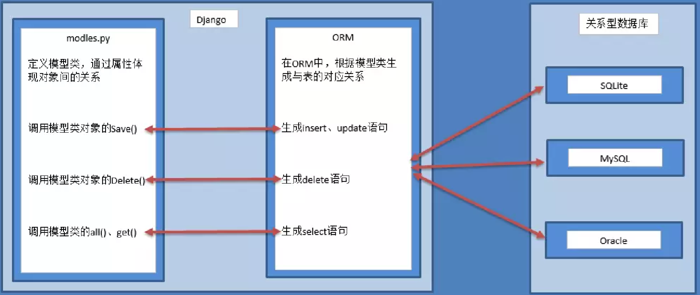
39. 列表推导式的骚操作
[[1,2],[3,4],[5,6]]一行代码展开该列表，得出[1,2,3,4,5,6]
list1 = [[1, 2], [3, 4], [5, 6]]
list2 = [j for i in list1 for j in i]
print(list2)
out：
[1, 2, 3, 4, 5, 6]
使用 Numpy
import numpy as np
list3 = np.array(list1).flatten().tolist()
print(list3)
out：
[1, 2, 3, 4, 5, 6]
flatten 是将所有元素 copy 一份，并且变为一维数组。
40. join()方法
x="abc",y="def",z=["d","e","f"],分别求出 x.join(y)和 x.join(z)返回的结果
x = "abc"
y = "def"
z = ["d","e","f"]
m = x.join(y)
n = x.join(z)
print(m)
print(n)
out：
dabceabcf dabceabcf
join()括号里面的是可迭代对象，x 插入可迭代对象中间（每个都插一遍），形成字符串，结果一致，有没 有突然感觉字符串的常见操作都不会玩了
顺便建议大家学下os.path.join()方法，拼接路径经常用到，也用到了join,和字符串操作中的join有什么区别，该问题大家可以查阅相关文档
41、举例说明异常模块中 try except else finally 的相关意义
-
try..except..else 没有捕获到异常，执行 else 语句
-
try..except..finally 不管是否捕获到异常，都执行 finally 语句
try:
num = 100
print(num)
except NameError as errorMsg:
print("产生错误了:%s" % errorMsg)
else:
print("没有捕获到异常,执行else")
try:
num = 100
print(num)
except NameError as errorMsg:
print("产生错误了:%s" % errorMsg)
finally:
print("无论是否捕获到异常,都执行finally")
out:
100 没有捕获到异常,执行 else 100 无论是否捕获到异常,都执行 finally
42、python 中交换两个数值
a, b = 3, 4
print(a, b)
a, b = b, a
print(a, b)
out:
3 4 4 3
Python 中是引用机制.
所有的对象都是引用赋值.
=赋值都是改变引用.
Python 的语法糖,上述的逗号连续赋值的时候不会在赋值的过程中改变.
43、zip()函数用法
zip()函数在运算时，会以一个或多个序列（可迭代对象）做为参数，返回一个元组的列表。同时将这些序列中并排的元素配对。
zip()参数可以接受任何类型的序列，同时也可以有两个以上的参数;当传入参数的长度不 同时，zip 能自动以最短序列长度为准进行截取，获得元组。
各种常见排序算法的比较
一、详细时间复杂度总结
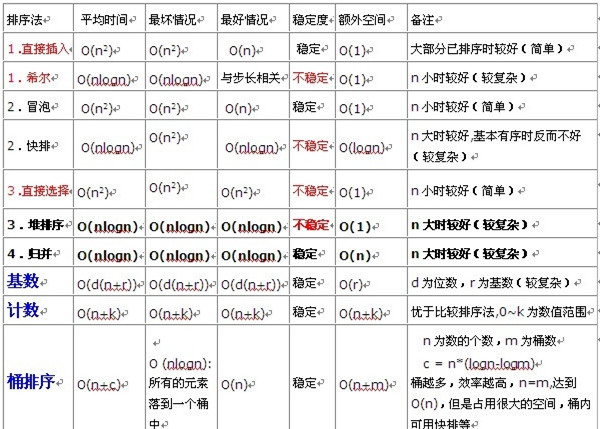
二、稳定性分析

**不稳定排序算法：**选择排序、快速排序、希尔排序、堆排序
**稳定排序算法：**而冒泡排序、插入排序、归并排序和基数排序
三、常见排序算法简要分析：
(1)冒泡排序
冒泡排序就是把小的元素往前调或者把大的元素往后调。比较是相邻的两个元素比较，交换也发生在这两个元素之间。所以，如果两个元素相等，我想你是不会再无聊地把他们俩交换一下的；如果两个相等的元素没有相邻，那么即使通过前面的两两交换把两个相邻起来，这时候也不会交换，所以相同元素的前后顺序并没有改变，所以冒泡排序是一种稳定排序算法。
(2)选择排序
选择排序是给每个位置选择当前元素最小的，比如给第一个位置选择最小的，在剩余元素里面给第二个元素选择第二小的，依次类推，直到第 n - 1 个元素，第 n 个元素不用选择了，因为只剩下它一个最大的元素了。那么，在一趟选择，如果当前元素比一个元素小，而该小的元素又出现在一个和当前元素相等的元素后面，那么交换后稳定性就被破坏了。比较拗口，举个例子，序列 5 8 5 2 9，我们知道第一遍选择第 1 个元素 5 会和 2 交换，那么原序列中 2 个 5 的相对前后顺序就被破坏了，所以选择排序不是一个稳定的排序算法。
(3)插入排序
插入排序是在一个已经有序的小序列的基础上，一次插入一个元素。当然，刚开始这个有序的小序列只有 1 个元素，就是第一个元素。比较是从有序序列的末尾开始，也就是想要插入的元素和已经有序的最大者开始比起，如果比它大则直接插入在其后面，否则一直往前找直到找到它该插入的位置。如果碰见一个和插入元素相等的，那么插入元素把想插入的元素放在相等元素的后面。所以，相等元素的前后顺序没有改变，从原无序序列出去的顺序就是排好序后的顺序，所以插入排序是稳定的。
(4)快速排序
快速排序有两个方向，左边的 i 下标一直往右走，当 a[i] <= a[center_index]，其中 center_index 是中枢元素的数组下标，一般取为数组第 0 个元素。而右边的 j 下标一直往左走，当 a[j] > a[center_index]。如果 i 和 j 都走不动了，i <= j，交换 a[i]和 a[j],重复上面的过程，直到 i > j。 交换 a[j]和 a[center_index]，完成一趟快速排序。在中枢元素和 a[j]交换的时候，很有可能把前面的元素的稳定性打乱，比如序列为 5 3 3 4 3 8 9 10 11，现在中枢元素 5 和 3（第 5 个元素，下标从 1 开始计）交换就会把元素 3 的稳定性打乱，所以快速排序是一个不稳定的排序算法，不稳定发生在中枢元素和 a[j] 交换的时刻。
(5)归并排序
归并排序是把序列递归地分成短序列，递归出口是短序列只有 1 个元素（认为直接有序）或者 2 个序列（1 次比较和交换），然后把各个有序的段序列合并成一个有序的长序列，不断合并直到原序列全部排好序。可以发现，在 1 个或 2 个元素时，1 个元素不会交换，2 个元素如果大小相等也没有人故意交换，这不会破坏稳定性。那么，在短的有序序列合并的过程中，稳定是是否受到破坏？没有，合并过程中我们可以保证如果两个当前元素相等时，我们把处在前面的序列的元素保存在结果序列的前面，这样就保证了稳定性。所以，归并排序也是稳定的排序算法。
(6)基数排序
基数排序是按照低位先排序，然后收集；再按照高位排序，然后再收集；依次类推，直到最高位。有时候有些属性是有优先级顺序的，先按低优先级排序，再按高优先级排序，最后的次序就是高优先级高的在前，高优先级相同的低优先级高的在前。基数排序基于分别排序，分别收集，所以其是稳定的排序算法。
(7)希尔排序(shell)
希尔排序是按照不同步长对元素进行插入排序，当刚开始元素很无序的时候，步长最大，所以插入排序的元素个数很少，速度很快；当元素基本有序了，步长很小， 插入排序对于有序的序列效率很高。所以，希尔排序的时间复杂度会比 O(n^2)好一些。由于多次插入排序，我们知道一次插入排序是稳定的，不会改变相同元素的相对顺序，但在不同的插入排序过程中，相同的元素可能在各自的插入排序中移动，最后其稳定性就会被打乱，所以 shell 排序是不稳定的。
(8)堆排序
我们知道堆的结构是节点 i 的孩子为 2 _ i 和 2 _ i + 1 节点，大顶堆要求父节点大于等于其 2 个子节点，小顶堆要求父节点小于等于其 2 个子节点。在一个长为 n 的序列，堆排序的过程是从第 n / 2 开始和其子节点共 3 个值选择最大（大顶堆）或者最小（小顶堆），这 3 个元素之间的选择当然不会破坏稳定性。但当为 n / 2 - 1， n / 2 - 2， ... 1 这些个父节点选择元素时，就会破坏稳定性。有可能第 n / 2 个父节点交换把后面一个元素交换过去了，而第 n / 2 - 1 个父节点把后面一个相同的元素没 有交换，那么这 2 个相同的元素之间的稳定性就被破坏了。所以，堆排序不是稳定的排序算法。
递归解法
F(n) = n; n = 0,1
F(n) = F(n-1) + F(n-2),n >= 2;
斐波那契数列的推导式如上，相当简单，所以很容易就能写出递归的解法。
import time
from functools import wraps
def print_func_time(function):
@wraps(function)
def func_time(*args, **kwargs):
t0 = time.perf_counter()
result = function(*args, **kwargs)
t1 = time.perf_counter()
print("Total running time: %s s" % (str(t1 - t0)))
return result
return func_time
def fiBo(n):
if n <= 1:
return n
else:
return fiBo(n - 1) + fiBo(n - 2)
@print_func_time
def solution(n):
print(fiBo(n))
# 0 1 1 2 3 5 8
if __name__ == '__main__':
solution(40)
out：
102334155 Total running time: 41.485671385 s
显然，才 40，时间效率就很低下了。
这是为什么呢？
当我们计算 5 的时候，会进行下面这样的计算：
|--F(1)
|--F(2)|
|--F(3)| |--F(0)
| |
|--F(4)| |--F(1)
| |
| | |--F(1)
| |--F(2)|
| |--F(0)
F(5)|
| |--F(1)
| |--F(2)|
| | |--F(0)
|--F(3)|
|
|--F(1)
为了计算 fibo(5)，需要计算 fibo(3)，fibo(4)；而为了计算 fibo(4)，需要计算 fibo(2)，fibo(3)……最终为了得到 fibo(5)的结果，fibo(0)被计算了 3 次，fibo(1)被计算了 5 次，fibo(2)被计算了 2 次。可以看到，它的计算次数几乎是指数级的
因此，虽然递归算法简洁，但是在这个问题中，它的时间复杂度却是难以接受的。除此之外，递归函数调用的越来越深，它们在不断入栈却迟迟不出栈，空间需求越来越大，虽然访问速度高，但大小是有限的，最终可能导致栈溢出。 在 linux 中，我们可以通过下面的命令查看栈空间的软限制：
$ ulimit -s
8192
可以看到，默认栈空间大小只有 8M。一般来说，8M 的栈空间对于一般程序完全足够。如果 8M 的栈空间不够使用，那么就需要重新审视你的代码设计了。
改进递归
既然我们知道最初版本的递归存在大量的重复计算，那么我们完全可以考虑将已经计算的值保存起来，从而避免重复计算，该版本代码实现如下：
def fiBo(n, lst):
if n < 2:
return n
else:
lst[n] = fiBo(n-1, lst) + lst[n-2]
return lst[n]
@print_func_time
def solution(n, lst):
print(fiBo(n, lst))
# 0 1 1 2 3 5 8
if __name__ == '__main__':
arr = [0]+[1]*40
solution(40, arr)
out：
102334155 Total running time: 2.6667000000035745e-05 s
显然可见其效率还是不错的，时间复杂度为 O(n)。
但是特别注意的是，这种改进版的递归，虽然避免了重复计算，但是调用链仍然比较长。
迭代解法
显然，让你来算，你肯定不会说我先算 40，然后发现要算 39。
你肯定是算：
0+1=1
1+1=2
2+1=3
3+5=5
5+3=8
……
我们是正向计算的，而且是不断向后计算的。
理解到区别了没。
那么，我们是否也可以这样进行计算呢，显然，是可以的。
def fiBo(n):
n = n+1
pre1 = 0
pre2 = 1
if n < 2:
return n
loop = 1
ret = 0
while loop < n:
ret = pre1 + pre2
pre2 = pre1
pre1 = ret
loop += 1
# 可以使用Python的语法糖代替上面的循环体
# tmp = pre1 + pre2
# ret, pre2, pre1, loop = tmp, pre1, tmp, loop + 1
return ret
@print_func_time
def solution(n):
print(fiBo(n))
# 0 1 1 2 3 5 8
if __name__ == '__main__':
solution(40)
out：
102334155
Total running time: 2.0102999999993543e-05 s
时间复杂度为 O(n)。
尾递归解法
同样的思路，但是采用尾递归的方法来计算。
要计算第 n 个斐波那契数，我们可以先计算第一个，第二个，如果未达到 n，则继续递归计算。
def fiBoProcess(n, pre1, pre2, begin):
if n == begin:
return pre1 + pre2
else:
begin += 1
return fiBoProcess(n, pre2, pre1 + pre2, begin)
def fiBo(n):
if n < 2:
return n
else:
return fiBoProcess(n, 0, 1, 2)
@print_func_time
def solution(n):
print(fiBo(n))
# 0 1 1 2 3 5 8
if __name__ == '__main__':
solution(40)
out：
102334155 Total running time: 2.338399999995966e-05 s
可见，其效率并不逊于迭代法。尾递归在函数返回之前的最后一个操作仍然是递归调用。尾递归的好处是，进入下一个函数之前，已经获得了当前函数的结果，因此不需要保留当前函数的环境，内存占用自然也是比最开始提到的递归要小。时间复杂度为 O(n)。
1-两数之和
万里长征始于足下。
给定一个整数数组 nums 和一个目标值 target，请你在该数组中找出和为目标值的那 两个 整数，并返回他们的数组下标。
你可以假设每种输入只会对应一个答案。但是，你不能重复利用这个数组中同样的元素。
示例:
给定 nums = [2, 7, 11, 15], target = 9
因为 nums[0] + nums[1] = 2 + 7 = 9 所以返回 [0, 1]
来源：力扣（LeetCode） 链接：https://leetcode-cn.com/problems/two-sum
解法 1：双重循环
乍一看，挺简单，不就两重循环么。说干就干。
class Solution:
def twoSum(self, nums: List[int], target: int) -> List[int]:
length = len(nums)
ret = []
isFind=False
for i in range(length):
for j in range(length):
if i==j:
continue
elif nums[i] + nums[j] == target:
isFind=True
ret.append(i)
ret.append(j)
if isFind:
return ret
return ret
这里再提供一个计算函数执行时间的装饰器（学以致用）
def print_func_time(function):
@wraps(function)
def func_time(*args, **kwargs):
t0 = time.perf_counter()
result = function(*args, **kwargs)
t1 = time.perf_counter()
print("Total running time: %s s" % (str(t1 - t0)))
return result
return func_time
当然，事情没有那么简单，显然而且必然的，在最后一组数据下超时了。
此处数据过长，就不贴了，自己去超时的地方看看就ok了
自己本地跑也是要 11-12s 左右的（视电脑不同而不同。）
Total running time: 12.628380413 s
[8010, 8011]
暂时没有什么错误发生，那么接下来就是考虑优化的事情了。
-
首先就是我们的 ret 不必要存在，可以直接返回的时候封装成
list就可以了，可以省掉一点 append 操作的时间。 -
然后就是我们的 isFind 判断是不必要的，题目中已经假设了必然有且只有一个结果，我们发现结果的时候直接返回就可以了。
-
再接着，我们的
j不必要从头开始遍历，会造成冗余的循环。只要从i+1的地方开始就可以了。
修改后的代码长这样：
def twoSum(self, nums: List[int], target: int) -> List[int]:
length = len(nums)
for i in range(length):
for j in range(i+1,length):
if nums[i] + nums[j] == target:
return [i,j]
return []
时间下降了很多：
Total running time: 6.893857144 s
[8010, 8011]
当然，这显然不符合我们的要求，虽然题目不说，但是，我们肯定要压缩到 1s 以内的。
考虑到，普通 index 的遍历速度 < enumerate <iterator。
但是我们这边需要我们遍历的索引。所以我们考虑使用 enumerate 而不是使用 iterator。
Python 中加法操作好像比较耗时，在大量操作后，iterator 的操作时间已经比 enumerate 直接取索引高很多了。
所以不考虑使用 iterator，在迭代内部计算索引。（实操证明过了，不信可以自己实验）
时间再次下降 1 秒：
def twoSum(self, nums: List[int], target: int) -> List[int]:
length = len(nums)
# newNums = sorted(enumerate(nums),key=lambda x:x[1])
for i,item in enumerate(nums):
for j in range(i+1,length):
if item+nums[j] == target:
return [i,j]
Total running time: 5.895048940000001 s
[8010, 8011]
这时候我们再考虑，target值是两者相加得到（数据组中有负数存在需要考虑）。
target>=0的情况下，必然有一个数是小于target的target<0的情况下，必然有一个数是大于target的
那么，我们可以先对数组进行一下排序，以对循环进行剪枝：
def twoSum(self, nums: List[int], target: int) -> List[int]:
length = len(nums)
newNums = sorted(enumerate(nums),key=lambda x:x[1])
if target >= 0:
for i in range(length):
if i > target:
break
for j in range(i + 1, length):
if newNums[i][1] + newNums[j][1] == target:
return [newNums[i][0], newNums[j][0]]
return []
elif target < 0:
for i in range(length):
if i < target:
break
for j in range(i + 1, length):
if newNums[i][1] + newNums[j][1] == target:
return [newNums[i][0], newNums[j][0]]
return []
我们发现已经低于 0.01 秒了。已经能通过 LeetCode 的提交了。但是你还是 Too young too simple。
那是因为我们的数据有点特殊，我们在此把target替换成（25196+25194）= 50390
我们发现，时间还是超时了（当然是本地跑的，10s 左右）
Total running time: 10.42657594 s
[12597, 12598]
当然不能因为特殊而特殊啦
本着科学研究的精神，我们进行一下升华
解法 2：哈希表
我们反过来考虑一下，我们何苦去它有的里面找有两个数相加得到目标值呢。凭啥听他的一定要到它里面找。
（当然得从里面找）
但是，我们可以考虑一下，我从list中取第i个值，然后计算出target-list[i]，然后我去 list 里面找，我计算出来的这个差值是否在 list
中，如果在，那就对了，如果不在，就取i+1进行下一步运算。
当然不能用双重循环啦，那跟第一种方法没区别了。
我们考虑到哈希表，Python 中内置的字典dict就是一个哈希表：
def twoSum(self, nums: List[int], target: int) -> List[int]:
hashmap = {}
for index, num in enumerate(nums):
another_num = target - num
if another_num in hashmap:
return [hashmap[another_num], index]
hashmap[num] = index
return None
同时我们边存边判断，这样可以减少一次循环。
你可能考虑到，哈希表，不存在重复值，但是我的数组可能存在重复值，会不会有影响。
看代码：
- 我们外层循环是对
enumerate(nums)进行循环的，所以每一个原有的值都会遍历到 - 题目中有说到有且只有一个答案。那么，重复值引起的有两种选择的情况也是不存在的。
2-两数相加
给出两个非空的链表用来表示两个非负的整数。其中，它们各自的位数是按照逆序的方式存储的，并且它们的每个节点只能存储一位数字。
如果，我们将这两个数相加起来，则会返回一个新的链表来表示它们的和。
您可以假设除了数字0之外，这两个数都不会以0开头。
示例：
输入：(2 -> 4 -> 3) + (5 -> 6 -> 4) 输出：7 -> 0 -> 8 原因：342 + 465 = 807
来源：力扣（LeetCode） 链接：https://leetcode-cn.com/problems/add-two-numbers
本操作类似大数字的加法，思想类似循环字符串大数字的相加。
再加上链表的基本操作，包括两个链表的连接。
一开始思想比较混乱的时候，脑子里怎么想的就怎么来，写出如下代码：
def addTwoNumbers(self, l1: ListNode, l2: ListNode) -> ListNode:
flag = 0
ret = []
while l1 != None and l2 !=None:
midNum = l1.val + l2.val + flag
if midNum >= 10:
flag, midNum = divmod(midNum, 10)
else:
flag = 0
ret.append(midNum)
l1 = l1.next
l2 = l2.next
l3 = ListNode(ret[0])
mid = l3
if l1 == None and l2 == None and flag != 0:
ret.append(flag)
flag = 0
for i in ret[1:]:
mid.next = ListNode(i)
mid = mid.next
l1 = l1 if l1 else l2
while l1 != None and flag != 0:
midNum = l1.val + flag
if midNum >= 10:
flag, midNum = divmod(midNum, 10)
else:
flag = 0
mid.next = ListNode(midNum)
l1 = l1.next
mid = mid.next
if l1 != None:
mid.next = l1
if flag != 0:
while mid.next!=None:
mid = mid.next
mid.next = ListNode(flag)
return l3
flag用来判断是否需要进位。
ret是一个辅助工具，用来存储相加后得到的值，然后再转成ListNode，原因是无法写出动态生成l3的链表（自己太菜，后来去掉了这个辅助）
然后divmod(除数，被除数)函数返回一个元组tuple（商，余数）。我们的商就用来增加l3的节点，余数就作为进位判断。
在一开始，需要处理短链表的全部和长链表等长的部分。

整体思路如上。代码实现就如上了。
接下来进行一些合并，去除掉一些不必要的代码：
def addTwoNumbers2(self, l1, l2):
target = ListNode(0) # 作为根节点的引用
p = target
add = 0 # 作为上一次相加是否需要进1的依据
while l1 and l2:
p.next = ListNode((l1.val + l2.val + add) % 10)
add = (l1.val + l2.val + add) // 10
p, l1, l2 = p.next, l1.next, l2.next
l1 = l1 if l1 else l2
while add:
if l1:
p.next = ListNode((l1.val + add) % 10)
add = (l1.val + add) // 10
p, l1 = p.next, l1.next
else:
p.next = ListNode(add)
p = p.next
break
p.next = l1
return target.next
为了去掉ret数组，我们在一开始直接初始化ListNode(0)作为头结点（返回的时候返回target.next）即可去掉头结点
在两链表一一对应的部分，我们执行如下代码：
while l1 and l2:
p.next = ListNode((l1.val + l2.val + add) % 10)
add = (l1.val + l2.val + add) // 10
p, l1, l2 = p.next, l1.next, l2.next
然后经过这一步赋值操作，则可以得到剩下的链表或者空：
l1 = l1 if l1 else l2
接下来判断是否需要进位，如果不需要，则直接追加剩余部分或空：
p.next = l1
如果需要进位
while add:
if l1:
p.next = ListNode((l1.val + add) % 10)
add = (l1.val + add) // 10
p, l1 = p.next, l1.next
else:
p.next = ListNode(add)
p = p.next
break
则判断剩余长链表是否有值，如果没有，则直接追加要进位的 1（else语句）
如果有，则执行if里面的语句，进行两数相加，直到不需要进位，最后直接追加剩余部分就可以了。
以上的条件分支比第一次少了很多，主要是要头脑清晰。
再来分析一下第二次所做的判断。
在处理到两者相等的时候，不去思考是否有剩余的值，先判断是否需要进位，在有进位的基础下，合并了一部分操作。具体需要自行体会。
思考顺序和角度不同写出来的代码也不同。无所谓对错。
两种方案的耗时和空间使用都差不多，只是第一种代码量少一点。比较符合常规的思考。
第二种需要在第一种的基础上进行更深层次的思考。
3-无重复字符的最长子串
给定一个字符串，请你找出其中不含有重复字符的 最长子串 的长度。
示例 1:
输入: "abcabcbb" 输出: 3 解释: 因为无重复字符的最长子串是 "abc"，所以其长度为 3。
示例 2:
输入: "bbbbb" 输出: 1 解释: 因为无重复字符的最长子串是 "b"，所以其长度为 1。
示例 3:
输入: "pwwkew" 输出: 3 解释: 因为无重复字符的最长子串是 "wke"，所以其长度为 3。 请注意，你的答案必须是 子串 的长度，"pwke" 是一个子序列，不是子串。
来源：力扣（LeetCode） 链接：https://leetcode-cn.com/problems/longest-substring-without-repeating-characters
首先想到的就是遍历。
从头到尾，每一个位置i，都向后搜索到len(s)的位置，然后用一个set保存不重复的值，如果出现重复值则退出本次循环，重置一些状态，返回set中元素的个数，就是本次找到的最长子串。
class Solution:
def lengthOfLongestSubstring(self, s: str) -> int:
lenList = []
currentLen = 0
sss = set()
for i in range(len(s)):
for j in range(i, len(s)):
if s[j] in sss:
lenList.append(currentLen)
currentLen = 0
sss.clear()
break
else:
sss.add(s[j])
currentLen += 1
if j == len(s)-1:
lenList.append(currentLen)
currentLen = 0
sss.clear()
break
return max(lenList) if len(lenList)!=0 else 0
显然，双层循环，时间复杂度为O(n²)
进阶（滑动窗口）
现在假设我们有一个可伸缩的长方形的框，初始长度是1，然后我们拿这个框，从头去套我们的字符串。
那么如果框中没有重复值，我们就更新最大长度，然后框的长度+1，如果加1后框中无重复值，则重复上述操作。最后返回最大值。
若果遇到重复值，则只要将我们的框，从上一个这个值出现的位置的后一位截取到最后，即可。
这样只需要进行一次遍历。时间复杂度为O(n)
class Solution:
def lengthOfLongestSubstring(self, s: str) -> int:
if s == "":
return 0
maxLen = 0
currentLen = 1
sss = []
for i in s:
if i not in sss:
sss.append(i)
maxLen = max(currentLen, maxLen)
else:
sss = sss[sss.index(i)+1:]
sss.append(i)
currentLen = len(sss)
currentLen += 1
return maxLen
O(n)的时间效率当然是比O(n²)高出不少的。
4. 寻找两个有序数组的中位数
给定两个大小为 m 和 n 的有序数组 nums1 和 nums2。
请你找出这两个有序数组的中位数，并且要求算法的时间复杂度为 O(log(m + n))。
你可以假设 nums1 和 nums2 不会同时为空。
示例 1:
nums1 = [1, 3] nums2 = [2]
则中位数是 2.0
示例 2:
nums1 = [1, 2] nums2 = [3, 4]
则中位数是 (2 + 3)/2 = 2.5
来源：力扣（LeetCode） 链接：https://leetcode-cn.com/problems/median-of-two-sorted-arrays
看到时间复杂度为 O(log(m+n))，理所当然的想到，小根堆（大根堆）
因为构建根堆的时间复杂度就是 log(N)。
当然，如果没有这个条件限制，那么会产生以下的思考。
姿势 1
直接整合排序找中位数：
class Solution:
def findMedianSortedArrays(self, nums1: List[int], nums2: List[int]) -> float:
nums1 = nums1 + nums2
nums1.sort()
length = len(nums1)
if length % 2 == 0:
k1 = nums1[int(length / 2) - 1]
k2 = nums1[int(length / 2)]
return (k1 + k2) / 2
else:
return nums1[int(length / 2)]
简单粗暴，但是时间复杂度肯定不符合要求，虽然跑测试通过了。
可能在调用自带的 sort 方法的时候会自动做优化，但是肯定也不符合要求。
sort 与 sorted 区别：
sort 是应用在 list 上的方法，sorted 可以对所有可迭代的对象进行排序操作。
list 的 sort 方法返回的是对已经存在的列表进行操作，无返回值，而内建函数 sorted 方法返回的是一个新的 list，而不是在原来的基础上进行的操作。
姿势 2
再就想到的是将两个列表整合起来排序，由于是两个有序数组，可以使用链表的合并。
优化一点就是，合并到中位数就停止。
有序链表的合并属于数据结构基础知识，不再赘述。
时间复杂度肯定不达标，大概是 O(N)
姿势 3
正主，小根堆。
借助的是 heapq 实现小根堆。
这个肯定是符合时间复杂度要求的，但是这个效率和内存不太满意。
import heapq
class TopkHeap(object):
def __init__(self, k):
self.k = k
self.data = []
def push(self, elem):
if len(self.data) < self.k:
heapq.heappush(self.data, elem)
else:
topk_small = self.data[0]
if elem > topk_small:
heapq.heapreplace(self.data, elem)
def TopK(self):
return [x for x in reversed([heapq.heappop(self.data) for x in range(len(self.data))])]
class Solution:
def findMedianSortedArrays(self, nums1: List[int], nums2: List[int]) -> float:
len1 = len(nums1)
len2 = len(nums2)
nums = nums1+nums2
# 如果即奇数个，则直接取中位数，也就是第k大的值
if (len1+len2) % 2 != 0:
k = int((len1+len2)/2+1)
th = TopkHeap(k)
for i in nums:
th.push(i)
return th.TopK()[-1]
# 如果是偶数个
else:
k = int((len1+len2)/2+1)
th = TopkHeap(k)
for i in nums:
th.push(i)
data = th.TopK()
return (data[-1]+data[-2])/2
姿势 4
官方说的，二分法？没怎么看懂。感觉还是比较复杂的。
https://leetcode-cn.com/problems/median-of-two-sorted-arrays/solution/4-xun-zhao-liang-ge-you-xu-shu-zu-de-zhong-wei-shu/
这个回答挺好的。但是我没法复述了。。。
5. 最长回文子串
给定一个字符串 s，找到 s 中最长的回文子串。你可以假设 s 的最大长度为 1000。
示例 1：
输入: "babad" 输出: "bab" 注意: "aba" 也是一个有效答案。
示例 2：
输入: "cbbd" 输出: "bb"
来源：力扣（LeetCode） 链接：https://leetcode-cn.com/problems/longest-palindromic-substring
1. 暴力法
最先想到的应该是暴力法。
这中间是有很多优化的想法的。
从头开始两层 for 循环截取字符串，然后判断字符串是否回文是最基本的想法。
但是这样的循环会出现很多重复的操作。
但是可以换一种思路。取头index1，尾index2。
循环头index1，循环尾index2，判断截取出来的字符串是否是回文串，如果不是，index2自减。
循环尾 index2：
判断截取出来的字符串是否是回文串，如果不是，index2 自减。
如果是，那么要和之前保存的最长的回文串ret进行长度比较。如果比ret长，则替换。
==直接跳出第二层循环==，因为本次外循环中，就算有index2还满足条件，那也比ret短了。
这是一个剪枝操作。leetcode上的时间大概是1600ms，虽然通过了，但是不太满意。
class Solution:
def longestPalindrome(self, s: str) -> str:
length = len(s)
ret = ""
# 从头index1开始
for index1 in range(length):
# 从尾index2开始
for index2 in range(-1, -(length + 1), -1):
# 如果两者相同，那么才判断是否相同。不同肯定不是回文串。
if s[index1] == s[index2]:
# 截取字符串并反转判断是否是回文串
str1 = s[index1:index2 + length + 1]
str2 = str1[::-1]
if str1 == str2:
if len(str1) > len(ret):
ret = str1
# 如果是，那么不管怎么样都退出内循环。
break
return ret
2. 中心拓展法
我们观察到回文中心的两侧互为镜像。因此，回文可以从它的中心展开，并且只有2n - 1个这样的中心。
你可能会问，为什么会是 2n−1 个，而不是 n 个中心？
原因在于所含字母数为偶数的回文的中心可以处于两字母之间（例如 “abba” 的中心在两个‘b’ 之间）。
class Solution:
def longestPalindrome(self, s: str) -> str:
if s is None or len(s) < 1:
return ""
start = 0
end = 0
for i in range(len(s)):
# 从i的位置开始向两侧检索，分界线在i。长度一定是奇数。
len1 = self.expandAroundCenter(s, i, i)
# 从i和i+1的位置向两侧检索，分界线在中间。长度一定是偶数。
len2 = self.expandAroundCenter(s, i, i+1)
length = max(len1, len2)
if length > end - start + 1:
# 如果长度是偶数，则左边界向右挪1，
# 如果是奇数，这样操作的数值是不会变的。
start = i - (length - 1) // 2
# 向后的正常取值就可以了，本身就是向后扩展的。
end = i + length // 2
return s[start:end + 1]
def expandAroundCenter(self, s: str, left: int, right: int):
L, R = left, right
while L >= 0 and R < len(s) and s[L] == s[R]:
L -= 1
R += 1
return R - L - 1
5. 动态规划
解决这类 “最优子结构” 问题，可以考虑使用 “动态规划”：
1、定义 “状态”； 2、找到 “状态转移方程”。
记号说明： 下文中，使用记号 s[l, r] 表示原始字符串的一个子串，l、r 分别是区间的左右边界的索引值，使用左闭、右闭区间表示左右边界可以取到。举个例子，当
s = 'babad' 时，s[0, 1] = 'ba' ，s[2, 4] = 'bad'。
1、定义 “状态”，这里 “状态”数组是二维数组。
dp[l][r] 表示子串 s[l, r]（包括区间左右端点）是否构成回文串，是一个二维布尔型数组。即如果子串 s[l, r] 是回文串，那么 dp[l][r] = true。
2、找到 “状态转移方程”。
首先，我们很清楚一个事实：
1、当子串只包含 1 个字符，它一定是回文子串；
2、当子串包含 2 个以上字符的时候：如果 s[l, r] 是一个回文串，例如 “abccba”，那么这个回文串两边各往里面收缩一个字符（如果可以的话）的子串
s[l + 1, r - 1] 也一定是回文串，即：如果 dp[l][r] == true 成立，一定有 dp[l + 1][r - 1] = true 成立。
根据这一点，我们可以知道，给出一个子串 s[l, r] ，如果 s[l] != s[r]，那么这个子串就一定不是回文串。如果 s[l] == s[r] 成立，就接着判断
s[l + 1] 与 s[r - 1]，这很像中心扩散法的逆方法。
事实上，当 s[l] == s[r] 成立的时候，dp[l][r] 的值由 dp[l + 1][r - l]
决定，这一点也不难思考：当左右边界字符串相等的时候，整个字符串是否是回文就完全由“原字符串去掉左右边界”的子串是否回文决定。但是这里还需要再多考虑一点点：“原字符串去掉左右边界”的子串的边界情况。
1、当原字符串的元素个数为 3 个的时候，如果左右边界相等，那么去掉它们以后，只剩下 1 个字符，它一定是回文串，故原字符串也一定是回文串；
2、当原字符串的元素个数为 2 个的时候，如果左右边界相等，那么去掉它们以后，只剩下 0 个字符，显然原字符串也一定是回文串。
把上面两点归纳一下，只要 s[l + 1, r - 1]
至少包含两个元素，就有必要继续做判断，否则直接根据左右边界是否相等就能得到原字符串的回文性。而“s[l + 1, r - 1] 至少包含两个元素”等价于 l + 1 < r - 1，整理得
l - r < -2，或者 r - l > 2。
综上，如果一个字符串的左右边界相等，以下二者之一成立即可： 1、去掉左右边界以后的字符串不构成区间，即“ s[l + 1, r - 1] 至少包含两个元素”的反面，即
l - r >= -2，或者 r - l <= 2； 2、去掉左右边界以后的字符串是回文串，具体说，它的回文性决定了原字符串的回文性。
于是整理成“状态转移方程”：
dp[l, r] = (s[l] == s[r] and (l - r >= -2 or dp[l + 1, r - 1]))
或者
dp[l, r] = (s[l] == s[r] and (r - l <= 2 or dp[l + 1, r - 1]))
编码实现细节：因为要构成子串 l 一定小于等于 r ，我们只关心 “状态”数组“上三角”的那部分取值。理解上面的“状态转移方程”中的
(r - l <= 2 or dp[l + 1, r - 1]) 这部分是关键，因为 or 是短路运算，因此，如果收缩以后不构成区间，那么就没有必要看继续 dp[l + 1, r - 1]
的取值。
读者可以思考一下：为什么在动态规划的算法中，不用考虑回文串长度的奇偶性呢。想一想，答案就在状态转移方程里面。
具体编码细节在代码的注释中已经体现。
class Solution:
def longestPalindrome(self, s: str) -> str:
size = len(s)
if size <= 1:
return s
# 二维 dp 问题
# 状态：dp[l,r]: s[l:r] 包括 l，r ，表示的字符串是不是回文串
# 设置为 None 是为了方便调试，看清楚代码执行流程
dp = [[False for _ in range(size)] for _ in range(size)]
longest_l = 1
res = s[0]
# 因为只有 1 个字符的情况在最开始做了判断
# 左边界一定要比右边界小，因此右边界从 1 开始
for r in range(1, size):
for l in range(r):
# 状态转移方程：如果头尾字符相等并且中间也是回文
# 在头尾字符相等的前提下，如果收缩以后不构成区间（最多只有 1 个元素），直接返回 True 即可
# 否则要继续看收缩以后的区间的回文性
# 重点理解 or 的短路性质在这里的作用
if s[l] == s[r] and (r - l <= 2 or dp[l + 1][r - 1]):
dp[l][r] = True
cur_len = r - l + 1
if cur_len > longest_l:
longest_l = cur_len
res = s[l:r + 1]
# 调试语句
# for item in dp:
# print(item)
# print('---')
return res
以上需要相当长时间的理解和阅读。
4. 膜拜大佬
class Solution:
def longestPalindrome(self, s: str) -> str:
if (len(s) <= 1) or s == s[::-1]:
return s
start = 0
maxlen = 0
for i in range(len(s)):
str1 = s[i - maxlen: i + 1]
str2 = s[i - maxlen - 1: i + 1]
if (i - maxlen) >= 0 and (str1 == str1[::-1]):
start, maxlen = i - maxlen, len(str1)
if (i - maxlen - 1) >= 0 and (str2 == str2[::-1]):
start, maxlen = i - maxlen - 1, len(str2)
return s[start: start + maxlen]
贴上大佬代码贡阅读。
不太理解。。。。
6. Z 字形变换
将一个给定字符串根据给定的行数，以从上往下、从左到右进行 Z 字形排列。
比如输入字符串为 "LEETCODEISHIRING" 行数为 3 时，排列如下：
L C I R
E T O E S I I G
E D H N
之后，你的输出需要从左往右逐行读取，产生出一个新的字符串，比如："LCIRETOESIIGEDHN"。
请你实现这个将字符串进行指定行数变换的函数：
string convert(string s, int numRows);
示例 1:
输入: s = "LEETCODEISHIRING", numRows = 3
输出: "LCIRETOESIIGEDHN"
示例 2:
输入: s = "LEETCODEISHIRING", numRows = 4
输出: "LDREOEIIECIHNTSG"
解释:
L D R
E O E I I
E C I H N
T S G
来源：力扣（LeetCode） 链接：https://leetcode-cn.com/problems/zigzag-conversion
姿势 1：模拟法
模拟构建 Z 字型的顺序将最后的二维数组构建出来，最后再将数组还原成字符串，虽然能通过。但是效率很低下。
class Solution:
def computecolumns(self, length:int, numRows: int) -> int:
s1, y1 = divmod(length, 2 * numRows - 2)
s2, y2 = divmod(y1, numRows)
return s1 * (numRows - 1) + s2 + y2
def convert(self, s: str, numRows: int) -> str:
length = len(s)
if numRows == 1 or length == 0:
return s
maxRow = numRows
maxCol = self.computecolumns(length,numRows)
lst = [[-1 for i in range(maxCol)] for i in range(maxRow)]
# 记录方向,True向下，False向上
flag = False
# 记录当前行号，行号从1开始，和numRows对应
line = 1
# 记录当前列号，从0开始
col = 0
# index
i = 0
while i < length:
lst[line-1][col] = i
i += 1
if line == numRows or line == 1:
flag = not flag
if flag:
line += 1
else:
line -= 1
col += 1
return "".join([s[j] for i in lst for j in i if j != -1])
姿势 2：按行访问
实际上，我们并不需要对每个元素的位置定义那么精准。
只需要知道他在哪一行就可以了。访问到当前行的时候，加入字符就可以了。
class Solution:
def convert(self, s: str, numRows: int) -> str:
length = len(s)
if numRows == 1: return s
lst = [[] for i in range(min(numRows, length))]
line = 0
flag = False
for item in s:
lst[line].append(item)
if line == numRows - 1 or line == 0:
flag = not flag
line += 1 if flag else -1
return "".join([j for i in lst for j in i])
姿势 3：找规律
这个需要一定的思考时间。
思路：
按照与逐行读取 Z 字形图案相同的顺序访问字符串。
算法：
首先访问行0中的所有字符，接着访问行1，然后行2，依此类推...
对于所有整数k，
-
行
0中的字符位于索引k(2*numRows-2)处； -
行
numRows-1中的字符位于索引k(2*numRows-2)+numRows-1处； -
内部的
行i中的字符位于索引k(2*numRows-2)+i以及k(2*numRows-2)-i即，主列的在
+i处，非主列的在-i处，并且非主列的只需要增加一个。
Python 代码如下：
class Solution:
def convert(self, s: str, numRows: int) -> str:
if numRows == 1:
return s
ret = ""
n = len(s)
cycleLen = 2 * numRows - 2
for i in range(numRows):
for j in range(0, n, cycleLen):
if j + i >= n: break
ret += s[i + j]
# 如果非首行尾行，两个主列之间只需要增加一个字母。并且增加的这个字母的索引不能超出范围。
if i != 0 and i != numRows - 1 and j + cycleLen - i < n:
ret += s[j + cycleLen - i]
return ret
7. 整数反转
给出一个 32 位的有符号整数，你需要将这个整数中每位上的数字进行反转。
示例 1:
输入: 123
输出: 321
示例 2:
输入: -123
输出: -321
示例 3:
输入: 120
输出: 21
注意:
假设我们的环境只能存储得下 32 位的有符号整数，则其数值范围为 [−2^31, 2^31 − 1]。请根据这个假设，如果反转后整数溢出那么就返回 0。
来源：力扣（LeetCode） 链接：https://leetcode-cn.com/problems/reverse-integer
姿势 1:转为字符串再处理
class Solution:
def reverse(self, x: int) -> int:
ret = 0
string = str(x)
if x < 0:
string = string[1:]
string = string[::-1]
ret = -int(string)
else:
ret = int(string[::-1])
if ret < -2147483648 or ret > 2147483647:
return 0
return ret
姿势 2:使用栈
本质和上述方法差不多,不过多解释和书写.
姿势 3:直接进行数学计算
class Solution:
def reverse(self, x: int) -> int:
y, res = abs(x), 0
of = (1 << 31) - 1 if x > 0 else 1 << 31
while y != 0:
res = res * 10 + y % 10
if res > of:
return 0
y //= 10
return res if x > 0 else -res
时间效率和转为字符串之后再操作差不多
反转链表 ②
反转从位置 m 到 n 的链表。请使用一趟扫描完成反转。
说明: 1 ≤ m ≤ n ≤ 链表长度。
示例:
输入: 1->2->3->4->5->NULL, m = 2, n = 4 输出: 1->4->3->2->5->NULL
来源：力扣（LeetCode） 链接：https://leetcode-cn.com/problems/reverse-linked-list-ii 著作权归领扣网络所有。商业转载请联系官方授权，非商业转载请注明出处。
#include<stdio.h>
struct ListNode {
int val;
ListNode *next;
ListNode(int x) : val(x), next(NULL) {}
};
class Solution {
public:
ListNode* reverseList(ListNode* head,int m,int n) {
// 计算需要逆置的节点个数
int change_len = n-m+1;
// 初始化开始逆置的节点的前驱
ListNode *pre_head = NULL;
// 最终转换后的链表的头节点，用于返回，非特殊情况就是head
ListNode *result = head;
// 移动head到开始修改的节点
while(head && --m){
pre_head = head;
head = head->next;
}
// 将modify_list_tail指向当前的head，即逆置后的链表尾部
ListNode *modify_list_tail = head;
ListNode *new_head = NULL;
while(head && change_len){
ListNode *next = head->next;
head->next = new_head;
new_head = head;
head = next;
change_len--;
}
modify_list_tail->next = head;
if(pre_head){
pre_head->next = new_head;
}else{
result = new_head;
}
return result;
}
};
链表逆序
反转一个单链表。
示例:
输入: 1->2->3->4->5->NULL 输出: 5->4->3->2->1->NULL
进阶: 你可以迭代或递归地反转链表。你能否用两种方法解决这道题？
来源：力扣（LeetCode） 链接：https://leetcode-cn.com/problems/reverse-linked-list 著作权归领扣网络所有。商业转载请联系官方授权，非商业转载请注明出处。
1.双指针迭代法
已知链表头结点指针 head，将链表逆序。（不可以申请额外的空间）
给出链表的节点：
struct ListNode {
int val;
ListNode *next;
// 构造函数
ListNode(int x) : val(x), next(NULL) {}
};
C++解法 1：
class Solution {
public:
ListNode* reverseList(ListNode* head) {
ListNode *new_head = NULL;
while(head){
ListNode *next = head->next;
head->next = new_head;
new_head = head;
head = next;
}
return new_head;
}
};
首先保存头结点的下一个节点 next，
然后将旧链表的头节点指向新链表的头结点，
然后将新链表的头节点指向旧链表的头节点（因为旧链表的头节点此时已经成为了新链表的新的头结点）
最后将头结点指向 next（向后移动）
Python3 实现：
# Definition for singly-linked list.
# class ListNode:
# def __init__(self, x):
# self.val = x
# self.next = None
class Solution:
def reverseList(self, head: ListNode) -> ListNode:
new = None
while head is not None:
nextEl = head.next
head.next = new
new = head
head = nextEl
return new
2.递归
此方法的思想类似上面的思想，只不过需要放置环路存在。
class Solution:
def reverseList(self, head: ListNode) -> ListNode:
if not head or not head.next:
return head
start = self.reverseList(head.next)
head.next.next = head
head.next = None
return start